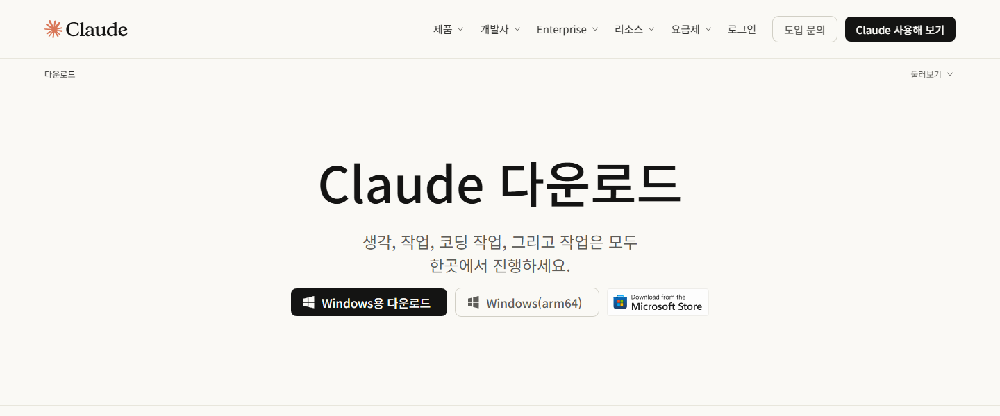
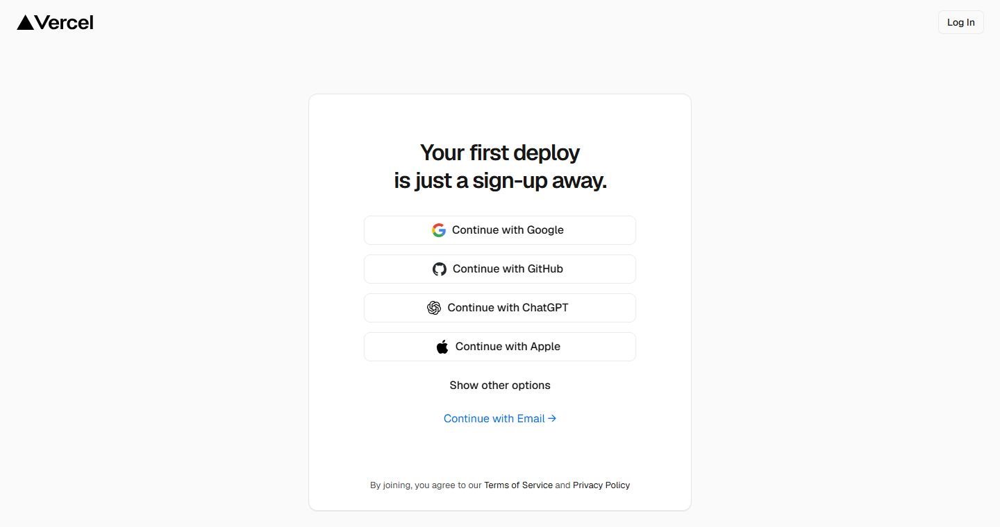

과일 하나를 주인공으로 한 소개 사이트
내가 좋아하는 소재를 광고처럼 표현합니다.
사용자 행동: 스크롤하고 과일을 클릭 추천이 소개 영상도 HTML로 만들었습니다. 8장에서 같은 방법으로 직접 만들어 봅니다.
AI를 직접 써보고, 눈에 보이는 결과물을 내 주소로 공개해 보면서 AI와 친해지는 교육입니다. 시작 전에 목표, 준비물, 그리고 꼭 지켜야 할 보안 수칙을 먼저 확인합니다.
이 교육은 "웹사이트 만드는 법"을 가르치는 것이 목적이 아닙니다. 진짜 목적은 AI와 일하는 방식에 익숙해지는 것입니다. 처음에는 낯설고 어렵게 느껴지는 AI를 직접 써 보면서 "생각보다 쉽네", "내 일에도 쓸 수 있겠네"라는 감각을 얻는 것이 목표입니다.
읽기만 해서는 친숙해지지 않습니다. 손으로 직접 말을 걸어 보고, 결과를 눈으로 확인하고, 마음에 안 들면 다시 부탁해 보는 경험이 쌓여야 합니다. 그래서 이 교육은 설명보다 따라 하기에 시간을 많이 씁니다.
https://[내-프로젝트].vercel.app 같은 주소가 생깁니다. 이 주소를 동료에게 보내면 누구나 열어 볼 수 있어서 "내가 만들었다"는 성취감이 큽니다.AI가 처음 만든 결과는 대개 "그럭저럭"입니다. 이것이 정상입니다. 첫 결과를 보고 "여기를 이렇게 바꿔 주세요"라고 한두 번 더 부탁하면 훨씬 좋아집니다. 이 교육에서 가장 많이 하게 될 일이 바로 이 "다시 부탁하기"입니다. 11장에서 이 기술을 실제 업무에 옮겨 봅니다.
교육이 끝나면 여러분의 손에는 인터넷 주소 하나가 남습니다.
https://[내-프로젝트].vercel.app
이 주소를 크롬(Chrome)이나 엣지(Edge) 같은 브라우저 주소창에 입력하면 여러분이 만든 사이트가 열립니다. 휴대폰으로 열어도 됩니다. 사이트는 보기만 하는 문서가 아니라, 직접 보고 만지는 인터랙티브 사이트입니다. 스크롤하면 화면이 움직이고, 버튼을 누르면 장면이 바뀌고, 슬라이더를 움직이면 분위기가 달라집니다.

.vercel.app으로 끝나는 내 주소가 보이고, 아래에 완성된 사이트가 열려 있습니다. 교육이 끝났을 때 이 모습이 목표입니다.어떤 사이트를 만들지는 6장에서 고릅니다. 예를 들어 딸기 같은 과일 하나를 광고처럼 소개하는 사이트, 스크롤하면 바닷속으로 내려가는 사이트, 시간 슬라이더로 낮과 밤이 바뀌는 도시 사이트 등이 후보입니다. 완성 예시를 직접 열어 볼 수도 있으니 지금은 "이런 것을 만드는구나" 정도만 기억해 두세요.
우리가 만드는 사이트는 가장 단순한 형태입니다. 로그인도 없고, 입력한 내용을 저장하는 서버도 없습니다.
| 구성 요소 | 어디에 있나요 | 쉬운 설명 |
|---|---|---|
| 콘텐츠 (글, 그림, 색, 문구) | 프로젝트 파일 안 | PC의 폴더 하나에 사이트 전체가 파일로 들어 있습니다. 문구를 바꾸고 싶으면 파일의 글을 바꾸면 됩니다. 이 일은 Claude가 대신 합니다. |
| 화면의 변화 (움직임, 클릭 반응, 스크롤 반응) | 방문자의 브라우저 | 방문자가 사이트를 열면 브라우저가 그 자리에서 움직임을 처리합니다. 서버가 따로 계산하지 않습니다. |
| 저장된 정보 (회원, 주문, 게시글) | 없음 (DB 없음) | 사람들이 남긴 정보를 보관하는 장소가 필요 없는 구조입니다. |
회원 정보나 주문 내역처럼 계속 쌓이는 정보를 보관하고 꺼내 쓰는 창고 같은 시스템입니다. 이 사이트에는 필요가 없기 때문에 만들기도 쉽고, 개인정보가 사이트에 쌓일 일도 없어 안전합니다. 정보를 저장하는 서비스는 훨씬 신경 쓸 것이 많아서, 이 교육의 범위 밖입니다.
사이트를 이루는 파일들을 한곳에 모아 둔 PC 안의 폴더입니다. 2장부터 나오는 "프로젝트"는 모두 이런 폴더 하나를 뜻합니다.
전체는 "준비 -> 만들기 -> 공개하기 -> 다듬기" 순서입니다. 처음 몇 장이 준비 단계라 조금 지루할 수 있지만, 한 번만 해 두면 끝까지 쓰는 기반입니다. 준비가 끝나면 그다음부터는 계속 재미있습니다.
| 단계 | 하는 일 | 해당 장 |
|---|---|---|
| 1. 설치 | Claude 데스크톱 앱을 설치합니다. 앱의 Code 탭에는 Claude Code가 들어 있습니다. 여기에 더해 Claude에게 부탁해, 터미널(검은 화면)의 어느 위치에서든 claude 명령을 쓸 수 있게(이 설정을 PATH라고 부릅니다) 해 둡니다. Windows라면 GitHub 연결에 쓰는 Git for Windows도 Claude에게 부탁해 함께 설치합니다. | 2장 |
| 2. 연결 | GitHub와 Vercel에 가입하고, 내 PC의 Claude와 GitHub, 그리고 GitHub와 Vercel을 연결합니다. | 3장, 4장 |
| 3. 스킬 | 디자인과 모션 실력을 Claude에게 추가로 설치합니다. 설치가 끝나면 새 세션(새 대화)을 시작해야 반영됩니다. | 5장 |
| 4. 화면 구성 | 만들고 싶은 주제를 고르고, 첫 화면을 말로 부탁해서 만듭니다. | 6장, 7장 |
| 5. 모션 | 글자가 나타나고, 그림이 움직이고, 배경이 변하는 효과를 넣습니다. 짧은 모션 영상도 만들어 봅니다. | 7장, 8장 |
| 6. 클릭과 스크롤 반응 | 누르면 바뀌고, 내리면 변하는 "만지는 재미"를 추가합니다. | 7장 |
| 7. 배포 | 내 주소(vercel.app)로 공개합니다. 4장에서 첫 배포를 연습하고, 9장에서 완성본을 다시 올립니다. | 4장, 9장 |
| 8. 디자인 개선 | 배포한 사이트를 직접 써 보고, 불편하거나 아쉬운 곳을 한 번 더 고칩니다. | 9장 |
중간에 막히면 10장 "막혔을 때"를 펼쳐 보세요. 자주 생기는 문제와 해결 방법을 모아 두었습니다. 마지막 11장에서는 사이트 만들기로 익힌 기술을 업무로 가져가는 방법을 다룹니다.
교육 내내 다섯 가지 이름이 계속 나옵니다. 처음에는 헷갈리는 것이 당연하니, 지금 한 번 훑어보고 이후에는 필요할 때 이 표로 돌아오세요.
| 이름 | 한 줄 정체 | 비유 |
|---|---|---|
| Claude 데스크톱 앱 | Claude와 이야기하는 대화 창구입니다. 앱 위쪽에 Chat, Cowork, Code 탭이 있고, 이 교육에서는 Code 탭을 주로 씁니다. | 업무 지시를 내리는 회의실 |
| Claude Code | 내 PC에서 파일을 만들고 명령을 실행하는 AI 작업자입니다. 데스크톱 앱의 Code 탭이나 터미널에서 만날 수 있습니다. | 내 컴퓨터 앞에 앉아서 시킨 일을 직접 손으로 해 주는 신입 사원. 기본 설정에서는 중요한 일을 하기 전에 "해도 될까요?" 하고 허락을 구합니다. |
| GitHub | 사이트 파일을 인터넷에 보관하는 곳이자, 언제 무엇이 바뀌었는지 기록해 두는 곳입니다. | 회사 공유 드라이브와 문서 "변경 내용 이력"을 합쳐 놓은 것 |
| Vercel | GitHub에 올려 둔 파일을 인터넷에 공개해 주고 주소를 만들어 주는 서비스입니다. | 내 작품을 걸어 주고 주소(간판)를 달아 주는 전시장 |
| 스킬 | Claude에게 붙여 주는 전문 지식 묶음입니다. 예를 들어 디자인 스킬을 붙이면 디자이너의 노하우를 참고해 작업합니다. | 신입 사원에게 건네는 업무 매뉴얼 |
이 다섯이 어떻게 이어지는지 한 줄로 보면 다음과 같습니다.
스킬은 이 흐름 중 "Claude Code가 파일 작성" 단계의 실력을 높여 주는 역할입니다.
각자 잘하는 일이 다르기 때문입니다. Claude는 "만드는 일", GitHub는 "보관과 기록", Vercel은 "공개"를 맡습니다. 한 번 연결해 두면 이후에는 "고쳐서 다시 올려 주세요" 한마디로 세 도구가 함께 움직입니다. 연결 작업은 처음 한 번뿐입니다.
Claude 유료 플랜이 필요합니다. 무료 플랜에서는 Claude Code를 쓸 수 없습니다.
| 회차 (예시) | 다루는 장 | 끝났을 때 되어 있어야 하는 것 |
|---|---|---|
| 1회차: 준비하기 약 30분 | 2장 설치(Git for Windows 포함) 3장 GitHub 4장 Vercel 5장 스킬 | Claude 앱의 Code 탭이 열리고, Windows라면 Git for Windows가 설치되어 있습니다. GitHub와 Vercel 계정이 있고, 연습용 첫 사이트가 내 주소로 열립니다. 스킬을 설치하고 새 세션을 시작했습니다. |
| 2회차: 만들고 움직이기 약 30분 | 6장 주제 고르기 7장 프롬프트로 만들기 8장 모션 영상 | 내 주제로 첫 화면을 만들었고, 모션과 클릭이나 스크롤 반응이 하나 이상 들어갔습니다. 짧은 모션 영상도 만들어 봤습니다. |
| 3회차: 공개하고 다듬기 약 1시간 | 9장 완성 기준과 발표 10장 막혔을 때(필요할 때) 11장 업무로 가져가기 | 완성본을 내 주소로 공개했고, 한 번 이상 디자인을 고쳤습니다. 발표를 마치고, 업무에 적용해 볼 아이디어를 하나 정했습니다. |
AI는 매우 편리하지만, 한 번 입력한 정보는 내 손을 떠납니다. 아래 수칙은 이 교육뿐 아니라 앞으로 AI를 쓰는 모든 순간에 적용됩니다. 어렵지 않으니 천천히 읽어 주세요.
1) 개인정보
2) 인증정보
3) 회사 기밀정보 (별도 승인을 받지 않은 경우)
GitHub나 Vercel에 로그인할 때 비밀번호나 인증 코드는 브라우저 로그인 창에 내가 직접 입력합니다. 채팅창에 붙여 넣거나 "이 비밀번호로 로그인해 주세요"라고 말하지 마세요. Claude가 비밀번호나 토큰(열쇠 역할을 하는 긴 문자열)을 달라고 하면 입력하지 말고 멈춘 뒤, "그 부분은 제가 직접 할 테니 어디에 입력하면 되는지만 알려 주세요"라고 답하세요.
Claude Code는 내 PC에서 파일을 만들거나 고치고 명령을 실행하는 도구입니다. 그래서 중요한 동작 전에 허락을 구합니다. 데스크톱 앱의 Code 탭에서는 선택한 권한 모드에 따라 변경 내용을 보여 주고 수락(Accept) 또는 거절(Reject)을 묻습니다. 화면 문구는 업데이트로 조금 다를 수 있습니다.
공개한 주소를 아는 사람은 누구든 사이트를 열어 볼 수 있습니다. Vercel에는 접근을 제한하는 설정이 있지만, 연습 사이트는 공개된다고 생각하고 만드세요. 따라서 사이트의 글, 그림, 숨은 파일에도 회사 내부 정보, 고객 이름, 직원 연락처, 내부 가격표, 사내 문서 내용을 넣지 마세요. 소개할 내용은 모두 공개해도 되는 소재(과일, 바다, 도시, 취미 등)로 고르세요.
도움을 구하려고 화면을 캡처해서 올릴 때, 화면 구석에 내 이메일 주소, 이름, 토큰, 회사 메신저 알림이 찍혀 있지 않은지 확인하세요. 필요하면 가리거나 잘라낸 뒤에 올리세요.
정보가 위 금지 목록에 해당하는지 애매하다면 넣지 않는 것이 원칙입니다. 그리고 가짜 예시 데이터로 먼저 해 보는 습관을 들이세요. 11장에서 업무에 쓸 때도 같은 원칙을 반복합니다.
위쪽 줄이 푸른색이고 "Claude에게 이렇게 말하세요"라고 적힌 상자가 Claude에게 하는 말입니다. AI에게 하는 부탁의 글을 프롬프트라고 부르기 때문에, 이 자료에서는 이 상자를 "프롬프트 카드"라고 부릅니다. 상자 오른쪽 위의 복사 버튼을 누르면 버튼이 "복사됨"으로 잠깐 바뀝니다. 그다음 Claude의 입력창을 클릭하고 Ctrl+V(Mac은 Cmd+V)로 붙여 넣은 뒤 Enter를 누르면 됩니다. 아래 상자로 한번 연습해 보세요.
안녕하세요. 저는 코딩 경험이 없는 [내 직무] 담당자입니다. 앞으로 [내 주제]를 소개하는 웹사이트를 함께 만들 거예요. 아래 약속을 지켜 주세요. 1. 전문 용어는 쉬운 말로 풀어서 설명해 주세요. 2. 무언가를 실행하기 전에, 무엇을 하려는지 한 문장으로 먼저 알려 주세요. 3. 비밀번호나 개인정보가 필요한 단계는 제가 직접 입력할 테니, 어디에 입력하면 되는지만 알려 주세요. 4. 한 번에 한 단계씩 진행하고, 제가 이해했는지 확인해 주세요. 이해했다면 "준비됐습니다"라고만 답해 주세요.
Claude에게 "나는 초보자이고 이렇게 일해 달라"고 미리 알려 두는 첫 인사입니다. 이 한 번의 부탁이 이후 대화를 훨씬 편하게 만듭니다.
터미널(검은 화면)에 직접 입력하는 명령어는 검은 상자로 표시되며, 마찬가지로 복사 버튼이 있습니다.

프롬프트 안에 [내 주제], [내 직무]처럼 대괄호로 묶인 부분은 내 상황에 맞게 바꿔 쓰라는 표시입니다. 예를 들어 [내 과일 이름]은 "딸기"로 바꿉니다. 이때 대괄호 기호 자체도 지우고 내용만 남기세요.
체크박스를 누르면 이 PC의 이 브라우저에 저장되어, 페이지를 닫았다가 다시 열어도 유지됩니다. 다른 PC나 다른 브라우저, 휴대폰과는 공유되지 않습니다. 브라우저의 사이트 데이터를 지우거나 시크릿(비공개) 창에서 열면 사라질 수 있습니다.
앱과 웹사이트는 자주 업데이트되어서 버튼 이름이나 위치가 조금 다를 수 있습니다. 그림 설명과 글의 "무엇을 하려는 단계인가"를 기준으로 비슷한 이름의 버튼을 찾으면 됩니다. 그래도 모르겠으면 Claude에게 "지금 화면이 이런데 다음에 뭘 눌러야 하나요?"라고 물어보세요. 화면의 개인 정보는 가리고 캡처해서 보여 줘도 됩니다.
위쪽 메뉴의 "문제 해결"을 누르면 10장 "막혔을 때"로 이동합니다. 맨 아래의 "프롬프트 모음"(부록 A)에는 이 자료의 모든 프롬프트가 한곳에 모여 있고, "용어 사전"(부록 B)에서는 낯선 단어를 찾아볼 수 있습니다. 화면이 너무 밝거나 어두우면 위쪽의 달 또는 해 모양 버튼으로 바꿀 수 있습니다.
모두 확인했다면 2장으로 넘어가서 Claude 앱을 설치해 보세요.
Claude 데스크톱 앱을 설치하고 로그인한 뒤, 앱 안의 Claude에게 말로 부탁해 터미널용 Claude Code까지 설치합니다. 마지막에는 Claude가 내 PC에 실제로 파일을 만드는 모습을 눈으로 확인합니다.
이 교육의 핵심은 "Claude에게 말로 부탁하면 Claude가 내 PC에서 직접 일한다"는 경험입니다. 그래서 이 장은 설치 방법을 외우는 시간이 아니라, 설치조차 Claude에게 맡겨 보는 시간입니다. 순서는 아래와 같습니다.
공식 문서에 따르면 데스크톱 앱의 Code 탭에는 Claude Code가 이미 들어 있어서, 앱만 설치해도 Code 탭은 쓸 수 있습니다. 그래도 터미널용을 따로 준비하는 데에는 이유가 있습니다.
첫째, 이후 장에서 쓰는 명령(스킬과 플러그인 설치, hyperframes 실행)은 터미널에서도 같은 Claude가 일할 수 있어야 편합니다. 둘째, 앱과 터미널은 같은 설정 파일과 스킬을 함께 씁니다(공식 문서). 한쪽에서 해 둔 설정이 다른 쪽에서도 이어집니다. 셋째, "설치를 Claude에게 부탁해 보는 경험" 자체가 이 교육의 목표입니다.
공식 다운로드 주소는 claude.com/download 하나입니다. Windows와 Mac 모두 여기서 받아 설치 파일을 실행하면 됩니다.

앱 위쪽 가운데에는 탭이 세 개 있습니다. 이 교육에서 가장 많이 쓰는 곳은 Code 탭입니다.
| 탭 | 하는 일 | 내 PC의 파일 |
|---|---|---|
| Chat | 일반 대화. 질문하고 답을 받습니다. | 접근하지 않음 |
| Cowork | 내가 다른 일을 하는 동안 Claude가 혼자 작업을 진행하는 기능입니다. 이 교육에서는 쓰지 않습니다. | 해당 기능의 설정에 따름 |
| Code | 내 PC의 폴더 안에서 파일을 읽고, 만들고, 고치고, 명령을 실행합니다. 이 교육의 주 무대입니다. | 선택한 폴더 안에서 작업 |
Claude가 대화만 하는 것이 아니라, 내 PC에서 직접 손을 움직여 일하게 해 주는 기능입니다. "이 폴더에 메모 파일을 만들어 줘"라고 하면 정말로 파일이 생깁니다. 대신 Claude가 내 PC에서 하는 행동에는 내 허락이 필요하고, 그 허락 방식이 뒤에 나오는 "권한 모드"입니다.
Claude는 내가 지정한 폴더 안에서만 일합니다. 연습 전용 폴더를 하나 만들어 두면 실수해도 다른 파일에 영향이 없어 안전합니다. 이 장에서는 설치 작업용으로 문서 폴더 아래에 ai-setup이라는 빈 폴더를 씁니다. 사이트를 만들 ai-site 폴더는 3장에서 GitHub 저장소를 내려받을 때 자동으로 생깁니다.
Windows: Win + E를 눌러 파일 탐색기를 열고, 왼쪽에서 "문서"를 누릅니다. 빈 곳에서 우클릭하고 새로 만들기, 폴더 순서로 누른 뒤 이름을 ai-setup로 입력하고 Enter를 누릅니다.
Mac: Finder에서 "문서" 폴더를 열고 Shift + Command + N을 누른 뒤 이름을 ai-setup로 입력합니다.
회사 PC에서는 문서 폴더가 OneDrive와 동기화되어 있을 수 있습니다. 그대로 써도 동작합니다. 다만 나중에 파일이 많이 생기면 동기화가 느려질 수 있으니, 그럴 때는 동기화되지 않는 위치(예: C:\dev\ai-setup)에 폴더를 만들어도 됩니다.
Claude 앱 위쪽 가운데의 Code 탭을 누릅니다. 업그레이드 안내가 나오면 유료 플랜이 필요하다는 뜻입니다. 온라인 로그인을 요구하면 로그인을 끝내고 앱을 한 번 껐다가 다시 켜세요(공식 문서 안내).
입력창 근처에서 실행 환경을 고르는 곳이 있습니다. Local을 선택하세요. Local은 "내 컴퓨터의 파일을 직접 쓴다"는 뜻입니다. 같은 목록에 보이는 Cloud(인터넷상의 별도 환경에서 실행), SSH(다른 컴퓨터에 연결), WSL(Windows 안의 Linux 환경)은 지금은 쓰지 않습니다.
Select folder를 누르면 폴더를 고르는 창이 열립니다. 방금 만든 문서 아래의 ai-setup 폴더를 찾아 선택하고, 창 아래쪽의 확인 버튼(Windows는 보통 "폴더 선택", Mac은 보통 "열기")을 누릅니다. 화면에 폴더 이름 ai-setup가 표시되면 성공입니다.
입력창의 전송 버튼 옆에 모델을 고르는 목록과 권한 모드를 고르는 선택기가 있습니다. 모델은 기본값 그대로 두세요. 권한 모드는 다음 절에서 설명하는 Manual이 선택되어 있는지 확인합니다.


공식 문서 기준으로 정리하면 이렇습니다.
Claude Code는 내 PC에서 파일을 만들고 명령을 실행합니다. 그래서 "어디까지 알아서 해도 되는지"를 정하는 장치가 있습니다. 이것이 권한 모드입니다.
새로 온 인턴에게 일을 맡길 때를 떠올려 보세요. 처음에는 "서류를 고치기 전에 매번 보여 주세요"라고 하다가, 믿음이 생기면 "서류 정리는 알아서 하되 결재 올리기 전에는 꼭 물어보세요"로 바꿉니다. 권한 모드는 Claude에게 이 "물어보는 범위"를 정해 주는 설정입니다. 입력창 전송 버튼 옆의 선택기에서 언제든 바꿀 수 있습니다.
| 모드 이름 | 하는 일 | 이 교육에서는 |
|---|---|---|
| Manual | 파일을 고치거나 명령을 실행하기 전에 매번 물어봅니다. 바뀌는 내용을 비교 화면(diff)으로 보여 주고 허용(Accept)과 거절(Reject) 중에서 고르게 합니다. | 이 장에서 사용합니다. 무슨 일이 일어나는지 눈으로 볼 수 있습니다. |
| Accept edits | 파일 수정과 폴더 만들기(mkdir), 파일 이동(mv) 같은 기본 파일 작업은 묻지 않고 하고, 그 밖의 명령은 계속 묻습니다. | 익숙해진 뒤 화면을 만드는 실습에서 쓸 수 있습니다. |
| Plan | 파일을 읽고 조사만 한 뒤 계획을 제안합니다. 파일은 고치지 않습니다. | 큰 작업 전에 계획만 먼저 보고 싶을 때 씁니다. |
| Auto | 별도의 검사 장치가 위험한 행동을 걸러 주고, 평소에는 묻지 않고 진행합니다. 계정과 모델에 따라 목록에 없을 수 있습니다. | 처음에는 쓰지 않습니다. |
| Bypass permissions | 모든 질문을 건너뛰고 실행합니다. 설정에서 켜야만 목록에 나타나며, 회사 계정은 조직 정책이 이를 정합니다. | 사용하지 않습니다. |
예전 앱 버전에서는 이 모드들이 Ask permissions, Auto accept edits, Plan mode라는 이름으로 표시되었습니다. 이름은 달라도 같은 개념입니다.
"파일 만들기", "파일 고치기", "명령 실행" 중 무엇인지 먼저 봅니다. 파일을 고치는 질문이면 바뀌는 줄이 비교 화면에 나옵니다. 지워지는 줄과 새로 생기는 줄이 구분되어 보입니다.
파일 경로에 내가 고른 ai-setup 폴더가 들어 있으면 정상입니다. 문서, 바탕화면, 시스템 폴더 등 작업 폴더 밖의 경로가 보이면 멈추고 이유를 물어보세요.
맞으면 허용(Accept)을 누릅니다. 이상하거나 모르겠으면 거절(Reject)을 누르세요. 거절해도 아무것도 망가지지 않습니다. Claude가 "어떻게 진행할까요?"라고 다시 물어봅니다(공식 문서). 화면에 "항상 허용" 같은 선택지가 함께 보여도, 처음에는 한 번씩만 허용하며 익히는 것을 권합니다.
| 이런 질문이 뜨면 | 어떻게 할까요 |
|---|---|
| ai-setup 폴더 안에 파일을 만들거나 고치겠다 (내가 부탁한 일) | 내용을 읽고 허용합니다. |
| 내가 방금 부탁한 설치 명령을 실행하겠다 (예: claude.ai의 공식 설치 스크립트) | 명령에 적힌 주소가 claude.ai인지 확인하고 허용합니다. |
| 작업 폴더 밖의 파일을 고치거나 지우겠다 | 거절하고 왜 필요한지 물어봅니다. |
| 파일이나 폴더를 삭제하겠다 (rm, del, Remove-Item 같은 단어가 보임) | 무엇을 지우는지 확인합니다. 확실하지 않으면 거절합니다. |
| 내가 부탁하지 않은 프로그램을 설치하거나 낯선 주소에서 내려받겠다 | 거절합니다. |
| 비밀번호, 키, 토큰을 입력하거나 붙여넣으라고 한다 | 거절합니다. 채팅창과 파일에 적지 않습니다. |

이제 이 장의 중심입니다. 앱 안의 Claude에게 터미널용 Claude Code 설치를 부탁합니다. Claude가 내 PC에서 명령을 실행하고, 필요한 환경 설정까지 해 줍니다. 나는 읽고 허용만 누르면 됩니다.
Code 탭에서 폴더가 ai-setup로 선택되어 있고, 권한 모드가 Manual인지 봅니다.
Claude Code를 터미널(PowerShell 또는 Mac 터미널)에서도 쓸 수 있게 설치해줘. 설치가 끝나면 어느 폴더에서든 claude 라고만 입력하면 실행되도록 PATH(전역변수)에도 잡아줘. 이렇게 진행해줘. 1. 먼저 내 컴퓨터가 Windows인지 Mac인지, 이미 claude 명령이 설치되어 있는지 확인해줘. 2. 없으면 Anthropic 공식 문서의 네이티브 설치 방법으로 설치해줘. 다른 사이트의 설치 방법은 쓰지 마. 3. 설치가 끝나면 claude 실행 파일이 있는 폴더가 PATH에 들어갔는지 확인하고, 빠져 있으면 내 계정 범위에서만 추가해줘. 관리자 권한이 필요한 작업이나 다른 설정 변경은 하지 마. 4. 지금 열려 있는 이 화면에는 새 PATH가 바로 반영되지 않을 수 있으니, 실행 파일의 전체 경로로도 claude --version 을 실행해서 확인해줘. 5. 각 단계를 하기 전에 무엇을 할지 한 줄로 알려주고, 마지막에는 어디에 무엇을 설치했고 PATH를 어떻게 바꿨는지 초보자도 이해할 수 있게 쉬운 한국어로 정리해줘.
Claude가 먼저 내 PC 종류를 확인하고, 공식 설치 명령을 실행하고, PATH와 버전을 확인한 뒤 결과를 요약합니다.
Claude는 먼저 "내 PC가 Windows(또는 Mac)이고, claude 명령이 아직 없다"는 식으로 확인 결과를 알려줍니다. 그다음 설치 명령을 실행하려 하면서 허용 질문을 띄웁니다. 질문 안의 명령에 claude.ai/install이 들어 있는지 확인하고 허용하세요. 명령이 실행되는 동안 화면에 글자가 흘러가는데, 수십 초에서 몇 분 걸릴 수 있습니다.
성공하면 Claude가 설치된 위치, PATH를 바꾼 내용, claude --version 결과(예: 2.1.xxx (Claude Code) 형태)를 정리해 줍니다. 버전 숫자는 설치하는 시점에 따라 다릅니다. 이 요약을 읽어 두면 아래 "Claude가 하는 일" 설명과 비교해 볼 수 있습니다.
환경이나 보안 설정에 따라 Claude가 설치 명령 실행을 거절하고 내게 직접 하라고 안내할 수 있습니다. 당황하지 마세요. 바로 아래 "Claude가 대신 실행하는 명령"의 내용을 복사해 새 PowerShell(또는 Mac 터미널)에 직접 붙여넣으면 같은 결과가 됩니다. 사람이 직접 하든 Claude가 하든 설치되는 것은 똑같습니다.
Claude가 실제로 실행하는 명령은 공식 문서에 나온 설치 방법과 같습니다. 눈으로 한 번 읽어 두면 "내 PC에서 무슨 일이 일어났는지" 이해할 수 있습니다. 아래 명령은 Claude가 대신 실행하므로 직접 입력하지 않아도 됩니다.
# 1. 이미 설치되어 있는지 확인 (없으면 오류 문구가 나오는 것이 정상)
Get-Command claude
# 2. 공식 설치 스크립트 실행
irm https://claude.ai/install.ps1 | iex
# 3. PATH에 .local\bin 폴더가 들어 있는지 확인 (아무것도 안 나오면 없는 것)
$env:PATH -split ';' | Select-String '\.local\\bin'
# 4. 전체 경로로 버전 확인 (새 터미널이 아니어도 동작)
& "$env:USERPROFILE\.local\bin\claude.exe" --version# 1. 이미 설치되어 있는지 확인
which claude
# 2. 공식 설치 스크립트 실행
curl -fsSL https://claude.ai/install.sh | bash
# 3. PATH에 .local/bin 폴더가 들어 있는지 확인 (아무것도 안 나오면 없는 것)
echo $PATH | tr ':' '\n' | grep -Fx "$HOME/.local/bin"
# 4. 없으면 zsh 설정 파일에 추가하고 바로 반영
echo 'export PATH="$HOME/.local/bin:$PATH"' >> ~/.zshrc
source ~/.zshrc
# 5. 버전 확인
claude --version| 무엇이 | Windows | Mac |
|---|---|---|
| 설치 명령이 하는 일 | 설치 스크립트가 claude.exe를 내려받고, 변조되지 않았는지 확인값(SHA256 체크섬)으로 검사한 뒤 설치를 진행합니다. | 설치 스크립트가 Claude Code를 내려받아 설치합니다. |
| 실행 파일 위치 | %USERPROFILE%\.local\bin\claude.exe | ~/.local/bin/claude |
| 버전별 실제 파일 | %USERPROFILE%\.local\share\claude 아래 | ~/.local/share/claude/versions/ 아래. 위의 claude는 이곳으로 연결되는 바로가기입니다. |
| PATH에 들어가는 폴더 | %USERPROFILE%\.local\bin (내 계정의 사용자 PATH) | $HOME/.local/bin (zsh이면 ~/.zshrc 파일에 한 줄 추가) |
| 관리자 권한 | 필요 없습니다. | 필요 없습니다. |
| 업데이트 | 백그라운드에서 자동으로 업데이트됩니다. | 백그라운드에서 자동으로 업데이트됩니다. |
설치 프로그램이 PATH 등록까지 함께 처리하는 경우가 많지만, 환경에 따라 빠질 수 있습니다. 그래서 위 3번, 4번 확인과 추가 단계가 있는 것입니다. 이 설치 방식은 공식 문서가 권장하는 "네이티브 설치"입니다. 그 밖에 Windows의 winget install Anthropic.ClaudeCode, Mac의 brew install --cask claude-code 방법도 있지만, 이 두 방법은 자동 업데이트가 되지 않으므로 이 교육에서는 쓰지 않습니다.
터미널에 claude라고 입력하면 컴퓨터는 "claude라는 프로그램이 어디 있지?" 하고 정해진 폴더 목록을 위에서부터 차례로 찾아봅니다. 그 폴더 목록이 환경 변수 PATH입니다.
회사 안내 데스크를 떠올리면 쉽습니다. 안내 데스크에는 "찾아볼 사무실 목록"이 있습니다. 담당자가 건물 어딘가에 앉아 있어도 목록에 그 층이 없으면 "그런 분은 안 계십니다"라는 답이 돌아옵니다. 터미널에서는 이 답이 not recognized(Windows)나 command not found(Mac)로 나옵니다. PATH에 폴더를 등록한다는 것은 이 목록에 층 하나를 추가하는 일입니다.
"전역"이라고 부르는 이유는, 어느 폴더에서 터미널을 열어도 같은 목록이 적용되기 때문입니다. 정확한 용어는 "환경 변수"이고, Windows에서는 내 계정에만 적용되는 "사용자 변수" 중 Path 항목을 말합니다.
터미널 창은 열릴 때의 PATH 목록을 사본으로 들고 있습니다. 설치 도중에 목록이 바뀌어도 이미 열려 있던 창에는 반영되지 않습니다. 그래서 설치 뒤에는 반드시 새 터미널 창을 열어 확인해야 합니다. 앱에서 막 설치했을 때 Claude가 전체 경로로 확인하는 이유도 같습니다.
Windows에서는 화면으로 열어 볼 수 있습니다. 아래 순서를 따라가세요. 메뉴 이름은 PC마다 조금 다를 수 있습니다.
목록에 C:\Users\[내 이름]\.local\bin 같은 줄이 있으면 등록된 것입니다. 보기만 하고, 모르는 항목을 지우지는 마세요. 창을 닫을 때는 "취소"를 누르면 아무것도 바뀌지 않습니다. 명령으로 보려면 PowerShell에서 $env:PATH -split ';'를 입력하면 한 줄에 하나씩 나열됩니다.
Claude가 "설치했다"고 말했더라도, 내가 직접 새 터미널에서 확인해 보면 확신이 생깁니다. 이 확인은 앞으로도 도구가 이상할 때마다 쓰는 기본 습관입니다.
Win + X를 누르고 메뉴에서 Windows PowerShell(또는 "터미널")을 선택합니다. 시작 메뉴에서 "PowerShell"을 검색해도 됩니다. 깜빡이는 커서가 있는 창이 열립니다.
창의 줄 맨 앞이 PS C:\Users\[내 이름]>처럼 PS로 시작하면 PowerShell이 맞습니다. PS 없이 C:\Users\[내 이름]>로 시작하면 CMD(명령 프롬프트)입니다. 이 경우 창을 닫고 PowerShell로 다시 여세요.
아래 명령을 복사해 붙여넣고 Enter를 누릅니다. PowerShell 창에서는 Ctrl + V 또는 마우스 오른쪽 클릭으로 붙여넣을 수 있습니다.
# 버전 확인
claude --version
# 설치 상태 점검 (읽기만 하는 진단, 세션을 시작하지 않음)
claude doctor
# claude가 어느 파일로 실행되는지 보기 (선택)
Get-Command claudeCommand + Space를 눌러 Spotlight 검색을 열고 Terminal을 입력한 뒤 Enter를 누릅니다. 커서가 깜빡이는 창이 열리면 터미널입니다.
# 버전 확인
claude --version
# 설치 상태 점검
claude doctor
# claude가 어느 파일로 실행되는지 보기 (선택)
which claudeclaude --version을 입력하면 곧바로 한 줄이 나옵니다. 버전 숫자 뒤에 괄호로 (Claude Code)가 붙은 모양입니다. 예: 2.1.290 (Claude Code). 숫자는 설치 시점에 따라 다릅니다. 숫자가 보이면 성공입니다.
claude doctor는 한두 초 안에 여러 줄의 진단 결과를 보여 줍니다. 표시 항목은 버전과 계정에 따라 다르므로, 아래 표의 핵심 줄만 확인하세요.
| claude doctor에서 볼 줄 | 정상일 때 |
|---|---|
| Running | native와 버전 숫자가 보입니다. 공식 네이티브 방식으로 설치되었다는 뜻입니다. |
| Path | Windows는 ...\.local\bin\claude.exe, Mac은 .../.local/bin/claude로 끝납니다. |
| Config install method | native입니다. |
| 마지막 부분 | "No installation issues found"와 비슷한 문구가 있거나, 경고와 오류 줄이 없습니다. |

Windows PowerShell에서 "claude ... 인식되지 않습니다"(영어로는 is not recognized), Mac에서 zsh: command not found: claude가 나오면 PATH에 아직 등록되지 않았다는 뜻입니다. 먼저 창을 닫고 새 창에서 다시 해 보세요. 그래도 같으면 이 장 끝의 "자주 막히는 곳"에서 첫 번째 항목을 따라 하세요. 앱의 Claude에게 점검을 부탁하는 프롬프트도 거기에 있습니다.
앞으로 두 가지 도구가 더 필요합니다. 둘 다 없으면 설치해 달라고 Claude에게 부탁하면 됩니다.
| 도구 | 쓰이는 곳 | 필요한 버전 |
|---|---|---|
| Node.js | 8장에서 모션 영상을 만드는 hyperframes가 요구합니다. 웹 개발 도구도 대부분 Node.js 위에서 돌아갑니다. hyperframes는 FFmpeg도 필요하지만, 8장에서 함께 확인합니다. | 22 이상이면 됩니다. LTS(장기 지원) 버전을 권장하며, 설치하면 v24 또는 그 이후 숫자가 나올 수 있습니다. |
| Git (Windows는 Git for Windows) | 3장에서 GitHub와 연결할 때 씁니다. 내 작업의 변경 기록을 남기고 올리는 도구입니다. | 특별한 요구는 없고, 최신 버전이면 됩니다. |
Windows에는 winget이라는 설치 도구가 기본으로 들어 있습니다(Windows 10 1809 이상, 앱 설치 관리자의 일부). 앱 스토어의 "앱 설치 관리자" 구성 요소가 최신이면 바로 쓸 수 있습니다. 아래 부탁을 Code 탭에 입력하세요.
내 Windows PC에 Node.js와 Git for Windows가 설치되어 있는지 확인해줘. - node --version 과 git --version 으로 확인하고, 결과를 쉬운 말로 알려줘. - Node.js는 22 이상이어야 하고 LTS 버전이면 좋아. 없거나 22 미만이면 winget 으로 설치해줘. 패키지 이름은 OpenJS.NodeJS.LTS 야. - Git for Windows 가 없으면 winget 으로 설치해줘. 패키지 이름은 Git.Git 이야. - 설치하기 전에 무엇을 설치할지 먼저 알려주고, 설치한 뒤에는 새 터미널을 열어야 반영된다는 점도 알려줘. - 이미 충분한 버전이 있으면 아무것도 설치하지 말고 "이미 준비되어 있습니다"라고만 알려줘.
Claude가 버전을 확인하고, 필요한 것만 winget으로 설치합니다.
내 Mac에 Node.js와 Git이 설치되어 있는지 확인해줘. - node --version 과 git --version 으로 확인하고, 결과를 쉬운 말로 알려줘. - Node.js는 22 이상이어야 하고 LTS 버전이면 좋아. 없거나 낮으면 nodejs.org 의 LTS 설치 파일을 내가 직접 내려받아 설치하는 방법을 화면 순서대로 알려줘. - Git 이 없으면 Mac이 안내하는 명령줄 개발자 도구 설치 방법을 알려줘. - 이미 충분한 버전이 있으면 아무것도 설치하지 말고 "이미 준비되어 있습니다"라고만 알려줘. - 내 허락 없이 Homebrew 같은 새 도구를 설치하지는 마.
Mac에서는 Claude가 확인하고 안내하며, 설치 파일은 내가 직접 실행합니다.
Windows: winget이 Node.js나 Git을 설치할 때 "이 앱이 디바이스를 변경하도록 허용하시겠습니까?" 같은 사용자 계정 컨트롤 창이 뜰 수 있습니다. 방금 내가 부탁한 설치일 때만 예를 누르세요. 처음 쓸 때는 winget이 "원본 사용 약관에 동의하느냐"고 물을 수도 있습니다. Claude가 설명해 주는 내용을 읽고 진행하세요.
Mac: Git을 처음 실행하면 "명령줄 개발자 도구를 설치하시겠습니까?" 같은 안내 창이 뜰 수 있습니다. 설치(Install)를 누르고 끝날 때까지 기다리세요. 몇 분 걸릴 수 있습니다.
새로 설치한 도구는 이미 켜져 있던 프로그램에는 바로 보이지 않습니다. 공식 문서도 Claude가 npm이나 node 같은 도구를 못 찾을 때 데스크톱 앱을 완전히 종료했다가 다시 열라고 안내합니다. 창만 닫지 말고 앱을 끝낸 뒤 다시 실행하세요. 확인할 때는 새 터미널에서 아래를 입력합니다.
# Node.js 버전 (v22 이상의 숫자가 나오면 성공. 예: v24.x.x)
node --version
# Git 버전 (git version 2.x.x 같은 줄이 나오면 성공)
git --versionPowerShell에서 winget --version을 입력했을 때 "인식되지 않습니다"가 나오면 앱 설치 관리자(App Installer)가 없거나 오래된 것입니다. 이 경우 직접 내려받아 설치할 수 있습니다.
회사 PC에서 설치 자체가 막히면 IT 담당자에게 "Node.js LTS와 Git for Windows 설치"를 요청하세요.
순서대로 시도해 보세요.
claude --version을 입력합니다.Test-Path "$env:USERPROFILE\.local\bin\claude.exe"를 입력해 True가 나오면 파일은 있는 것입니다. Mac은 ls ~/.local/bin/claude로 확인합니다. 파일이 없다면 설치가 끝나지 않은 것이므로 설치 부탁을 다시 하세요.터미널에서 claude 라고 입력하면 "인식되지 않습니다" 또는 "command not found" 라고 나와요. Claude Code 설치 위치와 PATH 설정을 점검하고 고쳐줘. - 실행 파일이 실제로 있는지, PATH에 그 폴더가 들어 있는지 먼저 확인해줘. - 고치기 전에 무엇을 바꿀지 알려주고, 내 계정(사용자) 범위에서만 바꿔줘. - 다 끝나면 내가 새 터미널을 열어 확인하는 방법을 알려줘.
# 내 계정(사용자) PATH 끝에 .local\bin 추가
$currentPath = [Environment]::GetEnvironmentVariable('PATH', 'User')
[Environment]::SetEnvironmentVariable('PATH', "$currentPath;$env:USERPROFILE\.local\bin", 'User')echo 'export PATH="$HOME/.local/bin:$PATH"' >> ~/.zshrc
source ~/.zshrcWindows는 PowerShell을 닫고 새 창을 열어 claude --version을 다시 입력하세요. Mac에서 Bash를 쓴다면 ~/.zshrc 대신 ~/.bash_profile에 같은 줄을 넣어야 하니 Claude에게 맡기는 것이 편합니다.
PowerShell과 CMD(명령 프롬프트)를 헷갈린 경우입니다. 줄 맨 앞이 PS로 시작하면 PowerShell, PS 없이 C:\로 시작하면 CMD입니다.
irm ... is not recognized가 나오면 CMD에서 연 것입니다. 창을 닫고 PowerShell을 새로 열거나, CMD에서는 아래 CMD 전용 명령을 쓰세요.The token '&&' is not a valid statement separator가 나오면 CMD 전용 명령을 PowerShell에 붙여넣은 것입니다. PowerShell에서는 irm https://claude.ai/install.ps1 | iex를 쓰세요.curl -fsSL https://claude.ai/install.cmd -o install.cmd && install.cmd && del install.cmd설치 주소가 설치 스크립트 대신 웹 페이지를 돌려준 경우입니다. 페이지에 "App unavailable in region"이라는 문구가 있으면 해당 지역에서는 Claude Code를 쓸 수 없다는 뜻입니다. 그렇지 않다면 일시적인 오류일 수 있으니 같은 명령을 다시 실행해 보세요. 계속되면 아래 대체 방법이 있습니다. 대체 방법으로 설치한 경우에는 자동 업데이트가 되지 않으므로, 가끔 업데이트 명령을 직접 실행해야 합니다.
# Windows (PowerShell)
winget install Anthropic.ClaudeCode
# Mac (Homebrew가 설치되어 있을 때)
brew install --cask claude-code"업그레이드" 안내는 이 계정이 유료 플랜(Pro, Max, Team, Enterprise)이 아니라는 뜻입니다. 개인 계정이면 플랜을 확인하고, 회사 계정이면 관리자에게 Claude Code 사용 권한을 문의하세요. 온라인 로그인을 요구하면 로그인을 끝낸 뒤 앱을 껐다가 다시 켭니다.
Error 403: Forbidden 같은 인증 오류가 나오면 공식 문서의 안내대로 아래 순서로 해 보세요.
오래된 버전의 Claude 데스크톱 앱이 claude라는 이름의 실행 파일을 먼저 등록해 두어서 생기는 알려진 문제입니다. 공식 문서의 해결책은 데스크톱 앱을 최신 버전으로 업데이트하는 것입니다. 앱 메뉴에서 업데이트를 확인하거나, claude.com/download에서 최신 설치 파일을 다시 받아 설치하세요.
보안 프로그램이나 관리자 정책이 막고 있을 가능성이 큽니다. 차단을 억지로 우회하지 마세요. IT 담당자에게 "Claude 데스크톱 앱과 Claude Code 설치 허용"을 요청하세요. 요청할 때는 "공식 사이트 claude.com/download에서 받는 업무용 AI 도구"라고 알리면 좋습니다. 다운로드 페이지에 Microsoft Store 배지가 보이면 Store를 통한 설치가 허용되는 환경일 수 있으니 함께 문의해 보세요.
Failed to load session은 선택한 폴더가 사라졌거나 접근 권한이 없을 때 나옵니다. 다른 폴더를 선택하거나 앱을 다시 시작해 보세요. Git is required는 별도 작업 공간(worktree)을 쓰는 세션이거나 앱이 오래된 경우입니다. 이 장 뒤쪽에서 Git for Windows를 설치했는지 확인하고, 앱을 최신으로 업데이트하세요. 앱 버전은 Windows에서 Help, About으로, Mac에서 메뉴 막대의 Claude, About Claude로 볼 수 있습니다.
새로 설치한 도구는 이미 켜져 있던 앱에는 보이지 않습니다. Claude 앱을 완전히 종료했다가 다시 열고, 새 터미널에서 node --version과 git --version을 다시 입력해 보세요. 그래도 안 되면 위의 "claude를 인식하지 못하는" 항목처럼 PATH 문제일 수 있으니, Claude에게 해당 도구의 설치 위치와 PATH를 점검해 달라고 부탁하세요.
내가 만든 파일을 인터넷에 보관하고, 다음 장에서 Vercel이 그 파일을 가져갈 수 있게 해 주는 GitHub 계정을 만듭니다. 그리고 내 PC의 Claude Code가 내 GitHub에 파일을 올릴 수 있도록 연결합니다.
이 장은 "가입하기"에서 "빈 저장소를 내 PC로 내려받기"까지 한 줄로 이어집니다. 내려받는 순간 GitHub 연결도 함께 끝납니다. 중간에 막혀도 괜찮습니다. 각 단계마다 성공하면 어떤 화면이 보이는지, 실패하면 무엇을 하는지 적어 두었습니다.
GitHub(깃허브)는 한마디로 "인터넷에 있는 내 프로젝트 폴더 보관소"입니다. 다음 세 가지 역할만 기억하면 이 교육에서는 충분합니다.
| 역할 | 쉬운 설명 | 이 교육에서 |
|---|---|---|
| 파일 보관함 | 내 PC 밖, 인터넷에 있는 안전한 보관 장소입니다. PC가 고장 나도 파일이 남습니다. | Claude가 만든 사이트 파일을 보관합니다. |
| 변경 기록 | "언제, 무엇을 바꿨는지"를 한 장씩 저장해 둡니다. 잘못 고쳤을 때 이전 모습으로 돌아갈 수 있습니다. | Claude가 파일을 고칠 때마다 기록이 남습니다. |
| Vercel이 가져가는 곳 | Vercel이 이 보관함을 지켜보다가, 새 내용이 올라오면 자동으로 사이트를 다시 만들어 줍니다. | 4장에서 연결합니다. |
저장소(repository)는 프로젝트 폴더 하나를 GitHub에 올려 둔 것입니다. commit(커밋)은 "지금 파일 상태를 기록 한 장으로 저장"하는 일이고, push(푸시)는 내 PC에 쌓인 기록을 GitHub로 올리는 일입니다.
Git은 내 PC에 설치되는 "변경 기록 도구"이고, GitHub는 그 기록을 인터넷에 보관하는 웹 서비스입니다. 이름이 비슷하지만 서로 다른 것입니다.
Claude가 만든 파일을 Vercel에 직접 올리는 방법도 있습니다(4장 끝에서 대안으로 소개합니다). 하지만 GitHub를 거치면 "파일을 고쳐서 올리기만 하면 사이트가 자동으로 새로워지는" 편한 흐름이 생깁니다. 이 교육의 모든 실습이 이 흐름 위에서 진행됩니다.
어떤 이메일로 가입할까요? 앞으로도 계속 쓸 수 있는 개인 이메일을 권장합니다. 회사 이메일로 가입하면 퇴사나 부서 이동 뒤에 계정을 되찾기 어려울 수 있습니다. 회사 PC나 회사 이메일로 외부 서비스에 가입해도 되는지는 사내 정보보안 정책을 먼저 확인하세요.
무엇을 올릴까요? 이 교육에서는 연습용 사이트 파일만 올립니다. 회사 문서, 고객 정보, 내부 자료, 비밀번호가 적힌 파일은 어떤 경우에도 올리지 않습니다.
브라우저(Chrome, Edge 등) 주소창에 github.com/signup을 입력하고 Enter를 누릅니다. 가운데에 가입 입력 창이 나타납니다. 화면에는 "Continue with Google"처럼 구글 계정으로 가입하는 버튼도 보이는데, 이 교재는 이메일로 가입하는 방법을 기준으로 설명합니다. 화면 구성과 버튼 문구는 업데이트로 조금 다를 수 있습니다.

이메일 칸에 내 이메일을 쓰고 Continue를 누릅니다. 이어서 비밀번호를 정합니다. GitHub 공식 문서의 비밀번호 조건은 다음 둘 중 하나입니다.
다른 사이트에서 쓰던 비밀번호는 재사용하지 마세요. 비밀번호 관리 앱(브라우저의 비밀번호 저장 기능 포함)이 만들어 주는 15자 이상 문자열을 쓰는 것이 가장 안전합니다.
사용자 이름(username)은 내 GitHub 주소가 됩니다. 예를 들어 사용자 이름이 [내 사용자 이름]이면 내 페이지 주소는 github.com/[내 사용자 이름]이고, 저장소 주소는 github.com/[내 사용자 이름]/[저장소 이름] 모양이 됩니다. 이 주소는 누구나 볼 수 있습니다.
"제품 소식을 이메일로 받겠습니까?" 같은 질문(y/n)이 나올 수 있습니다. 필수가 아니므로 원하는 쪽을 고르고 Continue를 누릅니다. 받지 않으려면 n을 선택하세요.
"Verify your account" 화면에서 Start Puzzle 버튼을 누르면 그림을 맞추거나 돌리는 짧은 퍼즐이 나옵니다. 화면 안내대로 풀고 초록색 체크 표시가 나오면 통과입니다. 이 퍼즐은 "사람이 맞는지" 확인하는 장치이므로 반드시 본인이 직접 풉니다. Claude에게 대신 시키지 마세요.
광고 차단 확장 프로그램이 퍼즐을 가리는 경우가 있습니다. 확장 프로그램을 이 사이트에서만 잠시 끄고 페이지를 새로고침한 뒤 다시 시도하세요.
퍼즐을 통과하면 Create account 버튼이 활성화됩니다. 누르면 입력한 이메일로 인증 코드가 담긴 메일이 발송되고, 화면에는 코드를 입력하는 칸이 나타납니다. 메일함을 열어 숫자 코드를 확인하고 입력 칸에 그대로 넣으세요. 칸이 여러 개로 나뉘어 있으면 첫 칸에 붙여넣기(Ctrl+V)해도 됩니다.
메일이 1~2분 안에 오지 않으면 스팸함을 확인하고, 그래도 없으면 화면의 코드 재전송 링크(Resend)를 누르세요. 이메일 주소를 잘못 입력했다면 이전 단계로 돌아가 수정합니다.

인증이 끝나면 "어떻게 쓰실 건가요?" 같은 개인화 질문이나 요금제를 소개하는 화면이 나올 수 있습니다. Skip personalization, Continue for free처럼 "건너뛰기/무료로 계속"을 뜻하는 버튼을 누르세요. 이 교육은 무료 플랜(Free)으로 충분하며, 카드 번호를 입력하라는 화면이 나오면 유료 플랜을 고른 것이니 멈추고 무료 선택으로 돌아가세요. 무료 플랜에서도 비공개(Private) 저장소를 만들 수 있습니다.
화면 문구는 업데이트로 조금 다를 수 있습니다. 질문이 많아 보여도 모두 건너뛸 수 있습니다.
GitHub 홈(대시보드)이 열리고, 오른쪽 위에 내 프로필 그림(기본 아바타)이 보이면 성공입니다. 그림을 누르면 내가 정한 사용자 이름이 맨 위에 나타납니다. 가입 직후 "이메일을 인증해 달라"는 안내가 보이면, 받은 편지함에서 GitHub 메일의 인증 링크를 눌러 완료하세요. 이메일 인증이 안 된 계정은 저장소를 만들 수 없습니다.
2단계 인증은 비밀번호에 "두 번째 확인"을 더하는 장치입니다. 비밀번호가 새어 나가도 휴대폰 확인이 없으면 로그인되지 않습니다. GitHub 공식 문서는 계정에 2단계 인증을 설정할 것을 강하게 권장하고 있으며, GitHub는 코드를 올리는 사용자에게 2단계 인증을 요구하는 정책도 운영합니다. 그래서 어느 시점에 "2단계 인증을 켜 달라"는 안내가 뜰 수 있습니다. 미리 켜 두면 편합니다.
| 방법 | 어떻게 하나요 | 한 줄 평가 |
|---|---|---|
| 인증 앱 | 휴대폰의 인증 앱(Microsoft Authenticator 등)으로 QR 코드를 읽으면, 앱에 6자리 숫자가 30초마다 바뀌며 나타납니다. 로그인할 때 그 숫자를 입력합니다. | 가장 널리 쓰이고 무난합니다. |
| 패스키(Passkey) | 지문, 얼굴, PC의 Windows Hello PIN 같은 기기 잠금 해제로 한 번에 로그인합니다. | 가장 편하지만 기기 설정이 필요합니다. |
| 보안 키 | USB 보안 키를 꽂고 터치합니다. | 보안은 강하지만 키가 있어야 합니다. |
| 문자 메시지(SMS) | 휴대폰으로 오는 문자 코드를 입력합니다. | 가능하지만 인증 앱을 권장합니다. |
처음 켤 때는 인증 앱이나 문자 메시지로 시작하고, 패스키와 보안 키는 그 뒤에 추가하는 방식입니다(공식 문서 기준). 화면 문구와 선택지는 업데이트로 조금 다를 수 있습니다.
설정 마지막에 "복구 코드(recovery codes)"를 내려받으라는 안내가 나옵니다. 휴대폰을 잃어버렸을 때 계정을 되살리는 열쇠입니다. 비밀번호 관리 앱이나 인쇄본처럼 안전한 곳에 보관하세요. 공식 문서에 따르면 인증 수단과 복구 수단을 모두 잃으면 GitHub 지원팀도 계정을 복구해 줄 수 없습니다. 복구 코드를 Claude 대화창에 붙여넣거나 캡처해서 올리지 마세요.
Git은 변경을 저장(commit)할 때마다 "누가 바꿨는지"를 이름과 이메일로 기록합니다. 공개 저장소라면 이 기록을 누구나 볼 수 있어서, 아무 설정 없이 쓰면 내 실제 이메일이 그대로 노출됩니다. GitHub가 대신 쓰라고 내주는 가짜 전용 주소(noreply 주소)를 쓰면 이 문제가 없습니다.
Keep my email addresses private에 체크합니다. 웹에서 일어나는 작업과 GitHub의 공개 화면에서 내 실제 이메일 대신 noreply 주소가 쓰입니다.
바로 아래 Block command line pushes that expose my email에도 체크합니다. 내 PC에서 올릴 때 실수로 실제 이메일이 기록되어 있으면 GitHub가 올리기를 막아 줍니다.
같은 화면의 설명 문구에 내 noreply 주소가 표시됩니다. 2017년 7월 18일 이후에 만든 계정은 아래 모양입니다.
[숫자]+[내 사용자 이름]@users.noreply.github.com
이 주소를 메모해 두세요. 아래 "git 사용자 정보 설정"에서 사용합니다. 화면 문구는 업데이트로 조금 다를 수 있으니, Emails 화면에서 users.noreply.github.com으로 끝나는 주소를 찾으면 됩니다.
사이트 파일을 담을 GitHub 저장소(파일 보관함)를 웹에서 먼저 하나 만듭니다. 이름은 ai-site로 하고, 안은 비워 둡니다. 이 빈 보관함을 다음 절에서 내 PC로 내려받으면, 그 폴더가 앞으로 사이트를 만드는 작업 폴더가 됩니다.
github.com에 로그인한 상태에서 오른쪽 위의 + 버튼을 누르고 New repository를 고릅니다.
Repository name에 ai-site를 입력합니다. 공개 범위는 Private을 고릅니다. 설명(Description)은 비워도 됩니다.
README, .gitignore, 라이선스를 추가하는 선택지는 모두 꺼 둔 채로 둡니다(빈 저장소). 그다음 Create repository를 누릅니다. 화면 구성과 문구는 업데이트로 조금 다를 수 있습니다.

만들어지면 "Quick setup" 안내 화면이 나옵니다. HTTPS가 선택된 상태에서 보이는 주소 https://github.com/[내 사용자 이름]/ai-site.git 오른쪽의 복사 버튼을 누릅니다. 다음 절에서 바로 씁니다.

방금 만든 빈 저장소를 내 PC로 내려받습니다. 이 작업을 clone(복제)이라고 합니다. 처음으로 GitHub에 접속하는 순간 로그인 창이 뜨고, 거기서 한 번 승인하면 내 PC와 GitHub가 연결됩니다.
2장에서 설치한 Git for Windows 안에는 Git Credential Manager라는 도우미가 들어 있습니다. GitHub에 처음 접속할 때 브라우저 로그인 창을 띄우고, 승인한 결과(열쇠)를 Windows 자격 증명 관리자에 보관합니다. 그래서 비밀번호나 토큰을 어디에도 붙여 넣을 필요가 없고, 이후 Claude가 파일을 올릴 때도 이 열쇠를 그대로 씁니다.
Win + R을 누르고 cmd를 입력한 뒤 Enter를 누릅니다. 검은 창이 열리고 줄 맨 앞에 C:\Users\[내 이름]>처럼 보이면 준비된 것입니다.
아래 두 줄을 한 줄씩 입력하고 Enter를 누릅니다. 두 번째 줄의 주소 자리에는 방금 복사한 내 저장소 주소를 붙여 넣으세요(cmd 창에서는 Ctrl + V 또는 마우스 오른쪽 클릭).
cd %USERPROFILE%\Documents
git clone https://github.com/[내 사용자 이름]/ai-site.git처음이면 "Connect to GitHub" 같은 제목의 창이 뜹니다. Sign in with your browser를 누르면 브라우저가 열리고, GitHub 로그인(이미 로그인되어 있으면 생략) 뒤 Git Credential Manager의 접근을 허락하는 화면이 나옵니다. Authorize git-ecosystem 같은 초록 버튼을 누르세요. 인증 성공 안내가 나오면 브라우저는 닫아도 됩니다. 화면 문구는 버전에 따라 조금 다를 수 있습니다.


이 창은 방금 입력한 git clone 때문에 뜬 것입니다. 아무 작업도 하지 않았는데 GitHub 로그인이나 승인 창이 뜨면 누르지 마세요.
cmd 창으로 돌아오면 아래와 비슷한 두 줄이 보입니다. 두 번째 줄은 경고처럼 보이지만 저장소가 아직 비어 있다는 안내일 뿐이라 정상입니다.
Cloning into 'ai-site'...
warning: You appear to have cloned an empty repository.파일 탐색기에서 문서 폴더를 열면 ai-site 폴더가 새로 생겨 있습니다. 이 폴더가 내 PC의 사이트 작업 폴더이고, GitHub의 ai-site 저장소와 연결되어 있습니다.

파일을 올릴 때 "누가 바꿨는지" 기록에 남는 이름과 이메일을 정해 둡니다. 이메일에는 앞에서 적어 둔 noreply 주소를 씁니다. 같은 cmd 창에 한 줄씩 입력하세요. 아무 문구 없이 다음 줄로 넘어가면 성공이고, 처음 한 번만 하면 됩니다.
git config --global user.name "[GitHub 사용자 이름]"
git config --global user.email "[내 noreply 주소]"Claude 앱의 Code 탭에서 새 세션을 열고 Select folder로 문서 아래의 ai-site 폴더를 고릅니다. 4장부터는 이 폴더에서 일합니다. 연결이 잘 됐는지 바로 보고 싶다면 아래처럼 부탁해 보세요.
이 폴더가 GitHub 저장소와 연결되어 있는지 확인해줘. - git remote -v 로 연결된 주소를 보여주고, git ls-remote origin 이 오류 없이 끝나는지 확인해줘. - 파일은 아무것도 바꾸거나 올리지 마. - 결과를 쉬운 말로 한두 줄로 알려줘.
Mac에는 Git Credential Manager가 기본으로 들어 있지 않고, Windows에서도 설치 방식에 따라 로그인 창 대신 Username for 'https://github.com':를 물어볼 수 있습니다. 여기에 GitHub 비밀번호를 넣으면 실패합니다. GitHub는 비밀번호로 하는 git 작업을 받지 않기 때문입니다. Ctrl + C로 멈추고 GitHub CLI(gh)로 연결하세요.
먼저 Claude에게 아래처럼 설치를 부탁합니다. Mac이라면 "winget 대신 Mac에 맞는 방법으로 설치해줘"라고 덧붙이세요.
GitHub CLI(gh)를 설치해줘. 1) 먼저 git --version 으로 Git이 설치되어 있는지 확인하고, 없으면 winget install --id Git.Git -e 로 설치해줘. 2) 그다음 winget install --id GitHub.cli 로 GitHub CLI를 설치해줘. 3) 설치가 끝나면 gh --version 결과를 보여줘. 로그인은 내가 직접 할 거라서 gh auth login 은 실행하지 마. 내 허락이 필요한 단계가 나오면 무엇을 허락하는 건지 먼저 설명해줘.
gh auth login을 입력하고 질문에 차례로 답합니다: GitHub.com, HTTPS, Git 인증에 GitHub 자격 증명을 쓸지 묻는 질문에 Yes, Login with a web browser.ABCD-1234 형태)를 복사하고 Enter를 누릅니다. 열린 브라우저에 코드를 붙여 넣고 Authorize를 누릅니다.gh auth status를 입력해 Logged in to github.com이 보이면 연결 완료입니다. 그다음 위의 git clone 명령을 다시 입력하세요.Git for Windows가 설치되지 않았거나, 설치 전에 열어 둔 cmd 창이라 아직 모르는 상태입니다. cmd 창을 닫고 새로 연 뒤 git --version을 입력해 보세요. 그래도 같으면 2장의 "Node.js와 Git for Windows 설치"로 돌아가 설치를 부탁하세요.
주소에 오타가 있거나, 저장소를 만든 계정과 다른 GitHub 계정으로 승인했을 때 나옵니다. 저장소 페이지에서 주소를 다시 복사해 붙여 넣으세요. 다른 계정으로 승인했다면 시작 메뉴에서 "자격 증명 관리자"를 열고 Windows 자격 증명 목록의 git:https://github.com 항목을 제거한 뒤 다시 clone 하면 로그인 창이 새로 뜹니다.
문서 폴더에 이미 ai-site라는 폴더가 있다는 뜻입니다. 기존 폴더 이름을 바꾸거나(예: ai-site-old) 필요 없는 폴더라면 지운 뒤 다시 clone 하세요.
설치는 됐지만 열려 있던 창이 새 프로그램을 아직 모르는 상태입니다. PowerShell 창을 모두 닫고 새로 연 뒤 gh --version을 다시 입력해 보세요. 그래도 안 되면 Claude에게 "gh가 설치되었는지, PATH에 잡혀 있는지 확인해줘"라고 부탁하세요.
직접 브라우저에서 github.com/login/device를 열고 PowerShell에 표시된 코드를 입력하면 됩니다. 코드는 일정 시간이 지나면 만료되므로, "만료되었다/틀렸다"는 안내가 나오면 gh auth login부터 처음부터 다시 실행해 새 코드를 받으세요.
회사 네트워크의 보안 장비(프록시, 방화벽)가 GitHub 접속이나 SSH 통신을 막는 경우가 있습니다. 오류 문구를 메모해 두고 사내 IT 담당자에게 "github.com 접속과 gh 로그인이 필요한 교육 실습인데 막히는 것 같다"고 문의하세요. 이런 경우 개인 PC나 집 네트워크에서 먼저 진행해 보는 것도 방법입니다.
git의 user.email에 실제 이메일이 들어 있어서 막힌 것입니다. 이메일 비공개 보호가 제대로 작동하고 있다는 뜻이기도 합니다. Claude에게 앞의 "git 사용자 정보 설정 부탁" 프롬프트를 다시 말해 noreply 주소로 바꾸고, 이미 만든 커밋의 작성자 이메일도 고쳐 달라고 부탁하세요.
PowerShell에서 gh auth status를 입력해 로그인 상태를 먼저 확인하세요. 로그인이 풀려 있으면 gh auth login을 다시 하면 됩니다. 저장소 이름이 이미 다른 곳에서 쓰이고 있다면 ai-site-2처럼 다른 이름을 Claude에게 알려 주세요.
PowerShell에서 gh auth logout을 입력하면 "어느 계정에서 로그아웃할까요?" 같은 질문이 나옵니다. 계정을 고르고 확인하면 로그아웃됩니다. 그다음 gh auth login을 다시 하세요.
같은 이름을 쓰는 사람이 이미 있다는 뜻입니다. 숫자, 하이픈, 다른 철자를 덧붙여 새 이름을 정하세요. 예를 들어 [이름]-ai, [이름]2026 같은 식입니다.
이제 내 PC의 Claude가 내 GitHub 보관함에 파일을 올릴 수 있습니다. 다음 장에서는 Vercel에 가입하고, ai-site 저장소를 연결해 내 사이트 주소를 만듭니다.
GitHub에 올려 둔 파일을 Vercel이 가져가 인터넷 주소로 열어 줍니다. 이 장을 마치면 https://[프로젝트이름].vercel.app 모양의 내 사이트 주소가 생기고, 휴대폰에서도 그 주소가 열립니다.
Vercel의 Import 화면에서 내 GitHub 저장소를 고르고 Deploy 버튼을 누르면 배포가 완료되고, 브라우저 주소창에 내 사이트 주소를 입력하면 내 사이트가 화면에 뜹니다. 아래에서 그 과정을 버튼 하나하나 따라갑니다.
배포(deploy)는 내 PC에 있는 사이트 파일을 인터넷에 올려 누구나 주소로 열 수 있게 만드는 일입니다. Vercel(버셀)은 이 배포를 대신해 주는 서비스입니다.
프로젝트는 Vercel 안에서 사이트 하나를 뜻합니다. Production(프로덕션)은 진짜 내 사이트 주소에 보이는 버전이고, Preview(프리뷰)는 진짜 주소에는 영향을 주지 않는 시험용 미리보기 버전입니다.
배포할 대상이 있어야 하므로 먼저 아주 작은 사이트를 하나 만듭니다. 파일은 index.html 하나면 충분합니다. 웹 서버는 주소만 입력하면 그 폴더의 index.html을 가장 먼저 보여 주는 약속이 있어서, 파일 이름을 꼭 index.html로 해야 합니다.
3장에서 내려받은 문서 아래의 ai-site 폴더를 Code 탭에서 선택한 상태로 진행합니다. 그다음 아래처럼 말합니다.
ai-site 폴더에 index.html 파일 하나로 첫 사이트를 만들어줘. - 화면 가운데에 큰 제목 "[내 이름 또는 닉네임]의 첫 사이트"와 한 줄 소개 문장 - 배경색은 [좋아하는 색], 글자는 읽기 편한 크기 - 휴대폰 화면에서도 깨지지 않게 (반응형) - 버튼 하나를 누르면 인사말 문구가 바뀌는 간단한 동작 만든 다음 내 PC의 브라우저에서 열어 볼 수 있게 열어줘. 내가 확인하고 괜찮다고 하면, GitHub 저장소 ai-site 의 main 브랜치에 올려줘. 회사 자료나 개인정보는 파일에 넣지 마.
Claude가 파일을 만들고, 브라우저로 열어 주고, 내가 "좋아"라고 하면 GitHub로 올립니다. 올리기 전에 내 눈으로 먼저 확인하는 순서입니다.
file:///C:/Users/...처럼 내 PC 경로가 보이는데, 이 주소는 나만 볼 수 있습니다. 아직 인터넷에 올라가지 않은 상태입니다.github.com/[내 사용자 이름]/ai-site를 열어 파일 목록에 index.html이 보이면 성공입니다. 안 보이면 페이지를 새로고침하고, 그래도 없으면 Claude에게 "GitHub에 올라갔는지 확인하고 알려줘"라고 부탁하세요.저장소가 Private이어도 Vercel에 배포한 사이트 화면은 공개 주소로 열립니다. 사이트에 넣는 글, 사진, 이름에는 회사 내부 정보, 고객 정보, 개인정보를 넣지 마세요. 이 교육의 사이트에는 연습용 내용만 담습니다.
Vercel의 무료 플랜 이름은 Hobby입니다. 공식 문서(Hobby 플랜, 공정 사용 지침)에 따르면 Hobby 플랜은 개인적인 용도의 비상업적 사용만 허용합니다. 모든 상업적 사용은 유료 플랜(Pro 이상)이 필요합니다.
공식 문서가 상업적 사용으로 보는 대표적인 경우는 다음과 같습니다.
공식 문서는 "후원이나 기부를 요청하는 것"은 상업적 사용이 아니라고 설명합니다. 또 사이트 제작에 참여한 누구든(월급을 받는 직원이나 외주 개발자 포함) 그 사이트로 금전적 이익을 얻는다면 상업적 사용으로 봅니다.
이 교육의 연습 사이트는 개인 학습용이라 Hobby 범위에서 시작할 수 있습니다. 하지만 이 방법으로 만든 사이트를 회사 업무용이나 영업용으로 쓰려면, 먼저 사내 정책과 Vercel 이용 조건을 확인하세요. 판단이 어려우면 Vercel 지원팀에 문의하라는 것이 공식 안내입니다.
브라우저 주소창에 vercel.com/signup을 입력하고 Enter를 누릅니다. "Your first deploy is just a sign-up away."라는 제목 아래에 가입 방법을 고르는 버튼이 줄지어 나옵니다. Continue with Google, Continue with GitHub, Continue with ChatGPT, Continue with Apple, Continue with Email 같은 버튼이고, Show other options를 누르면 다른 방법이 더 나옵니다. 이 교재에서는 Continue with GitHub를 누릅니다. 이 첫 화면에서는 플랜을 고르지 않습니다. 화면 문구는 업데이트로 조금 다를 수 있습니다.

Continue with GitHub를 누르면 GitHub 화면으로 이동합니다. 3장에서 GitHub에 이미 로그인해 두었다면 로그인 없이 바로 다음 화면이 나옵니다.
Vercel은 GitHub 저장소를 가져가야 합니다. GitHub 계정으로 가입하면 그 연결이 처음부터 이어져서 저장소 목록을 바로 볼 수 있습니다. 가입에 쓴 GitHub 계정이 Vercel의 기본 로그인 수단이 됩니다. 이메일로 가입하는 것도 가능하지만 나중에 GitHub를 따로 연결해야 합니다.
GitHub가 "Vercel이 내 계정 정보 일부를 읽도록 허용하겠습니까?"라고 묻는 화면(제목에 Authorize Vercel이 들어갑니다)을 보여 줍니다. Vercel 공식 문서에 따르면 이때 요청하는 것은 내 이메일 주소를 읽는 권한 등 기본 계정 정보입니다. 내용을 읽고 초록색 Authorize 버튼을 누릅니다. 비밀번호나 2단계 인증 코드를 한 번 더 물을 수 있습니다.
이 승인은 "Vercel로 로그인"하기 위한 것입니다. 내 저장소 파일을 가져가는 권한은 아래 "3. GitHub 저장소를 Vercel로 가져오기" 절차에서 따로 정합니다.
가입 과정 중이나 가입 직후에 사용 목적, 이름, 플랜을 묻는 화면이 나올 수 있습니다. 나오지 않으면 이 단계는 건너뛰어도 됩니다. 플랜을 고르는 화면이 나오면 Hobby(개인 프로젝트용, 무료)를 고릅니다. 이름 칸이 있으면 화면에 표시될 이름을 입력하고 Continue를 누릅니다. 화면 문구와 순서는 업데이트로 조금 다를 수 있으니 "Hobby"라는 단어를 찾으면 됩니다. 카드 번호를 요구하는 화면이 나오면 Pro를 고른 것이므로 멈추고 Hobby로 돌아가세요.

Vercel 화면으로 돌아오면 가입이 끝난 것입니다. 대시보드(관리 화면)나 "처음 프로젝트를 만들어 보세요"라는 안내가 보입니다. 이메일 인증이나 추가 본인 확인(휴대폰 문자 등)을 요구하면 화면 안내에 따라 본인이 직접 진행하세요. 오른쪽 위 둥근 프로필 그림이 보이면 로그인된 상태입니다.
공식 문서에 따르면 먼저 GitHub에서 현재 계정을 로그아웃하고, 다시 Vercel 가입을 시작해야 합니다. 그렇지 않으면 이미 로그인된 GitHub 계정으로 자동 가입됩니다.
이제 이 장의 핵심입니다. 눌러야 할 버튼을 순서대로 적었습니다.
vercel.com/dashboard를 엽니다. 화면 오른쪽 위에 Add New... 버튼이 있습니다. 누르면 작은 메뉴가 펼쳐지고 그 안의 Project를 선택합니다. (Vercel 공식 문서는 같은 위치를 "New Project 버튼"이라고 부르기도 합니다. 처음 가입한 직후에는 대시보드에 바로 "Import Git Repository" 영역이 보일 수 있으며, 그 경우 이 단계를 건너뛰어도 됩니다.)
"Import Git Repository"라는 제목 아래에 저장소 목록이 나옵니다. 목록 위 왼쪽에 보이는 드롭다운에서 코드 보관 서비스(GitHub)와 내 계정이 선택되어 있는지 확인합니다. 처음이라면 목록이 비어 있거나 Install(또는 "Add GitHub Account") 같은 버튼이 보입니다. 이것은 Vercel이 내 GitHub 저장소를 볼 수 있도록 "Vercel GitHub App"을 설치해야 한다는 뜻입니다. 다음 단계로 넘어갑니다.
Install을 누르면 GitHub 화면이 열리고 "Install Vercel" 같은 제목의 설치 화면이 나옵니다. 설치할 위치로 내 개인 계정을 선택한 뒤, Repository access(저장소 접근 범위)에서 두 가지 중 하나를 고릅니다.
ai-site를 선택합니다.접근 범위를 고른 뒤 초록색 Install 버튼을 누릅니다. 비밀번호나 2단계 인증을 한 번 더 요구하면 입력합니다. Vercel이 요구하는 권한은 "저장소 파일을 읽고, 배포 결과를 GitHub에 표시하고, 새 파일이 올라오면 알림을 받는 것" 등입니다.

GitHub에서 프로필 그림 > Settings > Applications로 들어가 설치된 앱 중 Vercel의 Configure를 누르면 접근할 저장소를 추가하거나 뺄 수 있습니다(Vercel 공식 도움말 안내). Vercel Import 화면에서도 GitHub App 설정(Configure) 링크로 갈 수 있습니다.
설치가 끝나면 Vercel Import 화면으로 돌아오고, 저장소 목록에 ai-site가 한 줄로 나타납니다. 그 줄 오른쪽 끝에 있는 Import 버튼을 누릅니다. 목록에 없으면 페이지를 새로고침해 보세요. 그래도 없으면 아래 "막혔을 때"를 확인하세요.

"Configure Project"(프로젝트 설정) 화면이 나옵니다. 우리 사이트는 파일 한 장이라 거의 모든 칸을 기본값 그대로 두면 됩니다.
| 항목 | 어떻게 하나요 | 이유 |
|---|---|---|
| Project Name | 자동으로 저장소 이름(ai-site)이 들어 있습니다. 원하면 바꿔도 됩니다. | 이 이름이 내 사이트 주소에 들어갑니다. 예: https://ai-site.vercel.app. 같은 이름의 주소를 다른 사람이 이미 쓰고 있으면 Vercel이 조금 다른 주소를 만들어 줍니다. 영문 소문자, 숫자, 하이픈을 쓰고 실명, 회사명 같은 정보는 넣지 않습니다. |
| Framework Preset | Other로 두거나, 자동 인식된 값을 그대로 둡니다. | Next.js 같은 도구를 쓰지 않는 순수 HTML 사이트라서 별도 틀이 필요 없습니다. |
| Root Directory | ./ 그대로 둡니다. | index.html이 저장소 맨 위에 있으므로 시작 위치를 바꿀 필요가 없습니다. |
| Build and Output Settings | 펼치지 않고 비워 둡니다. (Build Command, Output Directory, Install Command 모두 비움) | HTML 파일을 변환할 필요가 없어서 "만드는 단계(빌드)"가 필요 없습니다. |
| Environment Variables | 비워 둡니다. | 비밀번호나 키 같은 설정값을 넣는 칸인데 이번에는 쓸 일이 없습니다. 이 칸에 값을 넣게 될 때도 Claude 대화창에는 붙여넣지 마세요. |
이미 다른 사람이 같은 프로젝트 이름의 주소를 쓰고 있으면 주소 끝에 짧은 글자가 덧붙을 수 있습니다. 최종 주소는 배포가 끝난 뒤 "대시보드에서 내 사이트 주소 찾아 클릭하기" 단계의 Domains 항목에서 확인합니다.

화면 아래쪽의 Deploy 버튼을 누릅니다. 잠시 뒤 배포 진행 화면으로 바뀌고, 로그(진행 기록)가 한 줄씩 올라갑니다. 우리 사이트는 파일 한 장이라 보통 1분 안팎이면 끝납니다. 창을 닫지 말고 기다리세요.
배포가 끝나면 "Congratulations!" 같은 축하 문구와 함께 내 사이트의 작은 미리보기 그림이 나옵니다. 오른쪽(또는 아래)에 Continue to Dashboard 버튼이 있습니다. 이 화면이 보이면 배포가 완료된 것입니다. 공식 문서에 따르면 새 프로젝트의 첫 배포는 항상 Production(실제 주소용)으로 만들어집니다. 화면 문구는 업데이트로 조금 다를 수 있습니다.

Continue to Dashboard를 누르면 방금 만든 프로젝트 화면이 열립니다. 이 화면에서 다음 두 곳을 찾으세요.
https://[프로젝트이름].vercel.app 모양의 주소가 링크로 적혀 있습니다. 이것이 내 사이트 주소입니다. 이 링크를 누릅니다.화면 배치와 문구는 업데이트로 조금 다를 수 있습니다. "Ready"나 ".vercel.app으로 끝나는 주소"를 찾으면 됩니다.

새 탭이 열리고 이 장 맨 앞에서 만든 첫 페이지가 그대로 보입니다. 주소창에 https://[프로젝트이름].vercel.app이 보이고, 앞에 자물쇠 표시가 있습니다(https는 암호화된 안전한 연결이라는 뜻입니다). 이제 다른 브라우저 탭을 열어 이 주소를 직접 입력해도 같은 화면이 나옵니다. 이것이 "내 사이트 주소를 쳐서 띄운다"는 뜻입니다.

내 사이트가 정말 인터넷에 올라갔는지 확인하는 가장 확실한 방법입니다. 휴대폰 브라우저 주소창에 같은 주소를 직접 입력하세요. 주소 입력이 번거로우면 PC에서 주소를 복사해 메신저의 "나에게 보내기"로 보내고, 휴대폰에서 누르면 됩니다. 와이파이를 끄고 모바일 데이터로 열어도 열립니다. 그 화면이 보이면 내 사이트가 PC 밖 인터넷에 공개되었다는 증거입니다. 버튼을 눌러 인사말이 바뀌는지, 글자가 화면에 잘 맞는지도 확인해 보세요.
GitHub에 파일이 있고, Vercel의 Import 화면에서 저장소를 고르고 Deploy를 눌렀고, 내 주소로 사이트가 열렸다면 배포가 끝난 것입니다. 앞으로는 Import와 Deploy를 다시 할 필요가 없습니다. 파일을 고쳐 GitHub에 올리기만 하면 Vercel이 알아서 새로 배포합니다. 바로 아래에서 체험해 봅니다.
Vercel은 "배포 보호(Deployment Protection)"라는 기능으로 미리보기 주소를 보호합니다. 새 프로젝트에는 Vercel Authentication(Vercel 로그인을 요구하는 보호 방식)이 켜진 채로 시작하는 경우가 많습니다. 보호 범위는 일반적으로 Standard Protection(Production 도메인을 뺀 나머지를 보호)이어서, 아래 표처럼 주소 종류에 따라 열리는 방식이 다릅니다.
| 주소 종류 | 모양 | 누가 열 수 있나요 |
|---|---|---|
| 내 사이트 주소 (Production 도메인) | https://[프로젝트이름].vercel.app | 누구나 열 수 있습니다. 남에게 공유할 주소는 이것입니다. |
| 배포마다 붙는 긴 주소, 미리보기 주소 | [프로젝트이름]-git-[브랜치이름]-[내 계정].vercel.app 같은 긴 주소 | Vercel 로그인이 필요합니다. 내 계정으로 로그인하면 열립니다. |
다른 사람이 긴 주소를 열면 Vercel 로그인 화면이 나오는 것이 정상입니다. 지금 설정을 확인하려면 프로젝트 화면에서 Settings를 누르고 왼쪽 메뉴의 Deployment Protection으로 들어갑니다. Vercel Authentication 스위치와 보호 범위가 보입니다. 기본값은 시기와 프로젝트에 따라 다를 수 있으므로 이 화면에서 직접 확인하는 것이 가장 정확합니다. 공식 문서 기준으로 비밀번호 보호(Password Protection)는 Hobby 플랜에서 쓸 수 없고 Pro 이상에서 유료로 제공됩니다.
Vercel을 쓰는 가장 큰 이유가 이것입니다. 이번에는 Vercel 화면에서 아무 버튼도 누르지 않습니다. Claude에게 제목을 바꾸고 GitHub에 올려 달라고만 말합니다.
ai-site 의 index.html 에서 큰 제목을 "[새 제목]" 으로 바꿔줘. 바꾼 뒤에 변경 내용을 "제목 변경" 이라는 메시지로 저장(commit)하고, GitHub 의 main 브랜치에 올려줘(push). 올린 다음 어떤 파일이 바뀌었는지 한 줄로 알려줘.
Claude가 파일을 고치고 commit, push를 합니다. push가 끝나면 GitHub가 Vercel에게 "새 내용이 올라왔다"고 알려 줍니다.
Vercel 프로젝트 화면 위쪽 메뉴에서 Deployments 탭을 누릅니다. 목록 맨 위에 방금 올린 내용에 대한 새 줄이 생겨 있습니다. 줄에는 내가 쓴 메시지("제목 변경")와 브랜치 이름 main이 보입니다. 상태가 시간에 따라 이렇게 바뀝니다.
새로 고침 버튼을 누르지 않아도 화면이 스스로 바뀌는 경우가 많지만, 안 바뀌면 브라우저를 새로고침하세요.

상태가 Ready가 되면, 앞에서 열어 둔 내 사이트 탭으로 가서 F5로 새로고침합니다. 예전 모습이 그대로 보이면 Ctrl+F5(캐시를 무시하고 새로 불러오기)를 누르세요. 새 제목이 보이면 성공입니다. 휴대폰에서도 새로고침하면 같은 새 제목이 나타납니다.
정리하면 내 PC에서 한 일은 "GitHub에 올리기" 하나뿐인데, 배포 버튼을 누르지 않고도 인터넷의 내 사이트가 바뀌었습니다.
Vercel은 "어느 브랜치에 올렸느냐"로 실제 사이트에 반영할지 정합니다. 브랜치(branch)는 같은 프로젝트의 별도 작업 줄기라고 생각하면 됩니다. main이 "진짜 줄기"이고, 새 줄기를 만들어 실험할 수 있습니다.
| GitHub에 올리는 곳 | Vercel이 만드는 것 | 내 사이트 주소에 영향 |
|---|---|---|
main 브랜치에 push (또는 합치기) | Production 배포 | 있습니다. 내 사이트 주소의 내용이 바뀝니다. |
main이 아닌 다른 브랜치에 push, 또는 Pull Request 생성 | Preview 배포 (미리보기 주소가 새로 생김) | 없습니다. 진짜 주소는 그대로이고, 시험용 주소만 하나 더 생깁니다. |
단, 공식 문서에 따르면 프로젝트의 가장 첫 배포는 어느 브랜치에서 했든 항상 Production입니다. 그 이후부터 위 표의 규칙이 적용됩니다. 미리보기 주소는 앞의 "누구나 열 수 있나요" 표처럼 기본적으로 Vercel 로그인을 요구합니다.
ai-site 에서 new-title 이라는 새 브랜치를 만들어줘. 그 브랜치에서 index.html 의 큰 제목을 "[시험용 제목]" 으로 바꾸고 commit 한 뒤, GitHub 에 new-title 브랜치로 올려줘. main 브랜치에는 합치지 말고, 올린 뒤 브랜치 이름을 알려줘.
Vercel Deployments 탭에 새 줄이 생기고, 환경 표시가 Production이 아닌 Preview로 나옵니다. 그 줄을 눌러 열리는 상세 화면에서 미리보기 주소([프로젝트이름]-git-new-title-[내 계정].vercel.app 모양)를 열어 보면 시험용 제목이 보입니다. 이때 내 사이트 주소([프로젝트이름].vercel.app)는 이전 제목 그대로입니다. 로그인하지 않은 브라우저(시크릿 창)에서 미리보기 주소를 열면 Vercel 로그인 화면이 나오는데, 이것이 앞에서 말한 보호 기능입니다.
마음에 들면 Claude에게 "new-title 브랜치를 main에 합쳐서 올려줘"라고 말하세요. 그러면 Production 배포가 일어나 진짜 주소가 바뀝니다.
내 사이트 주소는 프로젝트 이름에서 만들어집니다. 마음에 안 들면 두 가지 방법으로 바꿀 수 있습니다. 개인 도메인(예: 내이름.com)을 사서 연결하는 방법도 있지만 이번 교육 범위 밖입니다.
이름은 영문 소문자, 숫자, 점(.), 밑줄(_), 하이픈(-)만 쓸 수 있고 100자까지 가능합니다(하이픈 세 개 연속은 불가). 저장하면 이후 새 배포부터 .vercel.app 주소가 새 이름으로 만들어집니다. 공식 도움말은 예전 .vercel.app 주소가 계속 열린다고 보장하지 않으니, 이미 공유한 주소가 있다면 새 주소로 다시 알려야 한다고 안내합니다. GitHub와의 자동 배포 연결은 이름을 바꿔도 유지됩니다.
입력 칸에 원하는이름.vercel.app을 쓰고 추가합니다. 이미 다른 사람이 쓰는 이름이면 사용할 수 없다는 안내가 나오고, 사용 가능하면 추가됩니다. 화면 문구는 업데이트로 조금 다를 수 있습니다.
주소는 공개됩니다. 실명, 회사명, 사번, 부서명 같은 정보는 넣지 마세요. 짧고 읽기 쉬운 영문 단어가 좋습니다. 예: [좋아하는 소재]-story.
GitHub 연결이 계속 막힌다면, 내 PC 폴더를 Vercel에 곧바로 올리는 방법이 있습니다. Vercel CLI(명령어 도구)를 쓰는 방식이며, Claude에게 부탁하면 됩니다. 단, 이 방식은 GitHub와 연결하지 않으므로 파일을 고쳐 GitHub에 올려도 자동으로 새로워지지 않습니다. 고칠 때마다 다시 배포 명령을 실행하거나, 프로젝트 Settings의 Git 항목에서 나중에 저장소를 연결해야 합니다. 이 교육의 기본 방법은 앞에서 한 GitHub 연결입니다.
Vercel CLI는 Node.js가 있어야 설치됩니다(Vercel 공식 문서는 Node.js 18 이상을 안내합니다). Node.js가 없다면 Claude가 먼저 알려 줍니다.
Vercel CLI를 설치해줘. 먼저 node --version 으로 Node.js가 설치되어 있는지 확인하고, 없으면 설치 방법을 알려줘. 있다면 npm i -g vercel 로 전역 설치하고, 끝나면 vercel --version 결과를 보여줘. 로그인(vercel login)은 내가 직접 할 테니 실행하지 마.
새 PowerShell 창을 열고 아래 명령을 입력합니다. 로그인은 본인 계정 확인이 필요한 단계라 내가 직접 합니다.
vercel login브라우저가 열리면 Vercel 로그인 화면에서 Continue with GitHub로 로그인하고 화면의 승인 버튼을 누릅니다. 성공하면 PowerShell에 로그인이 되었다는 문구가 나타납니다. 이후 단계가 화면에 안내된 대로 이어지며, 문구는 CLI 버전에 따라 조금 다를 수 있습니다.
vercel login 을 마쳤어. ai-site 폴더에서 Vercel CLI로 배포해줘. 처음 배포라서 프로젝트 연결 질문이 나올 거야. 프로젝트 이름은 ai-site 로 하고, 기본값으로 진행하되 어떤 질문이 나왔고 무엇으로 답했는지 알려줘. 먼저 미리보기 배포를 하고, 내가 확인하면 vercel --prod 로 실제 주소(Production)에 배포해줘. 끝나면 주소를 알려줘.
Claude가 알려 준 주소를 브라우저에 입력해 내 사이트가 열리는지 확인하세요. 로그인 화면이 나오면 위의 "누구나 열 수 있나요" 설명을 참고하세요.
가장 흔한 원인은 Vercel GitHub App 설정에서 이 저장소를 허용 목록에 넣지 않은 경우입니다(Only select repositories를 골랐을 때). GitHub에서 프로필 그림 > Settings > Applications를 열어 Vercel의 Configure를 누르고, Repository access에서 ai-site를 추가한 뒤 Save 하세요. 그다음 Vercel Import 화면을 새로고침합니다. Vercel 공식 문서에 따르면 개인 계정의 저장소는 그 저장소의 Owner(소유자)여야 가져올 수 있습니다. 또 Hobby 플랜은 GitHub 조직(회사 등) 소유의 비공개 저장소를 배포할 수 없고, 개인 계정의 비공개 저장소는 가능합니다.
Deployments 탭에서 Error가 붙은 줄을 누르면 상세 화면이 열리고, Build Logs(빌드 로그)에 빨간 글씨로 이유가 적혀 있습니다. 로그를 드래그해 복사한 뒤 Claude에게 아래처럼 부탁하세요. 로그에 비밀번호나 키 같은 값이 섞여 있지 않은지 먼저 눈으로 확인하고 붙여넣습니다.
Vercel 배포가 Error로 끝났어. 아래 빌드 로그를 읽고 원인을 쉬운 말로 설명해줘. 그리고 ai-site 폴더에서 고칠 수 있는 것이면 고쳐서 GitHub 에 다시 올려줘. [여기에 빌드 로그를 붙여넣기]
Vercel이 시작 페이지(index.html)를 못 찾은 것입니다. GitHub 저장소 화면에서 index.html이 파일 목록 맨 위(폴더 안이 아니라 바로 보이는 위치)에 있는지 확인하세요. 폴더 안에 들어 있다면 Claude에게 "index.html을 저장소 맨 위로 옮기고 올려줘"라고 부탁하거나, 프로젝트 Settings > General의 Root Directory를 그 폴더로 지정합니다. 파일 이름의 대문자, 소문자도 확인하세요(Index.html이 아니라 index.html).
열려는 주소가 미리보기 주소이거나 배포마다 붙는 긴 주소일 가능성이 큽니다. Domains 항목에 적힌 짧은 주소(https://[프로젝트이름].vercel.app)를 쓰세요. 그 주소에서도 로그인 화면이 나온다면 Settings > Deployment Protection에서 보호 범위가 "모든 배포(All Deployments)"로 되어 있는지 확인합니다. 공식 문서는 Standard Protection이 Production 도메인을 제외한 주소를 보호하고, All Deployments는 Production 도메인까지 보호한다고 설명합니다.
아래를 순서대로 확인하세요.
main인지 봅니다. 다른 브랜치에 올렸다면 미리보기만 생기고 진짜 주소는 바뀌지 않습니다.그래도 새 줄이 생기지 않으면 프로젝트 Settings > Git에서 연결된 저장소와 Production Branch가 main인지 확인하세요. 공식 문서 기준 Hobby 플랜은 하루 배포 횟수에 한도(100회)가 있으니, 하루에 매우 많이 올렸다면 시간이 지난 뒤 다시 시도합니다.
GitHub에서 현재 계정을 로그아웃한 뒤 Vercel 가입을 다시 시작하세요. Hobby 계정은 서비스마다 로그인 연결을 하나씩만 가질 수 있어서(예: GitHub 계정 하나), 여러 GitHub 계정을 쓰려면 Vercel Hobby 계정을 따로 만들어야 합니다.
회사 업무용, 영업용, 광고가 붙은 사이트는 Hobby 플랜(개인, 비영리 전용) 범위를 벗어날 수 있습니다. 또 회사 자료를 외부 서비스에 올리려면 사내 정보보안 정책과 승인 절차가 먼저입니다. 이 교육은 연습용 사이트를 대상으로 합니다. 업무 활용은 11장(업무로 가져가기)을 참고하세요.
이제 나만의 사이트 주소 https://[프로젝트이름].vercel.app이 있고, 파일을 고쳐 GitHub에 올리면 이 주소의 내용이 저절로 새로워집니다. 앞으로 만드는 모든 사이트가 같은 흐름으로 배포됩니다.
다음 장에서는 Claude에게 디자인과 모션 실력을 더해 주는 스킬을 설치합니다.
Claude에게 "디자인 전문가의 작업 설명서"와 "영상 제작 도구"를 붙입니다. 설치도 Claude에게 말로 부탁하면 한 번에 끝납니다.
지금까지 Claude 앱, Claude Code, GitHub, Vercel을 준비했습니다. 이제 Claude가 "디자인을 잘하고, 움직이는 화면과 영상을 만들 줄 아는" 상태로 만들어 봅니다. 새 프로그램을 여러 개 배우는 것이 아닙니다. 이 장에서 여러분이 하는 일은 딱 세 가지입니다.
스킬(Skill)은 Claude에게 붙이는 "전문가의 작업 설명서"입니다. 요리에 비유하면 레시피 카드 한 장입니다. 카드에는 "디자인을 맡으면 먼저 이것을 묻고, 이런 순서로 만들고, 이런 모양은 피하세요" 같은 내용이 글로 적혀 있습니다. Claude는 일을 시작할 때 해당 카드를 읽고 그 기준대로 움직입니다. 같은 부탁이라도 카드가 있으면 결과가 더 일정하고 구체적으로 나옵니다.
카드 한 장만 들어 있는 것도 있고, 카드와 함께 작은 도구(검색 프로그램 등)가 딸려 있는 것도 있습니다. 그래서 어디서 받은 스킬인지가 중요합니다. 이 내용은 아래 "허락 창에서 무엇을 확인하나요"에서 다시 다룹니다.
/스킬이름 입니다. 예: /impeccable/플러그인명:스킬명 입니다. 예: /ui-ux-pro-max:ui-ux-pro-max, /hyperframes:hyperframes플러그인 목록이 적힌 카탈로그입니다. 앱스토어와 비슷하지만 GitHub 저장소 하나가 카탈로그 역할을 하기도 합니다. 설치는 두 단계입니다. 먼저 "이 카탈로그를 등록"하고, 그다음 "카탈로그 안의 이 플러그인을 설치"합니다. 설치할 때 이름은 플러그인명@마켓플레이스명 모양으로 적습니다.
역할이 서로 달라서 4가지를 모두 넣습니다. 지금은 이름과 역할만 알아 두세요. 어떻게 부르는지는 아래 "스킬 부르는 법"에서 한 줄씩 해 봅니다.
| 이름 | 하는 일 | 출처 (어디서 받나요) | 부르는 이름 |
|---|---|---|---|
| design-taste-frontend | "뻔한 AI 디자인"(보라색 그라데이션, 똑같은 카드 3개 나열 등)을 피하고, 주제에 맞는 디자인 방향을 잡아 줍니다. 디자인 방향을 정하는 아트 디렉터 역할입니다. | GitHub Leonxlnx/taste-skill 안의 design-taste-frontend | /design-taste-frontend |
| impeccable | 디자인, 재디자인, 비평(critique), 감사(audit), 다듬기(polish), 애니메이션, 색, 글꼴, 반응형, 접근성 등 화면 품질 전반을 봐 줍니다. 완성도를 검수하는 편집자 역할입니다. | GitHub pbakaus/impeccable | /impeccable |
| ui-ux-pro-max | 스타일 80종 안팎, 색 팔레트 190종 이상, 글꼴 조합 70종 이상, UX 가이드라인, 모션 프리셋 등을 검색해서 꺼내 쓰는 디자인 자료실입니다. 숫자는 버전에 따라 조금 다릅니다. | 플러그인 마켓플레이스 nextlevelbuilder/ui-ux-pro-max-skill 안의 ui-ux-pro-max 플러그인 | /ui-ux-pro-max:ui-ux-pro-max |
| hyperframes | HTML로 장면을 짜서 MP4 영상으로 뽑는 도구입니다. 영상 제작팀 역할이며 8장에서 직접 사용합니다. | 플러그인 마켓플레이스 heygen-com/hyperframes 안의 hyperframes 플러그인 | /hyperframes:hyperframes (영상 종류별로 /hyperframes:motion-graphics 등) |
방향 잡기(design-taste-frontend), 완성도 점검(impeccable), 색과 글꼴 자료(ui-ux-pro-max), 영상 제작(hyperframes)이 서로 다른 일이기 때문입니다. 한 번에 다 넣어 두면 7장 이후에 "필요할 때 이름만 부르면" 됩니다.
npx는 Node.js와 함께 들어 있습니다. 없다고 나오면 아래 FAQ와 8장을 보세요. Claude에게 설치를 부탁할 수 있습니다.Claude 앱 Code 탭에서 새 세션을 열고, 아래쪽 입력창이 비어 있는 상태로 둡니다. 입력창의 전송 버튼 옆에 권한 모드를 고르는 선택기가 있습니다. 이 장에서는 Manual(수동)로 되어 있는지 확인하세요. Claude가 명령을 실행하기 전에 매번 물어보는 모드이며, 2장에서 한 설정 그대로입니다. 최신 버전은 처음부터 Auto 모드로 시작할 수 있는데, 그러면 아래 허락 창이 나오지 않으므로 Manual로 바꿔 두세요. 터미널의 Claude Code에서는 Shift+Tab을 눌러 아래쪽 상태 표시줄에 manual mode on이 보이게 합니다. 모드 이름과 화면 문구는 업데이트로 조금 다를 수 있습니다.
카드 오른쪽 위의 "복사" 버튼을 누른 뒤 Claude 입력창에 붙여넣으세요. Ctrl+V(Mac은 Cmd+V)로 붙여넣습니다. 출처 이름이 이미 정확히 들어 있으므로 고치지 말고 그대로 보내세요.
Claude Code와 Codex 둘 다에서 쓸 수 있게 아래 4가지를 내 PC 전체(전역, 사용자 범위)에 설치해줘. 출처는 아래에 적은 곳만 쓰고, 이름이 비슷한 다른 저장소는 설치하지 마. 1) design-taste-frontend 스킬 - 출처: GitHub Leonxlnx/taste-skill 안의 design-taste-frontend (이 저장소의 다른 스킬은 설치하지 마) - npx skills add 로 설치하고, 대상은 claude-code 와 codex 둘 다 2) impeccable 스킬 - 출처: GitHub pbakaus/impeccable - npx skills add 로 설치하고, 대상은 claude-code 와 codex 둘 다 - 이 방법이 안 되면 저장소 설명서의 설치 방법을 알려줘 3) ui-ux-pro-max 플러그인 - Claude Code: 플러그인 마켓플레이스 nextlevelbuilder/ui-ux-pro-max-skill 을 등록한 뒤 ui-ux-pro-max 플러그인 설치 - Codex: 저장소 설명서의 설치 도구 ui-ux-pro-max-cli 를 npx 로 실행해서 내 PC 전체(전역)에 설치 (npx ui-ux-pro-max-cli init --ai universal --global, Codex가 읽는 ~/.agents/skills 폴더에 들어감). 이 방법이 안 되면 저장소 설명서의 방법을 알려줘 4) hyperframes - 출처: GitHub heygen-com/hyperframes - Claude Code: 플러그인 마켓플레이스 heygen-com/hyperframes 를 등록한 뒤 hyperframes 플러그인 설치 - Codex: 선택창 없이 핵심 스킬 묶음만 전역 설치 (npx hyperframes skills update). 이 방법이 안 되면 방법만 알려줘 진행 방법: - 먼저 node 와 npx 가 있는지 확인하고, 없으면 설치하지 말고 나한테 알려줘. - 명령을 실행하기 전에 무엇을 하는 명령인지 한 줄로 먼저 설명해줘. - 확인 질문이나 선택창 때문에 멈추는 명령은 확인을 건너뛰는 옵션(-y)을 붙여서 실행해줘. - 하나 설치할 때마다 성공했는지 확인하고, 실패하면 오류 문구를 그대로 보여줘. - 마지막에 4가지 각각 "어느 프로그램의 어느 폴더에 설치됐는지"와 "부르는 이름"을 표로 정리해줘. - 설치가 끝나면 새 세션을 시작해야 하는지도 알려줘.
Claude가 명령을 하나씩 실행하며 설치합니다. 중간중간 허락 창이 뜹니다.

Claude는 명령을 하나 실행할 때마다 "이 명령을 실행해도 되나요?"라고 묻습니다. 명령 전체와 출처 이름을 눈으로 확인한 뒤 허용하세요. 무엇을 어떻게 확인하는지는 바로 아래 "허락 창에서 무엇을 확인하나요"에 자세히 적었습니다. 4가지를 설치하는 동안 허락 창이 여러 번 나올 수 있고, 그것이 정상입니다.

설치가 끝나면 Claude가 4가지를 표로 정리해 줍니다. 아래 "성공했을 때 모습"과 비교해 보세요. 일부가 실패했다면 당황하지 말고 실패한 항목의 오류 문구를 읽어 보고, 그 항목만 다시 부탁하면 됩니다.
정리표에 4가지가 모두 "설치됨"(또는 성공)으로 적히고, 각각의 설치 위치와 부르는 이름이 보입니다. 마지막에 "새 세션을 시작하면 목록에 나타납니다" 같은 안내가 나옵니다. 문구는 Claude가 그때그때 다르게 쓰므로 표현이 달라도 걱정하지 마세요.
방금 설치에서 [실패한 항목 이름] 이 실패했어. 오류 문구를 쉬운 말로 설명해주고, 같은 출처로 다시 설치해줘. 성공한 항목은 건드리지 마.
Claude는 내 PC에서 명령을 실행하기 전에 허락을 구합니다. 이 창은 번거로운 절차가 아니라 AI를 안전하게 쓰는 가장 중요한 습관입니다. "Claude가 아니라 내가 마지막 확인을 한다"는 느낌으로 읽어 보세요.
터미널의 Claude Code에서는 제목에 "Bash command" 같은 명령 종류가 보이고, 그 아래에 실행할 명령이 나옵니다. 이어서 Do you want to proceed? 라는 질문과 함께 선택지가 나옵니다. 데스크톱 앱에서는 같은 내용이 카드 모양으로 나오고 허용, 거절 버튼이 있습니다. 버튼 이름과 위치는 버전에 따라 조금 다를 수 있습니다.
| 선택지 | 뜻 | 이 교육에서는 |
|---|---|---|
| Yes | 이번 한 번만 허용합니다. | 기본으로 이것을 고르세요. |
| Yes, and don't ask again for ... | 같은 종류의 명령을 앞으로 묻지 않고 허용하며, 그 규칙이 저장됩니다. | 지금은 고르지 마세요. 어떤 명령이 오가는지 눈에 익은 뒤에 고려합니다. |
| No | 거절합니다. 왜 거절했는지 말해 주면 Claude가 다른 방법을 찾습니다. | 조금이라도 이상하면 망설이지 말고 고르세요. |
어떤 화면에는 "Yes, and switch to auto mode" 같은 선택지가 더 있을 수 있습니다. 이 선택지는 이후 확인 창이 거의 나오지 않는 모드로 바꾸는 것이므로 처음에는 고르지 않는 것이 좋습니다. 선택지 위에서 Tab 키를 누르면 Claude에게 한마디 덧붙이는 칸이 열립니다. "No, 이 출처는 내가 말한 것과 다릅니다"처럼 이유를 적을 수 있습니다.
npx skills add, claude plugin marketplace add, claude plugin install, node -v 같은 "설치, 확인" 성격의 명령이 나오는 것이 정상입니다.Leonxlnx/taste-skill, pbakaus/impeccable, nextlevelbuilder/ui-ux-pro-max-skill, heygen-com/hyperframes 가 정확히 맞는지 보세요. 글자 하나만 달라도 전혀 다른 사람이 만든 저장소입니다.curl ... | sh, irm ... | iex 같은 모양), 파일 삭제(rm, del), 비밀번호나 토큰을 요구하는 동작이 대표적입니다..claude, .agents 같은 폴더)인지 봅니다.중간에 npx가 "필요한 패키지를 내려받아도 되는지" 묻는 문구가 나올 수 있습니다. 설치 도구 자체를 임시로 받아 오는 확인이며, 보통 Claude가 알아서 처리합니다. 화면 문구는 업데이트로 조금 다를 수 있습니다.
스킬은 Claude가 읽고 따르는 설명서이고, 설명서 안에 "이 명령을 실행하라"는 내용이나 작은 프로그램이 들어 있을 수 있습니다. 플러그인은 자동 실행 장치(hook)나 외부 서비스 연결(MCP 서버)까지 포함할 수 있습니다. 공식 문서도 "플러그인은 hook과 MCP 서버를 실행할 수 있으니 설치 전에 내용을 읽어 보라"고 안내합니다. 설치하는 순간부터 Claude는 그 내용을 내 PC에서 내 권한으로 실행할 수 있다는 뜻입니다.
이 4가지 설치에는 어떤 비밀번호도 필요하지 않습니다. 그런 요구가 나오면 "No"를 누르고 강사나 담당자에게 알려 주세요.
위 프롬프트를 보내면 Claude는 대략 아래 명령들을 차례로 실행합니다. 외울 필요는 없습니다. 허락 창에서 같은 모양의 명령이 나오는지 비교해 보는 용도입니다. 직접 하고 싶다면 터미널(PowerShell)에 한 줄씩 입력해도 됩니다. 옵션은 도구 버전에 따라 달라질 수 있으니, 막히면 Claude에게 맡기는 편이 안전합니다.
# ui-ux-pro-max: 마켓플레이스를 먼저 등록하고, 그 안의 플러그인을 설치
claude plugin marketplace add nextlevelbuilder/ui-ux-pro-max-skill
claude plugin install ui-ux-pro-max@ui-ux-pro-max-skill
# hyperframes: 마켓플레이스를 먼저 등록하고, 그 안의 플러그인을 설치
claude plugin marketplace add heygen-com/hyperframes
claude plugin install hyperframes@hyperframes# design-taste-frontend: taste-skill 저장소에서 이 스킬만 선택
npx skills add Leonxlnx/taste-skill --skill design-taste-frontend -g -a claude-code -a codex
# impeccable
npx skills add pbakaus/impeccable -g -a claude-code -a codexnpx skills add: 스킬 설치 도구에게 "이 저장소의 스킬을 받아서 설치하라"고 시키는 명령입니다.-g: 내 PC 사용자 전체(전역)에 설치합니다. 빼면 지금 폴더 안에만 설치됩니다.-a claude-code -a codex: 설치 대상 프로그램입니다. 둘 다 적으면 한 번에 양쪽에 설치됩니다.--skill 이름: 저장소 안에 스킬이 여러 개일 때 이 스킬만 고릅니다.-y: 확인 질문을 건너뜁니다. Claude가 대신 실행할 때 질문 때문에 멈추지 않도록 붙이기도 합니다.impeccable은 제작자가 만든 전용 설치 도구(npx impeccable install)도 있습니다. 위 명령이 막히면 이 도구를 쓰고, 설치 범위를 묻는 질문에서 전역(global)을 고르세요. 전용 도구는 자동 점검용 부가 설정(hook)까지 함께 설치할 수 있으니 허락 창에서 무엇을 설치하는지 읽어 보세요.
# hyperframes 스킬을 Codex에 설치 (직접 할 때는 선택창이 나옵니다. "Core Skills" 그룹만 고르면 됩니다)
npx skills add heygen-com/hyperframes -g -a codex
# AI가 대신 설치할 때는 선택창 없이 핵심 묶음만 설치하는 이 명령이 맞습니다
npx hyperframes skills update
# ui-ux-pro-max를 내 PC 전체(전역)의 Codex 스킬 폴더(~/.agents/skills)에 설치
# (저장소 설명서에 적힌 방식이며 버전에 따라 다를 수 있습니다)
npx ui-ux-pro-max-cli init --ai universal --globalClaude Code 대화창 안에서는 /plugin marketplace add heygen-com/hyperframes 다음에 /plugin install hyperframes@hyperframes 순서로 입력하는 방법도 있습니다. 대화창에서는 설치 명령을 넣으면 바로 설치되지 않고 플러그인 상세 화면이 열려서, 내용을 읽고 설치 범위(나만, 이 프로젝트 등)를 고르게 됩니다. 이 교육에서는 모든 프로젝트에서 쓸 수 있도록 "나만, 모든 프로젝트(user 범위)"를 고르세요. 터미널에서 claude plugin install 로 입력하면 따로 정하지 않아도 이 범위로 설치됩니다.
플러그인(꾸러미)은 Claude Code가 직접 관리하므로 claude plugin ... 명령을 쓰고, 스킬(설명서 한 장)은 여러 AI 프로그램이 함께 쓰는 설치 도구 npx skills ... 로 설치합니다. 그래서 Claude 하나로 부탁하면 Claude가 두 가지 명령을 알아서 나눠서 실행합니다.
설치를 마쳤다고 지금 열려 있는 대화에서 바로 보이지는 않을 수 있습니다. 이미 열린 대화는 시작할 때의 "쓸 수 있는 스킬 목록"을 그대로 쓰는 경우가 있기 때문입니다. 가장 확실한 방법은 새 세션을 여는 것입니다.
/exit 를 입력해 Claude Code를 종료합니다.claude 를 다시 실행합니다.
플러그인(ui-ux-pro-max, hyperframes)은 현재 세션에서 /reload-plugins 를, 스킬(design-taste-frontend, impeccable)은 /reload-skills 를 입력해 바로 불러올 수도 있습니다. 다만 4가지가 모두 보이는지 확실하게 확인하려면 새 세션이 가장 안전합니다.
새 세션의 입력창에 / 한 글자만 입력하면 쓸 수 있는 명령과 스킬의 목록이 나타납니다. 목록이 길면 /design 처럼 이어서 입력해 좁혀 보세요. 데스크톱 앱에서는 입력창 옆 + 버튼을 누르고 Slash commands를 골라도 같은 목록을 볼 수 있습니다. 아래 4개 이름이 보이면 성공입니다.
/design-taste-frontend/impeccable/ui-ux-pro-max:ui-ux-pro-max/hyperframes:hyperframes (그 아래로 /hyperframes:motion-graphics 같은 영상 종류별 스킬도 줄줄이 보입니다)
목록에서 찾기 어려우면 그냥 물어보세요. Claude가 현재 쓸 수 있는 스킬을 알려 줍니다. 입력창에 /skills 를 치면 스킬 목록과 설명을 더 자세히 보여 주는 화면이 열립니다.
설치된 스킬 목록 보여줘. design-taste-frontend, impeccable, ui-ux-pro-max, hyperframes 이 4가지가 있는지 하나씩 확인해서 있음/없음으로 알려줘.
4가지 이름이 모두 보이면 이 장의 가장 큰 고비를 넘긴 것입니다. 하나라도 안 보이면 아래 FAQ의 "목록에 안 보여요"를 따라가세요. 대부분 새 세션을 열지 않았거나, 설치 중 한 항목이 실패한 경우입니다.
스킬은 입력창 맨 앞에 이름을 쓰고, 한 칸 띄운 뒤, 부탁할 내용을 적어 부릅니다. / 를 치고 목록에서 고르면 이름이 자동으로 채워집니다. 이름을 부르지 않아도 Claude가 부탁 내용을 보고 알아서 스킬을 쓰기도 하지만, 처음에는 이름을 직접 불러야 어떤 스킬이 일했는지 눈으로 확인할 수 있습니다.
아직 만든 사이트가 없어도 괜찮습니다. 아래 4개는 모두 "상담"이라서 파일을 바꾸지 않습니다. [내 주제] 자리에는 좋아하는 소재를 넣으세요. 예를 들어 좋아하는 과일 이름이면 됩니다.
/design-taste-frontend [내 주제] 소개 사이트를 만들려고 해. 코드는 아직 만들지 말고, 어울리는 디자인 방향을 서로 많이 다른 3가지로 제안해줘. 각 방향마다 분위기, 색, 글자 느낌을 한 줄씩 적고, 흔한 AI 디자인처럼 보이지 않으려면 무엇을 피해야 하는지도 알려줘.
3가지 방향이 비교되어 나오면 성공입니다. 마음에 드는 번호를 골라 이어서 말하면 됩니다.
/impeccable critique 지금 만들어 둔 첫 화면(index.html)을 디자인 관점에서 비평해줘. 잘된 점 2개, 고칠 점 3개를 중요한 순서로 알려주고, 내가 고치라고 할 때까지 파일은 바꾸지 마.
impeccable은 이름 뒤에 critique(비평), audit(점검), polish(다듬기) 같은 명령어를 붙여 부릅니다. 처음 부르면 프로젝트 정보를 먼저 묻는 준비 단계(init)를 Claude가 안내할 수 있습니다. 아직 만든 화면이 없다면 7장에서 첫 화면을 만든 뒤에 해 보세요.
/ui-ux-pro-max:ui-ux-pro-max [내 주제] 소개 사이트에 어울리는 색 팔레트 3개와 글꼴 조합 2개를 추천해줘. 각각 어떤 분위기인지 한 줄로 설명하고, 글자가 배경 위에서 잘 읽히는지(대비)도 확인해줘.
플러그인 스킬은 플러그인명:스킬명 형태로 부른다는 점을 눈여겨보세요. 입력창에서 목록으로 고르면 콜론까지 자동으로 들어갑니다.
/hyperframes:hyperframes [내 주제]를 소개하는 10초짜리 영상을 만들려고 해. 아직 만들지 말고, 어떤 종류의 영상 스킬로 진행하면 좋을지 알려주고 먼저 필요한 정보를 질문해줘.
hyperframes:hyperframes 는 안내 데스크처럼 "어떤 영상이냐에 따라 어느 스킬로 갈지"를 정해 줍니다. 실제로 영상을 만드는 것은 8장에서 합니다.
Codex를 쓰지 않으신다면 이 부분은 건너뛰어도 됩니다. Codex도 같은 형식의 스킬 폴더(SKILL.md 파일이 들어 있는 폴더)를 읽을 수 있어서, 위에서 설치한 스킬을 그대로 쓸 수 있습니다. 차이는 "어디서 읽고, 어떻게 부르느냐"입니다.
| 항목 | Claude Code | Codex |
|---|---|---|
| 스킬 부르는 법 | 입력창에 /스킬이름 | 입력창에 $ 를 치고 목록에서 스킬 선택 (예: $design-taste-frontend) |
| 목록 보기 | / 입력 또는 /skills | /skills 입력, 또는 $ 입력 |
| 내 PC 전체 스킬 폴더 | ~/.claude/skills | ~/.agents/skills (공식 문서 기준) |
| 설치 후 반영 | 새 세션 시작 | 보통 자동으로 감지합니다. 안 보이면 Codex를 껐다 켭니다. |
~ 는 내 사용자 폴더(Windows에서는 C:\Users\[내 계정])를 뜻합니다. 플러그인 방식 이름(ui-ux-pro-max:ui-ux-pro-max 같은 콜론 표기)은 Claude Code의 표기법입니다. Codex에서는 $ 목록에 보이는 이름을 그대로 고르세요. 이름이 조금 다르게 보여도 정상입니다.
$design-taste-frontend [내 주제] 소개 사이트의 디자인 방향을 서로 다른 3가지로 제안해줘. 코드는 아직 만들지 마.
$ 목록에서 이름이 선택되지 않으면, 그냥 "design-taste-frontend 스킬을 사용해서 ..." 하고 스킬 이름을 말로 언급해도 됩니다.
Codex 공식 문서는 사용자 전체 스킬 폴더를 ~/.agents/skills 라고 안내합니다. 그런데 설치 도구의 버전에 따라 ~/.codex/skills 같은 다른 위치에 넣는 경우도 있습니다. 그래서 설치 후에는 Codex에서 /skills 나 $ 를 눌러 실제로 보이는지 확인하세요. 안 보이면 Codex에게 "스킬이 어느 폴더에 설치됐는지 찾아서 알려줘"라고 부탁하세요.
스킬 설치 도구 npx는 Node.js와 함께 설치됩니다. Node.js가 없으면 설치부터 해야 합니다. 아래처럼 Claude에게 확인과 설치를 부탁하세요. 8장의 hyperframes는 Node.js 22 이상이 필요하므로 버전도 같이 확인해 두면 좋습니다.
내 PC에 Node.js와 npx가 설치돼 있는지 버전까지 확인해줘. 없거나 22보다 낮으면 내 운영체제(Windows 또는 Mac)에 맞는 설치 방법을 알려주고, 내가 허락하면 설치까지 진행해줘. 설치 후에 새 터미널에서도 node 명령이 잘 잡히는지(PATH) 확인해줘.
설치 도구가 "어느 스킬을 설치할까요, 어느 프로그램에 설치할까요"를 묻는 화면일 수 있습니다. 방향키로 이동하고 Space로 선택, Enter로 확정하는 방식이 일반적입니다. hyperframes에서는 "Core Skills" 그룹만 고르면 됩니다. Claude가 대신 설치할 때는 이런 선택창이 나오지 않는 방식(npx hyperframes skills update)을 쓰기도 합니다. 무엇을 골라야 할지 모르겠으면 화면을 그대로 두고 Claude에게 "이 화면에서 뭘 골라야 해?"라고 물어보세요. 화면 문구는 업데이트로 조금 다를 수 있습니다.
오류가 아니라 정상입니다. 이미 설치된 항목은 건너뛰고 나머지를 계속 설치하면 됩니다. 최신 버전으로 바꾸고 싶다면 Claude에게 "이미 설치된 것은 업데이트 방법을 알려줘"라고 말하세요.
아래 순서로 하나씩 확인하세요.
Claude에게 "[이름] 스킬을 삭제하는 방법을 알려주고, 내가 허락하면 지워줘"라고 부탁하세요. 지우는 일은 되돌리기 어려우니 어떤 폴더를 지우는지 허락 창에서 꼭 읽어 보세요.
회사 보안 정책으로 GitHub 접속이나 프로그램 설치가 제한된 경우가 있습니다. 우회하려 하지 말고 IT 담당자에게 "Claude Code용 스킬 4가지(GitHub 공개 저장소)를 설치하고 싶다"고 문의하세요. 이 교재의 출처 목록을 그대로 보여 주면 됩니다.
무엇을 만들지가 정해져야 Claude에게 구체적으로 부탁할 수 있습니다. 데이터베이스 없이 직접 보고 만지는 사이트 10가지 중에서, 내가 가장 오래 이야기할 수 있는 소재를 하나 고릅니다.
이 장에서는 코드를 한 줄도 쓰지 않습니다. 후보를 읽고, 완성 예시를 직접 눌러 보고, 마음에 드는 주제 하나와 그 주제의 첫 프롬프트를 정하면 끝입니다. 정답은 없습니다. 오래 만져도 지겹지 않을 소재가 정답입니다.
회원가입, 게시판, 장바구니처럼 정보를 쌓아 두고 다시 꺼내 쓰는 사이트에는 데이터베이스(DB)가 필요합니다. 이런 사이트는 서버, 보안, 개인정보 관리까지 함께 따라와서 첫 실습으로는 무겁습니다. 이 교육에서는 그런 사이트를 만들지 않습니다.
대신 역할을 이렇게 나눕니다.
그래서 서버를 따로 준비할 필요가 없고, 4장에서 연결한 Vercel로 파일만 올리면 곧바로 전 세계 어디서든 열리는 주소가 생깁니다. 교육의 중심은 아래 흐름 하나입니다.
정보를 표처럼 정리해 보관하는 창고입니다. 로그인한 사람의 이름, 게시판 글, 주문 내역을 기억해 두는 곳이 DB입니다. 우리가 만드는 사이트는 "보여 주고 반응하는 것"이 목적이라 이 창고가 없어도 충분히 완성됩니다.
첫째, 결과가 눈앞에서 바로 움직여서 "내가 말로 부탁했더니 화면이 이렇게 바뀌네"를 즉시 체감할 수 있습니다. 둘째, 로그인이나 저장 기능이 없으니 실수해도 잃어버릴 것이 없습니다. 셋째, 같은 방식으로 업무용 소개 페이지, 안내 페이지도 만들 수 있어서 11장에서 업무로 가져가기가 쉽습니다.
회사 내부 자료, 고객 정보, 동료나 지인의 사진과 연락처, 비밀번호는 주제에도 프롬프트에도 넣지 마세요. 이 사이트는 배포하면 주소를 아는 누구나 열 수 있습니다. 좋아하는 과일, 여행지, 취미처럼 공개해도 되는 소재만 고르세요.
처음 나온 아이디어인 "과일 하나를 모션으로 소개하는 사이트"도 그 자체로 아주 좋은 주제여서 1번으로 넣었습니다. 나머지 9개는 같은 방식으로 만들 수 있는 다른 소재들입니다. 파란 배경 카드 3개가 이 교육에서 우선 추천하는 주제입니다. 카드를 훑어보면서 "이거 만들어 보고 싶다" 싶은 것에 마음속으로 별표를 쳐 두세요.
내가 좋아하는 소재를 광고처럼 표현합니다.
사용자 행동: 스크롤하고 과일을 클릭 추천깊이에 따라 장면과 분위기가 달라집니다.
사용자 행동: 스크롤하며 바닷속으로 이동 추천낮과 밤, 불빛과 움직임을 직접 조절합니다.
사용자 행동: 시간 슬라이더를 움직임 추천공간을 탐색하는 재미가 있습니다.
사용자 행동: 행성을 선택하고 이동하나의 이야기가 모션으로 연결됩니다.
사용자 행동: 스크롤로 과정을 진행평소 보던 물건을 새롭게 관찰합니다.
사용자 행동: 부품을 누르고 펼쳐보기내가 선택해서 결말이 바뀝니다.
사용자 행동: 선택지를 고르며 읽기조작 결과가 화면에 즉시 나타납니다.
사용자 행동: 색과 밝기, 위치를 조절예상 밖의 움직임을 발견하는 재미가 있습니다.
사용자 행동: 버튼과 화면 요소를 눌러보기간단한 조작과 손맛이 있습니다.
사용자 행동: 움직이는 대상을 정확한 순간에 멈추기카드와 같은 내용을 표로 모았습니다. 두 가지를 비교하며 고를 때 편합니다.
| 번호 | 주제 | 사용자가 하는 행동 | 핵심 매력 |
|---|---|---|---|
| 1 | 과일 하나를 주인공으로 한 소개 사이트 | 스크롤하고 과일을 클릭 | 내가 좋아하는 소재를 광고처럼 표현 |
| 2 | 스크롤로 내려가는 심해 탐험 | 스크롤하며 바닷속으로 이동 | 깊이에 따라 장면과 분위기가 달라짐 |
| 3 | 내가 만든 도시의 하루 | 시간 슬라이더를 움직임 | 낮과 밤, 불빛과 움직임을 직접 조절 |
| 4 | 클릭하며 떠나는 우주여행 | 행성을 선택하고 이동 | 공간을 탐색하는 재미 |
| 5 | 커피 한 잔이 완성되는 여정 | 스크롤로 과정을 진행 | 하나의 이야기가 모션으로 연결됨 |
| 6 | 좋아하는 물건의 분해 전시관 | 부품을 누르고 펼쳐보기 | 평소 보던 물건을 새롭게 관찰 |
| 7 | 선택에 따라 달라지는 짧은 이야기 | 선택지를 고르며 읽기 | 내가 선택해서 결말이 바뀜 |
| 8 | 빛과 색 실험실 | 색과 밝기, 위치를 조절 | 조작 결과가 화면에 즉시 나타남 |
| 9 | 마법 버튼 놀이터 | 버튼과 화면 요소를 눌러보기 | 예상 밖의 움직임을 발견하는 재미 |
| 10 | 한 버튼 타이밍 게임 | 움직이는 대상을 정확한 순간에 멈추기 | 간단한 조작과 손맛 |
관심 가는 항목을 눌러 펼쳐 보세요. 각 항목에는 주제 설명, 처음 만들 범위, 넣기 좋은 모션, 계속 발전시킬 부분, 추천 이유와 함께 그대로 복사해서 쓸 수 있는 첫 프롬프트가 들어 있습니다. 실제로 프로젝트 폴더를 열고 붙여넣는 과정은 7장에서 차근차근 진행합니다. 지금은 읽어 보고, 마음에 드는 것의 프롬프트를 메모장에 복사해 두면 됩니다.
대괄호 [ ] 안은 내가 바꿔 넣는 부분입니다. 예를 들어 [딸기]를 내가 좋아하는 과일 이름으로 바꾸세요. 대괄호는 지우고 내용만 남깁니다. 프롬프트에 나오는 HTML, CSS, JavaScript는 웹페이지를 이루는 세 가지 재료(뼈대, 꾸밈, 움직임)의 이름이라서 외울 필요가 없습니다. 5장에서 설치한 디자인 스킬을 쓰고 싶다면 프롬프트 맨 앞에 /design-taste-frontend 를 한 칸 띄우고 붙여 보세요. 뻔한 디자인을 피하고 내 주제에 맞는 분위기를 잡아 줍니다.
처음 나온 아이디어를 그대로 발전시키는 안입니다. 예를 들어 딸기를 골랐다면, 첫 화면에는 커다란 딸기가 있고 스크롤에 따라 딸기와 소개 문구가 움직입니다. 딸기를 클릭하면 단면으로 바뀌고, 다음 장면에서는 내가 이 과일을 좋아하는 이유와 먹는 방식이 펼쳐집니다.
[딸기] 하나를 주인공으로 한 소개 사이트의 첫 버전을 만들어 주세요. 장면은 3개입니다. 1. 첫 화면: 큰 [딸기]가 둥실 떠 있고, 제목과 한 줄 소개가 보입니다. 2. 소개 장면: 스크롤하면 소개 글이 한 줄씩 나타나고, [딸기]를 클릭하면 단면 모양으로 바뀝니다. 3. 마무리 장면: 내가 이 과일을 좋아하는 이유와 먹는 방법을 보여 줍니다. 분위기는 [고급 식품 광고처럼 차분하게 / 귀엽고 장난스럽게] 중 하나로 해 주세요. 조건: - 저는 코딩을 모릅니다. 어려운 말은 쉬운 말로 설명해 주세요. - 서버나 데이터베이스 없이, 브라우저에서 열리는 HTML, CSS, JavaScript 파일만 쓰세요. - 처음에는 사진 없이 도형, 색, 글자만으로 그려 주세요. - 휴대폰 화면에서도 보이게 해 주세요. - 만들기 전에 꼭 필요한 질문만 3개 이내로 먼저 물어봐 주세요. - 다 만들면 어떻게 열어서 확인하는지 알려 주세요.
[딸기]는 내가 좋아하는 과일로, 분위기는 둘 중 하나로 바꿔 넣으세요. 정하기 어렵다면 "어울리는 분위기를 추천해 주세요"라고 덧붙여도 됩니다.
스크롤을 내릴수록 바닷속으로 점점 들어가는 사이트입니다. 처음에는 밝은 수면이 보이고, 아래로 내려가면 물고기들이 지나갑니다. 더 깊이 들어가면 어두운 바다와 새로운 생물이 등장하고, 생물을 누르면 짧은 소개가 열립니다.
스크롤을 내리면 바닷속으로 점점 내려가는 심해 탐험 사이트의 첫 버전을 만들어 주세요. 구간은 3개입니다. 1. 수면: 밝은 하늘색 배경, 잔잔하게 흔들리는 물결. 2. 바닷속: 배경이 점점 짙은 파랑으로 바뀌고, 물고기가 서로 다른 속도로 지나갑니다. 기포가 위로 떠오릅니다. 3. 심해: 거의 검은 배경에 작은 빛이 반짝이고, 생물이 나타납니다. 생물은 [3종류, 이름은 Claude가 추천]으로 하고, 생물을 누르면 한두 문장짜리 소개 카드가 열리게 해 주세요. 화면 한쪽에 지금 어느 깊이인지 숫자로 보여 주세요. 조건: - 저는 코딩을 모릅니다. 어려운 말은 쉬운 말로 설명해 주세요. - 서버나 데이터베이스 없이, 브라우저에서 열리는 HTML, CSS, JavaScript 파일만 쓰세요. - 처음에는 사진 없이 도형과 여러 겹의 배경색으로 표현해 주세요. - 휴대폰 화면에서도 보이게 해 주세요. - 만들기 전에 꼭 필요한 질문만 3개 이내로 먼저 물어봐 주세요. - 다 만들면 어떻게 열어서 확인하는지 알려 주세요.
생물 소개 문장은 AI가 써 줍니다. 발표나 공유 전에 사실이 맞는지 한 번은 직접 검색해 확인하세요.
시간을 움직이면 도시의 모습이 바뀌는 사이트입니다. 화면 아래의 시간 슬라이더(좌우로 끄는 막대)를 움직이면 아침, 낮, 저녁, 밤 순서로 하늘이 바뀝니다. 밤이 되면 건물 창문에 불이 들어오고, 자동차가 지나가고, 간판이 켜집니다.
이 주제는 아래 "공통 실습"에서 4단계로 나누어 만듭니다. 첫 프롬프트는 그중 1단계입니다.
도시의 하루 사이트를 만들려고 합니다. 먼저 1단계만 만들어 주세요. 1단계: 낮과 밤 바꾸기 - 화면에 단순한 2D 도시 풍경을 그려 주세요. 건물 5~6개와 길 하나면 충분하고, 모두 네모와 선 같은 단순한 도형으로 그려 주세요. - 화면 아래에 "낮"과 "밤" 버튼을 만들어 주세요. - 버튼을 누르면 하늘색이 1초 안팎으로 부드럽게 바뀌고, 낮에는 해, 밤에는 달이 보이게 해 주세요. 조건: - 저는 코딩을 모릅니다. 어려운 말은 쉬운 말로 설명해 주세요. - 서버나 데이터베이스 없이, 브라우저에서 열리는 HTML, CSS, JavaScript 파일만 쓰세요. - 휴대폰 화면에서도 보이게 해 주세요. - 창문 불빛, 자동차, 날씨는 아직 만들지 마세요. 1단계까지만 만들고, 어떻게 열어서 확인하는지 알려 주세요.
행성을 선택하면 그곳으로 이동하고 새로운 장면이 펼쳐지는 사이트입니다. 첫 화면에서 여러 행성이 움직이고, 하나를 누르면 확대되며 행성 소개나 탐험 장면으로 넘어갑니다. 탐사선이 경로를 따라 이동하는 연출도 가능합니다.
클릭하며 떠나는 우주여행 사이트의 첫 버전을 만들어 주세요. - 첫 화면: 어두운 우주 배경에 별이 반짝이고, 행성 3개가 각자의 궤도를 따라 천천히 돕니다. 행성은 [태양계 행성 중 좋아하는 3개, 또는 내가 상상한 행성 3개]로 해 주세요. - 행성을 클릭하면 그 행성이 화면 가득 확대되면서 상세 장면으로 넘어갑니다. - 상세 장면에는 행성 이름, 한두 문장짜리 소개, "우주로 돌아가기" 버튼이 있습니다. 조건: - 저는 코딩을 모릅니다. 어려운 말은 쉬운 말로 설명해 주세요. - 서버나 데이터베이스 없이, 브라우저에서 열리는 HTML, CSS, JavaScript 파일만 쓰세요. - 처음에는 사진 없이 동그라미와 색, 궤도 선만으로 그려 주세요. - 휴대폰 화면에서도 보이게 해 주세요. - 만들기 전에 꼭 필요한 질문만 3개 이내로 먼저 물어봐 주세요. - 다 만들면 어떻게 열어서 확인하는지 알려 주세요.
원두에서 한 잔의 커피가 완성되기까지를 스크롤로 보여주는 사이트입니다. 원두가 등장하고, 분쇄된 입자가 떨어지고, 추출되어 컵이 채워지는 순서로 이야기가 이어집니다.
[커피] 한 잔이 완성되는 과정을 스크롤로 보여 주는 사이트의 첫 버전을 만들어 주세요. 장면은 4개이고, 스크롤을 내릴 때마다 다음 장면으로 자연스럽게 이어져야 합니다. 1. 원두: 원두가 화면 위에서 하나씩 내려옵니다. 2. 분쇄: 원두가 사라지고 고운 가루가 떨어집니다. 3. 추출: 물줄기가 가루를 지나 아래 컵으로 떨어지고 컵이 조금씩 차오릅니다. 4. 완성: 컵 위로 김이 올라오고 "완성" 문구가 나타납니다. 조건: - 저는 코딩을 모릅니다. 어려운 말은 쉬운 말로 설명해 주세요. - 서버나 데이터베이스 없이, 브라우저에서 열리는 HTML, CSS, JavaScript 파일만 쓰세요. - 처음에는 사진 없이 도형과 색으로 그려 주세요. - 휴대폰 화면에서도 보이게 해 주세요. - 만들기 전에 꼭 필요한 질문만 3개 이내로 먼저 물어봐 주세요. - 다 만들면 어떻게 열어서 확인하는지 알려 주세요.
[커피]는 차, 초콜릿, 빵 등 좋아하는 것으로 바꿔도 같은 구조로 만들 수 있습니다.
카메라, 게임패드, 자전거, 운동화처럼 좋아하는 물건을 클릭해서 펼쳐 보고 각 부분을 소개하는 사이트입니다. "펼쳐보기"를 누르면 부품들이 떨어져 배치되고, 부품을 누르면 강조되면서 설명이 나타납니다.
[운동화] 하나를 분해해서 보여 주는 전시관 사이트의 첫 버전을 만들어 주세요. - 첫 화면: [운동화]가 가운데에 조립된 모습으로 있고, 아래에 "펼쳐보기" 버튼이 있습니다. - 부품은 4~5개로 나눠 주세요. 예: [끈, 밑창, 앞코, 뒤꿈치, 안창]. 각 부품은 도형 몇 개를 겹쳐서 단순하게 그려 주세요. - "펼쳐보기"를 누르면 부품들이 부드럽게 떨어져 나가며 펼쳐집니다. - 부품을 클릭하면 그 부품만 강조되고, 옆에 이름과 한두 문장짜리 설명이 나타납니다. - "다시 조립하기" 버튼을 누르면 부품이 제자리로 돌아갑니다. 조건: - 저는 코딩을 모릅니다. 어려운 말은 쉬운 말로 설명해 주세요. - 서버나 데이터베이스 없이, 브라우저에서 열리는 HTML, CSS, JavaScript 파일만 쓰세요. - 휴대폰 화면에서도 보이게 해 주세요. - 만들기 전에 꼭 필요한 질문만 3개 이내로 먼저 물어봐 주세요. - 다 만들면 어떻게 열어서 확인하는지 알려 주세요.
[운동화]는 카메라, 자전거, 게임패드처럼 부품이 또렷이 나뉘는 물건으로 바꿔도 좋습니다.
읽는 도중 고른 선택에 따라 다음 장면과 결말이 달라지는 사이트입니다. 예를 들어 비 오는 날 발견한 이상한 문 앞에서 "문을 열어본다", "창문으로 안을 살펴본다", "그냥 지나간다" 중 하나를 고르면 서로 다른 장면, 인물 등장, 배경 변화가 이어집니다.
선택에 따라 결말이 달라지는 짧은 이야기 사이트의 첫 버전을 만들어 주세요. 이야기: [비 오는 날, 골목 끝에서 이상한 문을 발견한다.] - 장면은 4~5개, 결말은 2개로 해 주세요. - 첫 장면 끝에 선택지 3개가 나옵니다: "문을 열어본다", "창문으로 안을 살펴본다", "그냥 지나간다". - 선택에 따라 다른 장면으로 이동하고, 마지막에는 결말과 "처음부터 다시 읽기" 버튼이 나옵니다. - 글은 한 줄씩 차례로 나타나게 해 주세요. 장면이 바뀔 때는 배경색이 부드럽게 바뀌게 해 주세요. - 이야기 내용(장면 글, 선택지, 연결)은 한 파일에 목록처럼 모아 두어서, 나중에 제가 장면을 쉽게 추가할 수 있게 해 주세요. 조건: - 저는 코딩을 모릅니다. 어려운 말은 쉬운 말로 설명해 주세요. - 서버나 데이터베이스 없이, 브라우저에서 열리는 HTML, CSS, JavaScript 파일만 쓰세요. - 소리는 넣지 마세요. - 휴대폰 화면에서도 보이게 해 주세요. - 다 만들면 어떻게 열어서 확인하는지 알려 주세요.
이야기 줄거리는 [ ] 안에 직접 쓰거나, "줄거리도 Claude가 제안해 주세요"라고 맡겨도 됩니다.
색, 밝기, 위치를 직접 바꾸며 화면 변화를 살펴보는 사이트입니다. 색이 있는 빛을 겹쳐 보거나, 밝기를 조절하거나, 배경색을 바꿔 봅니다.
빛과 색을 직접 만져 보는 실험실 사이트의 첫 버전을 만들어 주세요. - 어두운 배경 위에 색이 있는 빛(큰 동그라미) 3개를 두세요. 색은 [빨강, 초록, 파랑]입니다. - 빛이 서로 겹치는 부분은 색이 섞여 보이게 해 주세요. - 마우스나 손가락으로 빛을 끌어서 위치를 옮길 수 있게 해 주세요. - 화면 아래에 밝기 조절 슬라이더를 만들어서, 움직이면 3개 빛이 함께 밝아지고 어두워지게 해 주세요. - 배경색을 바꾸는 버튼도 2~3개 만들어 주세요. 조건: - 저는 코딩을 모릅니다. 어려운 말은 쉬운 말로 설명해 주세요. - 서버나 데이터베이스 없이, 브라우저에서 열리는 HTML, CSS, JavaScript 파일만 쓰세요. - 휴대폰 화면에서도 손가락으로 조작할 수 있게 해 주세요. - 다 만들면 어떻게 열어서 확인하는지 알려 주세요.
버튼을 누르면 예상 밖의 일이 벌어지는 사이트입니다. "무중력"을 누르면 도형이 둥실 떠오르고, "젤리로 만들기"를 누르면 말랑하게 흔들립니다. "시간 멈추기"는 장면을 정지시키고, "폭죽"은 누른 위치에서 색 조각이 퍼지며, "다시 모으기"는 모든 것을 원래 자리로 돌려 놓습니다.
마법 버튼 놀이터 사이트의 첫 버전을 만들어 주세요. - 화면 가운데에 색색의 도형 10개 정도가 흩어져 있습니다. 동그라미, 네모, 세모를 섞어 주세요. - 화면 아래에 버튼 4개가 있습니다. 1. "무중력": 도형들이 천천히 둥실 떠오릅니다. 2. "젤리": 도형들이 말랑하게 늘어났다 줄어들며 흔들립니다. 3. "폭죽": 화면의 아무 곳이나 누르면 그 위치에서 색 조각이 퍼집니다. 4. "다시 모으기": 모든 도형이 원래 자리로 돌아옵니다. - 효과는 눌러서 켜고, 한 번 더 누르면 꺼집니다. 조건: - 저는 코딩을 모릅니다. 어려운 말은 쉬운 말로 설명해 주세요. - 서버나 데이터베이스 없이, 브라우저에서 열리는 HTML, CSS, JavaScript 파일만 쓰세요. - 휴대폰 화면에서 손가락으로 눌러도 되게 해 주세요. - 다 만들면 어떻게 열어서 확인하는지 알려 주세요.
움직이는 대상을 정확한 순간에 멈추는 작은 게임입니다. 바늘이 도는 원에서 목표 영역에 맞춰 누르거나, 흔들리는 블록을 아래 블록 위에 정확히 떨어뜨리는 식입니다.
한 버튼으로 하는 타이밍 게임의 첫 버전을 만들어 주세요. 규칙: - 화면에 큰 원이 있고, 바늘이 원을 따라 계속 돕니다. - 원 위의 한 구간이 목표 영역(다른 색)으로 표시됩니다. - "멈추기" 버튼(또는 화면 터치, 스페이스바)을 누르면 바늘이 멈춥니다. 바늘이 목표 영역 안에서 멈추면 성공입니다. - 성공하면 점수가 1점 오르고, 원 주위로 파동이 퍼집니다. 다음 판은 바늘이 조금 더 빨라집니다. - 실패하면 화면이 짧게 흔들리고 "다시 시작" 버튼이 나옵니다. - 현재 점수를 화면 위쪽에 크게 보여 주세요. 속도 단계는 3단계로 해 주세요. 조건: - 저는 코딩을 모릅니다. 어려운 말은 쉬운 말로 설명해 주세요. - 서버나 데이터베이스 없이, 브라우저에서 열리는 HTML, CSS, JavaScript 파일만 쓰세요. - 휴대폰 화면에서 손가락으로 눌러서 할 수 있게 해 주세요. - 다 만들면 어떻게 열어서 확인하는지 알려 주세요.
10개 중 하나를 고르기 어렵다면 아래 3개 중에서 고르세요. 이 교육에서 가장 자세히 안내하는 주제이기도 합니다.
| 추천 | 특히 좋은 이유 | 이런 분께 어울립니다 |
|---|---|---|
| 과일 소개 사이트 | 처음 관심을 보인 방향이고, 수강생이 자기 소재와 디자인을 선택하기 좋습니다. | 좋아하는 음식이나 물건을 멋지게 소개하고 싶은 분 |
| 심해 탐험 | 스크롤에 따른 장면 변화가 명확하고, 새 구간을 추가하며 발전시키기 좋습니다. | "스크롤하면 화면이 변하는" 효과를 제대로 배우고 싶은 분 |
| 도시의 하루 | 감상과 조작이 결합되어 있고, 같은 출발점에서도 다양한 결과물이 나옵니다. | 직접 조작하는 화면과 분위기 연출에 관심 있는 분 |
추천 3개는 완성 예시를 만들어 이 교육 사이트에 함께 올려 두었습니다. 카드를 누르면 새로 열립니다. 읽는 것보다 직접 만져 보는 것이 훨씬 빠릅니다. 예시마다 구성이 조금씩 다를 수 있으니 눈에 띄는 것을 자유롭게 눌러 보세요.
예시를 열고 마우스 휠(휴대폰이라면 손가락)로 천천히 내려 보세요. 스크롤하는 동안 글자, 배경, 그림 중 무엇이 어떻게 변하는지 눈여겨보면 됩니다. 심해 예시는 내려갈수록 분위기가 어떻게 달라지는지 보세요.
그림이나 버튼처럼 보이는 곳을 눌러 보세요. 도시 예시라면 화면의 시간을 바꾸는 슬라이더(막대)를 좌우로 끌어 보세요. 눌렀을 때 일어나는 변화가 마음에 드는지, 더 있었으면 하는 반응은 무엇인지 생각해 봅니다.
메모장에 "마음에 든 점 한 가지", "내 주제라면 바꾸고 싶은 점 한 가지", "이 사이트에 하나만 추가한다면 무엇인지"를 한 줄씩 적어 두세요. 이 메모가 7장에서 Claude에게 부탁할 말의 재료가 됩니다.

모두가 같은 출발점에서 시작하는 공통 실습으로 '도시의 하루'를 권합니다. 한 번에 다 만들어 달라고 하지 않고 4단계로 나누는 것이 핵심입니다. 단계마다 눈으로 확인하고 다음 단계로 넘어가면, 어디서 문제가 생겼는지 바로 알 수 있고 AI도 훨씬 정확하게 만듭니다.
요청이 클수록 AI가 놓치는 부분이 생기고, 결과가 이상할 때 무엇이 원인인지 찾기 어렵습니다. "하나 부탁, 화면 확인, 마음에 들면 다음" 순서로 가면 실패해도 바로 직전 단계로 돌아가면 됩니다. 이 습관은 앞으로 업무에서 AI에게 일을 맡길 때도 가장 효과가 큽니다.
도시 풍경에 "낮"과 "밤" 버튼 두 개를 달고, 누르면 하늘색이 바뀌게 합니다. 위의 주제 3 첫 프롬프트를 그대로 쓰면 됩니다.
성공하면: 낮 버튼을 누르면 밝은 하늘색과 해가, 밤 버튼을 누르면 짙은 남색 하늘과 달이 부드럽게 바뀌며 나타납니다.
안 되면: 파일을 연 상태에서 키보드 F5로 새로고침해 보세요. 그래도 버튼이 반응하지 않으면 아래 말을 그대로 보내세요.
"밤" 버튼을 눌러도 화면이 바뀌지 않습니다. 코드를 다시 읽고 원인을 찾아 고쳐 주세요. 무엇을 고쳤는지 쉬운 말로 한두 줄만 알려 주세요.
밤이 되면 건물 창문에 불이 들어오게 합니다. 한꺼번에 켜지면 밋밋하니, 하나씩 차례로 켜지게 부탁해 봅니다.
좋습니다. 이어서 2단계를 만들어 주세요. 지금 있는 것은 그대로 두세요. 2단계: 창문 불빛 - 건물마다 창문을 여러 개 그려 주세요. - 낮에는 창문이 꺼져 있고, "밤"을 누르면 창문이 한꺼번에 켜지지 않고 0.1초 정도씩 시간 차를 두고 하나씩 켜집니다. - 일부 창문은 꺼진 채로 남겨 두어서 사람이 사는 느낌이 나게 해 주세요. - 창문 색은 따뜻한 노란색으로 해 주세요. - "낮"을 누르면 불이 다시 꺼집니다.
성공하면: 밤으로 바꾸는 순간 창문들이 물결처럼 차례로 노랗게 켜지고, 낮으로 돌아가면 꺼집니다.
화면이 이상하면: 창문 크기나 색이 마음에 들지 않을 때는 "창문을 더 작게", "불빛을 더 주황색으로"처럼 눈에 보이는 말로 부탁하세요. 숫자나 코드 용어를 몰라도 됩니다.
도로 위로 자동차가 지나가게 합니다. 움직임이 들어가는 첫 단계라서 화면이 갑자기 "살아있다"는 느낌이 드는 순간입니다.
이어서 3단계를 만들어 주세요. 지금 있는 것은 그대로 두세요. 3단계: 자동차 - 도로 위를 왼쪽에서 오른쪽으로 지나가는 자동차 한 대를 만들어 주세요. 네모와 동그라미를 조합한 단순한 모양이면 됩니다. - 화면 끝에 도착하면 다시 왼쪽에서 천천히 나타나 계속 반복합니다. - 밤에는 자동차에 헤드라이트 불빛이 켜진 것처럼 보이게 해 주세요.
성공하면: 자동차가 도로를 오가고, 밤으로 바꾸면 앞쪽에 밝은 불빛이 생깁니다.
안 되면: 자동차가 너무 빠르거나 느리면 "속도를 절반으로 줄여 주세요", 도로에서 떠 보이면 "자동차가 도로에 붙어 있게 해 주세요"라고 부탁하세요.
맑음, 비, 눈 중에서 날씨를 고르는 버튼을 만듭니다. 이 단계까지 오면 처음 화면과는 완전히 다른 도시가 됩니다.
이어서 4단계를 만들어 주세요. 지금 있는 것은 그대로 두세요. 4단계: 날씨 - 화면 오른쪽 위에 "맑음", "비", "눈" 버튼을 만들어 주세요. - "비"를 누르면 짧은 선들이 하늘에서 떨어지고, "눈"을 누르면 작은 동그라미들이 천천히 흩날립니다. "맑음"을 누르면 모두 사라집니다. - 날씨는 낮과 밤 어느 쪽에서도 똑같이 동작해야 합니다. - 비가 오는 동안 하늘이 조금 더 어두워지게 해 주세요.
성공하면: 날씨 버튼을 누를 때마다 화면 전체의 분위기가 달라지고, 낮과 밤 버튼과 함께 써도 서로 충돌하지 않습니다.
안 되면: 비가 낮에는 보이는데 밤에는 안 보이는 식의 문제는 그대로 말하세요. "밤에 비가 보이지 않습니다. 밤에도 보이게 고쳐 주세요."
말로 설명하기 어렵다면 화면을 캡처해서 대화창에 붙여 넣고 "이 부분이 이상합니다"라고 말해 보세요. Claude 앱 입력창의 첨부 버튼을 누르거나 파일을 입력창으로 끌어다 놓으면 이미지를 붙일 수 있습니다. 캡처에 이름, 메일 주소, 회사 정보가 함께 찍히지 않았는지 먼저 확인하세요. 마음에 들지 않게 바뀌었다면 "방금 바꾼 것을 취소하고 바로 전 상태로 돌려 주세요"라고 부탁할 수도 있습니다.
낮과 밤 버튼 대신 아침, 낮, 저녁, 밤이 이어지는 시간 슬라이더로 바꿔 달라고 부탁해 보세요. 간판이 밤에 켜지거나, 건물을 누르면 작은 이야기가 열리게 할 수도 있습니다. 4단계를 마친 뒤에 하나씩 해 보면 충분합니다.

공통 실습 대신 각자 자유롭게 고르는 경우의 과제는 한 문장입니다.
"좋아하는 소재 하나를 인터랙티브하게 소개하기"
10개 후보 중 하나를 골라도 되고, 후보에 없더라도 클릭이나 스크롤에 화면이 반응하는 사이트라면 괜찮습니다. 대신 누구의 주제든 아래 공통 완성 기준 4가지를 만족하면 완성으로 봅니다.
기준마다 스스로 확인하는 방법은 9장 완성 기준과 발표에서 자세히 설명합니다. 이 기준 덕분에 주제가 달라도 같은 눈금으로 서로의 결과물을 이야기할 수 있습니다.
떠오르는 소재가 없다면 "내가 요즘 가장 많이 이야기한 것"을 아래 표에서 찾아 보세요.
| 내가 좋아하는 것 | 어울리는 후보 | 예시 |
|---|---|---|
| 음식, 음료, 간식 | 1번, 5번 | 제철 과일 소개, 좋아하는 차가 완성되는 과정 |
| 여행, 자연, 바다, 별 | 2번, 4번 | 가고 싶은 바다 속 탐험, 상상 속 행성 여행 |
| 도시, 건축, 분위기 있는 공간 | 3번 | 우리 동네 골목의 하루, 내가 꿈꾸는 도시 |
| 취미 장비, 수집품 | 6번 | 카메라나 운동화 분해 전시관 |
| 글쓰기, 이야기, 기획 | 7번 | 선택지가 있는 짧은 단편 |
| 디자인, 색, 사진 | 8번 | 색이 섞이는 모습을 만져 보는 실험실 |
| 놀이, 게임, 장난 | 9번, 10번 | 눌러 보면 놀라운 버튼, 반응 속도 게임 |
심해 생물의 특징, 커피 추출 방식, 행성 정보처럼 사실이 들어가는 글은 AI가 그럴듯하게 틀리게 쓸 수 있습니다. 화면을 꾸미는 부분은 마음껏 맡기되, 사실이 담긴 문장은 발표하기 전에 한 번 검색해서 확인하세요.
아래 네 가지를 마치면 7장으로 넘어갈 준비가 된 것입니다. 체크한 내용은 이 브라우저에 기억됩니다.
이 교육의 핵심 실습입니다. Claude에게 말로 부탁해서 화면을 만들고, 움직이게 하고, 클릭과 스크롤에 반응하게 만든 뒤 배포하고 다듬습니다. 코드는 한 줄도 직접 쓰지 않습니다.
이 장에서는 사이트 하나를 5단계로 만듭니다. 순서는 늘 같습니다. 정지된 화면을 먼저 만들고, 움직임을 넣고, 누르거나 내리면 반응하게 하고, 인터넷에 공개하고, 마지막으로 한 번 더 다듬습니다. 한 단계가 끝날 때마다 눈으로 확인하고, 마음에 들면 저장한 뒤 다음 단계로 넘어갑니다.
Claude에게 하는 부탁의 글을 이 교육에서는 프롬프트라고 부릅니다. 이 장의 프롬프트는 모두 상자 안에 들어 있고, 오른쪽 위의 복사 버튼을 누르면 복사됩니다. Claude 입력창에 붙여넣고 Enter를 누르면 됩니다. [대괄호] 부분만 내 내용으로 바꿔 넣으세요.
먼저 완성본을 구경해 보세요. 아래 세 가지가 이 장에서 만들 수 있는 사이트의 예시입니다. 직접 눌러 보고, 슬라이더를 움직이고, 스크롤해 보세요. "이 정도를 말로만 만든다"는 감각을 잡는 것이 첫 번째 목표입니다.
| 주제 | 사용자가 하는 행동 | 이 장에서 완성하는 것 |
|---|---|---|
| 도시의 하루 (공통 실습) | 화면 아래의 시간 슬라이더를 움직입니다 | 낮에서 저녁, 밤으로 하늘 색이 바뀌고, 밤이 되면 창문에 불이 켜지고, 도로 위를 자동차가 지나갑니다 |
| 과일 소개 사이트 | 스크롤하고, 과일을 클릭합니다 | 둥실 떠 있는 과일, 스크롤할 때마다 나타나는 글, 클릭하면 단면으로 바뀌는 전환 |
| 심해 탐험 | 스크롤하며 바닷속으로 내려갑니다 | 깊이에 따라 어두워지는 배경, 구간 이름, 생물을 누르면 열리는 소개 카드 |
처음이라면 도시의 하루를 그대로 따라 하세요. 이 장의 설명과 확인 방법이 이 주제를 기준으로 쓰여 있어서 가장 덜 헷갈립니다. 6장에서 이미 다른 주제를 골랐다면 그 주제로 하셔도 됩니다. 각 단계에 과일 소개와 심해 탐험용 프롬프트가 접혀 있으니 펼쳐서 쓰세요. 커피, 우주여행처럼 다른 주제도 5단계 흐름은 똑같습니다. 가장 비슷한 프롬프트를 골라 소재만 바꿔 넣으면 됩니다.
| 단계 | 하는 일 | 성공하면 보이는 것 |
|---|---|---|
| 1. 화면 구성 | 움직임 없이, 첫 화면의 모양과 글만 만듭니다 | 휴대폰과 PC에서 모두 깔끔하게 보이는 정지된 화면 |
| 2. 모션 | 둥실 떠 있기, 등장, 색 변화를 넣습니다 | 가만히 있어도 화면이 살아 있는 느낌 |
| 3. 클릭과 스크롤 반응 | 누르거나 내리면 화면이 바뀌게 합니다 | 내 손의 움직임에 화면이 대답하는 것 |
| 4. 배포 | GitHub에 올려서 Vercel이 자동으로 공개하게 합니다 | 휴대폰에서도 열리는 내 주소 |
| 5. 디자인 개선 | 비평 받고, 다듬고, 분위기를 바꿔 비교합니다 | 처음보다 확실히 좋아진 최종 버전 |
세 가지를 준비합니다. 5분이면 끝나지만 이 준비가 이후 모든 단계의 성공률을 좌우합니다.
5장에서 스킬(디자인과 모션 실력을 더해 주는 추가 기능)을 설치했다면, 그 뒤에 새 세션을 시작해야 목록에 나타납니다. 설치하기 전에 열어 둔 대화창에서는 보이지 않습니다. 지금 보고 있는 대화창이 설치 전부터 열려 있던 것이라면, 새 세션을 시작한 뒤 이 장을 따라 하세요.
확인 방법은 간단합니다. Claude 데스크톱 앱의 Code 탭에서 입력창에 / 글자를 입력해 보세요. 사용할 수 있는 명령과 스킬의 목록이 위로 펼쳐집니다. 입력창 옆의 + 버튼을 누르고 Slash commands를 골라도 같은 목록이 나옵니다. 터미널에서 claude를 실행해 쓰는 분도 같은 방법으로 /를 입력하면 됩니다.
목록에서 아래 세 가지를 찾아보세요. 글자를 더 입력하면 목록이 좁혀지므로, /design, /imp, /ui처럼 앞부분만 쳐 보면 편합니다.
design-taste-frontendimpeccableui-ux-pro-max:ui-ux-pro-max (플러그인으로 설치한 스킬은 "플러그인이름:스킬이름" 모양으로 보입니다)
design-taste-frontend, impeccable, ui-ux-pro-max 이름이 보이면 준비된 것입니다.입력창에 쓴 /는 지우고 다음으로 가세요. 스킬을 직접 부르는 기본 방법은 이름 앞에 /를 붙여서 말을 시작하는 것입니다. 화면 문구와 목록 모양은 앱 업데이트로 조금 다를 수 있습니다.
먼저 앱이나 터미널의 Claude를 완전히 종료했다가 다시 열어 새 세션을 시작해 보세요. 그래도 없으면 5장으로 돌아가 설치가 끝까지 되었는지 확인해야 합니다. 아래 프롬프트로 Claude에게 확인을 부탁할 수도 있습니다. 다만 최종 판단은 항상 위의 목록 화면이 가장 정확합니다.
이 세션에서 쓸 수 있는 스킬 중에 design-taste-frontend, impeccable, ui-ux-pro-max가 있는지 확인해 주세요. 있는 것은 각각 한 줄로 어떤 일을 하는 스킬인지 알려 주세요. 없는 것은 이름만 알려 주세요.
Claude는 "폴더"를 단위로 일합니다. 사이트를 만들 폴더를 하나 정해서 Claude에게 열어 주어야 합니다. 두 가지 방법이 있습니다.
폴더를 여는 방법입니다. 앱을 처음 열었거나 새 세션을 시작하면 입력창 주변에 환경과 폴더를 고르는 부분이 나옵니다.
Local은 "내 PC의 파일을 직접 쓴다"는 뜻입니다. 폴더를 고르면 그 폴더 이름이 입력창 근처에 표시됩니다. 이후 Claude가 만드는 모든 파일이 이 폴더 안에 생깁니다.

바탕화면 전체나 문서 폴더처럼 너무 넓은 폴더를 고르지 마세요. Claude가 그 안의 다른 파일들까지 볼 수 있게 됩니다. 이 실습 전용 폴더 하나만 고르세요. 회사 문서가 들어 있는 폴더는 절대 안 됩니다.
AI는 시키는 일을 아주 잘하지만, 무엇을 만들지는 대신 정해 주지 않습니다. 만들기 전에 아래 네 가지만 정해 두면 결과의 품질이 크게 달라집니다. 부담 갖지 마세요. 정하는 것도 Claude가 질문하며 도와줍니다.
| 정할 것 | 도시의 하루 | 과일 소개 | 심해 탐험 |
|---|---|---|---|
| 주제 한 줄 | 시간을 움직이면 낮에서 밤으로 바뀌는 도시 | 딸기를 광고처럼 소개하는 사이트 | 스크롤하면 바닷속으로 내려가는 사이트 |
| 분위기 단어 3개 | 따뜻한, 반짝이는, 조용한 | 상큼한, 고급스러운, 선명한 | 신비로운, 고요한, 깊은 |
| 장면 목록 | 낮의 도시, 저녁의 도시, 밤의 도시 | 첫 화면, 소개, 좋아하는 이유와 먹는 방법 | 수면, 바닷속, 심해 |
| 사용자가 하는 행동 | 슬라이더 움직이기 | 스크롤, 과일 클릭 | 스크롤, 생물 클릭 |
인터랙티브 웹사이트를 하나 만들려고 합니다. 아직 코드는 쓰지 말고, 기획부터 저와 같이 정리해 주세요. 저는 코딩을 모르는 사무직입니다. 쉬운 말로 질문해 주세요. 후보 주제는 "도시의 하루", "과일 소개", "심해 탐험"입니다. (제 주제가 따로 있다면: [내 주제]) 아래 4가지를 질문 하나씩 차례로 물어봐 주세요. 질문마다 보기를 2~3개 같이 주세요. 1. 주제 한 줄 2. 분위기를 나타내는 단어 3개 3. 장면 목록 (화면이 위에서 아래로, 또는 시간 순서로 어떻게 이어지는지 3~5개) 4. 사용자가 하는 행동 (스크롤, 클릭, 슬라이더 중 무엇인지) 4가지가 다 정해지면 이 폴더의 README.md 맨 아래에 "기획 메모" 항목으로 정리해 주세요. README.md가 이미 있으면 기존 내용은 지우지 말고 아래에 덧붙여 주세요.
Claude가 질문을 하나씩 던지면, 보기 중 하나를 고르거나 번호만 답해도 됩니다. 잘 모르겠으면 "잘 모르겠어요. 보기를 3개 더 추천해 주세요"라고 말하세요.

Claude가 질문 네 개를 차례로 묻고, 마지막에 "README.md에 기획 메모를 정리했습니다"라고 알려 줍니다. 이때 폴더에 README.md 파일이 생기거나 갱신됩니다. 이 파일을 열어 보면 방금 정한 네 가지가 그대로 적혀 있습니다.
대화는 길어지면 앞부분을 잊어버립니다. 파일에 적어 두면 새 세션을 시작해도 "README 읽고 이어서 해 주세요" 한마디로 같은 지점에서 다시 시작할 수 있습니다. 사람이 회의록을 남기는 것과 같은 이유입니다.
이 장 전체에서 가장 중요한 부분입니다. 코딩을 몰라도 결과를 좌우하는 것은 부탁하는 방식입니다. 이 원칙은 사이트 만들기뿐 아니라 보고서 초안, 메일 정리 같은 업무에서도 똑같이 통합니다(11장에서 다시 만납니다). 단계를 따라 하면서 틈틈이 이 부분으로 돌아오세요.
"도시를 만들고, 움직이게 하고, 슬라이더도 넣고, 배포까지 해 줘"처럼 한 번에 다 시키면, 일부가 틀렸을 때 어디가 틀렸는지 찾기 어렵습니다. 그래서 이 장은 일을 5단계로 쪼개 두었습니다. 3단계는 그 안에서도 "슬라이더, 창문 불빛, 자동차"를 세 번에 나눠 부탁합니다. 하나가 잘 되면 다음 하나를 부탁하세요.
"별로야, 다시 해 줘"는 Claude가 무엇을 고쳐야 할지 알 수 없는 말입니다. 대신 어디가, 어떻게, 얼마나를 말해 보세요.
나쁜 예: "하늘이 별로예요."
좋은 예: "하늘이 너무 어두워요. 오후 3시 느낌으로 밝게 바꿔 주세요."
"빠르게", "느리게"보다 "6초에 한 번", "0.8초 동안"처럼 숫자를 쓰면 더 정확합니다. 숫자가 어렵다면 "지금보다 두 배 천천히"처럼 비교하는 말도 좋습니다.
말로 설명하기 어려운 화면 문제는 그림을 보여 주는 것이 가장 빠릅니다. 이미지를 붙이면 Claude가 화면을 직접 보고 판단합니다. 데스크톱 앱에서는 두 가지 방법이 있습니다.
캡처한 화면을 바로 붙여넣는 방법도 있습니다. Windows에서는 Win+Shift+S로 화면 영역을 캡처한 뒤 입력창을 누르고 Ctrl+V를 누릅니다. 앱 버전에 따라 붙여넣기가 안 될 수 있으니, 안 되면 위의 첨부나 끌어다 놓기를 쓰세요. Mac에서는 Shift+Command+4로 캡처한 파일이 바탕화면에 생기니 그 파일을 끌어다 놓으면 됩니다.

첨부한 화면을 봐 주세요. 빨간 동그라미로 표시한 부분이 문제입니다. [무엇이 어떻게 보이는지, 예: 건물이 화면 오른쪽 밖으로 잘려 있습니다] 이 부분만 고쳐 주세요. 다른 곳은 바꾸지 마세요.
캡처 영역을 사이트 화면 부분으로만 좁게 잡으세요. 메신저 알림, 다른 창의 업무 화면, 이름이나 연락처가 보이는 부분이 같이 찍히면 안 됩니다.
마음에 드는 상태가 됐다면, 바로 그 순간을 저장해 두세요. 게임의 세이브 포인트와 같습니다. 나중에 망가져도 이 지점으로 돌아올 수 있습니다.
지금 상태를 저장(커밋)해 주세요. 커밋 메시지는 "[방금 한 일을 한 줄로, 예: 시간 슬라이더 추가]"로 해 주세요. GitHub에는 아직 올리지 않아도 됩니다.
"지금 폴더의 모든 파일 상태를 한 장의 사진처럼 저장해 두는 것"입니다. 사진마다 짧은 이름(커밋 메시지)을 붙이므로 나중에 목록으로 보면 "어제 저녁에 시간 슬라이더를 만들었구나"를 알 수 있습니다. 커밋은 내 PC 안에서만 일어나고, 인터넷(GitHub)으로 보내는 것은 별개의 동작이며 푸시(push)라고 부릅니다. 푸시는 4단계에서 합니다.
Claude가 고치다가 화면이 더 이상해졌어도 당황하지 마세요. 되돌리는 방법이 세 가지 있고, 위에서부터 순서대로 시도하세요.
/rewind를 입력하면 이전 부탁 시점으로 코드와 대화를 돌리는 메뉴가 열립니다. 데스크톱 앱에서는 메뉴 이름이 다를 수 있으니, 1번이나 2번처럼 말로 부탁하는 방법이 가장 확실합니다.방금 한 변경을 되돌려 주세요. 되돌리기 전에 어떤 파일의 무엇이 원래대로 돌아가는지 먼저 알려 주세요.
마지막으로 저장(커밋)한 상태로 돌아가고 싶습니다. 먼저 최근 저장 목록을 보여 주세요. 돌아가면 어떤 변경이 사라지는지 설명한 뒤, 제가 "진행해 주세요"라고 하면 그때 돌아가 주세요.
Claude가 터미널 명령으로 바꾼 파일은 대화 되돌리기(Esc 두 번)로는 돌아오지 않을 수 있습니다. 그래서 좋은 상태일 때 자주 저장(커밋)해 두는 것이 가장 든든한 안전장치입니다.
화면에 빨간 글씨나 영어 오류 문구가 나오면, 그 글자를 그대로 복사해서 붙여넣으세요. 번역하거나 "뭐라고 나오는데 안 돼요"처럼 줄이면 Claude가 원인을 찾을 단서를 잃습니다. 글이 아닌 화면이라면 3번 원칙대로 캡처를 붙이세요.
미리보기 창에서 화면이 비거나 이상하다면, 오류 문구를 직접 찾으려고 애쓰지 말고 이렇게 부탁하면 됩니다. "미리보기에서 오류 메시지를 직접 확인하고 고쳐 주세요." Claude가 미리보기 화면을 직접 열어 보고, 개발자 도구에 찍힌 오류까지 읽어서 고칠 수 있습니다.
대화가 길어지면 Claude가 앞에서 한 이야기를 점점 놓치고, 실패한 시도가 쌓여 오히려 헷갈립니다. 같은 문제를 두 번 고쳐 보고도 안 되면 새 세션을 열고 지금까지의 결과를 이어받게 하세요. 기획 메모가 README에 있으므로 이어받기가 쉽습니다.
이 폴더의 README.md를 읽고, 지금까지 어디까지 만들었는지 쉬운 말로 요약해 주세요. 그다음 [지금 하려는 일, 예: 3단계의 창문 불빛]부터 이어서 진행해 주세요.
README.md의 "진행 상황" 항목에 오늘 한 일과 다음에 할 일을 3줄로 적어 주세요.
Claude가 낯선 용어를 쓰면 "방금 말한 OO가 무슨 뜻이에요? 비유로 설명해 주세요"라고 물어보세요. 방금 무엇을 바꿨는지 쉬운 말로 설명해 달라고 해도 됩니다. 자주 물어볼수록 AI가 낯설지 않게 됩니다. 말투는 존댓말이든 "해줘" 같은 편한 말이든 Claude가 똑같이 이해하니 편하게 하셔도 됩니다. 이 교육에서는 읽기 쉽게 존댓말로 적어 두었을 뿐입니다.
움직임과 기능은 모두 뒤로 미루고, 보이는 모습(배치, 색, 글)만 먼저 만듭니다. 한 번에 다 시키면 어디서 잘못됐는지 찾기 어렵기 때문에, 정지된 화면부터 확정해 두는 것입니다.
index.html, style.css, script.js 세 파일이 생긴다웹사이트는 세 종류의 파일로 이루어집니다. HTML은 뼈대입니다(어떤 글과 그림이 있는지). CSS는 꾸밈입니다(색, 크기, 위치). JavaScript는 동작입니다(누르면 바뀌는 일). 이름만 알아 두면 됩니다. 파일은 Claude가 모두 씁니다. 이 세 가지만 있으면 인터넷 연결된 어떤 브라우저에서도 열리고, 서버나 데이터베이스가 필요 없습니다. 이렇게 미리 만들어 둔 파일을 그대로 보여 주는 사이트를 정적 사이트라고 부릅니다(용어 사전 참고). 그래서 Vercel에 폴더 그대로 올릴 수 있습니다.
/design-taste-frontend 추천/ui-ux-pro-max:ui-ux-pro-max이 장의 일부 프롬프트는 첫 줄이 /design-taste-frontend처럼 /로 시작합니다. 5장에서 설치한 스킬을 직접 불러내는 방법입니다. 입력창에 붙여넣었을 때 스킬 이름 목록이 뜨면 같은 이름을 골라서 이어 보내세요. 만약 이 방법이 잘 안 되면, 문장 안에 "design-taste-frontend 스킬을 사용해서 ..."라고 이름을 적어 말해도 Claude가 그 스킬을 찾아 씁니다. 화면 문구와 동작은 업데이트로 조금 다를 수 있습니다.
/design-taste-frontend "도시의 하루" 웹사이트의 첫 화면을 만들어 주세요. 이번에는 정지된 화면만 만듭니다. [먼저 할 일] 이 폴더의 README.md에 있는 "기획 메모"를 읽고, 적혀 있는 분위기 단어 3개를 디자인에 반영해 주세요. [화면 구성] - 맨 위: 제목 "도시의 하루"와 한 줄 소개 문구 - 가운데: 2D 도시 풍경. 하늘, 해, 높이가 서로 다른 건물 실루엣 6개, 아래쪽에 도로 - 맨 아래: 나중에 시간 슬라이더가 들어갈 빈 자리 (지금은 "시간 슬라이더 자리"라는 작은 안내 글만) - 지금은 낮 풍경만 그립니다. 움직임, 클릭, 슬라이더 기능은 아직 넣지 마세요. [조건] - index.html, style.css, script.js 세 파일로 만드는 정적 사이트입니다. 빌드 도구, npm, 프레임워크는 쓰지 말고, Vercel에 폴더 그대로 배포할 수 있어야 합니다. - index.html을 더블클릭해서 열어도 동작해야 합니다. (type="module"이나, 다른 파일을 fetch로 불러오는 방식은 쓰지 마세요.) - 데이터베이스, 로그인, 서버 코드는 없습니다. - 휴대폰 화면(가로 360px)부터 PC 화면까지 깨지지 않게 만들어 주세요. - 화면에 보이는 모든 문구는 한국어로 써 주세요. - 이미지 파일 없이 CSS와 SVG(코드로 그리는 그림)로 도시를 그려 주세요. - 폴더에 이미 index.html이 있으면 새 화면으로 바꿔도 됩니다. (이전 연습용 파일일 수 있습니다) 다 만든 뒤에 만든 파일 목록과, 화면을 여는 방법을 쉬운 말로 알려 주세요.
이 프롬프트에는 조건 5가지(정적 파일, 더블클릭 동작, DB 없음, 모바일 대응, 한국어)가 들어 있습니다. 이 조건을 빼먹지 않는 것이 Vercel 배포를 쉽게 만듭니다. 프롬프트의 "빌드 도구, npm, 프레임워크"는 개발자들이 큰 사이트를 만들 때 쓰는 복잡한 제작 도구의 이름입니다. 이 교육에서는 쓰지 않으니 뜻을 몰라도 괜찮습니다.
이 방법은 만들기 전에 스타일, 색, 글꼴 후보를 먼저 보여 줍니다. 후보를 하나 고르면 Claude가 그 방향으로 첫 화면을 만듭니다.
/ui-ux-pro-max:ui-ux-pro-max "도시의 하루" 웹사이트의 첫 화면을 만들기 전에, 디자인 방향부터 제안해 주세요. 1. 이 폴더의 README.md에 있는 "기획 메모"를 읽어 주세요. 2. 어울리는 스타일 2가지를 이유와 함께 알려 주세요. 3. 스타일마다 색 5개(배경, 글자, 포인트 2개, 강조)와 한글이 잘 보이는 글꼴 조합을 알려 주세요. 4. 제가 하나를 고르면, 그 방향으로 첫 화면을 만들어 주세요. 조건은 아래와 같습니다. [조건] - 이번에는 정지된 낮 풍경만 만듭니다. 움직임, 클릭, 슬라이더는 아직 넣지 마세요. - index.html, style.css, script.js 세 파일의 정적 사이트로, 빌드 도구나 프레임워크 없이 Vercel에 폴더 그대로 배포할 수 있어야 합니다. - index.html을 더블클릭해도 동작해야 합니다. - 데이터베이스와 로그인은 없습니다. - 가로 360px 휴대폰부터 PC까지 깨지지 않게 해 주세요. - 모든 문구는 한국어입니다. - 이미지 파일 없이 CSS와 SVG로 도시를 그려 주세요.
도시 대신 다른 주제로 하는 분은 아래에서 내 주제를 펼쳐 쓰세요. 내용은 같고 소재만 다릅니다.
/design-taste-frontend [내 과일 이름, 예: 딸기] 소개 웹사이트의 첫 화면을 만들어 주세요. 이번에는 정지된 화면만 만듭니다. [먼저 할 일] 이 폴더의 README.md에 있는 "기획 메모"를 읽고, 적혀 있는 분위기 단어 3개를 디자인에 반영해 주세요. [화면 구성] - 첫 화면: 가운데에 [내 과일 이름] 하나가 크게 보이고, 옆에 제목 "[내 과일 이름]"과 한 줄 소개 문구 - 그 아래로 이어지는 장면 3개: "소개", "내가 좋아하는 이유", "이렇게 먹어요" (제목과 두세 줄 설명을 채워 주세요) - 맨 아래: 마무리 문구 한 줄 - 움직임과 클릭 기능은 아직 넣지 마세요. [조건] - index.html, style.css, script.js 세 파일로 만드는 정적 사이트입니다. 빌드 도구, npm, 프레임워크는 쓰지 말고, Vercel에 폴더 그대로 배포할 수 있어야 합니다. - index.html을 더블클릭해서 열어도 동작해야 합니다. (type="module"이나 fetch로 파일을 불러오는 방식은 쓰지 마세요.) - 데이터베이스, 로그인, 서버 코드는 없습니다. - 휴대폰 화면(가로 360px)부터 PC 화면까지 깨지지 않게 만들어 주세요. - 화면에 보이는 모든 문구는 한국어로 써 주세요. - 과일 그림은 사진 파일 없이 CSS와 SVG로 단순하게 그려 주세요. 나중에 제 사진으로 바꿀 수 있도록, 어디를 바꾸면 되는지도 알려 주세요. 다 만든 뒤에 만든 파일 목록과, 화면을 여는 방법을 쉬운 말로 알려 주세요.
직접 찍은 사진이나 사용을 허락받은 이미지만 쓰세요. 인터넷에서 찾은 이미지를 그대로 쓰면 저작권 문제가 생길 수 있습니다. 이 사이트는 누구나 열 수 있는 주소로 공개되므로, 사람 얼굴이나 회사 정보가 찍힌 사진도 넣지 마세요.
/design-taste-frontend "심해 탐험" 웹사이트의 첫 화면을 만들어 주세요. 이번에는 정지된 화면만 만듭니다. [먼저 할 일] 이 폴더의 README.md에 있는 "기획 메모"를 읽고, 적혀 있는 분위기 단어 3개를 디자인에 반영해 주세요. [화면 구성] - 맨 위(수면): 밝은 하늘색 바다 표면. 제목 "심해 탐험"과 안내 문구 "아래로 스크롤하세요" - 그 아래로 세로로 길게 이어지는 3개 구간: "수면 근처 0m"(밝은 하늘색), "바닷속 200m"(짙은 파랑), "심해 1,000m"(거의 검은 남색). 구간마다 화면 한 장 높이 정도로, 구간 이름과 두세 줄 설명을 넣어 주세요. - 생물과 클릭 기능은 아직 넣지 마세요. 움직임도 아직 넣지 마세요. [조건] - index.html, style.css, script.js 세 파일로 만드는 정적 사이트입니다. 빌드 도구, npm, 프레임워크는 쓰지 말고, Vercel에 폴더 그대로 배포할 수 있어야 합니다. - index.html을 더블클릭해서 열어도 동작해야 합니다. (type="module"이나 fetch로 파일을 불러오는 방식은 쓰지 마세요.) - 데이터베이스, 로그인, 서버 코드는 없습니다. - 휴대폰 화면(가로 360px)부터 PC 화면까지 깨지지 않게 만들어 주세요. - 화면에 보이는 모든 문구는 한국어로 써 주세요. - 이미지 파일 없이 CSS와 SVG로 물결과 배경을 그려 주세요. - 깊이 숫자는 연출용 수치입니다. 어두워지는 색 변화가 자연스럽게 이어지도록 해 주세요. 다 만든 뒤에 만든 파일 목록과, 화면을 여는 방법을 쉬운 말로 알려 주세요.
Claude가 "다 만들었습니다"라고 하면, 이제 내 눈으로 직접 봅니다. 방법은 두 가지이며, 어느 쪽이든 괜찮습니다. 이 방법은 앞으로 모든 단계에서 똑같이 씁니다.
입력창에 이렇게 쓰고 보내세요.
미리보기로 열어 주세요.
그러면 대화창 옆에 Browser(브라우저) 창이 열리고, 방금 만든 사이트가 그 안에 나타납니다. 이 창은 앱 안에 들어 있는 작은 인터넷 브라우저입니다. 주소창에는 localhost:숫자처럼 생긴 주소가 보이는데, 이것은 내 PC 안에서만 보이는 임시 주소입니다. 다른 사람은 열 수 없고, 인터넷에 공개된 것도 아닙니다.
처음 한 번은 Claude가 "화면을 띄우기 위한 작은 서버를 시작해도 될까요?" 같은 허락을 구하거나, .claude/launch.json이라는 설정 파일을 만들 수 있습니다. 미리보기를 켜기 위한 자동 설정이니 허용하세요. 창이 보이지 않으면 Ctrl+Shift+B(Mac은 Command+Shift+B)를 누르거나 세션 제목줄의 Browser를 눌러 보세요.
대화창에 index.html 같은 파일 이름이 글자로 나와 있다면, 그 이름을 직접 눌러도 Browser 창에 열립니다.

Claude 없이 내 PC 브라우저(크롬, 엣지 등)로 직접 열어 보는 방법입니다. 작업 폴더를 파일 탐색기(Mac은 Finder)로 열고, index.html 파일을 더블클릭하세요. 평소 쓰는 브라우저가 열리면서 사이트가 나타납니다. 주소창에는 file:///...로 시작하는 주소가 보입니다. 작업 폴더가 어디인지 모르겠다면 Claude에게 "작업 폴더를 파일 탐색기로 열어 주세요"라고 부탁하세요.
이 방법은 4단계 이후 다른 브라우저에서 보고 싶을 때, 그리고 Claude가 열어 준 미리보기가 이상할 때 비교용으로 유용합니다. 다만 사이트의 구성에 따라 더블클릭으로는 일부 기능이 동작하지 않을 수 있습니다. 그럴 때는 방법 1을 쓰세요.
미리보기 창의 폭을 마우스로 좁혀 보세요. 휴대폰처럼 좁아져도 글이 잘리지 않고 옆으로 스크롤되지 않아야 합니다. 직접 줄이기 번거로우면 Claude에게 "휴대폰 화면 크기(가로 375px)로 미리보기를 보여 주세요"라고 부탁하세요.

맨 위에 제목 "도시의 하루"와 소개 문구가 있고, 가운데에 파란 낮 하늘과 해, 높이가 다른 건물 실루엣 여섯 개, 그 아래에 도로가 보입니다. 맨 아래에는 슬라이더가 들어갈 빈 자리와 작은 안내 글이 있습니다. 아무것도 움직이지 않는 것이 정상입니다. 움직임은 2단계에서 넣습니다.

모양이 조금 어색해도 일단 다음 단계로 넘어가도 됩니다. 세부 모양은 5단계에서 전문 스킬로 다듬을 수 있습니다. 다만 분위기가 완전히 다르거나 화면이 깨졌다면 지금 고치는 편이 낫습니다. 마음에 들면 4번 원칙대로 이 상태를 저장(커밋)해 두세요.
화면의 모양을 담당하는 파일(CSS)이나 동작을 담당하는 파일(JavaScript)이 제대로 연결되지 않았을 때 생기는 모습입니다. 직접 찾지 말고 Claude에게 확인을 맡기세요.
미리보기 화면이 하얗게 비어 있습니다. (또는 글자만 나옵니다.) 미리보기에서 오류 메시지를 직접 확인하고, 원인을 쉬운 말로 한 줄로 설명한 뒤 고쳐 주세요. index.html에서 style.css와 script.js가 제대로 연결되어 있는지도 확인해 주세요.
"별로예요"라고만 하면 Claude가 어디를 바꿀지 알 수 없습니다. 2번 원칙대로 어디가, 어떻게, 얼마나를 말하세요. 고치지 말아야 할 부분도 알려 주면 좋습니다.
첫 화면이 마음에 들지 않습니다. 구체적으로는 이렇습니다. - 하늘이 너무 어둡습니다. 오후 3시 느낌으로 밝고 맑게 바꿔 주세요. - 건물이 모두 같은 회색이라 단조롭습니다. 따뜻한 베이지, 연한 주황, 연한 회색을 섞어 주세요. - 제목 글자를 지금보다 1.5배 크게 해 주세요. 이 세 가지 외에는 그대로 두세요.
휴대폰 크기(가로 360px)에서 화면이 이상합니다. [글자가 잘립니다 / 화면이 옆으로 스크롤됩니다 / 건물이 화면 밖으로 나갑니다 중 해당되는 것] 가로 360px, 390px, 768px, 1280px 네 가지 폭에서 모두 제대로 보이도록 고쳐 주세요. 고친 뒤에는 휴대폰 폭으로 미리보기를 열어서 확인한 결과를 알려 주세요.
궁금한 마음이 자연스러운 것입니다. 파일을 지우자고 하기 전에 먼저 설명을 부탁하세요. 지우는 일은 항상 내가 확인한 뒤에 하는 것이 안전합니다.
지금 폴더에 있는 파일 목록을 보여 주고, 각 파일이 무슨 역할인지 쉬운 말로 한 줄씩 설명해 주세요. 이 사이트에 꼭 필요한 파일과 없어도 되는 파일을 나눠서 알려 주세요. 파일은 지금 지우지 말고 목록만 알려 주세요.
정지된 화면에 살아 있는 느낌을 더합니다. 이 단계에서 다루는 움직임은 세 종류입니다. 클릭이나 슬라이더 기능은 아직 없습니다.
| 움직임의 종류 | 예시 | 부탁할 때 쓰는 말 |
|---|---|---|
| 계속 반복되는 움직임 | 둥실 떠 있기, 구름 흘러가기, 기포 올라가기 | "6초에 한 번 위아래로 8픽셀 정도 둥실거리게" |
| 처음 나타날 때의 움직임 | 아래에서 올라오며 나타나기, 한 글자씩 등장 | "페이지를 열 때 아래에서 살짝 올라오며 0.8초 동안 나타나게" |
| 부드러운 색 변화 | 배경색이 서서히 바뀌기, 장면이 바뀔 때 색 이어지기 | "스크롤하는 동안 배경색이 2초에 걸쳐 서서히 바뀌게" |
처음에는 눈에 확 띄는 움직임을 원하기 쉽지만, 화면이 정신없이 움직이면 오히려 싸구려처럼 보입니다. "아주 약하게", "천천히"라는 말을 붙이는 습관을 들이세요. 숫자(초, 픽셀)를 같이 말해 주면 Claude가 정확히 맞춥니다.
"도시의 하루" 화면에 가벼운 움직임을 넣어 주세요. 이번에는 움직임(모션)만 다룹니다. 슬라이더나 클릭 기능은 아직 넣지 마세요. - 해: 제자리에서 아주 천천히 위아래로 둥실 떠 있듯이 움직입니다. (6초에 한 번, 위아래 8픽셀 정도, 계속 반복) - 구름: 2~3개가 화면을 왼쪽에서 오른쪽으로 천천히 흘러갑니다. (한 번 건너는 데 50초 정도, 구름마다 속도를 조금씩 다르게) - 제목과 소개 문구: 페이지를 열 때 아래에서 살짝 올라오며 나타납니다. (0.8초 동안, 소개 문구는 0.2초 늦게) - 건물: 페이지를 열 때 아래에서 올라오며 차례대로 나타납니다. (건물마다 0.1초씩 간격) [조건] - 모든 움직임은 CSS로 만들어 주세요. 기존 색과 배치는 바꾸지 마세요. - 중요: 운영체제에서 "움직임 줄이기"(prefers-reduced-motion) 설정을 켠 사람에게는 위의 움직임을 모두 끄고, 완성된 모습 그대로 정지해서 보여 주세요. - 바꾼 부분을 목록으로 알려 주세요.
[내 과일 이름] 소개 화면에 가벼운 움직임을 넣어 주세요. 이번에는 움직임(모션)만 다룹니다. 클릭 기능은 아직 넣지 마세요. - 과일 그림: 첫 화면에서 둥실 떠 있듯이 위아래로 움직입니다. (4초에 한 번, 위아래 12픽셀 정도, 계속 반복) 과일 아래 그림자는 과일이 올라가면 작아지고 내려오면 커집니다. - 제목: 글자가 한 글자씩 차례로 나타납니다. (한 글자당 0.05초 간격) - 아래 장면 3개: 스크롤해서 화면에 들어올 때마다 글이 아래에서 위로 부드럽게 나타납니다. (0.8초 동안) - 배경색: 장면이 바뀔 때마다 [첫 번째 색, 예: 연한 분홍]에서 [두 번째 색, 예: 연한 노랑]으로 2초에 걸쳐 서서히 바뀝니다. [조건] - 가능하면 CSS로 만들고, 스크롤에 맞춘 등장 효과만 최소한의 JavaScript를 쓰세요. 기존 색과 배치는 바꾸지 마세요. - 중요: 운영체제에서 "움직임 줄이기"(prefers-reduced-motion) 설정을 켠 사람에게는 위의 움직임을 모두 끄고, 완성된 모습 그대로 정지해서 보여 주세요. - 바꾼 부분을 목록으로 알려 주세요.
"심해 탐험" 화면에 가벼운 움직임을 넣어 주세요. 이번에는 움직임(모션)만 다룹니다. 스크롤에 따라 바뀌는 기능과 클릭 기능은 아직 넣지 마세요. - 수면: 물결이 천천히 좌우로 일렁입니다. (8초에 한 번, 아주 약하게) - 기포: 작은 기포 8~10개가 아래에서 위로 천천히 올라가며 사라집니다. (기포마다 크기와 속도를 다르게, 올라가는 데 6~12초) - 물고기: 바닷속 구간에서 작은 물고기 몇 마리가 서로 다른 속도로 좌우로 헤엄칩니다. (한 번 건너는 데 15~30초) - 심해 구간: 은은한 빛 점 몇 개가 느리게 깜빡입니다. (4초에 한 번, 아주 약하게) - 제목과 안내 문구: 페이지를 열 때 아래에서 살짝 올라오며 나타납니다. (0.8초 동안) [조건] - 모든 움직임은 CSS로 만들어 주세요. 기존 색과 배치는 바꾸지 마세요. - 중요: 운영체제에서 "움직임 줄이기"(prefers-reduced-motion) 설정을 켠 사람에게는 위의 움직임을 모두 끄고, 완성된 모습 그대로 정지해서 보여 주세요. - 바꾼 부분을 목록으로 알려 주세요.
위 프롬프트에는 "움직임 줄이기 설정을 켠 사람에게는 움직임을 끄세요"라는 부탁이 들어 있습니다. 이 한 줄이 왜 중요한지 알아 둡시다.
화면이 움직이면 어지럽거나 멀미를 느끼는 사람이 있습니다. 그런 사람은 PC나 휴대폰 설정에서 "움직임 줄이기"(애니메이션 효과 끄기)를 켜 둡니다. 사이트가 이 설정을 알아보고 움직임을 줄이도록 만들어 두면, 누구나 편하게 볼 수 있는 사이트가 됩니다. 개발자들은 이 설정의 이름을 prefers-reduced-motion이라고 부르지만, 우리는 위 프롬프트처럼 "움직임 줄이기 설정을 켠 사람을 배려해 주세요"라고만 말하면 됩니다. 이런 배려는 말하지 않으면 빠지기 쉬우니, 처음 부탁할 때부터 넣어 두는 것이 좋습니다.
내 PC에서 직접 확인해 볼 수도 있습니다. Windows 11에서는 아래 순서입니다. 설정을 바꾼 뒤 사이트를 새로고침하면 움직임이 멈춘 모습을 볼 수 있습니다.
Mac은 시스템 설정의 손쉬운 사용(Accessibility)에서 디스플레이 또는 동작 항목의 "동작 줄이기"(Reduce motion)를 켭니다. iPhone은 설정, 손쉬운 사용, 동작에서 "동작 줄이기"를 켜고, Android는 설정, 접근성에서 "애니메이션 제거" 항목을 찾아보세요. 기기와 버전마다 메뉴 이름이 조금 다를 수 있습니다.

내 PC의 애니메이션 효과가 이미 꺼져 있으면, 2단계에서 아무리 잘 만들어도 움직임이 보이지 않습니다. 이것은 오류가 아니라 정상 동작입니다. 위 설정이 켜져 있는지 확인해 보세요.
이미 움직임까지 만들어 놓고 이 배려를 빠뜨렸다면, 아래처럼 나중에 부탁해도 됩니다.
지금 만든 모든 움직임(반복되는 움직임, 등장 효과, 색 변화)에 "움직임 줄이기" 설정(prefers-reduced-motion)을 켠 사람을 배려하는 처리를 추가해 주세요. 그 설정을 켠 사람에게는 움직임을 모두 끄고, 완성된 모습 그대로 정지해서 보여 주세요. 설정을 끈 사람에게 보이는 지금의 화면은 바꾸지 마세요. 추가한 부분을 목록으로 알려 주세요.
1단계에서 배운 대로 미리보기(또는 index.html 더블클릭)로 엽니다. 이미 열려 있는 미리보기는 자동으로 바뀌지 않을 수 있으니 새로고침(F5)을 한 번 누르세요. 움직임은 눈으로 봐야 알 수 있으므로, 첫 화면을 열고 10초쯤 가만히 지켜보세요.
새로고침하면 건물이 아래에서 하나씩 올라오고, 제목과 소개 문구가 살짝 늦게 떠오릅니다. 그 뒤로 해가 아주 천천히 둥실거리고, 구름이 하늘을 느리게 가로지릅니다. 눈에 확 띄지 않고 은은하게 느껴지는 것이 잘 된 것입니다. 건물이 흔들리거나 글자 위치가 밀리는 일은 없어야 합니다.
숫자로 말하면 가장 정확합니다. "두 배 느리게"처럼 비교하는 말도 좋습니다.
움직임이 너무 빠르고 어지럽습니다. - 해의 둥실거림을 지금보다 두 배 느리게, 움직이는 폭은 절반으로 줄여 주세요. - 구름은 지금보다 세 배 천천히 흐르게 해 주세요. - 다른 움직임은 그대로 두세요.
먼저 위의 "움직임 줄이기" 설정이 켜져 있는지 확인하세요. 그리고 Ctrl+F5로 강제 새로고침도 해 보세요. 그래도 안 보이면 Claude에게 부탁하세요.
미리보기에서 움직임이 하나도 보이지 않습니다. 제 PC의 "움직임 줄이기" 설정은 꺼져 있습니다. 미리보기에서 직접 확인하고, 움직임이 동작하지 않는 원인을 쉬운 말로 설명한 뒤 고쳐 주세요. 고친 뒤에는 어떤 움직임이 어디에서 보여야 하는지 알려 주세요.
휴대폰에서 화면이 버벅입니다. 움직임이 너무 많은 것 같습니다. 움직임의 개수를 꼭 필요한 것만 남기고 줄여 주세요. 어떤 것을 남기고 어떤 것을 없앴는지 알려 주세요. 남기는 움직임은 화면이 덜 무겁게 느껴지는 방식(위치 이동, 투명도 변화 중심)으로 바꿔 주세요.
화면이 혼자 움직이는 데서 한 걸음 더 나아가, 내 손의 움직임에 화면이 대답하게 만듭니다. 이 단계부터 사이트가 "보는 것"에서 "만지는 것"으로 바뀝니다. 이 교육에서 가장 재미있는 구간입니다.
| 주제 | 사용자의 행동 | 화면의 대답 |
|---|---|---|
| 도시의 하루 | 시간 슬라이더를 움직인다 | 하늘 색, 해와 달, 창문 불빛, 자동차 불빛이 시각에 맞게 바뀐다 |
| 과일 소개 | 과일을 클릭한다 | 과일이 반으로 갈라진 단면 그림으로 바뀐다 |
| 심해 탐험 | 아래로 스크롤하고, 생물을 클릭한다 | 깊이에 따라 구간과 색이 바뀌고, 생물 소개 카드가 열린다 |
1번 원칙, "한 번에 하나만"을 실제로 해 보는 단계입니다. 슬라이더, 창문 불빛, 자동차를 한꺼번에 부탁하면 문제가 생겼을 때 원인을 가리기 어렵습니다. 하나를 부탁하고, 눈으로 확인하고, 저장한 뒤, 다음 하나를 부탁하세요. 이 리듬이 AI를 안정적으로 쓰는 방법입니다.
"도시의 하루"에 시간 슬라이더를 만들어 주세요. 이번에는 슬라이더와 하늘, 해와 달만 다룹니다. 창문 불빛과 자동차는 다음에 부탁할 거예요. - 화면 아래의 빈 자리에 가로 슬라이더를 만듭니다. 범위는 오전 6시부터 밤 12시까지이고, 처음 위치는 낮 12시입니다. - 슬라이더 위에 지금 시각을 "오후 6시"처럼 크게 보여 주세요. 시각에 따라 "아침", "낮", "저녁", "밤" 글자도 같이 바뀝니다. - 시각이 바뀌면 하늘 색이 끊김 없이 이어서 바뀝니다. 아침은 연한 분홍빛 하늘, 낮은 맑은 파랑, 저녁은 주황에서 보라, 밤은 짙은 남색입니다. - 해는 오후로 갈수록 내려가서 저녁에 지평선 아래로 사라지고, 밤에는 달이 떠오릅니다. - 건물 색도 시각에 맞춰 조금씩 어두워집니다. - 슬라이더는 마우스뿐 아니라 휴대폰 터치와 키보드 방향키로도 움직여야 합니다. - 색 전환은 갑자기 바뀌지 않고, 슬라이더를 움직이는 속도에 맞춰 부드럽게 이어져야 합니다. - 기존 모션(구름, 해의 둥실거림)과 "움직임 줄이기" 배려는 그대로 유지해 주세요.
슬라이더를 왼쪽 끝에서 오른쪽 끝으로 천천히 끌어 보세요. 하늘이 분홍에서 파랑, 주황, 보라, 남색 순서로 이어서 바뀌고, 해가 지고 달이 떠야 합니다. 슬라이더 옆의 시각 글자가 함께 바뀌어야 합니다. 방향키(← →)로도 움직이는지 확인해 보세요.
잘 되면 4번 원칙대로 지금 상태를 저장(커밋)해 두세요. 메시지는 "시간 슬라이더 추가"처럼 짧게 하면 됩니다.
이제 창문 불빛을 넣어 주세요. 슬라이더와 하늘 기능은 그대로 두세요. - 모든 건물에 창문이 보이도록 해 주세요. (건물마다 8~20개 정도) - 낮에는 창문이 어두운 유리 색입니다. 오후 5시쯤부터 창문이 하나씩 따뜻한 노란색으로 켜지기 시작해서, 밤 10시에는 70퍼센트 정도가 켜져 있습니다. - 창문은 켜지는 순서가 무작위처럼 보이되, 슬라이더를 앞뒤로 움직여도 같은 시각이면 항상 같은 창문이 켜져 있어야 합니다. - 켜질 때는 0.5초에 걸쳐 부드럽게 밝아집니다. - 아침 6시에는 다시 대부분 꺼져 있습니다. - 기존 기능과 "움직임 줄이기" 배려는 그대로 유지해 주세요.
슬라이더를 저녁 쪽으로 움직이면 창문이 하나둘 노랗게 켜지고, 밤에는 건물마다 불빛이 반짝입니다. 슬라이더를 되돌리면 창문이 다시 꺼집니다. 낮에는 불빛이 거의 보이지 않아야 합니다.

도로 위에 자동차를 한 대 넣어 주세요. 다른 기능은 그대로 두세요. - 자동차는 단순한 도형(몸체와 바퀴 두 개)으로 그리고, 눈에 띄는 색(예: 빨강)으로 해 주세요. - 도로를 왼쪽에서 오른쪽으로 달려 화면 밖으로 나가면, 다시 왼쪽에서 나타납니다. (한 바퀴에 20초) - 저녁 6시 이후에는 자동차 앞에 노란 불빛(헤드라이트)이 켜집니다. - 자동차를 누르면(터치 포함) 말풍선 "빵!"이 잠깐 나타나고 통통 튀는 움직임이 한 번 나옵니다. 소리는 내지 마세요. - "움직임 줄이기" 설정을 켠 사람에게는 자동차가 도로 가운데에 멈춰 있게 해 주세요.
빨간 자동차가 도로를 달려 화면 밖으로 나갔다가 다시 나타납니다. 슬라이더를 저녁 이후로 옮기면 앞쪽에 노란 불빛이 켜지고, 자동차를 누르면 "빵!"이 나옵니다.
[내 과일 이름] 화면에 "누르면 단면이 보이는" 기능을 넣어 주세요. - 첫 화면의 [내 과일 이름] 그림을 누르면(터치 포함) 반으로 갈라진 단면 그림으로 부드럽게 바뀝니다. (0.6초 동안, 살짝 커지면서 바뀝니다) - 단면 그림 옆에 짧은 설명 두 줄이 나타납니다. (단면에서 보이는 특징 위주로, 예: [씨앗의 모양, 과육의 색]) - 한 번 더 누르면 원래 모습으로 돌아갑니다. - 처음 열었을 때 "[내 과일 이름]을 눌러 보세요"라는 작은 안내 글을 보여 주고, 한 번 누른 뒤에는 사라지게 해 주세요. 마우스를 올리면 손가락 모양 커서가 나오게 해 주세요. - 키보드로도 누를 수 있어야 합니다. (Tab 키로 이동한 뒤 Enter 키) - 단면 그림은 사진 파일 없이 CSS와 SVG로 그려 주세요. - 기존 움직임과 "움직임 줄이기" 배려는 그대로 유지해 주세요.
과일을 누르면 단면으로 바뀌면서 설명 두 줄이 나타나고, 다시 누르면 처음 모습으로 돌아갑니다. 휴대폰에서도 손가락으로 눌러 똑같이 되어야 합니다.
"심해 탐험"에 스크롤 깊이에 따라 바뀌는 기능을 넣어 주세요. 생물 클릭은 다음에 부탁할 거예요. - 화면 오른쪽 위(휴대폰에서는 화면 위쪽)에 현재 수심을 보여 주는 표시를 고정해 주세요. 맨 위에서는 "수심 0m"이고, 아래로 스크롤할수록 숫자가 올라가서 맨 아래에서는 "수심 1,000m"가 됩니다. - 구간은 세 개입니다. 수면 근처(0~200m), 바닷속(200~600m), 심해(600~1,000m). 구간이 바뀔 때 구간 이름 글자가 크게 나타났다가 사라집니다. - 스크롤하는 동안 배경색이 구간에 맞춰 끊김 없이 더 어두워집니다. - 심해 구간에서는 은은한 빛 점이 더 많아집니다. - 기존 움직임과 "움직임 줄이기" 배려는 그대로 유지해 주세요.
천천히 스크롤을 내릴 때 수심 숫자가 올라가고, 배경이 하늘색에서 파랑, 짙은 남색으로 이어서 어두워집니다. 구간이 바뀔 때 구간 이름이 나타났다 사라집니다. 맨 위로 올라오면 다시 밝아집니다.
이제 생물 3종을 넣고, 누르면 소개가 열리게 해 주세요. - 수면 근처에 [생물 1, 예: 작은 물고기 떼], 바닷속에 [생물 2, 예: 해파리], 심해에 [생물 3, 예: 아귀]를 단순한 그림(CSS와 SVG)으로 보여 주세요. - 생물을 누르면(터치 포함) 화면 가운데에 소개 카드가 열립니다. 카드에는 이름, 사는 깊이, 한 줄 설명을 넣어 주세요. - 카드는 닫기 버튼, 카드 바깥을 누르기, 키보드 Esc 키 중 어느 것으로도 닫힙니다. - 카드가 열려 있는 동안 뒤 화면은 살짝 어두워집니다. - 소개 문구는 과장하지 말고 확실한 내용만 써 주세요. 확실하지 않은 숫자는 넣지 말고, 제가 사실을 더 확인해야 할 부분이 있으면 마지막에 알려 주세요. - 기존 기능과 "움직임 줄이기" 배려는 그대로 유지해 주세요.
AI는 그럴듯하지만 틀린 내용을 자신 있게 쓰기도 합니다. 생물의 이름, 사는 깊이, 특징 같은 사실은 공개된 자료(백과사전, 연구기관 사이트 등)에서 한 번 대조해 보세요. 이렇게 사실을 확인하는 습관은 업무에서 AI가 쓴 글을 활용할 때도 똑같이 필요합니다.
생물 그림을 누르면 화면 가운데에 이름과 설명이 담긴 카드가 열리고, 닫기 버튼, 바깥 클릭, Esc 키 모두 카드를 닫습니다. 휴대폰에서도 손가락으로 눌러 열리고 닫혀야 합니다.
이번에는 눈으로 보는 것에 더해 직접 만져 보는 것이 확인입니다. 미리보기 창에서 슬라이더를 끌어 보고, 과일이나 생물을 눌러 보고, 스크롤을 내려 보세요. 가능하면 내 휴대폰에서도 열어 손가락으로 해 보는 것이 가장 정확합니다(휴대폰에서 여는 방법은 4단계에서 다룹니다). 기능 하나가 끝날 때마다 "지금 상태 저장(커밋)"을 부탁하는 것도 잊지 마세요.
슬라이더(화면)와 화면을 바꾸는 동작(JavaScript)이 서로 연결되지 않았을 때 생깁니다. 직접 찾지 말고 확인을 맡기세요.
시간 슬라이더를 움직여도 하늘 색이 바뀌지 않습니다. 미리보기에서 슬라이더를 직접 움직여 보고, 오류 메시지가 있으면 확인해서 원인을 쉬운 말로 설명한 뒤 고쳐 주세요. 고친 뒤에는 오전 6시, 낮 12시, 저녁 6시, 밤 12시 네 지점에서 하늘 색이 어떻게 보이는지 직접 확인한 결과를 알려 주세요.
[과일 그림 / 생물 / 자동차]를 눌러도 아무 일이 일어나지 않습니다. 미리보기에서 직접 눌러 보고 원인을 찾아 고쳐 주세요. 다른 요소가 그 위를 덮어서 눌리지 않는 것은 아닌지, 휴대폰 터치에서도 동작하는지도 함께 확인해 주세요.
슬라이더(또는 스크롤)를 움직이면 색이 뚝뚝 끊기듯 갑자기 바뀝니다. 색이 부드럽게 이어서 바뀌도록 고쳐 주세요. 특히 [저녁에서 밤으로 넘어가는 구간]을 가장 자연스럽게 해 주세요. 다른 기능은 그대로 두세요.
휴대폰에서 시간 슬라이더를 손가락으로 움직이기가 어렵습니다. 슬라이더를 움직일 때 화면이 같이 스크롤되기도 합니다. 슬라이더의 손잡이를 손가락으로 잡기 쉽게 지금보다 크게 하고, 슬라이더를 움직이는 동안에는 화면이 같이 스크롤되지 않게 해 주세요. 가로 360px 폭 기준으로 확인한 결과를 알려 주세요.
지금까지 내 PC 안에서만 보이던 사이트를 인터넷 주소로 공개합니다. 4장에서 이미 연습한 흐름이라 어렵지 않습니다. 이제는 Claude에게 한 번만 부탁하면 됩니다.
흐름은 세 줄입니다. (1) Claude가 내 PC의 변경 내용을 GitHub 저장소에 올립니다(푸시). (2) GitHub에 새 내용이 올라온 것을 Vercel이 알아챕니다. (3) Vercel이 자동으로 사이트를 새로 만들어 내 주소에 반영합니다. 4장에서 GitHub와 Vercel을 연결해 두었기 때문에, 내가 Vercel에서 따로 할 일은 결과를 확인하는 것뿐입니다. 이후 사이트를 고칠 때마다 같은 방식으로 "올려 주세요" 한마디면 사이트가 갱신됩니다.
내 PC에 저장해 둔 커밋을 GitHub로 보내는 것입니다. 커밋이 "내 PC 안의 저장"이라면 푸시는 "인터넷으로 보내기"입니다. 이 장에서는 Claude가 대신 해 줍니다.
비밀번호, 인증 키, 개인정보, 회사 내부 자료, 고객 정보는 사이트 파일 안에 절대 넣지 마세요. 주소를 아는 사람은 누구나 볼 수 있습니다. 기획 메모(README.md)에도 회사 이름이나 내부 계획을 적지 마세요. 이 교육에서는 개인 연습용 주제만 다룹니다.
지금까지 만든 내용을 GitHub에 올려 주세요. 아래 순서로 진행해 주세요. 1. 올리기 전에, 바뀐 파일 목록을 쉬운 말로 알려 주세요. 비밀번호, 인증 키, 개인정보, 회사 자료로 보이는 파일이 있으면 올리지 말고 먼저 알려 주세요. 2. 미리보기용 작업 설정 폴더(.claude)는 올라가지 않도록 .gitignore에 넣어 주세요. 3. 커밋 메시지는 "도시의 하루: 시간 슬라이더, 창문 불빛, 자동차 추가"로 해서 저장(커밋)해 주세요. 4. 4장에서 연결한 저장소의 기본 브랜치(보통 main)에 올려 주세요(푸시). 5. 끝나면 GitHub 저장소 주소와, Vercel에서 어디를 보면 되는지 알려 주세요.
2번은 미리보기를 켜기 위한 작업용 설정 파일이 GitHub와 내 사이트에 그대로 올라가지 않게 하는 조치입니다. 폴더가 없으면 Claude가 알아서 넘어갑니다.
지금까지 만든 내용을 GitHub에 올려 주세요. 순서는 바뀐 파일 목록 확인, 저장(커밋), 푸시입니다. 비밀번호, 인증 키, 개인정보, 회사 자료로 보이는 파일이 있으면 올리지 말고 먼저 알려 주세요. 미리보기용 작업 설정 폴더(.claude)는 .gitignore에 넣어 주세요. 커밋 메시지는 "[내 과일 이름] 소개 사이트: 둥실 모션과 단면 전환 추가"로 해 주세요. 끝나면 GitHub 저장소 주소와, Vercel에서 어디를 보면 되는지 알려 주세요.
지금까지 만든 내용을 GitHub에 올려 주세요. 순서는 바뀐 파일 목록 확인, 저장(커밋), 푸시입니다. 비밀번호, 인증 키, 개인정보, 회사 자료로 보이는 파일이 있으면 올리지 말고 먼저 알려 주세요. 미리보기용 작업 설정 폴더(.claude)는 .gitignore에 넣어 주세요. 커밋 메시지는 "심해 탐험: 수심 구간과 생물 소개 카드 추가"로 해 주세요. 끝나면 GitHub 저장소 주소와, Vercel에서 어디를 보면 되는지 알려 주세요.
푸시처럼 인터넷으로 무언가를 보내는 동작에서는 Claude가 "이 명령을 실행해도 될까요?"라고 허락을 묻는 창을 띄울 수 있습니다(권한 모드에 따라 다릅니다). 명령 내용을 한 번 읽어 보세요. git commit, git push처럼 방금 부탁한 일과 맞는 내용이면 허용(Allow 또는 Accept)하면 됩니다. 버튼 이름은 화면과 버전에 따라 조금 다를 수 있습니다. 부탁하지 않은 이상한 명령이라면 허용하지 말고 이유를 물어보세요.

git push 같은 명령을 실행해도 되는지 묻는 화면입니다. 명령 내용이 보이고 허용 또는 거절을 고르는 버튼이 있습니다. 방금 부탁한 일과 맞으면 허용을 누릅니다.푸시가 끝나면 Claude가 "올렸습니다"라고 알리며 GitHub 저장소 주소를 알려 줍니다. 그 주소를 누르면 GitHub의 저장소 화면이 열리고, 파일 목록 맨 위에 방금 붙인 커밋 메시지가 보이면 성공입니다. 이 확인은 선택이지만 한 번 보면 안심이 됩니다.
Vercel 사이트에 로그인한 뒤 내 프로젝트를 엽니다. 화면 문구는 업데이트로 조금 다를 수 있습니다.
가장 위쪽에 방금 올린 커밋 메시지가 붙은 줄이 새로 생겨 있습니다. 상태는 처음에 Building(만드는 중)으로 보이다가 보통 1분 안팎(사이트가 단순하면 더 빠릅니다)에 Ready(완료)로 바뀝니다. 이 줄에는 Production 표시가 붙어 있어야 하는데, 이것은 "모두가 보는 실제 주소에 반영되었다"는 뜻입니다.

프로젝트 화면의 Visit 버튼을 누르거나, 화면에 보이는 Domains 칸의 ~.vercel.app 주소를 누르세요. 새 탭에서 내가 만든 사이트가 열립니다. 이 주소가 내 사이트의 진짜 주소입니다.

프로젝트이름.vercel.app 주소와 Visit 버튼이 보입니다. 이 주소를 눌러 열고, 주소창의 주소를 복사해 둡니다.배포마다 붙는 길고 복잡한 임시 주소(글자와 숫자가 길게 붙은 주소)를 연 경우일 수 있습니다. 이런 임시 주소는 Vercel의 보호 기능 때문에 로그인을 요구할 수 있습니다. 프로젝트 화면의 Domains 칸에 있는 짧은 ~.vercel.app 주소를 쓰세요. 동료에게 보낼 주소도 이 주소입니다.
주소를 휴대폰으로 가져가는 방법은 여러 가지입니다. 메신저의 "나에게 보내기"(카카오톡의 나와의 채팅 등), 이메일, 휴대폰과 동기화되는 브라우저의 "다른 기기로 보내기" 중 편한 것을 쓰세요. 회사 보안 정책이 있다면 허용된 수단만 쓰세요. 주소를 눌러 열고 아래를 확인합니다.

PC와 휴대폰 모두에서 같은 주소로 내 사이트가 열리고, 휴대폰에서도 손가락으로 만지면 반응합니다. 이 주소를 동료에게 보내 열어 보게 할 수도 있습니다. 그리고 앞으로 사이트를 고치고 "GitHub에 올려 주세요"라고 하면 같은 주소의 사이트가 자동으로 새 모습으로 바뀝니다.
고칠 때마다 Vercel에서 따로 할 일은 없습니다. Claude에게 고치게 하고, 미리보기로 확인하고, "지금 상태 저장하고 GitHub에 올려 주세요"라고 하면 됩니다. 1분쯤 뒤 같은 주소를 새로고침하면 바뀌어 있습니다. 새로고침해도 예전 모습이면 시크릿(비공개) 탭에서 같은 주소를 열어 보세요. 브라우저가 예전 내용을 기억하고 있을 수 있습니다.
가장 흔한 원인은 GitHub 로그인(인증)이 풀렸거나 처음부터 연결되지 않은 경우입니다. 3장의 연결 방법을 한 번 더 확인하세요. 오류 문구는 요약하지 말고 6번 원칙대로 그대로 붙여넣으세요.
GitHub에 올리는 중에 오류가 났습니다. 오류 문구는 아래에 그대로 붙여넣습니다. [오류 문구 붙여넣기] 원인을 쉬운 말로 설명하고, GitHub 로그인(인증) 상태부터 확인해 주세요. 고칠 때는 제 비밀번호나 인증 키를 대화에 입력하라고 요구하지 말고, 로그인 창을 열어 주는 방식으로 진행해 주세요.
Claude가 비밀번호나 키를 직접 입력하라고 요구하면 멈추세요. 로그인은 항상 GitHub의 로그인 창에서 직접 하는 방식으로만 진행합니다.
먼저 Vercel의 Deployments 화면에서 가장 위 줄이 방금 올린 커밋이고 Ready인지 보세요. 아직 Building이면 조금 더 기다리면 됩니다. Ready인데도 예전 모습이면 새로고침을 하거나 시크릿 탭으로 열어 보세요. 그래도 같다면 Claude에게 확인을 부탁하세요.
GitHub에는 올라갔는데 Vercel 사이트가 예전 모습 그대로입니다. 가장 최근 커밋이 GitHub에 올라가 있는지 확인해 주세요. 그다음 제가 Vercel 화면에서 어디를 보고 무엇을 확인하면 되는지 순서대로 알려 주세요.
Vercel의 Deployments 화면에서 Error가 붙은 줄을 눌러 열면 원인이 적힌 로그가 보입니다. 그 글을 복사해서 Claude에게 그대로 붙여넣으세요. 우리 사이트는 빌드 과정이 없는 단순한 사이트라서 오류가 드물지만, 생기면 대개 파일 위치나 이름 문제입니다.
Vercel 배포가 Error로 끝났습니다. 아래는 Vercel 화면의 오류 로그입니다. [로그 붙여넣기] 원인을 쉬운 말로 설명해 주세요. 이 프로젝트는 빌드 도구 없이 index.html이 폴더 맨 위에 있는 정적 사이트입니다. 그 구조가 맞는지도 확인하고, 필요한 수정을 해서 다시 올려 주세요.
배포한 사이트를 직접 써 보고, 아쉬운 곳을 한 번 더 고칩니다. 사이트를 만든 직후에는 잘 보이지 않던 불편함이 배포하고 나면 보입니다. 이 단계에서 세 가지 전문 스킬이 도와줍니다.
| 스킬과 명령 | 하는 일 | 이 단계에서 쓰는 곳 |
|---|---|---|
/impeccable critique | 디자인을 전문가의 눈으로 비평합니다 (고치지는 않고 의견만) | 5-1 |
/impeccable polish | 마무리 다듬기. 어색한 간격, 정렬, 완성도를 손봅니다 | 5-2 |
/ui-ux-pro-max:ui-ux-pro-max | 색 팔레트와 글꼴 조합을 근거와 함께 제안하고 적용합니다 | 5-3, 5-4 |
스킬에게 부탁하기 전에, 4단계에서 만든 내 주소를 PC와 휴대폰에서 각각 2분쯤 직접 써 보세요. 그리고 아래 세 가지를 메모해 둡니다. 이 메모가 이후 부탁의 재료가 되고, 사용자의 눈으로 내 작품을 보는 연습이 됩니다.
처음 한 번은 impeccable이 사이트에 대한 몇 가지 질문을 하거나, 사이트 설명을 적은 파일(예: PRODUCT.md)을 만들자고 제안할 수 있습니다. 기획 메모에 적은 내용을 바탕으로 쉬운 말로 짧게 답하고 진행하세요. 화면 문구와 절차는 스킬의 버전에 따라 조금 다를 수 있습니다. 이런 설명 파일도 README.md처럼 사이트 폴더에 생기고 GitHub에 올라가 공개될 수 있으니, 회사 이름이나 내부 정보는 적지 마세요.
비평 단계에서는 일부러 고치지 못하게 합니다. 의견을 먼저 읽고, 내가 어떤 것을 고칠지 고르는 것이 이 방식의 핵심입니다. AI가 알아서 이것저것 바꾸면 내가 의도한 모습에서 멀어질 수 있습니다.
/impeccable critique index.html 지금 사이트([내 사이트 이름, 예: 도시의 하루])를 디자인 전문가의 눈으로 비평해 주세요. 아직 고치지는 마세요. - 잘된 점 3가지 - 아쉬운 점 5가지: 중요한 순서대로, 각각 이유를 한 줄로 - 효과가 가장 큰 개선 3가지만 번호를 붙여 추천 휴대폰 화면 기준으로 봐 주시고, 코딩을 모르는 사람이 이해할 수 있는 쉬운 말로 써 주세요. 참고로 제가 직접 써 보고 느낀 점은 다음과 같습니다. - 마음에 든 점: [내 메모] - 불편한 점: [내 메모] - 아쉬운 점: [내 메모]

결과를 읽고, 내 눈으로 보아도 맞는 지적인지 확인하세요. 그 가운데 고치고 싶은 번호만 고릅니다. 모든 의견이 정답은 아닙니다. 내 의도와 다르면 고르지 않아도 됩니다.
/impeccable polish index.html 방금 비평에서 추천한 개선 중 제가 고른 [번호, 예: 1번과 3번]만 적용해 주세요. - 슬라이더, 창문 불빛, 자동차 같은 기능은 그대로 동작해야 합니다. - "움직임 줄이기" 배려도 그대로 유지해 주세요. - 바꾼 부분을 목록으로 알려 주세요. - 다 바꾼 뒤 미리보기에서 휴대폰 폭과 PC 폭을 모두 확인한 결과를 알려 주세요.
Claude가 바꾼 부분을 목록으로 알려 주고, 미리보기에서 보면 간격, 글자 크기, 정렬이 전보다 정돈되어 보입니다. 슬라이더와 자동차 같은 기능은 그대로 동작합니다. 마음에 들면 저장(커밋)하세요. 마음에 안 들면 5번 원칙대로 되돌려 달라고 하세요.
"색만 바꿨는데 사이트가 전혀 다른 분위기가 됐다"는 경험을 해 보는 단계입니다. 먼저 후보를 보고 내가 고르게 하세요.
/ui-ux-pro-max:ui-ux-pro-max "도시의 하루" 사이트의 색과 글꼴을 바꿔 보려고 합니다. 분위기 후보 두 가지를 제안해 주세요. - 후보 A "따뜻한 골목의 저녁" - 후보 B "네온사인이 켜진 밤거리" 후보마다 아래를 알려 주세요. 1. 색 5개 (배경, 글자, 포인트 2개, 강조)와 각 색의 쓰임새 2. 한글이 잘 보이는 무료 글꼴 조합 (제목용, 본문용), 그리고 그렇게 고른 이유 3. 글자와 배경의 대비가 읽기에 충분한지 확인한 결과 아직 적용하지 말고, 제가 후보를 고르면 그때 style.css의 색과 글꼴만 바꿔 주세요. 기능과 배치는 바꾸지 마세요.
Claude가 후보 두 가지를 설명하면, 마음에 드는 쪽을 말해 주세요. 예: "A로 적용해 주세요." 적용 후 미리보기로 확인합니다. 글꼴은 인터넷에서 불러오는 경우가 많으니 처음 열 때 글자가 잠깐 다른 모양으로 보일 수 있습니다. 이것은 정상입니다.
같은 내용이라도 분위기를 어떻게 말하느냐에 따라 사이트의 인상이 크게 달라집니다. 두 버전을 나란히 만들어 비교해 보세요. 이때 "고급스럽게", "귀엽게" 같은 모호한 말만 쓰지 말고, 어떻게 달라야 하는지 색, 여백, 글자, 움직임, 말투로 풀어서 말해 주세요.
| 요소 | 차분하고 고급스럽게 | 귀엽고 장난스럽게 |
|---|---|---|
| 색 | 색 수를 적게, 톤을 낮추고 한두 가지 포인트 색만 사용 | 밝은 색을 여러 가지, 파스텔이나 선명한 원색 |
| 여백 | 넓게. 요소를 적게 두고 숨 쉴 자리를 줌 | 빽빽하고 활기 있게. 작은 장식을 여기저기에 |
| 글자 | 가늘고 크게, 자간을 넉넉하게 | 굵고 둥근 글씨체 |
| 모서리 | 직선, 날렵한 모서리 | 둥글고 말랑한 모서리 |
| 움직임 | 느리고 은은하게 | 통통 튀고 살짝 과장되게 |
| 문구 | 담백한 문장 | 친근한 말투, 감탄사 |
지금 index.html은 그대로 두고, 같은 내용으로 분위기만 다른 두 버전을 만들어 주세요. 슬라이더, 창문 불빛, 자동차 기능은 두 버전 모두 똑같이 동작해야 합니다.
- 버전 A (compare/classy/ 폴더): "세련된 도시 여행 포스터처럼 차분하고 고급스럽게". 색 수는 적게, 여백은 넓게, 글씨는 가늘고 크게, 움직임은 느리고 은은하게, 문구는 담백하게 해 주세요.
- 버전 B (compare/cute/ 폴더): "귀엽고 장난스럽게". 밝은 색, 둥근 모서리, 통통 튀는 움직임, 말랑하고 둥근 글씨체, 말투는 친근하게 ("짠! 해가 졌어요" 같은 식) 해 주세요.
[조건]
- 각 폴더 안에서 index.html을 열면 바로 동작하게 해 주세요. (정적 파일만 사용, 빌드 도구 없음)
- "움직임 줄이기" 배려와 휴대폰 대응은 두 버전 모두 유지해 주세요.
- 기존 파일은 지우지 마세요.
- 끝나면 두 버전을 미리보기에서 여는 방법을 알려 주세요.
두 버전이 만들어지면 각각 열어 보세요. 미리보기에서 열거나 compare/classy/index.html과 compare/cute/index.html 파일을 더블클릭하면 됩니다. 4단계처럼 GitHub에 올리면 사이트 주소 뒤에 /compare/classy/, /compare/cute/를 붙여 휴대폰에서도 열어 볼 수 있습니다.

두 버전을 동료 한두 명에게 보여 주고 "어느 쪽이 더 [분위기 단어]처럼 느껴져요? 왜요?"라고 물어보세요. 내 눈에는 좋아 보여도 처음 보는 사람은 다르게 느낄 수 있습니다. 어느 쪽이 정답이라는 것은 없고, 이 사이트가 누구를 위한 것인가에 따라 고르면 됩니다. 사람에게 물어서 얻은 한마디가 AI에게 보내는 다음 부탁이 됩니다.
하나를 골랐다면 아래처럼 부탁하세요. 지금까지의 것은 지우지 않고 보관해 두게 합니다.
버전 [A 또는 B]로 정했습니다. 이 버전을 메인 화면(index.html)에 적용해 주세요. 지금의 index.html, style.css, script.js는 지우지 말고 old/ 폴더에 보관해 주세요. compare/ 폴더도 그대로 두세요. 적용한 뒤에 미리보기에서 슬라이더, 창문 불빛, 자동차가 모두 동작하는지 확인한 결과를 알려 주세요.
5-1(비평)과 5-2(다듬기)는 어떤 주제든 같은 프롬프트를 씁니다. 대괄호 안의 사이트 이름만 바꾸세요. 5-3(색과 글꼴)과 5-4(분위기 비교)는 주제에 맞춰 아래 프롬프트를 쓰세요.
/ui-ux-pro-max:ui-ux-pro-max [내 과일 이름] 소개 사이트의 색과 글꼴을 바꿔 보려고 합니다. 분위기 후보 두 가지를 제안해 주세요. - 후보 A: [내 과일 이름]의 실제 색을 살린 선명하고 신선한 팔레트 - 후보 B: 부드러운 파스텔 팔레트 후보마다 색 5개(배경, 글자, 포인트 2개, 강조)와 쓰임새, 한글이 잘 보이는 무료 글꼴 조합(제목용, 본문용)과 고른 이유, 글자와 배경의 대비가 충분한지 확인한 결과를 알려 주세요. 아직 적용하지 말고, 제가 후보를 고르면 그때 style.css의 색과 글꼴만 바꿔 주세요. 기능과 배치는 바꾸지 마세요.
지금 index.html은 그대로 두고, 같은 내용으로 분위기만 다른 두 버전을 만들어 주세요. 과일 클릭으로 단면이 바뀌는 기능과 둥실 떠 있는 움직임은 두 버전 모두 똑같이 동작해야 합니다.
- 버전 A (compare/premium/ 폴더): "고급 식품 광고처럼". 색 수는 적고 톤은 낮게, 여백은 넓게, 글씨는 가늘고 크게, 움직임은 느리고 은은하게, 과일 그림을 광고 사진처럼 크게 보여 주고, 문구는 담백하고 품격 있게 해 주세요.
- 버전 B (compare/cute/ 폴더): "귀엽고 장난스럽게". 밝은 색, 둥근 모서리, 통통 튀는 움직임, 말랑하고 둥근 글씨체, 말투는 친근하게 ("짠! 반으로 갈라 볼까요?" 같은 식) 해 주세요.
[조건]
- 각 폴더 안에서 index.html을 열면 바로 동작하게 해 주세요. (정적 파일만 사용, 빌드 도구 없음)
- "움직임 줄이기" 배려와 휴대폰 대응은 두 버전 모두 유지해 주세요.
- 기존 파일은 지우지 마세요.
- 끝나면 두 버전을 미리보기에서 여는 방법을 알려 주세요.
/ui-ux-pro-max:ui-ux-pro-max "심해 탐험" 사이트의 색과 글꼴을 바꿔 보려고 합니다. 분위기 후보 두 가지를 제안해 주세요. - 후보 A: 깊고 차분한 다큐멘터리 느낌의 남색과 청록 팔레트 - 후보 B: 형광 생물이 빛나는 듯한 어둠 속의 네온 팔레트 후보마다 색 5개(배경, 글자, 포인트 2개, 강조)와 쓰임새, 한글이 잘 보이는 무료 글꼴 조합(제목용, 본문용)과 고른 이유, 글자와 배경의 대비가 충분한지 확인한 결과를 알려 주세요. 아직 적용하지 말고, 제가 후보를 고르면 그때 style.css의 색과 글꼴만 바꿔 주세요. 기능과 배치는 바꾸지 마세요.
지금 index.html은 그대로 두고, 같은 내용으로 분위기만 다른 두 버전을 만들어 주세요. 스크롤에 따른 수심 변화와 생물 소개 카드 기능은 두 버전 모두 똑같이 동작해야 합니다. - 버전 A (compare/documentary/ 폴더): "자연 다큐멘터리처럼 웅장하고 신비롭게". 어두운 남색과 청록 중심, 여백은 넓게, 글씨는 가늘고 크게, 움직임은 느리고 묵직하게, 문구는 차분한 설명체로 해 주세요. - 버전 B (compare/storybook/ 폴더): "동화책 속 바다처럼 귀엽고 장난스럽게". 밝고 선명한 색, 둥근 모서리, 통통 튀는 움직임, 둥근 글씨체, 생물들에게 말을 거는 듯한 친근한 말투로 해 주세요. [조건] - 각 폴더 안에서 index.html을 열면 바로 동작하게 해 주세요. (정적 파일만 사용, 빌드 도구 없음) - "움직임 줄이기" 배려와 휴대폰 대응은 두 버전 모두 유지해 주세요. - 기존 파일은 지우지 마세요. - 끝나면 두 버전을 미리보기에서 여는 방법을 알려 주세요.
impeccable에는 비평과 다듬기 말고도 많은 명령이 있습니다. 한 번에 하나씩, 위의 원칙대로 써 보세요. 명령 이름은 스킬의 버전에 따라 달라질 수 있으니, /impeccable을 입력했을 때 보이는 안내를 우선하세요.
| 명령 | 이럴 때 쓰세요 |
|---|---|
/impeccable bolder | 디자인이 너무 얌전하고 밋밋할 때 더 대담하게 |
/impeccable quieter | 너무 요란할 때 한 톤 낮추기 |
/impeccable typeset | 글꼴, 글자 크기, 위계(제목과 본문의 차이)가 어색할 때 |
/impeccable colorize | 색이 너무 단조로울 때 포인트 색 넣기 |
/impeccable animate | 의미 있는 움직임을 더 넣고 싶을 때 |
/impeccable clarify | 화면의 안내 문구가 헷갈릴 때 문구 다듬기 |
/impeccable adapt | 휴대폰, 태블릿 등 다른 화면 크기에 맞추기 |
/impeccable audit | 접근성, 성능, 반응형을 기술적으로 점검하기 |
마음에 드는 모습이 되었다면 4단계와 똑같이 GitHub에 올려 배포하세요. 이번에는 커밋 메시지만 바꿉니다. 올린 뒤에는 휴대폰에서 주소를 열어 처음 배포했을 때와 비교해 보세요. 차이가 느껴지면 성공입니다.
디자인을 개선한 지금 상태를 GitHub에 올려 주세요. 순서는 바뀐 파일 목록 확인, 저장(커밋), 푸시입니다. 비밀번호, 인증 키, 개인정보, 회사 자료로 보이는 파일이 있으면 올리지 말고 먼저 알려 주세요. 커밋 메시지는 "[이번에 한 일, 예: 디자인 비평 반영, 색과 글꼴 변경, 분위기 비교 버전 추가]"로 해 주세요. 끝나면 Vercel에서 확인할 곳을 다시 알려 주세요.
내 주소의 사이트가 처음 배포했을 때보다 확실히 좋아 보이고, 어떤 부분을 어떻게 바꿨는지 내가 설명할 수 있습니다. "고급스럽게"와 "귀엽게"처럼 분위기를 말로 바꿀 수 있다는 것을 체험했습니다. 이 체험이 바로 이 교육에서 가져가는 가장 큰 자산입니다.
"더 눈에 띄게 하세요"처럼 막연한 비평은 쓸모가 적습니다. 예시와 위치를 달라고 다시 부탁하세요.
방금 비평이 너무 추상적입니다. 각 지적마다 다음을 알려 주세요. 1. 화면의 어느 부분인지 (예: 제목, 슬라이더 위의 시각 글자) 2. 지금 어떻게 보이는지 3. 어떻게 바꾸면 좋은지, 구체적인 예를 하나 고치지는 말고, 제가 고를 수 있게 번호만 붙여서 알려 주세요.
당황하지 말고 먼저 되돌리세요. 5번 원칙대로 저장해 둔 지점이 있으면 안전합니다. 되돌린 뒤 다시 시도할 때는 "기능은 건드리지 마세요"를 더 강조하세요.
방금 다듬은 뒤 [슬라이더가 움직이지 않습니다 / 자동차가 사라졌습니다 / 생물을 눌러도 카드가 열리지 않습니다 중 해당되는 것]. 먼저 방금 한 변경을 되돌려 주세요. 되돌리기 전에 어떤 부분이 원래대로 돌아가는지 알려 주세요. 그다음 기능은 그대로 두고 "[고르고 싶은 개선 번호]"만 다시 적용해 주세요. 적용한 뒤에는 모든 기능이 동작하는지 미리보기에서 직접 확인해 주세요.
글자 색과 배경색이 비슷하면 눈이 나쁜 사람이나 밝은 햇빛 아래의 휴대폰에서 읽기 어렵습니다. 대비를 확인해 달라고 부탁하세요.
색을 바꾼 뒤 [제목 / 소개 문구 / 슬라이더 위의 시각 글자]가 잘 읽히지 않습니다. 글자색과 배경색의 대비가 충분한지 확인해서, 부족한 곳만 글자를 더 진하게(또는 더 밝게) 고쳐 주세요. 전체 분위기와 다른 색은 바꾸지 마세요. 고친 곳과 이유를 목록으로 알려 주세요.
아래를 모두 체크했다면 이 장의 목표를 이룬 것입니다. 한두 개가 비어 있어도 괜찮습니다. 9장의 완성 기준과 발표 준비에서 한 번 더 점검하게 됩니다.
사이트 자체보다 중요한 것은 일하는 방식입니다. 한 번에 하나씩 부탁하고, 눈으로 확인하고, 구체적으로 고쳐 달라고 말하고, 잘 된 곳에서 저장하고, 망가지면 되돌리는 것입니다. 이 방식은 보고서 초안, 메일 정리, 자료 요약처럼 평소 업무에서도 똑같이 통합니다. 11장에서 이 방식을 업무에 옮겨 봅니다.
다음 장에서는 8장 hyperframes로 모션 영상으로 사이트와는 다른 종류의 움직임인 짧은 모션 영상을 만들어 봅니다. 완성도를 점검하고 발표를 준비하는 방법은 9장 완성 기준과 발표에 있습니다. 중간에 막혔다면 10장 막혔을 때를 먼저 펼쳐 보세요.
말로 부탁하면 HTML로 장면이 만들어지고, 그것이 MP4 영상 파일이 됩니다. 이 사이트 맨 위의 소개 영상도 같은 방법으로 만들었고, 이 장에서 여러분의 영상을 만들어 사이트에 넣습니다.
hyperframes는 "HTML로 영상을 쓰고, MP4 파일로 뽑아내는" 오픈소스 도구입니다. 공식 소개 문구는 "Write HTML. Render video. Built for agents."(HTML을 쓰고, 영상을 뽑는다. 에이전트를 위해 만들었다)입니다. 여기서 에이전트란 Claude나 Codex처럼 사람 대신 파일을 만들고 명령을 실행하는 AI를 말합니다.
여러분이 영상을 만드는 과정은 이렇게 흘러갑니다.
내 PC에서 렌더하는 한 별도 사용료는 없습니다. 도구는 Apache 2.0 라이선스의 오픈소스입니다. 이 사이트 맨 위의 소개 영상(맨 위로 이동)도 이 도구로 만든 MP4 파일이고, 사이트에는 아래 6단계에서 배울 방식 그대로 들어 있습니다.
렌더는 설계도(HTML)를 실제 완성품(영상 파일)으로 뽑아내는 작업입니다. MP4는 거의 모든 PC, 휴대폰, 브라우저에서 재생되는 가장 흔한 영상 파일 형식입니다. 스튜디오는 hyperframes가 브라우저에서 열어 주는 미리보기 편집 화면입니다.
"움직이는 장면을 한 번 정해서 보여 주고 싶을 때" 씁니다. 사이트용으로만 쓰는 도구가 아니고, 만든 MP4 파일은 발표 자료나 메신저, 메일 어디에도 올릴 수 있습니다.
| 용도 | 예시 | 길이 감각 | 먼저 불러 볼 스킬 |
|---|---|---|---|
| 내 사이트 소개 영상 | 사이트 첫 화면에 소리 없이 반복되는 소개 영상 | 10초 안팎 | /hyperframes:motion-graphics 또는 /hyperframes:product-launch-video |
| 발표 오프닝 | 발표 시작 때 틀어 두는 제목, 팀 이름 등장 영상 | 5~10초 | /hyperframes:motion-graphics |
| SNS용 짧은 클립 | 행사 안내, 새 소식 알림 (세로 화면 비율도 요청 가능) | 10~15초 | /hyperframes:motion-graphics 또는 /hyperframes:general-video |
| 업무용: 숫자 카운트업 | "이번 달 처리 건수"가 0에서 올라가며 멈추는 보고용 장면 | 6~10초 | /hyperframes:motion-graphics |
| 업무용: 공지 영상 | 교육, 행사, 캠페인 안내를 움직이는 글자로 전달 | 10~20초 | /hyperframes:motion-graphics 또는 /hyperframes:general-video |
카운트업 영상에 실제 실적, 고객 이름, 미공개 계획 같은 회사 정보를 넣지 마세요. 연습은 "1,284건" 같은 가짜 숫자로 하고, 실제 업무 자료를 넣어도 되는지는 회사 보안 정책을 먼저 확인하세요.
7장에서 만든 "스크롤하면 바뀌고, 누르면 반응하는" 모션과 hyperframes 영상은 둘 다 "움직이는 화면"이지만 성격이 다릅니다.
질문 하나로 정하세요. "방문자가 눌러 보게 하고 싶은가?"가 예라면 사이트 안 모션입니다. "내가 정한 이야기를 처음부터 끝까지 보여 주고 싶은가?"가 예라면 영상입니다. 둘을 섞는 것이 가장 좋습니다. 이 사이트도 첫 화면은 영상으로 첫인상을 주고, 아래의 복사 버튼과 목차 강조는 사이트 안 모션으로 만들었습니다.
영상을 뽑으려면 내 PC에 아래 준비물이 필요합니다. 5장에서 hyperframes 플러그인은 이미 설치했습니다. 여기서는 영상을 실제로 뽑는 데 필요한 프로그램을 확인합니다.
| 준비물 | 하는 일 | 확인 방법 | 정상일 때 |
|---|---|---|---|
| Node.js 22 이상 | hyperframes 도구(npx)를 실행합니다. | 터미널에서 node -v | v22.x.x 이상 숫자가 나옵니다. |
| FFmpeg | 그려 낸 장면들을 하나의 영상 파일로 합칩니다. | 터미널에서 ffmpeg -version | 버전 정보가 여러 줄 나옵니다. |
| Chrome(화면 없는 모드) | 장면을 한 컷씩 그립니다. | 따로 확인하지 않습니다. | 렌더할 때 hyperframes가 알아서 씁니다. |
| hyperframes 스킬 | Claude가 영상 만드는 법을 알게 합니다. | 입력창에 / 를 쳐서 목록 확인 | /hyperframes:hyperframes 가 보입니다. |
한 번에 점검하는 명령도 있습니다. npx hyperframes doctor 는 "영상을 뽑는 데 필요한 것이 이 PC에 다 있는지"를 검사해서 알려 줍니다. 직접 입력하지 않아도 되고, 아래 프롬프트처럼 Claude에게 맡기면 결과를 쉬운 말로 풀어 줍니다.
내 PC에서 hyperframes로 영상을 만들 준비가 됐는지 확인해줘. 1) Node.js 22 이상, FFmpeg 가 설치돼 있는지 버전까지 확인 2) 없거나 버전이 낮으면 내 운영체제(Windows 또는 Mac)에 맞는 설치 방법을 알려주고, 내가 허락하면 설치까지 진행 3) 설치 후 새 터미널에서도 두 명령이 잘 잡히는지(PATH) 확인하고, 마지막에 npx hyperframes doctor 결과를 쉬운 말로 설명 설치는 한 단계씩 진행하고, 명령을 실행하기 전에 무엇을 하는 명령인지 먼저 말해줘.
설치 명령이 나오면 5장에서 배운 대로 명령과 출처를 읽고 "Yes"를 누르세요.
node -v 가 22 이상이고, ffmpeg -version 이 버전을 보여 주고, doctor 결과에 큰 문제가 없다고 나오면 준비 완료입니다. Windows에서 FFmpeg를 직접 설치한다면 공식 사이트(ffmpeg.org)의 Download 페이지가 안내하는 Windows용 빌드를 받아 압축을 풀고, 그 안의 bin 폴더를 PATH(프로그램을 어디서든 찾게 해 주는 경로 설정)에 추가해야 합니다. 이 과정은 어려우니 Claude에게 맡기는 쪽을 권합니다.
내 주제 하나를 정해 7단계로 갑니다. 처음에는 "10초, 장면 3개"로 작게 시작하세요. 작게 끝내 본 경험이 다음 영상을 훨씬 쉽게 만듭니다.
입력창을 열기 전에 종이나 메모장에 한 줄만 적습니다. 정할 것은 네 가지입니다.
"딸기 소개 사이트를 알리는 10초 영상. 분위기는 밝고 상큼하게. 장면 1은 딸기 이름이 통통 튀며 등장, 장면 2는 '달콤, 상큼, 한 입' 세 단어가 차례로 등장, 장면 3은 사이트 주소를 가운데에 고정."
10초 안에 장면이 많으면 정신없고 글자를 읽을 시간이 없습니다. 한 장면에 2~3초가 읽기 편한 속도입니다.
5장에서 설치한 영상 스킬을 맨 앞에 부르고 기획을 적습니다. 10초 안팎의 짧은 모션그래픽에는 /hyperframes:motion-graphics 가 맞습니다. 어느 스킬을 쓸지 잘 모르겠으면 /hyperframes:hyperframes 로 시작하세요. 안내 데스크처럼 알맞은 스킬로 연결해 줍니다.
/hyperframes:motion-graphics 내 [주제] 사이트를 소개하는 10초 영상을 만들어줘. - 제목이 부드럽게 등장 - 핵심 장면 3개 (각 2~3초): [장면 1], [장면 2], [장면 3] - 마지막에 사이트 주소 [내 주소] - 분위기: [예: 밝고 경쾌하게] - 화면은 가로 16:9 영상 작업 파일은 내 사이트 폴더 바로 옆에 my-video 폴더를 새로 만들어서 거기서 작업해줘. 사이트 폴더 안에는 만들지 마. 질문은 꼭 필요한 것만 하고, 정해지지 않은 부분은 네가 어울리게 정해서 진행해줘.
영상 작업은 파일이 많이 생기므로 사이트 폴더와 따로 둡니다. 그래야 사이트를 GitHub에 올릴 때 영상 작업 파일이 딸려 올라가지 않습니다.
보내면 아래 순서로 진행됩니다. 화면 문구는 업데이트로 조금 다를 수 있습니다.
/hyperframes:hyperframes 로 시작했을 때는 "먼저 장면 구성안(스토리보드)을 볼 것인지", "Claude가 알아서 만들지 같이 만들지"를 묻기도 합니다. 잘 모르겠으면 "스토리보드를 먼저 보여주고, 같이 만들자"라고 답하면 안전합니다.BRIEF.md 같은 메모 파일로 남을 수 있습니다. 스킬에 따라 파일 이름은 다릅니다. 나중에 같은 영상을 이어서 고칠 때 Claude가 이 파일을 읽으므로 다시 설명할 필요가 없습니다.npx hyperframes skills update ...)을 실행해도 되는지 물을 수 있습니다. hyperframes 자체의 업데이트 명령이므로, 명령이 npx hyperframes 로 시작하는지 읽고 허용하면 됩니다.lint, check)한 뒤 미리보기를 열어 주고, 보통 "지금 렌더할까요, 고칠 곳이 있나요?"라고 묻습니다. 아직 고칠 곳이 있다면 다음 단계처럼 말로 고치고, 마음에 들면 5단계에서 렌더합니다.프롬프트 끝에 "질문 없이 바로 만들어줘"라고 적으면 Claude가 정해서 한 번에 진행합니다. 결과가 마음에 안 들면 4단계에서 말로 고치면 됩니다.
| 스킬 | 이럴 때 |
|---|---|
/hyperframes:motion-graphics | 10초 안팎의 짧은 모션그래픽(제목 등장, 숫자 카운트업 등) |
/hyperframes:product-launch-video | 내 사이트나 제품을 소개하는 홍보 영상, 사이트 둘러보기 영상 |
/hyperframes:faceless-explainer | 얼굴 없이 글자와 그림으로 주제를 설명하는 영상 |
/hyperframes:general-video | 장면이 여러 개인 영상, 조금 긴 영상 |
/hyperframes:hyperframes | 어느 것을 쓸지 모를 때의 안내 데스크 |
영상은 렌더하기 전에 브라우저에서 미리 볼 수 있습니다. Claude에게 "미리보기를 열어줘"라고 말하면 대신 실행하고 주소를 알려 줍니다. 직접 하려면 영상 폴더에서 아래 명령을 입력합니다.
# 영상 작업 폴더로 이동
cd my-video
# 브라우저 스튜디오로 미리보기 열기 (기본 주소: http://localhost:3002)
npx hyperframes preview브라우저 탭이 열리고 영상 스튜디오 화면이 나타납니다. 별도의 스튜디오 앱은 Mac과 Linux용으로 안내되어 있고, Windows에서는 이 명령으로 열리는 브라우저 스튜디오를 쓰면 됩니다. 화면은 대략 이렇게 구성됩니다.

재생하면 제목이 등장하고, 장면 2, 장면 3이 이어지고, 마지막에 사이트 주소가 보입니다. 처음부터 끝까지 한 번 끊김 없이 보세요. 글자가 잘리거나 너무 빨리 지나가는 곳을 메모해 두면 다음 단계에서 그대로 말로 고칠 수 있습니다.
npx hyperframes doctor 도 실행해 달라고 하면 원인을 좁혀 줍니다.보면서 느낀 점을 Claude에게 그대로 말하세요. 코드를 고칠 필요가 없고, 고치면 미리보기가 몇 초 안에 바뀝니다. 바로 안 바뀌면 브라우저를 새로고침하세요. 효과가 큰 요령은 하나입니다. 막연하게 말하지 말고 숫자와 위치로 말하는 것입니다.
고칠 때 지킬 세 가지입니다.
장면 2의 글자가 너무 빨리 지나가. 장면 2를 3초에서 4초로 늘리고, 글자가 나타나는 속도만 조금 느리게 해줘. 장면 1과 장면 3은 지금 그대로 두고 건드리지 마. 고친 뒤 미리보기에서 처음부터 끝까지 다시 확인할 수 있게 해줘.
마음에 들 때까지 "말하고, 보고, 한 가지만 다시 말하기"를 반복합니다. 열 번 이상 고쳐도 정상입니다.
고치다 보니 오히려 나빠졌다면 "처음 버전으로 돌아가서 제목 장면만 다시 만들어줘"처럼 잘 되던 상태로 되돌린 뒤 한 가지씩 다시 쌓으세요. 처음부터 다시 쓰는 것보다 빠릅니다. 글자 하나, 색 하나 같은 작은 수정은 스튜디오 오른쪽 패널에서 직접 바꿀 수도 있습니다.
미리보기가 마음에 들면 영상 파일로 뽑습니다. Claude에게 아래처럼 말하거나 직접 명령을 입력합니다. 뽑는 도중에는 창을 닫지 말고 기다리세요. 영상 길이와 PC 성능에 따라 시간이 다르게 걸립니다.
지금 영상을 draft 품질로 렌더해서 renders 폴더에 저장해줘. 렌더 전에 lint 와 check 로 문제가 없는지 먼저 확인해줘. 끝나면 파일 경로, 영상 길이, 파일 크기를 알려줘.
# 구성을 검사 (문제가 있으면 알려 줍니다)
npx hyperframes lint
npx hyperframes check
# MP4로 렌더. 파일 이름을 안 정하면 renders 폴더에 저장됩니다
npx hyperframes render --output renders/intro.mp4품질은 세 단계입니다. 수정하는 동안에는 빠른 draft로 확인하고, 마음에 드는 최종본 하나만 standard로 뽑는 것이 시간을 가장 아끼는 방법입니다. 말로 요청할 때는 "draft로", "standard로", "high로"라고 이름을 직접 말하세요. 최신 버전은 이름을 붙이지 않았을 때의 기본 품질이 위 세 이름과 다를 수 있으므로, 최종본에는 "standard로 뽑아줘"라고 지정하는 것이 안전합니다.
| 품질 | 쓰는 때 |
|---|---|
| draft | 수정하면서 빠르게 확인할 때. 화질은 낮지만 장면 확인에는 충분합니다. |
| standard | 대부분의 최종본. 사이트, SNS용으로 충분합니다. 공식 문서도 대부분의 완성 작업에 이것을 권합니다. |
| high | 보관용 큰 원본이 필요할 때. 용량이 커서 사이트에 올리는 용도로는 필요 없습니다. |
화면 크기는 보통 가로 1920 x 세로 1080(풀HD), 초당 30장(30fps)으로 만듭니다. 장면을 만들 때 정한 크기를 그대로 따르고, 따로 정하지 않으면 30fps입니다. 사이트용 영상에는 이것으로 충분합니다. 4K나 60fps는 시간이 몇 배로 늘고 파일이 훨씬 커지므로 꼭 필요할 때만 요청하세요.
스튜디오 화면에서도 렌더할 수 있습니다. 위쪽의 Export(내보내기) 버튼을 누르면 Renders 패널이 열리고, 여기서 형식(MP4 등)과 크기를 고른 뒤 진행 상황을 봅니다. 완성된 파일은 같은 패널에서 내려받습니다. 어느 방법으로 뽑아도 결과 영상은 같은 방식으로 만들어집니다.

파일 탐색기에서 renders 폴더를 열고 MP4를 더블클릭해 처음부터 끝까지 재생해 보세요. 첫 1초와 마지막 1초, 글자가 잘리지 않았는지, 장면이 바뀌는 순간이 자연스러운지를 봅니다. 자동 검사(lint, check)는 구조 오류만 찾아 줄 뿐, 영상이 보기 좋은지는 사람 눈으로만 알 수 있습니다.
만든 MP4를 내 사이트 첫 화면에 넣어 봅니다. 아래 프롬프트에서 영상 태그 설정, 파일 크기 줄이기, 모바일 확인을 한꺼번에 부탁합니다.
my-video/renders 폴더의 [파일 이름].mp4 영상을 내 사이트 첫 화면에 넣어줘. - 영상 파일은 내 사이트 폴더의 assets/video/ 안에 intro.mp4 라는 이름으로 복사 - video 태그에 autoplay muted loop playsinline 을 모두 넣어서, 소리 없이 자동으로 반복 재생되게 해줘 - 영상이 로딩되기 전에 보일 대표 이미지(poster)도 영상 첫 장면으로 한 장 만들어서 같이 넣어줘 - 파일 크기를 가능하면 5MB 이하, 최대 10MB 이하로 줄여줘. FFmpeg로 해상도와 화질을 낮춰도 되는데, 줄이기 전과 후의 크기를 알려줘 - 휴대폰 화면 폭에서도 영상이 잘리지 않게 확인해줘 - 운영체제의 "움직임 줄이기" 설정을 켠 사람에게는 자동 재생을 끄고 재생 버튼을 보여줘 끝나면 내가 확인할 방법을 알려줘.
이 사이트 맨 위의 소개 영상도 같은 방식으로 들어 있습니다.
프롬프트에 나온 설정이 무슨 뜻인지 알아 두면 문제가 생겼을 때 Claude에게 정확히 말할 수 있습니다.
| 설정 | 뜻 | 빠지면 |
|---|---|---|
| autoplay | 페이지가 열리면 영상이 저절로 재생됩니다. | 방문자가 재생 버튼을 눌러야 시작합니다. |
| muted | 소리를 끈 상태로 재생합니다. | 브라우저는 소리가 나는 영상의 자동 재생을 막는 경우가 많아서, 영상이 멈춘 채로 보일 수 있습니다. |
| loop | 끝나면 처음부터 다시 재생합니다. | 한 번 재생하고 멈춥니다. |
| playsinline | 휴대폰에서 전체 화면으로 바뀌지 않고 페이지 안에서 재생합니다. | 일부 기기에서 영상이 전체 화면으로 튀어나옵니다. |
| poster | 영상이 로딩되기 전에 대신 보이는 대표 이미지입니다. | 로딩 동안 검은 상자가 보일 수 있습니다. |
영상은 사이트에서 가장 무거운 파일입니다. 크면 방문자가 모바일 데이터로 열 때 느리고, GitHub에도 한도가 있습니다. GitHub 공식 문서 기준으로 50MiB를 넘는 파일을 올리면 경고가 나오고, 100MiB를 넘으면 아예 올라가지 않습니다(그 이상은 Git LFS라는 별도 방식이 필요합니다). 웹 브라우저에서 파일을 끌어다 올리는 방식은 25MiB까지만 됩니다. 풀HD 원본 렌더를 그대로 올리면 이 한도에 가까워질 수 있으므로, 사이트에 넣는 영상은 줄여서 쓰는 것이 좋습니다. 목표는 5MB 안팎입니다.
# 가로 1280으로 줄이고(-vf scale), 화질 숫자를 높여 용량을 줄임(-crf 28)
# -an: 소리 제거 (배경 영상은 muted 라서 필요 없음)
# -movflags +faststart: 다 받기 전에 먼저 재생 시작
# -pix_fmt yuv420p: 거의 모든 브라우저와 휴대폰에서 재생되는 형식
ffmpeg -i my-video/renders/intro.mp4 -vf "scale=1280:-2" -c:v libx264 -crf 28 -preset slow -pix_fmt yuv420p -an -movflags +faststart assets/video/intro.mp4<video src="assets/video/intro.mp4" poster="assets/video/intro-poster.jpg"
autoplay muted loop playsinline preload="metadata"></video>
Claude가 알려 준 방법(보통 사이트 폴더의 index.html을 브라우저로 열기, 또는 미리보기 주소 접속)으로 열었을 때 첫 화면에서 영상이 저절로 시작하고, 끝나면 반복되며, 소리는 나지 않습니다. 줄이기 전과 후의 파일 크기도 Claude가 알려 주었는지 확인하세요.
3장과 4장에서 GitHub와 Vercel을 연결해 두었다면 변경 사항을 GitHub에 올리는 것만으로 Vercel이 새로 배포합니다. 아래 프롬프트로 올리기와 확인을 부탁하세요.
영상이 들어간 변경 사항을 GitHub에 올려서 Vercel에 배포해줘. 1) 올리기 전에 git status 로 어떤 파일이 바뀌었는지 보여주고, 영상 파일 크기도 알려줘. 100MB를 넘는 파일이 있으면 올리지 말고 먼저 알려줘. 2) 커밋 메시지는 "첫 화면에 소개 영상 추가"로 하고 push 해줘. 3) Vercel 배포가 끝나면 내 사이트 주소를 알려주고, 그 주소에서 영상이 잘 나오는지 내가 확인할 방법을 알려줘.
파일이 외부(GitHub)로 올라가는 작업이므로 허락 창이 뜹니다. 어떤 저장소로 올라가는지, 올라가는 파일 목록이 맞는지 읽고 허용하세요.
1~2분 뒤 내 사이트 주소([내 프로젝트].vercel.app 형태)를 브라우저에서 열어 보세요. 첫 화면에서 영상이 소리 없이 자동 재생되고 반복되면 성공입니다. 휴대폰으로도 한 번 열어 보면 좋습니다. 아래 경우에는 해당 항목을 확인하세요.
브라우저가 예전 화면을 기억하고 있을 수 있습니다. Ctrl+F5로 강력 새로고침하거나, 시크릿 창에서 같은 주소를 열어 보세요. 그래도 같으면 Vercel 대시보드의 Deployments에서 방금 배포가 성공(Ready)인지 확인합니다.
영상 파일 경로나 이름이 맞지 않는 경우가 많습니다. 서버는 대문자와 소문자를 다른 글자로 취급하므로 Intro.mp4 와 intro.mp4 는 다른 파일입니다. Claude에게 "영상 태그의 경로와 실제 파일 이름이 정확히 같은지, 파일이 GitHub에 올라갔는지 확인해줘"라고 부탁하세요.
autoplay, muted, playsinline 중 하나가 빠졌는지 확인하세요. 또 휴대폰의 저전력 모드처럼 기기 설정에 따라 자동 재생이 제한되기도 합니다. 이 경우에도 poster 이미지가 보이도록 해 두면 빈 화면은 피할 수 있습니다.
파일이 100MiB를 넘었는지 먼저 확인하세요. 크기를 줄이는 프롬프트를 다시 보내면 됩니다. 크기가 문제가 아니라면 오류 문구를 복사해 Claude에게 붙여넣고 "이 오류를 해결해줘"라고 하세요.
hyperframes에는 미리 만들어 둔 "영상 부품(블록)" 카탈로그가 있습니다. 숫자 그래프, 장면 전환, SNS 안내 화면 같은 것을 처음부터 만들지 않고 가져다 쓰는 방식입니다. 설치는 명령 한 줄입니다.
# 애니메이션 차트 블록 추가 (compositions 폴더에 data-chart.html 파일이 생깁니다)
npx hyperframes add data-chart
# 어떤 블록이 있는지 훑어보기
npx hyperframes catalog| 블록 이름 | 무엇인가요 | 쓰는 곳 |
|---|---|---|
| data-chart | 막대와 선 그래프가 차례로 나타나는 15초짜리 차트(1920 x 1080) | 보고용 숫자 영상 |
| flash-through-white | 화면이 하얗게 번쩍이며 다음 장면으로 넘어가는 전환 효과 | 장면 사이 연결 |
| instagram-follow | SNS 팔로우를 안내하는 겹침 화면(오버레이) | SNS 클립 마무리 |
블록 전체 목록은 hyperframes 공식 사이트(hyperframes.heygen.com)의 Catalog 페이지에서 볼 수 있습니다. 직접 명령을 외우지 않아도 Claude에게 "카탈로그에서 어울리는 블록을 찾아서 넣어줘"라고 말하면 알아서 찾아 줍니다.
hyperframes 카탈로그의 data-chart 블록을 써서 장면 2에 막대 그래프를 넣어줘. 숫자는 연습용 가짜 값으로 월별 [1월 120, 2월 180, 3월 260]을 쓰고, 그래프가 차례로 올라오게 해줘. 블록이 15초짜리라서 내 영상 길이(10초)에 맞게 줄여줘. 장면 1과 3은 건드리지 마.
hyperframes에는 MP4 대신 장면(HTML) 자체를 웹페이지 안에서 재생하는 @hyperframes/player 라는 부품도 있습니다. 영상 파일 없이 장면을 재생하고 건너뛰기도 할 수 있습니다. 다만 이 교육에서는 가장 쉽고 어디서나 똑같이 재생되는 MP4 방식만 사용합니다.
5장에서 hyperframes 스킬을 Codex에도 설치했다면 같은 방식으로 영상을 만들 수 있습니다. 영상 만들기 자체(기획, 미리보기, 렌더, 사이트에 넣기)는 도구가 같아서 동일합니다. 다른 점은 스킬을 부르는 방법뿐입니다. Codex에서는 /스킬이름 대신 입력창에 $ 를 치고 목록에서 hyperframes를 고르거나, "hyperframes 스킬을 사용해서 10초 소개 영상을 만들어줘"처럼 스킬 이름을 말로 언급하세요. 목록에서 이름이 보이지 않으면 5장의 Codex 안내를 다시 확인하세요.
가능합니다. Claude에게 "배경음악을 넣어줘", "내레이션을 넣어줘"라고 말하면 오디오용 스킬(/hyperframes:hyperframes-audio 등)을 써서 처리합니다. 단, 음악은 저작권이 해결된 파일(직접 만든 것, 사용권이 있는 것)만 쓰세요. 그리고 사이트 첫 화면의 자동 재생 영상은 소리를 끄고 재생(muted)하는 것이 원칙이므로, 소리가 있는 영상은 방문자가 재생 버튼을 눌러야 나오게 해야 합니다.
이미지 파일을 영상 작업 폴더의 assets 폴더에 넣고 "assets/logo.png 를 마지막 장면 가운데에 넣어줘"처럼 파일 이름으로 말하세요. 사용 권한이 있는 이미지만 쓰고, 개인정보가 있는 사진은 쓰지 마세요.
대부분 다시 시작할 필요가 없습니다. "장면 2의 글자 속도만 느리게", "배경색만 바꿔줘"처럼 한 가지씩 고치세요. 많이 어긋났다면 "가장 단순한 버전으로 돌아가서 제목 장면만 다시 만들어줘"라고 말하고, 잘 되는 것을 확인한 뒤에 하나씩 추가합니다.
Node.js 버전이 22 미만이거나 FFmpeg가 없을 가능성이 높습니다. 위의 "영상 제작 준비물 확인과 설치 부탁" 프롬프트를 다시 보내세요. 그래도 안 되면 오류 문구를 복사해서 Claude에게 붙여넣고 "npx hyperframes doctor 결과와 함께 원인을 알려줘"라고 말하세요.
만들었다고 끝이 아닙니다. 네 가지 기준으로 스스로 점검하고, 한 번 다듬어 다시 배포하고, 3분 발표로 동료에게 보여 줍니다. 여기까지 마치면 "AI에게 말로 부탁해서 내 사이트를 만들고 공개했다"는 경험이 완성됩니다.
이 장은 네 부분으로 이어집니다.
모든 점검은 배포된 내 사이트 주소를 기준으로 합니다. 아직 배포하지 않았다면 4장의 방법으로 먼저 올려 주세요.
주제가 달라도 모두에게 같은 네 가지 기준을 적용합니다. 점수표가 아니라 "여기까지 왔으면 완성이라고 말해도 된다"는 선입니다. 하나씩 확인하면서 체크하세요. 체크한 내용은 이 브라우저에 기억됩니다.
AI에게 부탁하면 첫 결과가 금방 나옵니다. 그래서 오히려 "이 정도면 됐다"에서 멈추기 쉽습니다. 직접 써 보고 한 군데만 고쳐도 결과물의 인상이 크게 달라집니다. 이 "써 보고, 한 가지 고치고, 다시 올리는" 흐름이 AI를 계속 업무에 쓰게 만드는 가장 좋은 습관입니다.
내가 소개하려던 것이 처음 보는 사람에게 전해지는지 확인합니다. 배포된 주소를 열고, 아무것도 누르지 않은 채 처음부터 끝까지 한 번 훑어보세요. 아래 세 가지가 모두 있으면 통과입니다.
빠진 것이 있는지 Claude에게 점검만 부탁할 수도 있습니다. 고치지 말고 목록만 달라고 하는 것이 포인트입니다.
이 사이트의 소개 장면이 완성되어 있는지 점검해 주세요. 파일은 고치지 말고, 결과만 알려 주세요. 확인할 것: - 첫 화면에서 처음 보는 사람이 무엇을 소개하는 사이트인지 알 수 있는가 - 핵심 장면이나 효과가 최소 하나 있는가 - 마지막에 끝났다는 느낌을 주는 장면이 있는가 - 글자가 잘리거나, 겹치거나, 읽기 어려운 곳이 있는가 항목마다 "있음/부족/없음"으로 표시하고, 부족하거나 없는 것은 한 줄로 이유를 적어 주세요.
Claude의 답에 네 항목이 모두 "있음"으로 나오거나, "부족"이 있어도 내가 직접 훑어봤을 때 문제가 되지 않는 수준입니다. "없음"이 나온 항목이 있다면, 그 항목 하나를 채워 달라고 다음 부탁을 하면 됩니다.
"의미 있는 변화"란 사용자가 한 행동 때문에 정보, 이야기, 분위기 중 하나가 달라지는 것입니다. 누를 때마다 같은 모양으로 반짝이기만 한다면 의미 있는 변화라고 보기 어렵습니다.
내 사이트에서 사용자가 할 수 있는 행동과 그때 일어나는 변화를 표로 정리해 달라고 부탁하면 한눈에 점검됩니다.
이 사이트에서 사용자가 할 수 있는 행동(스크롤, 클릭, 슬라이더, 버튼 등)을 모두 찾아서 표로 정리해 주세요. 파일은 고치지 마세요. 표의 열: 행동 / 일어나는 변화 / 그 변화가 의미 있는지(있음, 약함) / 약하다면 더 의미 있게 만드는 방법 한 줄 표 아래에는 "변화가 하나도 일어나지 않는 곳"이 있으면 따로 알려 주세요.
표에서 "약함"이 나온 항목 중 하나를 골라 "이 부분을 더 의미 있게 바꿔 주세요"라고 부탁하면 됩니다. 모든 항목을 한꺼번에 고치려 하지 않아도 됩니다.
회사 동료나 가족은 대부분 휴대폰으로 주소를 엽니다. 모바일 점검은 방법이 세 가지이고, 세 가지를 모두 하는 것을 권합니다. 가장 믿을 만한 것은 첫 번째, 가장 빠른 것은 두 번째, 놓친 것을 찾아 주는 것은 세 번째입니다.
만드는 중에 보던 localhost로 시작하는 주소는 "내 PC 안에서만" 열리는 주소입니다. 휴대폰에서 점검하려면 4장에서 만든 Vercel 주소(보통 내-프로젝트-이름.vercel.app 모양)를 사용해야 합니다.
PC에서 Vercel에 로그인하고 내 프로젝트를 누르면 프로젝트 첫 화면에 사이트 미리보기 그림과 함께 ~.vercel.app 모양의 주소, 그리고 사이트를 여는 "Visit" 버튼이 보입니다. 이 주소가 대표 주소입니다. 화면 문구는 업데이트로 조금 다를 수 있습니다.
주소를 복사해서 나에게 메시지나 메일로 보내거나, 아래 "발표 준비"에서 만드는 QR 코드를 휴대폰 카메라로 비추면 됩니다. 주소는 영어와 숫자, 하이픈으로 되어 있어서 직접 입력하다 틀리기 쉬우니 가능하면 복사해서 보내세요.
휴대폰의 크롬이나 사파리 같은 브라우저 주소창에 붙여 넣어 열어 보세요. 이왕이면 Wi-Fi를 끄고 모바일 데이터로도 한 번 열어 보세요. 그래도 열린다면 "인터넷 어디서나 누구든 열 수 있는 사이트"가 정말로 만들어진 것입니다.
열린 뒤 아래를 확인합니다.
휴대폰에는 마우스가 없어서, 마우스를 올렸을 때(hover)만 나타나게 만든 설명이나 효과는 보이지 않습니다. 이런 효과가 있다면 "누르면 나타나게 바꿔 주세요"라고 부탁하세요.
사이트 대신 Vercel 로그인을 요구하는 화면이 나오면, 열려는 주소가 보호된 주소일 수 있습니다. 프로젝트의 대표 주소(Domains에 보이는 ~.vercel.app)는 기본 설정에서는 공개되지만, 배포마다 따로 생기는 긴 주소나 미리보기(Preview) 주소는 로그인을 요구할 수 있습니다. 대표 주소로 열었는데도 로그인이 필요하다면, Vercel 프로젝트의 Settings 메뉴에서 Deployment Protection을 열어 보호 범위가 "All Deployments"(대표 주소까지 모두 보호)로 되어 있는지 확인하세요. 연습 사이트를 누구나 열 수 있게 하려는 경우에만 "Standard Protection"(대표 주소는 공개)으로 바꾸고 저장하세요. 화면 문구와 위치는 업데이트로 조금 다를 수 있습니다. 어렵다면 10장 막혔을 때를 보세요.

휴대폰을 꺼내기 번거로울 때, PC 크롬에서 "휴대폰 화면 크기로 보기"를 켜는 방법입니다. 실제 휴대폰은 아니고 비슷하게 흉내 내 주는 것이라, 최종 확인은 방법 1로 하세요.
PC 크롬으로 내 사이트 주소를 열고 키보드 F12를 누릅니다. 화면 오른쪽이나 아래쪽에 글자와 코드가 가득한 패널이 열리는데, 이것이 개발자 도구입니다. 코드를 읽을 필요는 없고 위쪽 아이콘만 쓰면 됩니다. (Ctrl + Shift + I도 같은 동작입니다.)
개발자 도구 패널 왼쪽 위의 도구 막대에서 휴대폰과 태블릿이 겹쳐진 모양의 아이콘을 누릅니다. 마우스를 올리면 "Toggle device toolbar"라는 설명이 뜹니다. 키보드로는 Ctrl + Shift + M입니다.
사이트가 들어 있는 화면 위쪽에 가로 막대가 생기고 "Dimensions"라고 적힌 목록이 보입니다. 처음에는 "Responsive"로 되어 있는데, 이 목록을 눌러 iPhone이나 Pixel 같은 휴대폰 이름을 고르세요. 사이트가 그 기기의 폭으로 좁아져 보입니다.
기기 모드에서는 마우스 클릭이 손가락 터치처럼 동작합니다. 스크롤하고, 버튼을 누르고, 슬라이더를 끌어 보세요. 막대에 있는 회전 아이콘을 누르면 휴대폰을 가로로 눕힌 모습도 볼 수 있습니다. 다 보았으면 같은 아이콘을 눌러 끄고, F12로 패널을 닫습니다.
마이크로소프트 엣지(Edge) 브라우저도 거의 같은 방법(F12와 기기 아이콘)으로 쓸 수 있습니다. 화면 문구는 브라우저 버전과 언어 설정에 따라 조금 다를 수 있습니다.

Claude는 코드를 읽고 휴대폰에서 문제가 될 만한 곳을 찾아 줍니다. 실제 휴대폰에서의 손맛까지 느낄 수는 없으므로, 점검 목록을 받은 뒤 방법 1과 2로 직접 확인하세요. 처음에는 고치지 말고 목록만 받습니다.
이 사이트가 휴대폰 세로 화면(폭 360~430픽셀 정도)에서 잘 보이고 잘 눌리는지 점검해 주세요. 먼저 파일은 고치지 말고, 문제를 목록으로만 알려 주세요. 확인할 것: - 글자가 잘리거나 화면 밖으로 나가는 곳 - 화면이 좌우로 흔들리는 가로 스크롤이 생기는 곳 - 엄지로 누르기 너무 작은 버튼이나 슬라이더 - 마우스를 올려야만(hover) 보이는 효과 - 휴대폰에서 버벅일 수 있는 무거운 움직임 - 폰을 가로로 눕혔을 때 깨지는 곳 문제마다 어디(파일과 위치)인지, 고치는 방법을 한 줄로 적어 주세요. 가장 급한 3개에는 표시해 주세요.
목록을 받으면 이어서 이렇게 말하면 됩니다.
방금 표시한 급한 문제 3개만 고쳐 주세요. 다른 부분은 건드리지 마세요. 고친 뒤에 무엇을 어떻게 바꿨는지 쉬운 말로 알려 주세요.
휴대폰이나 기기 모드에서 글자가 잘리지 않고, 화면이 좌우로 흔들리지 않으며, 손가락으로 스크롤하거나 버튼을 눌렀을 때 PC와 비슷한 변화가 일어납니다. 수정한 내용은 배포해야 휴대폰에 반영되니, 아래 "다시 배포" 단계를 거치세요.
네 번째 기준은 바로 아래 "한 번 개선하기" 전체가 해당합니다.
순서는 항상 같습니다. 관찰하고, 비평을 받고, 우선순위 1개만 고치고, 다시 배포합니다. "한 번에 하나만"이 핵심입니다. 여러 개를 한꺼번에 고치면 무엇이 나아졌는지, 무엇이 망가졌는지 알기 어렵습니다.
배포된 주소를 열고, 내가 만든 것을 처음 보는 사람이라고 생각하며 2분 동안 써 보세요. 헷갈린 곳, 눌렀는데 반응이 없던 곳, 더 있었으면 하는 곳을 메모장에 세 줄 이내로 적습니다. 가능하면 아래 "사용성 관찰법"으로 동료 한 명에게도 써 보게 하세요. 내가 만든 것은 내가 가장 잘 알기 때문에, 나에게는 문제가 보이지 않습니다.
5장에서 설치한 디자인 스킬 /impeccable의 비평(critique) 기능을 씁니다. Claude Code 대화창에 아래 말을 그대로 보내세요. 첫 줄의 index.html은 내 사이트 첫 화면 파일 이름으로 바꾸세요.
/impeccable critique index.html 이 사이트는 [내 소재]를 [처음 보는 동료]에게 소개하는 사이트입니다. 목표는 [처음 보는 사람이 5초 안에 무엇인지 알고, 끝까지 스크롤하게 만드는 것]입니다. 파일은 고치지 말고 평가만 해 주세요. 결과는 한국어로, 어려운 디자인 용어는 쉬운 말로 풀어서 써 주세요.
이 비평은 내부적으로 여러 가지를 꼼꼼히 검토하기 때문에 평소 부탁보다 몇 분 더 걸리고 사용량도 조금 더 쓸 수 있습니다. 한 번만 받으세요. 중간에 Claude가 명령 실행이나 브라우저 확인을 위한 허락을 물을 수 있는데, 내용을 읽어 보고 사이트 평가를 위한 것이면 허용하세요.
끝나면 보통 다음과 같은 내용이 차례로 나옵니다. 화면 구성과 문구는 버전에 따라 조금 다를 수 있습니다.
문제 목록에서 아래 순서로 하나만 고르세요.
2분 동안 직접 써 보며 불편했던 곳과 비평 결과가 겹친다면, 그것이 바로 고를 문제입니다. 고른 문제 외에는 이번에는 건드리지 않고 "다음에 할 일" 메모로 남겨 두세요.
방금 비평에서 [가장 중요한 문제의 이름이나 번호] 하나만 고쳐 주세요. 다른 곳은 건드리지 마세요. 지금 잘 동작하는 효과는 그대로 유지해 주세요. 고친 뒤에 무엇을 어떻게 바꿨는지 쉬운 말로 알려 주세요.
고쳐진 결과를 내 PC에서 한 번 확인하세요. 마음에 들지 않으면 "방금 바꾼 것을 취소하고 바로 전 상태로 돌려 주세요"라고 부탁하면 됩니다.
4장에서 GitHub와 Vercel을 연결해 두었기 때문에, 변경 내용을 GitHub에 올리기만 하면 Vercel이 알아서 새로 배포합니다. Claude에게 이렇게 부탁하세요.
지금까지 바꾼 내용을 GitHub에 올려 주세요(커밋하고 푸시). 평소 배포에 쓰는 기본 작업 줄기(브랜치, 보통 main)로 올려 주세요. 올리기 전에 무엇이 바뀌었는지 쉬운 말로 요약해 주세요. 비밀번호나 개인 정보가 들어 있는 파일은 올리지 마세요.
커밋은 "바뀐 내용을 하나의 저장 기록으로 묶는 것", 푸시는 "그 기록을 GitHub에 올리는 것"입니다. 원래 개발자들이 쓰는 말이지만, 말로 부탁하면 Claude가 대신 해 줍니다.
올린 뒤 Vercel 대시보드에서 내 프로젝트의 Deployments 메뉴를 열면 가장 위에 새 배포가 생기고, 상태가 "Building"(만드는 중)에서 "Ready"(완료)로 바뀝니다. 보통 1~2분 안팎으로 끝나지만 사이트 크기에 따라 더 걸릴 수 있습니다. 새 배포에 "Production" 표시가 붙어 있어야 대표 주소에 반영된 것입니다. 상태 이름과 표시는 업데이트로 조금 다를 수 있습니다.
"Ready"가 되면 내 사이트 주소를 열고 Ctrl + F5로 강하게 새로고침해서 고친 부분이 반영되었는지 확인하세요. 휴대폰에서는 브라우저 탭을 닫고 주소를 다시 열면 됩니다.
당황하지 않아도 됩니다. 이전에 배포된 사이트는 그대로 살아 있고, 새 변경만 반영되지 않은 것입니다. 해당 배포를 눌러 나오는 오류 메시지(빨간색 글자나 로그)를 복사해서 Claude에게 붙여 넣으세요. 이 메시지에 회사 정보나 개인 정보가 없는지만 확인하면 됩니다.
Vercel 배포가 실패했습니다. 아래 오류 메시지를 보고 원인과 고치는 방법을 쉬운 말로 알려 주세요. 고칠 수 있으면 고쳐서 다시 올릴 수 있게 준비해 주세요. [여기에 Vercel의 오류 메시지를 붙여 넣기]
그래도 해결되지 않으면 10장 막혔을 때를 참고하세요.


사용성이란 "처음 쓰는 사람이 설명 없이도 막히지 않고 쓸 수 있는가"입니다. 만든 사람은 이미 작동 방식을 알고 있어서 스스로는 판단하기 어렵습니다. 그래서 다른 사람의 손을 빌립니다. 5분이면 충분합니다.
"이 사이트를 한번 마음대로 써 봐 주세요"라고만 부탁하고 주소나 QR 코드를 건넵니다. 사이트가 무엇인지, 어디를 눌러야 하는지는 설명하지 않습니다. 휴대폰으로 보게 하면 모바일 점검도 함께 됩니다.
화면을 가리키거나 도와주지 마세요. 아래를 메모장에 적으며 지켜봅니다.
혼잣말을 해 달라고 부탁하면 더 좋습니다. "지금 무슨 생각을 하는지 소리 내어 말해 주세요"라고 한 번만 말해 두세요.
"이 사이트는 무엇을 소개하는 사이트였나요?"와 "가장 기억에 남는 장면은 무엇이었나요?" 두 가지만 묻습니다. 답이 내 의도와 다르면 그것이 가장 중요한 개선 힌트입니다.
동료가 어디를 눌러야 할지 몰라 헤맸다면 "그걸 왜 못 찾지?"라고 생각하지 마세요. 눌러야 할 곳이 눈에 띄지 않는다는 뜻이고, 그것이 바로 이번에 고칠 1개 후보입니다. 이 사이트는 공개 주소라 누구나 열 수 있으니, 보여 주기 전에 회사 정보나 개인 정보가 없는지만 다시 확인하세요.
발표는 3분이면 충분합니다. 잘 만든 것을 자랑하는 자리가 아니라, AI에게 말로 부탁해서 이만큼 만들 수 있었다는 경험을 나누는 자리입니다. 서툰 부분이 있었다면 오히려 더 좋은 이야깃거리입니다.
| 시간 | 내용 | 이렇게 말해 보세요 |
|---|---|---|
| 30초 | 무엇을 만들었나 | "저는 [소재]를 [스크롤, 클릭 같은 행동]으로 소개하는 사이트를 만들었습니다." |
| 1분 | 어떤 장면과 효과가 있나 | 화면을 열어 효과 2~3개만 직접 보여 줍니다. 휴대폰 화면도 한 번 보여 주면 좋습니다. |
| 50초 | AI에게 한 부탁 중 가장 잘 된 것 하나, 안 된 것 하나 | "이렇게 부탁했더니 이렇게 됐습니다. 이건 잘 안 돼서 이렇게 다시 부탁했습니다." 프롬프트 원문을 보여 줘도 좋습니다. |
| 20초 | 다음에 추가하고 싶은 것 | "다음에는 [새 장면]을 더하고 싶습니다." |
| 20초 | 마무리와 주소 공유 | QR 코드를 화면에 띄우고 "지금 휴대폰으로 직접 열어 보세요"라고 말합니다. |
발표 때 가장 기억하기 어려운 부분입니다. 만드는 중에 "이건 한 번에 됐다", "이건 세 번 다시 부탁했다"라고 느낄 때마다 메모장에 한 줄씩 적어 두면 발표 준비가 훨씬 쉬워집니다.
발표 메모를 Claude에게 만들어 달라고 부탁해도 됩니다. 아래 [ ] 부분만 내 말로 채우면 됩니다.
제가 만든 사이트를 3분 안에 발표하려고 합니다. 발표 메모를 만들어 주세요. 제 사이트: [소재와 한 줄 설명] 꼭 보여 주고 싶은 장면과 효과: [예: 스크롤하면 바닷속으로 내려가는 장면] AI에게 한 부탁 중 가장 잘 된 것: [어떤 부탁이었고 결과가 어땠는지] AI에게 한 부탁 중 잘 안 된 것과 해결 방법: [무엇이 안 됐고 어떻게 고쳤는지] 다음에 추가하고 싶은 것: [ ] 아래 구성으로, 존댓말로 키워드 중심의 메모 형태로 써 주세요. 외워서 읽는 대본이 아니라 말할 때 참고하는 메모입니다. 1. 무엇을 만들었나 (30초) 2. 장면과 효과 보여 주기 (1분) 3. 잘 된 부탁 하나, 안 된 부탁 하나 (50초) 4. 다음에 추가할 것 (20초) 5. 마무리와 주소 공유 (20초)
AI가 만든 메모를 그대로 읽지 말고, 내 말로 바꿔서 쓰세요. 발표 내용 중 사실이 들어간 부분은 한 번 더 확인하세요.
QR 코드는 사각형 무늬를 휴대폰 카메라로 비추면 주소가 열리는 방법입니다. 발표 화면에 띄우면 청중이 주소를 입력하지 않고 바로 내 사이트를 열 수 있습니다. Claude에게 만들어 달라고 부탁하세요. [ ] 안에는 내 사이트 주소를 넣습니다.
제 사이트 주소 [https://내-프로젝트-이름.vercel.app] 를 QR코드 이미지로 만들어 주세요. - 파일 이름은 qr.png 로 하고, 바탕화면에 저장해 주세요. 사이트 폴더 안에는 넣지 마세요. - 휴대폰으로 찍었을 때 잘 읽히도록 크기를 크게(가로세로 1000픽셀 정도) 하고, 흰 배경에 검은색 무늬로 해 주세요. - 도구를 새로 설치해야 하면 무엇을 설치하는지 먼저 알려 주고, 제가 허락하면 진행해 주세요. - 다 만들면 파일이 어디에 저장됐는지 알려 주세요.
내 사이트 주소는 앞에서 확인한 Vercel 대표 주소입니다. 앞에 https://가 붙은 전체 주소를 넣으세요.
QR 코드를 만들기 위해 Claude가 작은 도구 설치를 물어볼 수 있습니다. 화면에 나온 명령이 "QR코드를 만드는 도구"를 설치하는 것이면 허용해도 됩니다. 무슨 일을 하는 명령인지 모르겠다면 "이 명령이 무슨 일을 하는지 쉬운 말로 설명해 주세요"라고 먼저 되물어 보세요. 또한 인터넷의 QR 코드 만들기 사이트에 회사 내부 주소를 넣는 것은 피하세요. 지금 만드는 공개 사이트 주소만 QR로 만드세요.
QR 코드는 만든 뒤 반드시 휴대폰 카메라로 직접 비추어 내 사이트가 열리는지 확인하세요. 열리지 않는다면 주소 철자가 틀렸는지, 앞의 https://가 빠졌는지, Vercel 로그인 화면이 뜨는 것은 아닌지 확인하고 Claude에게 "이 주소로 QR을 다시 만들어 주세요"라고 하면 됩니다.

QR 코드를 내 사이트의 마지막 장면에 넣고 싶다면 이렇게 부탁할 수도 있습니다. 이 경우에는 다시 배포해야 반영됩니다.
바탕화면의 qr.png 를 사이트 폴더로 복사해서, 마지막 장면 한쪽에 넣어 주세요. QR코드 옆에 "휴대폰으로 찍어 보세요"라는 문구도 함께 넣어 주세요. 다른 부분은 건드리지 마세요.
발표가 끝나면 듣는 분들에게 아래 세 가지만 물어보세요. 질문이 적을수록 쓸 만한 답이 많이 나옵니다.
피드백은 반박하거나 설명하지 말고 받아 적기만 하세요. "이건 사실 이런 뜻이었는데요"라고 말하고 싶어지는 순간이 바로 개선할 곳입니다. 받은 답을 Claude에게 정리해 달라고 부탁하는 것도 좋습니다.
제 사이트를 보고 동료들이 이런 의견을 주었습니다. 비슷한 의견끼리 묶고, 가장 많이 나온 순서로 정리해 주세요. 그중 한 번에 하나씩 고친다면 어떤 순서가 좋을지 추천하고, 첫 번째 것은 어떻게 부탁하면 좋을지 예시 문장도 써 주세요. [여기에 받은 의견을 적기. 사람 이름은 빼고 내용만]
데이터베이스가 없는 사이트의 좋은 점은, 한 번 만든 화면에 새 장면과 효과를 계속 얹을 수 있다는 것입니다. 한 번에 하나씩, 이번에 한 흐름(부탁, 확인, 고치기, 다시 배포)을 그대로 반복하면 됩니다. 아래에서 마음에 드는 방향을 골라 보세요.
지금 있는 장면 뒤에 새 장면 하나를 붙입니다. 심해 탐험이라면 새로운 깊이 구간, 과일 사이트라면 다른 먹는 방법 장면, 도시라면 새로운 건물이 해당합니다. 기존 장면은 건드리지 않고 아래에 이어 붙이는 방식이라 실패할 위험이 적습니다.
지금 사이트의 마지막 장면 다음에 새 장면 하나를 추가해 주세요. 새 장면 내용: [예: 가장 깊은 곳의 숨겨진 동굴이 나오고, 처음 보는 생물이 등장함] 기존 장면은 건드리지 말고, 지금 장면들과 같은 분위기와 같은 방식의 효과로 만들어 주세요.
내용은 그대로 두고 색, 글꼴, 분위기만 바꿔서 같은 사이트를 전혀 다른 느낌으로 만듭니다. 고급스러운 광고 느낌과 귀엽고 장난스러운 느낌처럼 대비되는 테마를 만들어 보면 같은 소재도 얼마나 다르게 보이는지 느낄 수 있습니다.
이 사이트에 두 번째 테마를 추가해 주세요. - 내용과 장면 구성은 그대로 두고, 색과 글꼴과 분위기만 [어두운 네온 느낌 / 따뜻한 종이 질감 느낌]으로 바꿔 주세요. - 화면 한쪽에 테마를 바꾸는 버튼을 하나 달아서, 누르면 원래 테마와 새 테마를 오갈 수 있게 해 주세요. - 원래 테마는 그대로 보존해 주세요.
휴대폰은 PC와 다르게 손가락으로 만지는 기기입니다. 휴대폰에 맞는 연출을 따로 더하면 모바일에서 보는 사람이 훨씬 즐거워합니다. 휴대폰은 마우스를 올릴 수 없으므로 "누르면 반응하는" 방식으로 만드는 것이 기본입니다.
휴대폰 세로 화면에서 더 재미있게 만들어 주세요. - 화면을 손가락으로 눌렀을 때 누른 자리에서 작은 반응(빛이 퍼지거나 도형이 튀는 효과)이 일어나게 해 주세요. - 손가락으로 끌어서 조작하는 부분은 손가락이 닿기 편한 크기로 키워 주세요. - 마우스를 올려야만 보이는 효과는 눌러서 보이게 바꿔 주세요. - PC 화면의 모습은 지금 그대로 유지해 주세요.
이 교육 사이트의 첫 화면에 있는 짧은 영상처럼, 내 사이트에도 HTML로 만든 소개 영상을 붙일 수 있습니다. 5장에서 설치하고 8장에서 써 본 hyperframes로 10초 안팎의 짧은 영상을 만들고, 사이트 첫 화면에 넣는 순서입니다.
짧은 모션그래픽은 /hyperframes:motion-graphics, 사이트 소개나 홍보 영상은 /hyperframes:product-launch-video를 쓸 수 있습니다. 렌더(영상 파일로 뽑기)에 필요한 준비물과 방법은 8장 hyperframes로 모션 영상을 따라 하세요.
/hyperframes:motion-graphics 제 사이트를 소개하는 짧은 영상을 10초 안팎으로 만들어 주세요. - 소재: [내 소재] - 분위기: [차분하고 고급스럽게 / 밝고 발랄하게] - 제목 문구: [영상에 크게 나올 한 줄] - 가로로 긴 16:9 화면으로 만들고, 소리는 넣지 마세요.
영상 파일(MP4)이 만들어지면 사이트에 붙여 달라고 부탁하세요. 소리 없이 자동 재생되도록 하는 것이 중요합니다. 브라우저는 소리가 있는 영상의 자동 재생을 대부분 막기 때문입니다.
만들어 둔 소개 영상 [영상 파일 이름.mp4]를 사이트 첫 화면 위쪽에 넣어 주세요. - 소리 없이 자동으로 재생되고, 끝나면 반복되게 해 주세요. - 휴대폰에서도 화면 안에서 바로 재생되게 해 주세요. - 영상 파일이 크면(대략 5MB 이상) 화질을 크게 해치지 않는 선에서 용량을 줄여 주세요. - 영상이 불러와지기 전에 보일 대표 이미지도 같이 설정해 주세요.
영상은 파일이 큰 편이라 휴대폰에서 열릴 때 느려질 수 있습니다. 넣은 뒤에는 앞의 모바일 점검을 다시 해 보세요.
말로 부탁하고, 결과를 확인하고, 마음에 들지 않으면 다시 부탁하고, 세상에 공개하는 전체 과정을 한 번 경험하신 것입니다. 이 "부탁, 확인, 고치기" 흐름은 사이트뿐 아니라 업무 문서 정리, 회의록 요약, 보고서 초안 같은 일에도 그대로 쓸 수 있습니다. 다음은 11장 업무로 가져가기에서 오늘 익힌 방식을 내 업무에 어떻게 옮길지 살펴봅니다.
막히는 것은 실패가 아니라 누구나 거치는 과정입니다. 에러 메시지는 "무엇이 빠졌는지" 적어 둔 쪽지이니, 증상별로 찾아 따라 하거나 Claude에게 그대로 물어보세요.
어떤 에러가 나든 먼저 이 프롬프트를 Claude에게 보내세요. 대괄호 부분만 내 상황으로 바꾸면 됩니다. Claude 데스크톱 앱의 Code 탭이나 터미널의 claude 화면에 붙여넣고 Enter를 누르면 됩니다. 이 장의 증상 목록에 없는 문제도 이 프롬프트로 대부분 실마리가 잡힙니다.
작업 중에 문제가 생겼어요. 저는 코딩을 모르는 사무직이니 쉬운 말로 도와주세요. 1) 하려던 일: [예: Vercel에 배포했는데 사이트가 404로 나와요] 2) 화면에 나온 메시지 (그대로 붙여넣기): [에러 메시지 전체] 3) 내 환경: Windows [10 또는 11], 회사 PC [맞음 또는 아님] 이렇게 진행해 주세요. - 원인 후보를 가능성이 높은 순서로 2~3개만, 쉬운 말로 설명해 주세요. - 직접 확인할 수 있는 것(파일 위치, 설치 여부, git 상태 등)은 먼저 "읽기만 하는" 명령으로 확인해 주세요. - 파일을 지우거나 설정을 바꾸거나 무언가를 설치하는 일은, 하기 전에 무엇을 할지 말해 주고 제 확인을 받아 주세요. - 비밀번호, 토큰, 개인정보는 요구하지 마세요. 화면에 보이면 가려서 말해 주세요. - 고친 뒤에는 제가 눈으로 성공을 확인할 수 있는 방법을 알려 주세요. - 해결이 안 되면 사내 IT 담당자나 공식 지원에 보낼 요약(증상, 시도한 것, 메시지)을 3줄로 정리해 주세요.
핵심은 "내가 하려던 일"과 "메시지 원문"입니다. 이 두 가지가 있으면 Claude가 원인을 훨씬 정확히 좁힙니다.
설치 단계에서 막혀 Code 탭이나 claude 명령을 쓸 수 없다면, Claude 데스크톱 앱의 Chat 탭이나 claude.ai 채팅에서 상담할 수 있습니다. Chat은 내 PC의 파일을 직접 보지 못하므로, 아래 프롬프트로 "화면에 보이는 것"을 알려 주세요. 스크린샷은 첨부 버튼으로 붙일 수 있습니다. 화면 문구는 업데이트로 조금 다를 수 있습니다.
Windows에서 Claude Code를 설치하다가 막혔어요. 코딩 경험이 없으니 한 번에 한 단계씩 알려 주세요. - 지금 열려 있는 창: [PowerShell 또는 CMD (프롬프트가 PS C:\ 로 시작하면 PowerShell)] - 내가 입력한 명령: [입력한 명령] - 화면에 나온 메시지: [메시지 전체] - 회사 PC 여부: [맞음 또는 아님] 원인이 무엇일지 쉬운 말로 설명하고, 제가 PowerShell에 입력할 명령을 한 번에 하나씩, 성공하면 화면에 무엇이 보여야 하는지와 함께 알려 주세요. 회사 보안 프로그램이 원인으로 보이면 제가 직접 우회하지 않고 IT 담당자에게 문의하도록 안내해 주세요.
동료, 교육 담당자, 사내 IT 담당자, 공식 지원 센터에 도움을 청할 때는 아래 정보를 같이 보내면 답을 훨씬 빨리 받습니다. "안 돼요"라는 한 줄보다 "어디서, 무엇을 하다가, 어떤 메시지가 나왔는지"가 있어야 상대방이 원인을 찾을 수 있습니다.
| 보낼 정보 | 예시 | 왜 필요한가요 |
|---|---|---|
| 하려던 일과 막힌 단계 | "4장 Vercel 첫 배포에서 Deploy를 눌렀더니 빨간 Error가 나왔어요" | 같은 에러도 단계에 따라 원인이 다릅니다. |
| 메시지 전체 | 복사한 글자 또는 화면 캡처 (맨 위 줄부터 맨 아래 줄까지) | 글자 하나만 달라도 원인이 달라집니다. |
| 쓰는 환경 | Windows 10 또는 11, 회사 PC 여부, Claude 데스크톱 앱 Code 탭인지 터미널인지 | 회사 PC는 보안 설정 때문에 해결 방법이 달라집니다. |
| 이미 해 본 것 | "새 터미널을 열어 봤고, 설치 명령을 한 번 더 실행했어요" | 같은 방법을 반복하지 않게 해 줍니다. |
| 프로그램 버전 | 아래 명령의 결과 | 버전이 낮아서 생기는 문제를 바로 알아봅니다. |
| 배포 문제라면 주소 | 내 사이트 주소, 공개 저장소의 GitHub 주소, Vercel 배포 상세 화면의 Build Logs 마지막 몇 줄 | 문제가 내 PC인지 배포 설정인지 구분됩니다. |
버전 정보는 PowerShell에 아래 다섯 줄을 한 줄씩 입력하면 모입니다. 설치가 안 된 프로그램은 "인식되지 않습니다" 같은 메시지가 나오는데, 그 자체가 중요한 단서이니 그대로 복사해서 보내세요.
# 한 줄씩 입력하고 Enter. 결과를 모두 복사해 보냅니다.
claude --version
git --version
node --version
gh --version
winget --version비밀번호, 토큰이나 API 키(길게 이어진 영문/숫자 문자열), 인증 코드, 주민등록번호 같은 개인정보, 회사 내부 주소와 문서, 고객 정보, 대외비 자료는 메시지에도 캡처에도 넣지 않습니다. 캡처에 이메일 주소나 이름이 보이면 가린 뒤 보내세요. 회사 보안 규정에서 AI 입력을 금지한 정보는 Claude에게도 입력하지 않습니다. 에러 메시지에 이런 값이 섞여 있다면, 그 부분만 [가림]으로 바꿔서 보내면 됩니다.
에러에서 중요한 곳은 보통 맨 아래쪽 몇 줄입니다. 영어여도 괜찮습니다. 뜻을 다 알 필요 없이 "무엇을 하려다 어디서 멈췄는지"만 확인하면 됩니다. 빨간 글씨가 나왔다고 컴퓨터가 망가진 것은 아니니 안심하세요.
키보드의 Ctrl+F(찾기)를 누르고 메시지의 일부, 예를 들어 not recognized나 404를 입력하면 해당 항목을 바로 찾을 수 있습니다. 접혀 있는 항목은 제목을 눌러 펼칩니다. 한국어 Windows에서는 같은 뜻의 메시지가 한글로 나올 수 있으니 영어 단어가 안 보이면 항목 제목의 설명을 함께 보세요.
항목마다 상황에 맞게 다듬은 프롬프트가 들어 있습니다. 복사 버튼을 눌러 그대로 쓰세요.
위 표의 정보를 모아 보내세요. 사내 PC 설정이 원인으로 보이는 항목에는 "사내 IT 문의"라고 적어 두었습니다.
같은 에러라도 PC마다 원인이 달라서, 외운 방법이 통하지 않을 때가 많습니다. 그래서 "메시지를 읽고, 단서를 모아, 확인하면서 고친다"는 순서가 더 중요합니다. 이 순서는 업무에서 AI를 쓸 때도 그대로 도움이 됩니다.
항목은 흐름 순서대로 여섯 묶음입니다. 각 항목은 증상(화면에 보이는 것), 원인, 해결 방법 순서로 적었습니다. 용어가 낯설면 용어 사전을 함께 펼쳐 보세요.
claude를 입력하면 claude : The term 'claude' is not recognized as the name of a cmdlet, function, script file, or operable program.이라는 빨간 글씨가 나옵니다. CMD(명령 프롬프트)에서는 'claude' is not recognized as an internal or external command가 나옵니다. 한국어 Windows에서는 같은 뜻의 한글 문장이 나올 수 있습니다.C:\Users\[내 사용자 이름]\.local\bin)가 Windows의 PATH(프로그램을 찾아다니는 폴더 목록)에 아직 없거나, 설치하기 전에 열어 둔 터미널 창이 그 변경을 모르는 경우입니다. 열려 있던 창은 PATH의 변경을 바로 알지 못합니다.해결 방법
claude --version을 입력합니다. 2.1.211 (Claude Code)처럼 숫자와 "(Claude Code)"가 나오면 성공입니다. 숫자는 설치 시점에 따라 다릅니다.True가 나오면 파일은 있는 것입니다.claude --version을 확인합니다.False가 나오면 설치가 끝나지 않은 것이므로, 설치 명령 irm https://claude.ai/install.ps1 | iex를 PowerShell에서 한 번 더 실행합니다.# 1) 설치 파일이 있나? (True면 있음)
Test-Path "$env:USERPROFILE\.local\bin\claude.exe"
# 2) PATH에 폴더가 들어 있나? (아무것도 안 나오면 없음)
$env:PATH -split ';' | Select-String '\.local\\bin'
# 3) 없다면 내 계정의 PATH에 추가 (한 줄씩 입력, 끝나면 새 창 열기)
$currentPath = [Environment]::GetEnvironmentVariable('PATH', 'User')
[Environment]::SetEnvironmentVariable('PATH', "$currentPath;$env:USERPROFILE\.local\bin", 'User')
PS C:\Users\...>로 시작하고, claude --version을 입력하면 아래 줄에 버전 번호와 "(Claude Code)"가 나오면 성공입니다.직접 입력이 부담스럽다면 Claude 데스크톱 앱의 Code 탭에서 Claude에게 맡길 수 있습니다. 이 방법은 설치 단계에서 이미 배운 "PATH로 잡아 달라고 부탁하기"와 같습니다.
내 Windows PC의 PowerShell에서 claude 명령이 "not recognized"라고 나와요. 1) %USERPROFILE%\.local\bin\claude.exe 파일이 실제로 있는지 확인해 주세요. 2) 내 "사용자" PATH에 %USERPROFILE%\.local\bin 폴더가 들어 있는지 확인해 주세요. 3) 없다면 "사용자" PATH에만 추가해 주세요. 시스템 전체 설정은 바꾸지 마세요. 바꾸기 전에 현재 PATH 값을 보여 주고 제 확인을 받아 주세요. 4) 끝나면 새 PowerShell 창에서 claude --version 이 되는지 확인하는 방법을 알려 주세요.
자동 업데이트 도중 파일 교체가 실패하면 claude.exe 대신 claude.exe.old.로 시작하는 백업 파일만 남는 경우가 있습니다. 이때는 위 프롬프트에 "업데이트 직후부터 안 돼요"라고 덧붙이면 Claude가 백업 파일을 되살리는 방법까지 확인해 줍니다. 복구가 되지 않으면 설치 명령 irm https://claude.ai/install.ps1 | iex를 PowerShell에서 한 번 더 실행해 다시 설치합니다.
환경 변수 변경이 보안 정책으로 막혀 있으면 오류가 나거나 저장되지 않습니다. 무리하게 우회하지 말고 사내 IT 담당자에게 문의하세요.
'irm' is not recognized as an internal or external command, The token '&&' is not a valid statement separator, A parameter cannot be found that matches parameter name 'fsSL', 'bash' is not recognized as the name of a cmdlet. 또는 설치는 안 되고 긴 글자(스크립트 내용)만 줄줄이 출력됩니다.해결 방법
PS C:\Users\...>처럼 PS로 시작하면 PowerShell이고, PS 없이 C:\Users\...>로 시작하면 CMD입니다.| iex까지 있어야 설치가 실행됩니다.claude --version으로 확인합니다.irm https://claude.ai/install.ps1 | iexcurl -fsSL https://claude.ai/install.cmd -o install.cmd && install.cmd && del install.cmd시작 메뉴에 Windows PowerShell과 Windows PowerShell (x86)이 따로 있습니다. 괄호에 x86이 붙은 쪽은 32비트로 실행되어 이 오류가 납니다. x86이 없는 쪽으로 다시 열어 설치하세요.
npx, npm, claude 같은 명령을 PowerShell에서 실행하면 File C:\Program Files\nodejs\npx.ps1 cannot be loaded because running scripts is disabled on this system.이라는 빨간 글씨와 PSSecurityException이 나옵니다. 8장 hyperframes의 npx hyperframes ...를 실행할 때 특히 자주 만납니다..ps1 스크립트 파일 실행을 막고 있습니다. npm, npx는 이런 스크립트 파일을 통해 실행되기 때문입니다. 참고로 irm https://claude.ai/install.ps1 | iex 설치 명령은 이 정책의 영향을 받지 않습니다.해결 방법
Restricted(또는 AllSigned)이면 막혀 있는 것입니다. 두 번째 명령의 표에서 MachinePolicy나 UserPolicy에 값이 있으면 회사가 정한 정책이므로 3번으로 갑니다.Y를 입력하고 Enter를 누릅니다. 그다음 새 PowerShell 창에서 다시 실행합니다..cmd 버전으로 실행하는 방법이 있습니다. 예를 들어 npx 대신 npx.cmd를 입력합니다. 그래도 안 되면 사내 IT 담당자에게 문의하세요.# 1) 지금 적용되는 정책 확인 (두 번째 줄은 범위별 상세)
Get-ExecutionPolicy
Get-ExecutionPolicy -List
# 2) 내 계정에만 허용 (확인 질문에 Y)
Set-ExecutionPolicy -ExecutionPolicy RemoteSigned -Scope CurrentUser
# 3) 바꿀 수 없을 때의 대안: .cmd 로 실행
npx.cmd hyperframes --helpRemoteSigned는 "내 PC에서 만든 스크립트는 실행하고, 인터넷에서 받은 스크립트는 신뢰할 수 있는 서명이 있어야 실행"하는 비교적 안전한 설정입니다. 인터넷에서 찾은 글이 더 느슨한 값을 권하더라도 쓰지 않는 편이 안전합니다.
winget : The term 'winget' is not recognized as the name of a cmdlet, function, script file, or operable program. 또는 CMD에서 'winget' is not recognized as an internal or external command가 나옵니다.해결 방법
winget --version을 입력합니다. v1.로 시작하는 번호가 나오면 이미 쓸 수 있는 것입니다.Add-AppxPackage -RegisterByFamilyName -MainPackage Microsoft.DesktopAppInstaller_8wekyb3d8bbweClaude Code 설치 자체는 irm ... | iex 명령으로 하므로 winget이 필요 없습니다. Git, GitHub CLI, Node.js는 각 공식 사이트(git-scm.com, cli.github.com, nodejs.org)에서 설치 파일을 받아 설치해도 됩니다. 설치 후에는 새 터미널을 열어 --version으로 확인하세요. FFmpeg는 설치 파일이 아니라 압축 파일로 배포되어 직접 설치가 번거로우니, 8장에서 영상을 만들 때 Claude에게 도움을 요청하세요.
git : The term 'git' is not recognized as the name of a cmdlet, function, script file, or operable program., CMD의 'git' is not recognized as an internal or external command, 또는 플러그인을 설치할 때 Failed to clone marketplace repository: Command 'git' not found or is in an unsafe location이 나옵니다.해결 방법
git-scm.com/downloads/win을 열어 설치 파일을 내려받아 실행하고, 모든 화면에서 기본값 그대로 Next를 누릅니다. 중간에 "Adjusting your PATH environment" 화면이 나오면 추천 옵션이 선택된 상태로 둡니다.winget install --id Git.Git -e로도 설치할 수 있습니다.git --version을 입력해 git version 2.xx.x.windows.x 같은 줄이 나오면 성공입니다.Claude Code on Windows requires either Git for Windows (for bash) or PowerShell이 나온다면, Git Bash와 PowerShell을 둘 다 찾지 못했다는 뜻입니다. Claude Code는 Git 없이 PowerShell만으로도 실행되므로 보통은 PowerShell 위치(C:\Windows\System32\WindowsPowerShell\v1.0\)가 PATH에서 빠진 경우이고, Git for Windows를 설치해도 해결됩니다. Git을 설치했는데도 Git Bash를 못 찾는다고 하면 Claude에게 where.exe git 결과를 보여 주고 설정을 부탁하세요. 회사 PC에서 막히면 사내 IT 담당자에게 문의하세요.내 Windows PC에 Git이 설치되어 있는지 확인해 주세요. 설치되어 있다면 버전을 알려 주세요. 설치되어 있지 않다면 winget으로 설치할 수 있는지 먼저 확인하고, 설치 명령과 이유를 알려 준 뒤 제 확인을 받고 진행해 주세요. 설치가 끝나면 새 터미널에서 git --version 이 되는지 확인하는 방법도 알려 주세요.
Failed to fetch version from downloads.claude.ai(PowerShell 설치에서는 Failed to get latest version), Could not create SSL/TLS secure channel, curl: (35) TLS connect error, unable to get local issuer certificate, SELF_SIGNED_CERT_IN_CHAIN, curl: (22) The requested URL returned error: 403. 설치 파일을 받았는데 보안 프로그램이 실행을 막거나, 앱 화면이 하얗게 뜨는 경우도 같은 원인일 수 있습니다.해결 방법
HTTP/1.1 200 OK가 나오면 접속은 됩니다. 아무 글자도 안 나오거나 Could not resolve host, 시간 초과가 나오면 막혀 있는 것이고, 403이면 필터링 장비가 막았거나 지원하지 않는 지역일 수 있습니다.SSL/TLS secure channel 오류가 나면 아래 두 번째 묶음처럼 TLS 1.2를 켠 뒤 설치 명령을 다시 실행해 보세요.# 1) 설치 서버에 접속되는지 확인 (curl.exe 라고 정확히 입력)
curl.exe -sI https://downloads.claude.ai/claude-code-releases/latest
# 2) TLS 오류가 날 때 (두 줄을 차례로)
[Net.ServicePointManager]::SecurityProtocol = [Net.SecurityProtocolType]::Tls12
irm https://claude.ai/install.ps1 | iex| 허용이 필요한 주소 | 쓰이는 곳 |
|---|---|
| downloads.claude.ai | Claude Code 설치, 업데이트 |
| claude.ai, claude.com, platform.claude.com | 로그인 |
| api.anthropic.com | Claude의 답변을 받는 통신 |
| github.com | 플러그인(hyperframes 등)과 GitHub 저장소 |
| registry.npmjs.org | npm과 npx로 내려받는 도구(hyperframes 등) |
위 주소는 Claude Code 공식 문서의 "Network access requirements"를 기준으로 정리했습니다. 이 외에 Vercel(vercel.com)과 GitHub 웹 화면도 브라우저에서 열려야 합니다. 사내 정책에 따라 필요한 주소가 달라질 수 있으니 IT 담당자의 안내를 우선하세요.
사내 IT 담당자에게 보낼 요청 메일 초안을 정중하게 써 주세요. - 목적: 사내 AI 활용 교육 실습을 위해 Claude Code와 GitHub, Vercel을 사용해야 함 - 상황: [예: Claude Code 설치 중 downloads.claude.ai 접속이 막혀 있음] - 화면에 나온 메시지: [메시지 전체] - 요청: 아래 주소의 접속 허용 여부 확인 downloads.claude.ai, claude.ai, claude.com, platform.claude.com, api.anthropic.com, github.com, registry.npmjs.org - 보낸 사람: [내 이름], [부서] 회사 내부 정보나 개인정보는 넣지 말고, 읽는 사람이 바로 판단할 수 있게 짧게 써 주세요.
백신이나 보안 프로그램을 끄거나 삭제하기, 인터넷에서 찾은 "차단 해제 스크립트" 실행하기, 회사 규정을 피해 가는 외부 네트워크 사용은 하지 않습니다. 회사 PC의 보안 정책 위반이 될 수 있습니다. 교육 실습이 막힌다면 사내 IT 담당자에게 알리고, 필요하면 개인 PC로 진행해도 되는지 교육 담당자에게 물어보세요.
Error 403: Forbidden, API Error: 403 Request not allowed, OAuth error: Invalid code. Please make sure the full code was copied, Not logged in(이어서 /login을 입력하라는 안내), Claude Code access has not been granted for this account. Contact your administrator.가 나옵니다. 로그인 창이 열리지 않기도 합니다.해결 방법
/logout을 입력하고, 창을 닫은 뒤 claude를 다시 실행해 로그인합니다. 브라우저가 자동으로 열리지 않으면 터미널에서 c를 눌러 주소를 복사하고 브라우저에 붙여넣으세요.access has not been granted 메시지가 나오면 내가 바꿀 수 있는 것이 아닙니다. 조직 소유자(Owner)에게 "Claude Code를 쓸 수 있는 역할로 바꿔 달라"고 요청하세요.로그인 주소와 코드는 내 계정으로 들어가는 열쇠와 같습니다. 도움을 요청할 때 캡처에 보이면 가려서 보내세요.
You've hit your session limit, You've hit your weekly limit, You've hit your Opus limit(또는 Sonnet), You've hit your monthly spend limit처럼 "한도(limit)에 도달했다"는 문장이 나옵니다. 뒤에 resets 3:45pm처럼 다시 쓸 수 있게 되는 시각이 함께 표시되는 경우가 많습니다.해결 방법
/usage를 입력하면 남은 사용량과 초기화 시각을 볼 수 있습니다. 데스크톱 앱에서는 모델 선택 상자 옆의 사용량 링(원형 표시)을 누르면 보입니다./model로 다른 모델 계열로 바꿔서 이어갈 수 있습니다./usage-credits를 입력하면 추가 사용량(usage credits) 설정 화면이 열립니다. 추가 비용이 드는 선택이므로 본인이 직접 판단하세요. Team이나 Enterprise 플랜에서 결제 권한이 없으면 같은 명령이 관리자에게 요청을 보내 줍니다.한 세션에는 한 가지 주제만 다루고, 요청은 구체적으로 한 번에 하나씩 하세요. 끝난 작업은 새 세션으로 넘어가면 대화가 짧아져 사용량도 덜 듭니다. 자세한 방법은 이 장의 "세션이 길어져서 Claude가 엉켜요" 항목을 보세요.
Failed to load session, Git is required, Git LFS is required by this repository but is not installed가 나옵니다.해결 방법
Failed to load session이면 다른 폴더를 선택해 보고, 원래 폴더가 지금도 있는지 탐색기에서 확인합니다.Git is required가 나오면 이 장의 Git 항목을 따라 Git for Windows를 설치한 뒤 앱을 다시 엽니다.claude.ai 말고도 화면 자료를 내려받는 별도 주소(assets-proxy.anthropic.com 등)를 쓰는데, 이 주소가 막히면 로그인은 되어도 화면만 하얗게 뜹니다. 이 주소를 사내 IT 담당자에게 알려 허용을 요청하세요.API Error: 500 Internal server error, API Error: Repeated 529 Overloaded errors, Request timed out, 또는 답변이 한창 나오다가 The response above may be incomplete가 표시됩니다.해결 방법
continue(이어서 해 줘)라고 입력하면 이어서 진행합니다.status.claude.com을 열어 서비스 장애 공지가 있는지 확인합니다./model로 다른 모델을 골라 다시 시도해 볼 수 있습니다.gh : The term 'gh' is not recognized as the name of a cmdlet, function, script file, or operable program.가 나옵니다.gh, 터미널에서 GitHub 로그인과 저장소 만들기를 도와주는 프로그램)가 설치되지 않았거나, 설치 후 새 터미널을 열지 않은 경우입니다.해결 방법
gh --version을 다시 입력합니다. gh version 2.xx.x가 나오면 성공입니다.cli.github.com에서 Windows 설치 파일을 내려받아 실행합니다. 회사 PC에서 설치가 막히면 사내 IT 담당자에게 문의하세요.gh --version으로 확인하고, 이어서 gh auth login으로 로그인합니다(다음 항목).winget install --id GitHub.cliXXXX-XXXX 모양으로 나오고, 브라우저의 github.com/login/device 페이지에 코드를 넣었는데 "코드가 올바르지 않다/만료되었다"고 하거나, 터미널이 로그인 완료를 알려 주지 않고 멈춰 있거나, 오류로 끝납니다. 허락 화면에서 Cancel을 눌렀다면 로그인이 취소됩니다.github.com 접속을 막은 경우입니다.해결 방법
gh auth login을 입력해 새 코드를 받습니다. 코드는 실행할 때마다 바뀝니다.First copy your one-time code 줄의 코드를 눈으로 정확히 확인하고 Enter를 누르면 브라우저가 열립니다. 열리지 않으면 github.com/login/device를 직접 입력해 엽니다.Logged in to github.com account [내 사용자 이름] 줄이 보이면 성공입니다.# 로그인 시작 (실패하면 Ctrl+C 후 다시)
gh auth login
# 로그인 상태 확인
gh auth status
gh auth status를 입력한 터미널입니다. Logged in to github.com account 뒤에 내 사용자 이름이 보이고, Active account 표시가 있으면 로그인이 된 것입니다.gh auth login 이 실패했어요. gh auth status 를 실행해서 지금 어떤 GitHub 계정으로 로그인되어 있는지 알려 주세요. 로그인이 안 되어 있다면 제가 직접 입력해야 하는 단계(브라우저에서 코드 입력, 승인)를 한 단계씩 안내해 주세요. 토큰이나 비밀번호는 절대 화면에 출력하지 말고, 저에게 요구하지도 마세요.
gh는 로그인에 성공하면 열쇠(토큰)를 Windows의 안전한 보관함에 저장합니다. 이 값은 눈으로 볼 필요도, 누구에게 보낼 필요도 없습니다. "토큰을 붙여넣어 달라"는 안내를 만나면 멈추고 교육 담당자에게 먼저 물어보세요.
remote: Permission to [소유자]/[저장소].git denied to [다른 사용자 이름]. 뒤에 fatal: unable to access 'https://github.com/...': The requested URL returned error: 403가 나옵니다. 또는 remote: Repository not found., fatal: repository 'https://github.com/...' not found가 나옵니다.해결 방법
gh auth status를 실행해 지금 로그인된 계정(Active account)이 내가 만든 저장소의 주인 계정인지 확인합니다.git remote -v를 실행해 올릴 주소를 확인합니다. https://github.com/[내 사용자 이름]/[저장소 이름].git에서 내 사용자 이름과 저장소 이름이 GitHub 웹 화면의 주소와 같은지 비교합니다.gh auth login으로 맞는 계정에 로그인합니다.gh auth setup-git를 한 번 실행하면 Git이 gh의 로그인 정보를 사용하도록 연결됩니다.git:https://github.com 항목을 삭제한 뒤 다시 push합니다. 삭제해도 내 GitHub 계정에는 영향이 없고, 다음 push 때 다시 로그인하게 됩니다.gh auth status
git remote -v
# 주소가 틀렸을 때만 (대괄호 부분을 내 값으로)
git remote set-url origin https://github.com/[내 사용자 이름]/[저장소 이름].git
# Git이 gh 로그인 정보를 쓰도록 연결
gh auth setup-git동료의 저장소에 올리려는 것이라면 먼저 그 저장소에서 내게 쓰기 권한(협업자 초대)을 주었는지 확인하세요. 권한이 없으면 아무리 설정을 고쳐도 올라가지 않습니다. 교육 실습은 내 개인 GitHub 계정의 새 저장소로 진행하는 것을 권장합니다.
fatal: 'origin' does not appear to be a git repository, fatal: No configured push destination, error: src refspec main does not match any, ! [rejected] main -> main (non-fast-forward), fatal: refusing to merge unrelated histories.해결 방법
git remote -v를 입력했을 때 아무것도 안 나오면 연결이 없는 것입니다. 아래 git remote add 명령으로 연결합니다.git branch --show-current로 현재 브랜치 이름을, git log --oneline -3으로 커밋이 있는지 확인합니다. 커밋이 없으면 Claude에게 "변경 사항을 커밋해 줘"라고 부탁하세요.git pull origin main으로 먼저 GitHub의 기록을 가져와 합친 뒤 다시 push합니다.# 연결 상태 확인 (아무것도 안 나오면 연결 없음)
git remote -v
# GitHub 주소 연결 (대괄호 부분을 내 값으로)
git remote add origin https://github.com/[내 사용자 이름]/[저장소 이름].git
# 현재 브랜치 이름과 커밋 확인
git branch --show-current
git log --oneline -3
# GitHub의 새 기록을 가져와 합치기 (non-fast-forward일 때)
git pull origin maingit push 가 거절됐어요. 메시지는 이렇습니다: [에러 메시지 전체] git remote -v, git branch --show-current, git status, git log --oneline -5 를 실행해서 원인을 쉬운 말로 설명해 주세요. 고치는 방법은 2가지 이내로 제안하고, 어떤 방법이 안전한지 이유와 함께 알려 주세요. 제 확인 없이 push 를 다시 실행하거나 기록을 덮어쓰는 명령은 실행하지 마세요.
"거절되니 강제로 올리자"는 안내를 만나도, 이해하기 전에는 쓰지 않습니다. GitHub에 있는 기록을 덮어써서 없앨 수 있습니다. Claude가 제안하더라도 "왜 필요한지, 무엇이 사라지는지"를 먼저 설명해 달라고 하세요.
Author identity unknown, *** Please tell me who you are., fatal: unable to auto-detect email address가 나오면서 커밋이 되지 않습니다.해결 방법
noreply 주소를 쓰는 것을 권장합니다. 큰따옴표는 그대로 둡니다.git config --global user.name과 git config --global user.email을 입력하면 방금 넣은 값이 그대로 나옵니다.git config --global user.name "[내 이름 또는 닉네임]"
git config --global user.email "[숫자]+[내 사용자 이름]@users.noreply.github.com"
# 확인
git config --global user.name
git config --global user.email커밋에 적힌 이메일은 공개 저장소에서 누구나 볼 수 있습니다. GitHub의 Settings, Emails 화면에서 Keep my email addresses private를 켜면 [숫자]+[사용자 이름]@users.noreply.github.com 형식의 비공개용 주소를 쓸 수 있습니다. 자세한 설정은 3장을 보세요.
git 커밋을 하려는데 "Author identity unknown" 오류가 나요. 현재 git config --global user.name 과 user.email 이 설정되어 있는지 먼저 확인해 주세요. 설정되어 있지 않으면 아래 값으로 설정해 주세요. - 이름: [내 이름 또는 닉네임] - 이메일: [내 GitHub noreply 주소] 회사 이메일은 쓰지 마세요. 설정한 뒤에 확인한 결과를 보여 주세요.
해결 방법
무료 개인 계정(Hobby)은 GitHub 조직(Organization)이 소유한 저장소를 연결하거나 배포하는 데 제한이 있고(비공개 저장소는 배포할 수 없습니다), 무엇보다 회사 소스나 업무 자료를 개인 GitHub와 Vercel에 올리는 것은 보안 규정 위반이 될 수 있습니다. 교육 실습에는 직접 만든 연습용 내용만 사용하세요.
Error: Command "npm run build" exited with 1이나 No Output Directory named "dist" found after the Build completed 같은 줄이 보입니다. 사이트 주소를 열어도 새 화면이 아닙니다.해결 방법
public 폴더가 없으면 프로젝트 맨 위 폴더가 그대로 쓰입니다.
Vercel 배포가 Error로 실패했어요. 이 사이트는 HTML, CSS, JavaScript만 쓰는 정적 사이트이고 빌드 과정은 필요 없습니다. Build Logs의 마지막 부분은 이렇습니다: [Build Logs 마지막 20줄 붙여넣기] 1) 프로젝트 폴더에 package.json이나 vercel.json 같은, Vercel이 빌드가 필요하다고 오해할 만한 파일이 있는지 읽어서 확인해 주세요. 2) 원인을 쉬운 말로 설명하고, Vercel 대시보드에서 제가 직접 눌러야 할 설정(Framework Preset을 Other로, Build Command 비우기)이 있다면 단계별로 알려 주세요. 3) 파일을 바꿔야 한다면 바꾸기 전에 무엇을 바꿀지 먼저 말해 주세요.
404: NOT_FOUND와 함께 Code: NOT_FOUND, ID: ...가 나옵니다. 배포 상태는 Ready인데도 이렇습니다.index.html을 찾지 못한 경우가 가장 흔합니다. 보통 이런 이유입니다. (1) index.html이 저장소의 맨 위가 아니라 하위 폴더(예: my-site/) 안에 있습니다. (2) 파일 이름이 Index.html처럼 대문자로 시작합니다. (3) 주소에 오타가 있거나 삭제된 배포의 주소입니다.해결 방법
/abc)가 붙지 않았는지 확인하고 맨 앞 주소만 다시 열어 봅니다.index.html이 있는지 봅니다. 폴더 안에 들어 있고 맨 위에 없다면 2번 이유입니다.index.html을 저장소 맨 위로 옮기고 커밋과 push를 합니다(Claude에게 부탁하면 됩니다). 방법 B: Vercel에서 Settings, Build and Deployment의 Root Directory에 그 폴더 이름을 적고 Save를 누른 뒤 Redeploy합니다. Root Directory는 다음 배포부터 적용됩니다.index.html이어야 합니다. 대문자가 섞였다면 이름을 고쳐 push합니다.index.html이 폴더 없이 바로 보이는지 확인하세요. 화면 구성은 업데이트로 조금 다를 수 있습니다.Vercel에 배포했는데 내 사이트 주소에서 "404: NOT_FOUND"가 나와요. 이 프로젝트 폴더에서 index.html 이 어디에 있는지, 파일 이름이 정확히 소문자 index.html 인지 확인해 주세요. 맨 위 폴더에 없다면 Vercel의 Root Directory 설정으로 풀지, 파일을 옮겨서 풀지 두 방법의 장단점을 쉬운 말로 알려 주고, 제가 고른 방법으로만 진행해 주세요. 파일을 옮기면 HTML 안의 경로(css, js, 이미지)가 깨지지 않는지도 확인해 주세요.
해결 방법
main)가 아닌 곳에 올린 것입니다. git branch --show-current로 내 브랜치 이름을 확인하고, production 브랜치는 Settings, Environments에서 Production을 눌러 Branch Tracking에서 볼 수 있습니다.
수정한 내용이 배포된 사이트에 반영되지 않아요. 아래를 읽기만 하는 명령으로 확인해 주세요. - git status (저장하지 않은 변경이 남아 있는지) - git branch --show-current (지금 어느 브랜치인지) - git log --oneline -3 (최근 커밋) - git status 의 "ahead of origin" 표시 (아직 push 안 된 커밋이 있는지) 결과를 보고 "아직 커밋 안 됨", "커밋했지만 push 안 됨", "push 됨, Vercel 쪽 확인 필요" 중 어디인지 알려 주세요. push가 필요하면 하기 전에 제 확인을 받아 주세요.
Failed to load resource: the server responded with a status of 404가 빨간 글씨로 나옵니다.Photo.PNG와 photo.png를 같은 파일로 봅니다. 하지만 Vercel의 서버는 두 이름을 다른 파일로 봅니다(대소문자 구분). 그 밖에 흔한 이유는 다음과 같습니다. 파일 이름의 한글이나 공백, 이미지 경로가 C:\Users\...처럼 내 PC 안의 주소로 적힌 경우, 이미지 파일이 GitHub에 올라가지 않은 경우입니다.해결 방법
Hero.JPG와 hero.jpg는 다른 이름입니다.strawberry-hero.jpg. 공백과 한글은 피합니다.C:\, file:///로 시작하면 내 PC에서만 열리는 주소이므로, assets/img/strawberry-hero.jpg처럼 프로젝트 안의 상대 경로로 바꿔야 합니다.https://[내 사이트 주소]/assets/img/strawberry-hero.jpg를 열었을 때 이미지가 보이면 파일은 올바르게 올라간 것이고, 404가 나오면 이름이나 위치가 다른 것입니다.
배포한 사이트에서 이미지가 안 보여요. 내 PC에서는 보입니다. 1) 프로젝트 안의 이미지 파일 목록과, HTML과 CSS에서 이미지를 가리키는 경로를 모두 찾아 비교해 주세요. 2) 대소문자가 다른 것, 공백이나 한글이 들어간 파일 이름, C:\ 나 file:/// 로 시작하는 경로를 찾아 목록으로 보여 주세요. 3) 목록을 보여 준 뒤 제 확인을 받고, 파일 이름은 소문자 영문과 하이픈으로 바꾸고 HTML과 CSS의 경로도 같이 고쳐 주세요. 4) 고친 뒤 커밋하고 push 하기 전에 한 번 더 확인을 받아 주세요.
프로젝트이름.vercel.app 형태)는 기본 설정에서 보호하지 않습니다. 설정에 따라 다를 수 있으니 아래에서 확인하세요.해결 방법
프로젝트-abc123-내이름.vercel.app)는 공유하지 않습니다.
보호를 풀면 주소를 아는 누구나 사이트를 볼 수 있습니다. 교육 실습으로 만든 연습용 사이트는 괜찮지만, 회사 정보나 개인정보, 고객 정보가 들어 있다면 절대 공개하지 마세요. 화면 문구는 업데이트로 조금 다를 수 있습니다.
viewport 메타 태그)가 HTML에 없음, 픽셀로 고정한 너비, 화면 높이 100vh 계산이 모바일 주소창 때문에 어긋남, 마우스 올리기(hover)에만 반응하는 효과입니다.해결 방법
이 사이트를 스마트폰(화면 폭 360~430px)에서 볼 때 깨지는 부분을 점검하고 고쳐 주세요. - HTML에 viewport 메타 태그가 있는지 확인해 주세요. - 가로 스크롤이 생기는 원인(고정 너비, 너무 큰 이미지)을 찾아 주세요. - 글자 크기와 버튼 크기를 손가락으로 누르기 편하게 맞춰 주세요. - 마우스를 올려야만 보이는 효과는 터치(누르기)로도 보이게 해 주세요. - 바꾼 내용은 어느 파일의 무엇을 바꿨는지 목록으로 알려 주세요. 데스크톱 화면의 디자인은 바뀌지 않게 해 주세요.
playsinline이 있어야 영상이 화면 안에서 자동 재생됩니다. 또 영상 파일 경로나 이름이 틀려도 비슷하게 보입니다.해결 방법
video 태그에 autoplay muted loop playsinline이 모두 들어 있는지 확인합니다. 이 교육 사이트의 첫 화면 영상도 같은 속성으로 만들었습니다.controls 속성을 더해 사용자가 직접 재생 버튼을 누를 수 있게 해 두면 안전합니다.<video src="assets/video/intro.mp4" autoplay muted loop playsinline></video>내 사이트의 영상이 자동으로 재생되지 않아요. 특히 스마트폰에서요. video 태그에 autoplay, muted, loop, playsinline 속성이 모두 있는지 확인하고 빠진 것을 추가해 주세요. 영상 파일 이름과 경로(대소문자 포함)가 실제 파일과 일치하는지도 확인해 주세요. 자동 재생이 막히는 환경에서는 사용자가 재생 버튼을 누를 수 있게 controls 도 함께 넣는 방법을 제안해 주세요.
localhost:숫자 주소를 열면 "연결을 거부했습니다" 또는 This site can't be reached, ERR_CONNECTION_REFUSED가 나옵니다.localhost는 "내 PC 안에서만 열리는 주소"입니다. 이 주소는 미리보기용 프로그램(작은 서버)이 켜져 있는 동안에만 열립니다. 서버를 켠 터미널이나 세션을 닫았거나, 주소의 포트 번호(콜론 뒤의 숫자)가 달라졌을 때 이런 메시지가 나옵니다.해결 방법
index.html 파일을 더블클릭해 열면 주소가 file:///C:/...로 시작합니다. 이것은 localhost 주소가 아니며, 일부 기능이 제한될 수 있습니다.내 사이트의 로컬 미리보기가 열리지 않아요 (localhost 연결 거부). 미리보기 서버가 켜져 있는지 확인하고, 꺼져 있다면 다시 켜 주세요. 그리고 제가 브라우저에서 열어야 할 정확한 주소를 알려 주세요.
해결 방법
claude 화면 기준): 입력창이 비어 있을 때 Esc를 두 번 누르거나 /rewind를 입력합니다. 이전에 보낸 메시지 목록이 나오면 돌아가고 싶은 시점을 고르고 Restore code(코드만 되돌리기)나 Restore code and conversation(코드와 대화 모두 되돌리기)을 선택합니다. 화면 문구는 업데이트로 조금 다를 수 있습니다. 데스크톱 앱에서 이 메뉴가 보이지 않으면 아래 Git 방법을 쓰세요.
방금 한 수정이 마음에 들지 않아서 되돌리고 싶어요. 아래 순서로 해 주세요. 1) git status 와 git diff 로 지금 무엇이 바뀌어 있는지 파일별로 쉬운 말로 요약해 주세요. 2) 되돌리는 방법을 2가지 정도 제안해 주세요. 되돌리면 사라지는 것이 무엇인지도 알려 주세요. 3) 되돌리기 전에 현재 변경을 나중에 다시 꺼낼 수 있게 보관해 주세요(git stash 등). 4) 제가 방법을 고르면 그때 진행해 주세요. git reset --hard 나 push --force 처럼 기록을 지우는 명령은 쓰지 마세요. 되돌린 뒤에는 이번에 원했던 것을 더 정확하게 요청하는 문장도 같이 제안해 주세요.
git reset --hard나 파일을 지우는 명령은 저장하지 않은 작업을 영원히 없앨 수 있습니다. Claude가 제안하면 "무엇이 사라지는지 먼저 알려 줘"라고 되묻고, 이해한 뒤에 허락하세요.
Prompt is too long, Context limit reached, Autocompact is thrashing 같은 메시지가 나옵니다.해결 방법
/clear)./compact를 입력하면 지금까지의 대화를 짧게 요약해서 공간을 확보합니다. 다만 요약 과정에서 세부 지시가 빠질 수 있습니다.claude --continue(가장 최근 대화 이어가기)나 claude --resume(목록에서 고르기)로 다시 열 수 있고, 대화 안에서는 /resume을 쓸 수 있습니다.이 세션이 길어졌어요. 새 세션에서 이어서 작업할 수 있게 인수인계 메모를 만들어 주세요. 15줄 안쪽으로, 쉬운 말로 아래 항목을 정리해 주세요. 1) 만들고 있는 것 (주제, 주요 파일 이름) 2) 지금까지 끝낸 일 3) 지금 막혀 있는 일과 이미 시도해 본 것 4) 제가 정한 디자인 방향과 하지 않기로 한 것 5) 다음에 할 일 3가지 파일로 저장하지 말고 화면에 그대로 보여 주세요. 제가 복사해서 새 세션에 붙여넣겠습니다.
앞선 세션에서 이어서 작업하려고 합니다. 아래는 인수인계 메모입니다. [여기에 메모를 붙여넣기] 먼저 현재 폴더의 파일과 git 상태를 읽어서 메모와 맞는지 확인하고, 이해한 내용을 5줄로 요약해 주세요. 제가 맞다고 확인하면 "다음에 할 일" 1번부터 시작해 주세요.
데스크톱 앱에서는 모델 선택 상자 옆의 사용량 링(원형 표시)을 누르면 이 세션이 얼마나 찼는지 볼 수 있습니다. 터미널에서는 /context로 확인합니다.
해결 방법
claude --resume을 입력합니다. 대화는 사라지지 않습니다./를 입력했을 때 /design-taste-frontend, /impeccable, /ui-ux-pro-max:ui-ux-pro-max, /hyperframes:hyperframes가 목록에 나오지 않습니다.플러그인이름:스킬이름 형태로 표시되는 경우가 있습니다.해결 방법
/exit로 나갔다 claude를 다시 실행합니다. 플러그인으로 설치한 스킬은 대화 안에서 /reload-plugins를 입력해도 반영됩니다./skills를 입력하면 설치된 스킬 목록이 나옵니다. 이름을 입력해 걸러 볼 수 있고, 꺼져 있는(off) 스킬이 있으면 다시 켭니다.claude plugin list로 확인합니다. hyperframes가 Status 줄과 함께 보여야 합니다..claude\skills나 .agents\skills 폴더 아래에 스킬 이름의 폴더로 설치됩니다.npx skills add로 설치했는데 안 보인다면 설치 대상 에이전트를 잘못 골랐을 수 있습니다. Claude Code용인지(-a claude-code) 확인하고, 다시 설치할 때는 5장의 방법을 따르세요./reload-skills를 입력해 다시 읽게 할 수 있습니다.# 스킬 폴더 확인 (없는 폴더는 오류가 나도 괜찮습니다)
Get-ChildItem "$env:USERPROFILE\.claude\skills", "$env:USERPROFILE\.agents\skills" -ErrorAction SilentlyContinue
# 플러그인 설치 상태 확인
claude plugin list
/만 입력하면 사용 가능한 명령과 스킬이 목록으로 나타납니다. 새로 설치한 스킬 이름(예: hyperframes:hyperframes)이 보이면 성공입니다.제가 설치한 스킬이 / 목록에 안 보여요. 아래를 확인해 주세요. 1) 지금 이 세션에서 사용할 수 있는 스킬 목록에 design-taste-frontend, impeccable, ui-ux-pro-max, hyperframes 가 있는지 2) 내 PC의 .claude\skills 와 .agents\skills 폴더에 이 스킬들이 설치되어 있는지 (읽기만 하세요) 3) claude plugin list 의 결과 빠진 것이 있으면 어떤 방법으로 설치하면 되는지 알려 주고, 설치 전에 제 확인을 받아 주세요. 설치가 끝나면 새 세션을 시작해야 하는지도 알려 주세요.
The term '/plugin' is not recognized as the name of a cmdlet, 데스크톱 앱 Code 탭에서 /plugin isn't available in this environment, Marketplace "..." not found, Plugin "..." not found in marketplace "...", Failed to clone marketplace repository, Git clone timed out after 120s.claude plugin ..., Claude 대화창 안에서는 /plugin ...입니다. 데스크톱 앱 Code 탭은 /plugin 명령을 지원하지 않고 대신 버튼으로 설치합니다. 그 밖에 Git이 없거나, 마켓플레이스 이름 오타, 느린 네트워크가 원인입니다.해결 방법
claude를 실행해 대화 화면을 연 뒤 입력합니다.Failed to clone marketplace repository가 나오면 Git이 없는 것이니 이 장의 Git 항목을 먼저 해결합니다. Git clone timed out은 인터넷이 느리거나 막힌 것이니 잠시 후 다시 시도하고, 계속되면 사내 네트워크 항목을 보세요.not found in marketplace는 이름 오타일 가능성이 높으니, 대화창에서 /plugin을 입력해 Discover 탭에서 이름을 복사해 쓰세요.Successfully installed plugin: hyperframes@hyperframes처럼, 대화창 안에서는 Installed hyperframes처럼 완료 문구가 나옵니다. 그 뒤 /reload-plugins를 입력하거나 새 세션을 시작합니다.| 입력하는 장소 | 입력할 명령 (hyperframes 예) |
|---|---|
| PowerShell (터미널) | claude plugin marketplace add heygen-com/hyperframes 입력 후 claude plugin install hyperframes@hyperframes |
| Claude 대화창 안 (터미널에서 claude 실행 후) | /plugin marketplace add heygen-com/hyperframes 입력 후 /plugin install hyperframes@hyperframes |
| Claude 데스크톱 앱 Code 탭 | + 버튼, Plugins, Add plugin 에서 선택 (슬래시 명령 대신 버튼) |
npx hyperframes render를 실행했는데 중간에 오류로 끝나거나 영상(MP4)이 만들어지지 않습니다. 메시지에 ffmpeg를 찾을 수 없다는 내용, Node 버전이 낮다는 내용, Chrome not found가 보이기도 합니다.해결 방법
npx hyperframes doctor를 실행합니다. 실행 환경, 브라우저, FFmpeg 등 필요한 것이 갖춰졌는지 점검해 줍니다. 결과를 그대로 복사해 Claude에게 보여 주면 가장 빠릅니다.node --version을 입력해 v22 이상인지 봅니다. 낮으면 Node.js를 새로 설치하거나 업데이트합니다(nodejs.org 또는 아래 winget 명령).ffmpeg -version을 입력합니다. 없다는 메시지가 나오면 FFmpeg를 설치하고 새 터미널을 엽니다.npx hyperframes lint로 화면 구성 파일에 문제가 없는지 검사합니다. 문제가 있으면 Claude에게 결과를 보여 주고 고쳐 달라고 하세요.Chrome not found가 나오면 화면을 그려 줄 크롬이 아직 준비되지 않은 것입니다. 메시지에 안내된 npx hyperframes browser ensure를 실행하면 필요한 크롬을 찾거나 내려받습니다. 회사 네트워크 때문에 내려받기가 막히면 사내 IT 담당자에게 문의하세요. Docker를 쓸 수 있는 환경이라면 npx hyperframes render --docker도 대안이지만 사무용 PC에서는 보통 필요하지 않습니다.npx 자체가 스크립트 실행 오류로 막히면 이 장의 "running scripts is disabled" 항목을 따릅니다. 처음 실행할 때는 필요한 파일을 내려받느라 시간이 걸릴 수 있습니다.# 환경 점검 (가장 먼저)
npx hyperframes doctor
# 필요한 프로그램 확인
node --version
ffmpeg -version
# 없거나 낮을 때 (winget이 있다면, 설치 후 새 터미널)
winget install OpenJS.NodeJS.LTS
winget install ffmpeg
# 크롬이 없다는 메시지가 나올 때 (필요한 크롬을 찾거나 내려받음)
npx hyperframes browser ensure
# 화면 구성 파일 검사
npx hyperframes linthyperframes 렌더가 실패했어요. 메시지는 이렇습니다: [에러 메시지 전체] 1) npx hyperframes doctor, node --version, ffmpeg -version 을 실행해서 결과를 쉬운 말로 설명해 주세요. (읽기만 하는 명령입니다) 2) 부족한 것(Node.js 22 이상, FFmpeg, 브라우저)이 있다면 무엇을 어떻게 설치할지 알려 주고, 설치하기 전에 제 확인을 받아 주세요. 3) npx hyperframes lint 로 영상 구성 파일에 문제가 있는지도 확인해 주세요. 4) 모두 해결되면 같은 명령으로 렌더를 다시 시도해 주세요.
렌더가 끝나면 터미널에 완료 메시지와 함께 영상 파일(MP4)의 위치가 나옵니다. 그 파일을 더블클릭하면 영상이 재생됩니다. 화면 문구는 hyperframes 버전에 따라 조금 다를 수 있습니다.
혼자 오래 붙들고 있을 필요는 없습니다. 아래 순서로 도움을 구하세요. 위 "도움을 요청할 때 함께 보낼 정보"를 같이 보내면 답이 빨라집니다.
/feedback으로 문제를 보낼 수 있습니다. 계정과 결제 문제는 공식 지원 센터(support.claude.com)가 맞습니다."어떤 메시지가 나왔고, 무엇이 원인이었고, 어떻게 해결했는지"를 한 줄로 메모해 두면 다음에 같은 일이 생겼을 때 1분 만에 해결됩니다. 막혔던 경험이 쌓일수록 AI에게 정확히 묻는 힘도 함께 자랍니다.
오늘 사이트를 만들며 익힌 "말로 부탁하고, 결과를 확인하고, 구체적으로 고쳐 달라고 하는" 기술을 실제 업무에 옮겨 봅니다. 업무 활용 예시 7가지와 바로 복사해 쓰는 프롬프트, 지켜야 할 보안 수칙을 함께 담았습니다.
지금까지 여러분은 사이트를 만들었습니다. 그런데 사실 이 교육에서 가장 중요하게 연습한 것은 사이트 만드는 법이 아닙니다. 아래 네 동작의 반복입니다.
사이트 만들기는 이 기술을 연습하기 위한 연습 무대였습니다. 무대를 바꾸면 같은 기술이 그대로 업무에 적용됩니다. 아래 표처럼, 이미 해 본 일이 업무의 어떤 장면과 이어지는지 연결해 보세요.
| 교육에서 해 본 일 | 업무에서는 이렇게 쓰입니다 |
|---|---|
| "첫 화면을 만들어 주세요"라고 부탁 | "주간 보고 초안을 만들어 주세요"라고 부탁 |
| 색이 마음에 안 들어 "더 차분한 색으로 바꿔 주세요" | 문장이 딱딱해서 "더 부드러운 말투로 바꿔 주세요" |
| 스킬을 설치해서 Claude의 실력 높이기 | 우리 팀의 작성 규칙을 Claude에게 미리 알려 주기 |
| Claude가 "실행해도 될까요?" 하면 읽고 허용 | AI가 만든 결과와 하려는 일을 내가 검토하고 승인 |
| 배포한 주소를 보내 공유 | 만든 결과물과 사용한 프롬프트를 팀에 공유 |
AI는 자신 있는 말투로 틀린 내용을 쓸 때가 있습니다. 숫자가 바뀌거나, 없는 내용이 끼어들거나, 날짜가 어긋나는 식입니다. 결과를 쓰기 전에 사람이 원본과 대조하는 것이 AI 시대의 기본 습관입니다. 이 교육에서 사이트를 직접 열어 눌러 본 것도 같은 연습이었습니다.
AI에게 부탁할 때 아래 다섯 가지를 담으면 결과가 눈에 띄게 좋아집니다. 전부 쓸 필요는 없습니다. 빠뜨린 것이 있으면 Claude가 되물어 오기도 하고, 결과를 본 뒤 "이 부분이 더 필요해요"라고 덧붙여도 됩니다.
| 요소 | 스스로에게 던질 질문 | 예 |
|---|---|---|
| 1. 목적 | 이 일을 왜 하나요? 무엇에 쓰나요? | 월요일 팀 회의에서 지난주 일을 3분 안에 공유하려고 합니다 |
| 2. 대상, 독자 | 누가 읽거나 쓰나요? | 바쁜 팀장님. 배경 설명은 필요 없음 |
| 3. 결과물 형태 | 어떤 모양으로 받고 싶나요? | 5줄 요약 하나와 다음 주 할 일 표 |
| 4. 조건, 제약 | 꼭 지킬 것, 하지 말 것은? | 메모에 없는 내용은 지어내지 말 것, 숫자는 그대로 |
| 5. 확인 방법 | 잘 됐는지 어떻게 알죠? | 불확실한 부분은 마지막에 질문으로 모아 달라고 요청 |
목적: 월요일 팀 회의에서 지난주 일을 3분 안에 공유하려고 합니다. 독자: 바쁜 팀장님이 읽습니다. 업무 배경 설명은 필요 없습니다. 결과물: 5줄 이내 요약 하나와, 다음 주 할 일 3가지를 표로 만들어 주세요. 조건: 아래 메모에 없는 내용은 지어내지 마세요. 숫자와 날짜는 메모 그대로 쓰세요. 문장은 "-했습니다"로 끝내 주세요. 확인: 메모만으로는 알 수 없어서 제가 확인해야 할 부분은 마지막에 질문으로 따로 모아 주세요. 메모(가짜 예시입니다): - 신규 문의 응대 12건 완료, 2건은 답변 대기 - 월간 점검 자료 초안 작성 (마감 금요일) - 행사 장소 후보 2곳 비교 중
그대로 붙여 넣어 Claude의 Chat 탭에서 시험해 보세요. 메모는 가짜 예시이니 안심하고 써도 됩니다.
첫 결과가 마음에 들지 않을 때가 오히려 기회입니다. "별로예요, 다시 해 주세요"라고 하면 Claude는 무엇을 고쳐야 할지 알 수 없습니다. 어디가, 왜, 어떻게 마음에 안 드는지 말해 주면 한 번에 좋아집니다.
방금 결과에서 고치고 싶은 곳이 있어요. - 고칠 곳: [예: 두 번째 문단] - 지금 문제: [예: 너무 길고 어려운 말이 많아요] - 원하는 모습: [예: 세 줄 이내, 처음 보는 사람도 이해할 쉬운 말] - 그대로 둘 것: [예: 숫자와 날짜는 바꾸지 마세요] 고친 뒤에 무엇을 바꿨는지 한 줄로 알려 주세요.
어떤 결과물에도 쓸 수 있는 "고쳐 달라고 하기" 틀입니다. 대괄호 안을 내 상황에 맞게 바꿔 쓰세요.
아래 예시는 모두 가짜 예시 데이터로 바로 시험해 볼 수 있게 만들었습니다. 따라 해 보고, 잘 되면 그때 내 업무에 맞게 바꿔 보세요.
이 장의 프롬프트는 모두 가짜 데이터나 자리 표시로 연습하도록 되어 있습니다. 이렇게 하면 세 가지가 좋습니다.
Code 탭의 Claude는 선택한 폴더 안의 파일을 읽고 만들고 고칠 수 있습니다. 그래서 "바탕화면" 전체나 "문서" 폴더 전체를 고르면 안 됩니다. 새로 만든 빈 폴더(예: ai-practice)를 고르세요. 화면 문구는 업데이트로 조금 다를 수 있습니다.

권한 모드는 처음에는 Manual(파일을 고치거나 명령을 실행하기 전에 매번 물어보는 방식)을 권합니다. 익숙해지면 Accept edits(파일 수정은 자동으로 받아들이는 방식) 등을 쓸 수 있지만, 처음에는 Claude가 하는 일을 직접 눈으로 보는 것이 좋습니다. 예전 버전에서는 이 이름들이 Ask permissions, Auto accept edits 등으로 표시되기도 했습니다.
날짜 형식이 제각각이거나, 이름 앞뒤에 공백이 있거나, 같은 줄이 중복된 표는 업무에서 정말 자주 만납니다. 이런 정리를 AI에게 맡기는 연습입니다. CSV는 쉼표로 칸을 나눠 적은 단순한 표 파일이고, 엑셀로 열고 저장할 수 있습니다. 아래는 가짜 데이터를 일부러 지저분하게 만든 뒤 정리하는 흐름입니다.
엑셀에서 쓰는 CSV 파일 정리를 연습하고 싶어요. 실제 데이터는 쓰지 않고 가짜 예시로만 진행합니다. 1. 먼저 이 폴더에 sample-orders.csv 파일을 만들어 주세요. 가짜 주문 30줄이고, 열은 주문일, 고객명, 상품명, 수량, 금액입니다. 2. 일부러 지저분하게 만들어 주세요. 날짜 형식이 섞여 있고(2026-10-01, 2026/10/2, 10월 3일), 이름 앞뒤에 공백이 있고, 똑같은 줄이 3개 정도 중복되어 있게요. 고객명은 고객A, 고객B처럼 가짜로 쓰세요. 3. 그다음 sample-orders.csv는 건드리지 말고, 정리한 결과를 sample-orders-clean.csv로 따로 저장해 주세요. 날짜는 2026-10-01 형식으로 통일하고, 공백을 지우고, 중복된 줄은 하나만 남겨 주세요. 4. 엑셀에서 열었을 때 한글이 깨지지 않게 저장해 주세요. 5. 새 프로그램을 설치해야 하는 방법은 쓰지 마시고, 이 PC에 이미 있는 도구로 해결해 주세요. 6. 마지막에 무엇을 몇 줄 고쳤는지 표로 요약해 주세요.
Claude가 파일을 만들고 도구를 실행하기 전에 허락을 구합니다. 무엇을 하려는지 읽고 허용하세요.
sample-orders.csv와 sample-orders-clean.csv 두 파일이 생깁니다. 정리본을 엑셀로 열었을 때 한글이 정상으로 보이고, 날짜가 모두 같은 형식이며, 줄 수가 원본보다 중복 개수만큼 줄어 있습니다. Claude의 요약 표와 실제 줄 수가 맞는지 직접 세어 보세요.매달 같은 숫자를 표와 그래프로 만드는 보고서가 있다면, 숫자만 바꿔 끼우면 되는 한 장짜리 화면으로 만들어 둘 수 있습니다. HTML 파일은 더블클릭하면 브라우저에서 열리는 파일입니다. 이번에는 가상의 카페 매출로 연습합니다.
한 장짜리 HTML 대시보드를 만들어 주세요. 가짜 예시 데이터로만 진행합니다. - 주제: 가상의 "샘플 카페" 최근 6개월 월별 매출(만원)과 방문자 수. 숫자는 직접 만들어 주세요. - 파일: dashboard.html 하나. 파일을 더블클릭하면 브라우저에서 바로 열려야 합니다. - 화면: 맨 위에 큰 숫자 카드 3개(최근 달 매출, 전월 대비 증감, 6개월 평균), 그 아래에 월별 매출 막대그래프, 맨 아래에 월별 표. - 숫자 데이터는 파일 맨 위 한곳에 모아 두어서, 제가 나중에 숫자만 바꿔 끼울 수 있게 해 주세요. - 인터넷에서 불러오는 코드나 외부 서버로 데이터를 보내는 코드는 쓰지 마세요. - 글자는 크고 읽기 쉽게, 색은 차분하게, 휴대폰 화면에서도 깨지지 않게 해 주세요. - 만든 뒤 숫자 카드의 값이 표의 값과 맞는지 직접 계산해서 확인하고, 결과를 알려 주세요.
"숫자를 한곳에 모아 달라"는 조건이 핵심입니다. 나중에 매달 숫자만 바꾸면 같은 보고서를 다시 쓸 수 있습니다.

dashboard.html 파일이 생기고, 더블클릭하면 브라우저가 열려 카드, 그래프, 표가 보입니다. 휴대폰 화면 크기로 줄여도(브라우저 창을 좁혀도) 내용이 잘리지 않아야 합니다.길고 두서없는 회의 메모에서 요약, 결정 사항, 할 일을 뽑아내는 일은 AI가 특히 잘하는 작업입니다. 글만 주고받기 때문에 Chat 탭에서 해도 충분합니다. 먼저 가짜 메모로 연습하세요.
아래는 가상의 회의 메모입니다. 실제 회의 내용이 아닙니다. 이 메모를 읽고 다음 형식으로 정리해 주세요. 1. 회의 요약: 5줄 이내 2. 결정된 것: 목록 3. 할 일: 표 (할 일, 담당자, 기한, 상태). 메모에 담당자나 기한이 없으면 지어내지 말고 "미정"이라고 쓰세요. 4. 불분명해서 확인이 필요한 것: 질문 목록 메모에 없는 내용은 절대 지어내지 마세요. [여기에 가짜 회의 메모를 붙여 넣으세요. 예: 가을 사내 행사 준비 회의. 참석자는 가상 인물 A, B, C 세 명. 장소는 후보 두 곳 중 정할 예정. 초대장은 다음 주 수요일까지 보내야 함. 예산은 아직 확정되지 않음.]
참석자 이름은 A, B, C처럼 가짜 표시로 바꿔서 연습합니다. 실제 회의록은 승인된 도구에서만 다루세요.
긴 문서를 "누르면 펼쳐지고, 체크하면 줄이 그어지는" 읽기 편한 웹페이지로 바꿔 두면 신입 사원이나 협력 직원에게 안내하기 쉽습니다. 이 교육 사이트도 같은 방식입니다. 여기서는 가짜 내용으로 파일 하나짜리 페이지를 만들어 봅니다.
신입 사원을 위한 "첫 출근 안내" 웹페이지를 만들어 주세요. 내용은 아래 가짜 예시를 쓰고, 실제 회사 정보는 넣지 않습니다. - 파일 하나(manual.html)로 만들고, 더블클릭하면 열려야 합니다. - 맨 위에 제목과 한 줄 소개, 그 아래에 목차(누르면 해당 위치로 이동) - 항목: 첫날 준비물, 자리와 장비 안내, 자주 묻는 질문(누르면 펼쳐지는 방식). 담당자 연락처는 [담당자 이름], [내선번호]처럼 자리 표시로 남겨 두세요. - 준비물 목록은 체크하면 글자에 줄이 그어지게 해 주세요. 페이지를 닫았다 다시 열어도 체크가 남아 있으면 더 좋아요. - 글자는 크게, 문장은 짧게, 휴대폰으로 봐도 읽기 편하게 해 주세요. - 맨 아래에 "이 페이지는 연습용이며 실제 회사 정보가 아닙니다"라는 문구를 넣어 주세요.
"이 값을 넣으면 합계와 한도 초과 여부를 알려 주는" 작은 도구는 엑셀 수식을 모르는 사람도 AI에게 부탁해 만들 수 있습니다. 여기서는 출장비 계산기를 연습합니다. 단가와 한도는 실제 규정이 아니라 내가 임의로 정한 예시 숫자를 씁니다.
출장비 계산기를 만들어 주세요. 한도와 단가는 제가 임의로 정한 예시 숫자입니다. - 파일 하나(travel-calc.html), 더블클릭으로 열려야 합니다. - 입력: 출장 일수, 교통비, 숙박비(1박당), 숙박 박수 - 일비는 하루 [예시 일비 숫자, 예: 30000]원으로 계산해서 더해 주세요. 이 숫자는 파일 맨 위에서 쉽게 바꿀 수 있게 해 주세요. - 결과: 총 합계와 항목별 소계. 총 합계가 [예시 한도 숫자, 예: 500000]원을 넘으면 빨간 글씨로 "한도 초과"라고 보여 주세요. - 숫자는 쉼표를 찍어 읽기 쉽게 보여 주고, 입력칸이 비어 있으면 0으로 보고 오류가 나지 않게 해 주세요. - 만든 뒤 예시 3가지를 직접 계산해서, 화면의 결과가 맞는지 알려 주세요.
[예시 일비 숫자]처럼 대괄호 안을 숫자로 바꿔 넣고, 대괄호 기호는 지웁니다.
파일 이름 규칙 바꾸기, 종류별로 폴더에 나누기처럼 매번 손으로 하던 반복 작업은 스크립트(컴퓨터가 순서대로 실행하는 명령 모음 파일)로 만들 수 있습니다. 파일을 옮기고 이름을 바꾸는 일이라 실수하면 파일이 엉킬 수 있으므로, 이 예시는 안전장치를 꼭 함께 부탁합니다.
파일 정리 자동화를 연습하고 싶어요. 실제 파일은 건드리지 않고, 연습 폴더 안에서만 진행합니다. 1. 이 폴더 안에 practice-files 폴더를 만들고 가짜 파일 20개를 만들어 주세요. 이름은 보고서1.pdf, 회의록 최종.docx, 사진_01.jpg처럼 제각각이고, 내용은 비어 있어도 됩니다. 2. 그 폴더의 파일을 확장자별 하위 폴더(문서, 이미지, 기타)로 나눠 옮기고, 이름 앞에 실행하는 날의 날짜(예: 20261006_)를 붙이는 스크립트를 만들어 주세요. 3. 스크립트를 처음 실행하면 "이렇게 바꿀 예정입니다"라는 목록만 보여 주고, 실제로는 아무것도 바꾸지 않게 해 주세요. 제가 확인용 옵션을 줄 때만 실제로 옮기게 해 주세요. 4. 파일을 삭제하는 동작은 절대 넣지 마세요. 같은 이름이 이미 있으면 덮어쓰지 말고 건너뛰고 알려 주세요. 5. 새 프로그램 설치 없이 이 PC에서 쓸 수 있는 방식으로 만들고, 미리보기용 실행 방법과 실제로 옮기는 실행 방법을 각각 한 줄로 알려 주세요. 6. 스크립트가 어떤 일을 하는지 초보자도 알 수 있게 쉬운 말로 설명해 주세요.
"미리보기 먼저, 삭제 금지, 덮어쓰기 금지"가 자동화를 안전하게 쓰는 세 가지 약속입니다. 처음에는 꼭 이 조건을 붙이세요. "확인용 옵션"은 실행 명령 끝에 덧붙이는 짧은 단어로, 정확한 모양은 Claude가 알려 줍니다.

이메일이나 공지문은 처음부터 쓰는 것보다 초안을 받아 다듬는 편이 훨씬 빠릅니다. 톤을 달리한 여러 버전을 받아 비교해 보는 것도 AI가 잘하는 일입니다. 글만 주고받으므로 Chat 탭에서 합니다.
아래 상황으로 사내 공지 메일 초안을 써 주세요. 실제 이름과 연락처는 쓰지 않고 [담당자 이름]처럼 자리 표시로 남겨 주세요. 상황: [예: 다음 주 금요일 오후 3시에 팀 교육이 있고, 장소는 3층 회의실이며, 노트북을 가져와야 합니다] 받는 사람: [예: 같은 팀 동료 10명] 요청: 1. 정중한 톤과 간결한 톤, 두 가지 버전으로 써 주세요. 2. 제목 후보를 3개 주세요. 3. 본문은 250자 이내로 하고, 날짜, 시간, 장소, 준비물이 한눈에 보이게 해 주세요. 4. 상황에 없는 내용(예: 점심 제공, 참석 필수 여부)은 지어내지 말고, 제가 정해야 하는 항목을 마지막에 질문으로 모아 주세요.
상황 칸에는 실제 사건의 고객 이름이나 연락처 대신 가짜 또는 일반적인 표현을 쓰세요.
업무에 가져가는 순간부터는 보안이 가장 중요한 주제입니다. 1장에서 본 내용을 다시 강조합니다.
Vercel에 올린 사이트는 주소를 아는 누구나 볼 수 있습니다. 사내 매뉴얼, 내부 대시보드, 업무 계산기처럼 내부 정보가 담긴 결과물은 Vercel 같은 공개 사이트에 올리지 마세요. 사내 공유는 회사가 허용한 방법(사내 문서 시스템, 사내 메신저, 메일 첨부 등)으로 합니다.
업무 관련 내용을 AI에게 보내기 전에 아래 여섯 줄을 한 번 훑어보세요. 습관이 되면 10초면 끝납니다.
교육이 끝났을 때가 오히려 시작입니다. AI가 친숙해지려면 꾸준히 조금씩 써 보는 것이 가장 좋습니다. 네 가지만 기억하세요.
일주일에 한 번, 15분 안에 끝날 만한 작은 일 하나를 AI에게 맡겨 보세요. 맡기기 좋은 일의 기준은 세 가지입니다. 작고, 반복되고, 틀려도 영향이 적은 일입니다. 어떤 일이 좋을지 모르겠다면 AI에게 먼저 물어보세요.
저는 [내 직무]를 맡고 있고, 코딩 경험은 없습니다. 제가 하는 일 중에서 AI에게 맡기기 좋은 일을 함께 찾고 싶습니다. 1. 먼저 저에게 질문을 한 번에 하나씩, 최대 5개만 해 주세요. 매일이나 매주 반복하는 일, 시간이 오래 걸리는 일, 짜증 나는 일을 중심으로 물어봐 주세요. 2. 제가 답하면, 맡기기 좋은 일 3가지를 골라 이유와 함께 알려 주세요. 3. 고른 일마다 "가짜 예시 데이터로 먼저 연습하는 방법"을 알려 주세요. 주의: 저는 고객 이름, 개인정보, 사내 기밀은 말하지 않을 거예요. 그런 내용이 필요하면 예시로 바꿔서 알려 달라고 말해 주세요.
질문에 답할 때도 "어떤 일을 하는지"만 말하고 고객 이름이나 내부 숫자는 말하지 않습니다.
마음에 드는 결과가 나왔다면 그때의 프롬프트를 바로 저장해 두세요. 다음에 같은 일을 할 때 복사해서 숫자나 내용만 바꾸면 됩니다. 이 자료 맨 아래 부록 A "프롬프트 모음"에도 지금까지 본 모든 프롬프트가 모여 있습니다. 내 것은 아래 표처럼 정리하면 편합니다.
| 제목 | 언제 쓰나 | 프롬프트(대괄호로 바뀔 부분 표시) | 결과 평가 (1~5) | 고친 점 |
|---|---|---|---|---|
| 주간 보고 5줄 요약 | 월요일 회의 전 | 목적: ... 독자: ... 결과물: ... 조건: ... 확인: ... | 4 | "-했습니다" 어미 조건을 추가해서 좋아짐 |
보관 장소는 개인 메모 앱이나 회사가 허용한 문서 도구가 좋습니다. 프롬프트 안에는 고객 이름이나 내부 숫자 같은 실제 정보를 넣지 말고, 항상 [대괄호] 자리 표시로 남겨 두세요.
혼자만 잘 쓰면 한계가 있습니다. 내가 해 본 일 하나를 5분 정도로 팀에 소개해 보세요. 전과 후의 시간 차이, 사용한 프롬프트, 조심할 점(보안 수칙)을 함께 보여 주면 동료들이 부담 없이 따라 할 수 있습니다. 동료에게 이 교육 자료의 1장 보안 수칙도 함께 알려 주세요.
제가 AI로 해 본 일을 팀에 공유하려고 합니다. 5분짜리 소개 자료의 뼈대를 만들어 주세요. - 한 일: [예: 가짜 데이터로 매출 대시보드 만들기] - 걸린 시간: [예: 처음 20분, 수정 10분] - 이전 방식과 비교: [예: 보통 1시간 걸림] - 아쉬웠던 점: [예: 처음 그래프 색이 마음에 안 들어서 두 번 고침] 구성: 1) 무엇을 했나 2) 어떻게 부탁했나(프롬프트 한 줄 요약) 3) 결과 4) 조심할 점(개인정보, 인증정보, 회사 기밀을 넣지 않는다는 보안 수칙 포함) 5) 동료가 바로 따라 할 수 있는 한 가지 제안 회사 내부 정보와 실제 고객 정보는 들어가지 않게 해 주세요. 확실하지 않은 숫자는 [확인 필요]로 표시해 주세요.
오늘 만든 사이트는 완성이 아니라 출발점입니다. 새 장면을 하나 더 붙이거나, 다른 분위기의 테마를 만들거나, 모바일에서 더 보기 좋게 다듬어 보세요. "고쳐 달라고 하기"를 계속 연습하는 가장 즐거운 방법입니다. 같은 구조로 다른 소재의 사이트를 새로 만들어 보는 것도 좋습니다.
지금 만들고 있는 사이트에 새 기능을 하나 추가하고 싶어요. 추가하고 싶은 것: [예: 스크롤을 끝까지 내리면 나타나는 "다음 이야기" 장면] 조건: 1. 기존 화면과 색, 글꼴, 분위기가 어울리게 해 주세요. 2. 휴대폰 화면에서도 깨지지 않게 해 주세요. 3. 바꿀 파일과 이유를 먼저 짧게 알려 주고 진행해 주세요. 4. 끝나면 제가 직접 눌러 보며 확인할 순서를 알려 주세요. 제가 확인하고 "올려 주세요"라고 말하면 그때 GitHub에 올려서 내 주소에 반영해 주세요. 그 전에는 올리지 마세요.
"제가 말하기 전에는 올리지 마세요"를 붙이면, 확인하지 못한 변경이 공개되는 일을 막을 수 있습니다. 공개 사이트에는 업무 정보를 넣지 않는다는 점도 잊지 마세요.
실제로 그럴 수 있습니다. 숫자, 날짜, 사람 이름, 법이나 규정처럼 틀리면 곤란한 내용은 반드시 원본과 대조하세요. "근거가 된 부분을 알려 주세요", "확실하지 않은 내용은 표시해 주세요"라고 부탁하면 확인할 곳을 줄일 수 있습니다. AI의 결과를 최종 확인하고 책임지는 것은 사람입니다.
정상입니다. AI는 매번 새로 생각해서 답하기 때문에 표현이나 구성이 조금씩 다릅니다. 마음에 드는 결과가 나오면 바로 저장하고, 그때의 프롬프트도 함께 보관하세요. 결과를 더 일정하게 하고 싶다면 조건을 구체적으로 적으세요(예: 5줄 이내, 표로, 말투는 "-했습니다").
회사의 AI 사용 지침과 승인된 도구가 무엇인지 정보보안팀이나 IT 담당자에게 먼저 확인하세요. 승인되지 않은 도구에는 업무 자료를 넣으면 안 됩니다. 그런 경우에도 가짜 예시 데이터로 연습하는 것은 좋은 준비입니다. 연습으로 익힌 "부탁하고 고치는 감각"은 나중에 승인된 도구를 쓰게 될 때 그대로 쓸 수 있습니다.
완벽하게 판단하지 못해도 괜찮습니다. 아래 습관만 지키면 위험이 크게 줄어듭니다.
연습할 때마다 새로 만든 빈 폴더를 고르세요. Code 탭에서 환경을 Local로 두고 Select folder를 눌러 폴더를 선택합니다. 바탕화면이나 문서 폴더 전체처럼 중요한 파일이 많은 폴더는 고르지 마세요. 화면 문구는 업데이트로 조금 다를 수 있습니다.
수고하셨습니다. 이제 AI는 낯선 기술이 아니라 내가 부탁하고 고쳐 가며 함께 일하는 도구입니다. 다음 주에 작은 일 하나부터 시작해 보세요.
이 자료에 나온 프롬프트 145개를 장 순서대로 모았습니다. 복사한 뒤 [대괄호] 부분만 내 내용으로 바꿔 쓰세요.
안녕하세요. 저는 코딩 경험이 없는 [내 직무] 담당자입니다. 앞으로 [내 주제]를 소개하는 웹사이트를 함께 만들 거예요. 아래 약속을 지켜 주세요. 1. 전문 용어는 쉬운 말로 풀어서 설명해 주세요. 2. 무언가를 실행하기 전에, 무엇을 하려는지 한 문장으로 먼저 알려 주세요. 3. 비밀번호나 개인정보가 필요한 단계는 제가 직접 입력할 테니, 어디에 입력하면 되는지만 알려 주세요. 4. 한 번에 한 단계씩 진행하고, 제가 이해했는지 확인해 주세요. 이해했다면 "준비됐습니다"라고만 답해 주세요.
Claude Code를 터미널(PowerShell 또는 Mac 터미널)에서도 쓸 수 있게 설치해줘. 설치가 끝나면 어느 폴더에서든 claude 라고만 입력하면 실행되도록 PATH(전역변수)에도 잡아줘. 이렇게 진행해줘. 1. 먼저 내 컴퓨터가 Windows인지 Mac인지, 이미 claude 명령이 설치되어 있는지 확인해줘. 2. 없으면 Anthropic 공식 문서의 네이티브 설치 방법으로 설치해줘. 다른 사이트의 설치 방법은 쓰지 마. 3. 설치가 끝나면 claude 실행 파일이 있는 폴더가 PATH에 들어갔는지 확인하고, 빠져 있으면 내 계정 범위에서만 추가해줘. 관리자 권한이 필요한 작업이나 다른 설정 변경은 하지 마. 4. 지금 열려 있는 이 화면에는 새 PATH가 바로 반영되지 않을 수 있으니, 실행 파일의 전체 경로로도 claude --version 을 실행해서 확인해줘. 5. 각 단계를 하기 전에 무엇을 할지 한 줄로 알려주고, 마지막에는 어디에 무엇을 설치했고 PATH를 어떻게 바꿨는지 초보자도 이해할 수 있게 쉬운 한국어로 정리해줘.
내 Windows PC에 Node.js와 Git for Windows가 설치되어 있는지 확인해줘. - node --version 과 git --version 으로 확인하고, 결과를 쉬운 말로 알려줘. - Node.js는 22 이상이어야 하고 LTS 버전이면 좋아. 없거나 22 미만이면 winget 으로 설치해줘. 패키지 이름은 OpenJS.NodeJS.LTS 야. - Git for Windows 가 없으면 winget 으로 설치해줘. 패키지 이름은 Git.Git 이야. - 설치하기 전에 무엇을 설치할지 먼저 알려주고, 설치한 뒤에는 새 터미널을 열어야 반영된다는 점도 알려줘. - 이미 충분한 버전이 있으면 아무것도 설치하지 말고 "이미 준비되어 있습니다"라고만 알려줘.
내 Mac에 Node.js와 Git이 설치되어 있는지 확인해줘. - node --version 과 git --version 으로 확인하고, 결과를 쉬운 말로 알려줘. - Node.js는 22 이상이어야 하고 LTS 버전이면 좋아. 없거나 낮으면 nodejs.org 의 LTS 설치 파일을 내가 직접 내려받아 설치하는 방법을 화면 순서대로 알려줘. - Git 이 없으면 Mac이 안내하는 명령줄 개발자 도구 설치 방법을 알려줘. - 이미 충분한 버전이 있으면 아무것도 설치하지 말고 "이미 준비되어 있습니다"라고만 알려줘. - 내 허락 없이 Homebrew 같은 새 도구를 설치하지는 마.
터미널에서 claude 라고 입력하면 "인식되지 않습니다" 또는 "command not found" 라고 나와요. Claude Code 설치 위치와 PATH 설정을 점검하고 고쳐줘. - 실행 파일이 실제로 있는지, PATH에 그 폴더가 들어 있는지 먼저 확인해줘. - 고치기 전에 무엇을 바꿀지 알려주고, 내 계정(사용자) 범위에서만 바꿔줘. - 다 끝나면 내가 새 터미널을 열어 확인하는 방법을 알려줘.
이 폴더가 GitHub 저장소와 연결되어 있는지 확인해줘. - git remote -v 로 연결된 주소를 보여주고, git ls-remote origin 이 오류 없이 끝나는지 확인해줘. - 파일은 아무것도 바꾸거나 올리지 마. - 결과를 쉬운 말로 한두 줄로 알려줘.
GitHub CLI(gh)를 설치해줘. 1) 먼저 git --version 으로 Git이 설치되어 있는지 확인하고, 없으면 winget install --id Git.Git -e 로 설치해줘. 2) 그다음 winget install --id GitHub.cli 로 GitHub CLI를 설치해줘. 3) 설치가 끝나면 gh --version 결과를 보여줘. 로그인은 내가 직접 할 거라서 gh auth login 은 실행하지 마. 내 허락이 필요한 단계가 나오면 무엇을 허락하는 건지 먼저 설명해줘.
ai-site 폴더에 index.html 파일 하나로 첫 사이트를 만들어줘. - 화면 가운데에 큰 제목 "[내 이름 또는 닉네임]의 첫 사이트"와 한 줄 소개 문장 - 배경색은 [좋아하는 색], 글자는 읽기 편한 크기 - 휴대폰 화면에서도 깨지지 않게 (반응형) - 버튼 하나를 누르면 인사말 문구가 바뀌는 간단한 동작 만든 다음 내 PC의 브라우저에서 열어 볼 수 있게 열어줘. 내가 확인하고 괜찮다고 하면, GitHub 저장소 ai-site 의 main 브랜치에 올려줘. 회사 자료나 개인정보는 파일에 넣지 마.
ai-site 의 index.html 에서 큰 제목을 "[새 제목]" 으로 바꿔줘. 바꾼 뒤에 변경 내용을 "제목 변경" 이라는 메시지로 저장(commit)하고, GitHub 의 main 브랜치에 올려줘(push). 올린 다음 어떤 파일이 바뀌었는지 한 줄로 알려줘.
ai-site 에서 new-title 이라는 새 브랜치를 만들어줘. 그 브랜치에서 index.html 의 큰 제목을 "[시험용 제목]" 으로 바꾸고 commit 한 뒤, GitHub 에 new-title 브랜치로 올려줘. main 브랜치에는 합치지 말고, 올린 뒤 브랜치 이름을 알려줘.
Vercel CLI를 설치해줘. 먼저 node --version 으로 Node.js가 설치되어 있는지 확인하고, 없으면 설치 방법을 알려줘. 있다면 npm i -g vercel 로 전역 설치하고, 끝나면 vercel --version 결과를 보여줘. 로그인(vercel login)은 내가 직접 할 테니 실행하지 마.
vercel login 을 마쳤어. ai-site 폴더에서 Vercel CLI로 배포해줘. 처음 배포라서 프로젝트 연결 질문이 나올 거야. 프로젝트 이름은 ai-site 로 하고, 기본값으로 진행하되 어떤 질문이 나왔고 무엇으로 답했는지 알려줘. 먼저 미리보기 배포를 하고, 내가 확인하면 vercel --prod 로 실제 주소(Production)에 배포해줘. 끝나면 주소를 알려줘.
Vercel 배포가 Error로 끝났어. 아래 빌드 로그를 읽고 원인을 쉬운 말로 설명해줘. 그리고 ai-site 폴더에서 고칠 수 있는 것이면 고쳐서 GitHub 에 다시 올려줘. [여기에 빌드 로그를 붙여넣기]
Claude Code와 Codex 둘 다에서 쓸 수 있게 아래 4가지를 내 PC 전체(전역, 사용자 범위)에 설치해줘. 출처는 아래에 적은 곳만 쓰고, 이름이 비슷한 다른 저장소는 설치하지 마. 1) design-taste-frontend 스킬 - 출처: GitHub Leonxlnx/taste-skill 안의 design-taste-frontend (이 저장소의 다른 스킬은 설치하지 마) - npx skills add 로 설치하고, 대상은 claude-code 와 codex 둘 다 2) impeccable 스킬 - 출처: GitHub pbakaus/impeccable - npx skills add 로 설치하고, 대상은 claude-code 와 codex 둘 다 - 이 방법이 안 되면 저장소 설명서의 설치 방법을 알려줘 3) ui-ux-pro-max 플러그인 - Claude Code: 플러그인 마켓플레이스 nextlevelbuilder/ui-ux-pro-max-skill 을 등록한 뒤 ui-ux-pro-max 플러그인 설치 - Codex: 저장소 설명서의 설치 도구 ui-ux-pro-max-cli 를 npx 로 실행해서 내 PC 전체(전역)에 설치 (npx ui-ux-pro-max-cli init --ai universal --global, Codex가 읽는 ~/.agents/skills 폴더에 들어감). 이 방법이 안 되면 저장소 설명서의 방법을 알려줘 4) hyperframes - 출처: GitHub heygen-com/hyperframes - Claude Code: 플러그인 마켓플레이스 heygen-com/hyperframes 를 등록한 뒤 hyperframes 플러그인 설치 - Codex: 선택창 없이 핵심 스킬 묶음만 전역 설치 (npx hyperframes skills update). 이 방법이 안 되면 방법만 알려줘 진행 방법: - 먼저 node 와 npx 가 있는지 확인하고, 없으면 설치하지 말고 나한테 알려줘. - 명령을 실행하기 전에 무엇을 하는 명령인지 한 줄로 먼저 설명해줘. - 확인 질문이나 선택창 때문에 멈추는 명령은 확인을 건너뛰는 옵션(-y)을 붙여서 실행해줘. - 하나 설치할 때마다 성공했는지 확인하고, 실패하면 오류 문구를 그대로 보여줘. - 마지막에 4가지 각각 "어느 프로그램의 어느 폴더에 설치됐는지"와 "부르는 이름"을 표로 정리해줘. - 설치가 끝나면 새 세션을 시작해야 하는지도 알려줘.
방금 설치에서 [실패한 항목 이름] 이 실패했어. 오류 문구를 쉬운 말로 설명해주고, 같은 출처로 다시 설치해줘. 성공한 항목은 건드리지 마.
설치된 스킬 목록 보여줘. design-taste-frontend, impeccable, ui-ux-pro-max, hyperframes 이 4가지가 있는지 하나씩 확인해서 있음/없음으로 알려줘.
/design-taste-frontend [내 주제] 소개 사이트를 만들려고 해. 코드는 아직 만들지 말고, 어울리는 디자인 방향을 서로 많이 다른 3가지로 제안해줘. 각 방향마다 분위기, 색, 글자 느낌을 한 줄씩 적고, 흔한 AI 디자인처럼 보이지 않으려면 무엇을 피해야 하는지도 알려줘.
/impeccable critique 지금 만들어 둔 첫 화면(index.html)을 디자인 관점에서 비평해줘. 잘된 점 2개, 고칠 점 3개를 중요한 순서로 알려주고, 내가 고치라고 할 때까지 파일은 바꾸지 마.
/ui-ux-pro-max:ui-ux-pro-max [내 주제] 소개 사이트에 어울리는 색 팔레트 3개와 글꼴 조합 2개를 추천해줘. 각각 어떤 분위기인지 한 줄로 설명하고, 글자가 배경 위에서 잘 읽히는지(대비)도 확인해줘.
/hyperframes:hyperframes [내 주제]를 소개하는 10초짜리 영상을 만들려고 해. 아직 만들지 말고, 어떤 종류의 영상 스킬로 진행하면 좋을지 알려주고 먼저 필요한 정보를 질문해줘.
$design-taste-frontend [내 주제] 소개 사이트의 디자인 방향을 서로 다른 3가지로 제안해줘. 코드는 아직 만들지 마.
내 PC에 Node.js와 npx가 설치돼 있는지 버전까지 확인해줘. 없거나 22보다 낮으면 내 운영체제(Windows 또는 Mac)에 맞는 설치 방법을 알려주고, 내가 허락하면 설치까지 진행해줘. 설치 후에 새 터미널에서도 node 명령이 잘 잡히는지(PATH) 확인해줘.
[딸기] 하나를 주인공으로 한 소개 사이트의 첫 버전을 만들어 주세요. 장면은 3개입니다. 1. 첫 화면: 큰 [딸기]가 둥실 떠 있고, 제목과 한 줄 소개가 보입니다. 2. 소개 장면: 스크롤하면 소개 글이 한 줄씩 나타나고, [딸기]를 클릭하면 단면 모양으로 바뀝니다. 3. 마무리 장면: 내가 이 과일을 좋아하는 이유와 먹는 방법을 보여 줍니다. 분위기는 [고급 식품 광고처럼 차분하게 / 귀엽고 장난스럽게] 중 하나로 해 주세요. 조건: - 저는 코딩을 모릅니다. 어려운 말은 쉬운 말로 설명해 주세요. - 서버나 데이터베이스 없이, 브라우저에서 열리는 HTML, CSS, JavaScript 파일만 쓰세요. - 처음에는 사진 없이 도형, 색, 글자만으로 그려 주세요. - 휴대폰 화면에서도 보이게 해 주세요. - 만들기 전에 꼭 필요한 질문만 3개 이내로 먼저 물어봐 주세요. - 다 만들면 어떻게 열어서 확인하는지 알려 주세요.
스크롤을 내리면 바닷속으로 점점 내려가는 심해 탐험 사이트의 첫 버전을 만들어 주세요. 구간은 3개입니다. 1. 수면: 밝은 하늘색 배경, 잔잔하게 흔들리는 물결. 2. 바닷속: 배경이 점점 짙은 파랑으로 바뀌고, 물고기가 서로 다른 속도로 지나갑니다. 기포가 위로 떠오릅니다. 3. 심해: 거의 검은 배경에 작은 빛이 반짝이고, 생물이 나타납니다. 생물은 [3종류, 이름은 Claude가 추천]으로 하고, 생물을 누르면 한두 문장짜리 소개 카드가 열리게 해 주세요. 화면 한쪽에 지금 어느 깊이인지 숫자로 보여 주세요. 조건: - 저는 코딩을 모릅니다. 어려운 말은 쉬운 말로 설명해 주세요. - 서버나 데이터베이스 없이, 브라우저에서 열리는 HTML, CSS, JavaScript 파일만 쓰세요. - 처음에는 사진 없이 도형과 여러 겹의 배경색으로 표현해 주세요. - 휴대폰 화면에서도 보이게 해 주세요. - 만들기 전에 꼭 필요한 질문만 3개 이내로 먼저 물어봐 주세요. - 다 만들면 어떻게 열어서 확인하는지 알려 주세요.
도시의 하루 사이트를 만들려고 합니다. 먼저 1단계만 만들어 주세요. 1단계: 낮과 밤 바꾸기 - 화면에 단순한 2D 도시 풍경을 그려 주세요. 건물 5~6개와 길 하나면 충분하고, 모두 네모와 선 같은 단순한 도형으로 그려 주세요. - 화면 아래에 "낮"과 "밤" 버튼을 만들어 주세요. - 버튼을 누르면 하늘색이 1초 안팎으로 부드럽게 바뀌고, 낮에는 해, 밤에는 달이 보이게 해 주세요. 조건: - 저는 코딩을 모릅니다. 어려운 말은 쉬운 말로 설명해 주세요. - 서버나 데이터베이스 없이, 브라우저에서 열리는 HTML, CSS, JavaScript 파일만 쓰세요. - 휴대폰 화면에서도 보이게 해 주세요. - 창문 불빛, 자동차, 날씨는 아직 만들지 마세요. 1단계까지만 만들고, 어떻게 열어서 확인하는지 알려 주세요.
클릭하며 떠나는 우주여행 사이트의 첫 버전을 만들어 주세요. - 첫 화면: 어두운 우주 배경에 별이 반짝이고, 행성 3개가 각자의 궤도를 따라 천천히 돕니다. 행성은 [태양계 행성 중 좋아하는 3개, 또는 내가 상상한 행성 3개]로 해 주세요. - 행성을 클릭하면 그 행성이 화면 가득 확대되면서 상세 장면으로 넘어갑니다. - 상세 장면에는 행성 이름, 한두 문장짜리 소개, "우주로 돌아가기" 버튼이 있습니다. 조건: - 저는 코딩을 모릅니다. 어려운 말은 쉬운 말로 설명해 주세요. - 서버나 데이터베이스 없이, 브라우저에서 열리는 HTML, CSS, JavaScript 파일만 쓰세요. - 처음에는 사진 없이 동그라미와 색, 궤도 선만으로 그려 주세요. - 휴대폰 화면에서도 보이게 해 주세요. - 만들기 전에 꼭 필요한 질문만 3개 이내로 먼저 물어봐 주세요. - 다 만들면 어떻게 열어서 확인하는지 알려 주세요.
[커피] 한 잔이 완성되는 과정을 스크롤로 보여 주는 사이트의 첫 버전을 만들어 주세요. 장면은 4개이고, 스크롤을 내릴 때마다 다음 장면으로 자연스럽게 이어져야 합니다. 1. 원두: 원두가 화면 위에서 하나씩 내려옵니다. 2. 분쇄: 원두가 사라지고 고운 가루가 떨어집니다. 3. 추출: 물줄기가 가루를 지나 아래 컵으로 떨어지고 컵이 조금씩 차오릅니다. 4. 완성: 컵 위로 김이 올라오고 "완성" 문구가 나타납니다. 조건: - 저는 코딩을 모릅니다. 어려운 말은 쉬운 말로 설명해 주세요. - 서버나 데이터베이스 없이, 브라우저에서 열리는 HTML, CSS, JavaScript 파일만 쓰세요. - 처음에는 사진 없이 도형과 색으로 그려 주세요. - 휴대폰 화면에서도 보이게 해 주세요. - 만들기 전에 꼭 필요한 질문만 3개 이내로 먼저 물어봐 주세요. - 다 만들면 어떻게 열어서 확인하는지 알려 주세요.
[운동화] 하나를 분해해서 보여 주는 전시관 사이트의 첫 버전을 만들어 주세요. - 첫 화면: [운동화]가 가운데에 조립된 모습으로 있고, 아래에 "펼쳐보기" 버튼이 있습니다. - 부품은 4~5개로 나눠 주세요. 예: [끈, 밑창, 앞코, 뒤꿈치, 안창]. 각 부품은 도형 몇 개를 겹쳐서 단순하게 그려 주세요. - "펼쳐보기"를 누르면 부품들이 부드럽게 떨어져 나가며 펼쳐집니다. - 부품을 클릭하면 그 부품만 강조되고, 옆에 이름과 한두 문장짜리 설명이 나타납니다. - "다시 조립하기" 버튼을 누르면 부품이 제자리로 돌아갑니다. 조건: - 저는 코딩을 모릅니다. 어려운 말은 쉬운 말로 설명해 주세요. - 서버나 데이터베이스 없이, 브라우저에서 열리는 HTML, CSS, JavaScript 파일만 쓰세요. - 휴대폰 화면에서도 보이게 해 주세요. - 만들기 전에 꼭 필요한 질문만 3개 이내로 먼저 물어봐 주세요. - 다 만들면 어떻게 열어서 확인하는지 알려 주세요.
선택에 따라 결말이 달라지는 짧은 이야기 사이트의 첫 버전을 만들어 주세요. 이야기: [비 오는 날, 골목 끝에서 이상한 문을 발견한다.] - 장면은 4~5개, 결말은 2개로 해 주세요. - 첫 장면 끝에 선택지 3개가 나옵니다: "문을 열어본다", "창문으로 안을 살펴본다", "그냥 지나간다". - 선택에 따라 다른 장면으로 이동하고, 마지막에는 결말과 "처음부터 다시 읽기" 버튼이 나옵니다. - 글은 한 줄씩 차례로 나타나게 해 주세요. 장면이 바뀔 때는 배경색이 부드럽게 바뀌게 해 주세요. - 이야기 내용(장면 글, 선택지, 연결)은 한 파일에 목록처럼 모아 두어서, 나중에 제가 장면을 쉽게 추가할 수 있게 해 주세요. 조건: - 저는 코딩을 모릅니다. 어려운 말은 쉬운 말로 설명해 주세요. - 서버나 데이터베이스 없이, 브라우저에서 열리는 HTML, CSS, JavaScript 파일만 쓰세요. - 소리는 넣지 마세요. - 휴대폰 화면에서도 보이게 해 주세요. - 다 만들면 어떻게 열어서 확인하는지 알려 주세요.
빛과 색을 직접 만져 보는 실험실 사이트의 첫 버전을 만들어 주세요. - 어두운 배경 위에 색이 있는 빛(큰 동그라미) 3개를 두세요. 색은 [빨강, 초록, 파랑]입니다. - 빛이 서로 겹치는 부분은 색이 섞여 보이게 해 주세요. - 마우스나 손가락으로 빛을 끌어서 위치를 옮길 수 있게 해 주세요. - 화면 아래에 밝기 조절 슬라이더를 만들어서, 움직이면 3개 빛이 함께 밝아지고 어두워지게 해 주세요. - 배경색을 바꾸는 버튼도 2~3개 만들어 주세요. 조건: - 저는 코딩을 모릅니다. 어려운 말은 쉬운 말로 설명해 주세요. - 서버나 데이터베이스 없이, 브라우저에서 열리는 HTML, CSS, JavaScript 파일만 쓰세요. - 휴대폰 화면에서도 손가락으로 조작할 수 있게 해 주세요. - 다 만들면 어떻게 열어서 확인하는지 알려 주세요.
마법 버튼 놀이터 사이트의 첫 버전을 만들어 주세요. - 화면 가운데에 색색의 도형 10개 정도가 흩어져 있습니다. 동그라미, 네모, 세모를 섞어 주세요. - 화면 아래에 버튼 4개가 있습니다. 1. "무중력": 도형들이 천천히 둥실 떠오릅니다. 2. "젤리": 도형들이 말랑하게 늘어났다 줄어들며 흔들립니다. 3. "폭죽": 화면의 아무 곳이나 누르면 그 위치에서 색 조각이 퍼집니다. 4. "다시 모으기": 모든 도형이 원래 자리로 돌아옵니다. - 효과는 눌러서 켜고, 한 번 더 누르면 꺼집니다. 조건: - 저는 코딩을 모릅니다. 어려운 말은 쉬운 말로 설명해 주세요. - 서버나 데이터베이스 없이, 브라우저에서 열리는 HTML, CSS, JavaScript 파일만 쓰세요. - 휴대폰 화면에서 손가락으로 눌러도 되게 해 주세요. - 다 만들면 어떻게 열어서 확인하는지 알려 주세요.
한 버튼으로 하는 타이밍 게임의 첫 버전을 만들어 주세요. 규칙: - 화면에 큰 원이 있고, 바늘이 원을 따라 계속 돕니다. - 원 위의 한 구간이 목표 영역(다른 색)으로 표시됩니다. - "멈추기" 버튼(또는 화면 터치, 스페이스바)을 누르면 바늘이 멈춥니다. 바늘이 목표 영역 안에서 멈추면 성공입니다. - 성공하면 점수가 1점 오르고, 원 주위로 파동이 퍼집니다. 다음 판은 바늘이 조금 더 빨라집니다. - 실패하면 화면이 짧게 흔들리고 "다시 시작" 버튼이 나옵니다. - 현재 점수를 화면 위쪽에 크게 보여 주세요. 속도 단계는 3단계로 해 주세요. 조건: - 저는 코딩을 모릅니다. 어려운 말은 쉬운 말로 설명해 주세요. - 서버나 데이터베이스 없이, 브라우저에서 열리는 HTML, CSS, JavaScript 파일만 쓰세요. - 휴대폰 화면에서 손가락으로 눌러서 할 수 있게 해 주세요. - 다 만들면 어떻게 열어서 확인하는지 알려 주세요.
"밤" 버튼을 눌러도 화면이 바뀌지 않습니다. 코드를 다시 읽고 원인을 찾아 고쳐 주세요. 무엇을 고쳤는지 쉬운 말로 한두 줄만 알려 주세요.
좋습니다. 이어서 2단계를 만들어 주세요. 지금 있는 것은 그대로 두세요. 2단계: 창문 불빛 - 건물마다 창문을 여러 개 그려 주세요. - 낮에는 창문이 꺼져 있고, "밤"을 누르면 창문이 한꺼번에 켜지지 않고 0.1초 정도씩 시간 차를 두고 하나씩 켜집니다. - 일부 창문은 꺼진 채로 남겨 두어서 사람이 사는 느낌이 나게 해 주세요. - 창문 색은 따뜻한 노란색으로 해 주세요. - "낮"을 누르면 불이 다시 꺼집니다.
이어서 3단계를 만들어 주세요. 지금 있는 것은 그대로 두세요. 3단계: 자동차 - 도로 위를 왼쪽에서 오른쪽으로 지나가는 자동차 한 대를 만들어 주세요. 네모와 동그라미를 조합한 단순한 모양이면 됩니다. - 화면 끝에 도착하면 다시 왼쪽에서 천천히 나타나 계속 반복합니다. - 밤에는 자동차에 헤드라이트 불빛이 켜진 것처럼 보이게 해 주세요.
이어서 4단계를 만들어 주세요. 지금 있는 것은 그대로 두세요. 4단계: 날씨 - 화면 오른쪽 위에 "맑음", "비", "눈" 버튼을 만들어 주세요. - "비"를 누르면 짧은 선들이 하늘에서 떨어지고, "눈"을 누르면 작은 동그라미들이 천천히 흩날립니다. "맑음"을 누르면 모두 사라집니다. - 날씨는 낮과 밤 어느 쪽에서도 똑같이 동작해야 합니다. - 비가 오는 동안 하늘이 조금 더 어두워지게 해 주세요.
이 세션에서 쓸 수 있는 스킬 중에 design-taste-frontend, impeccable, ui-ux-pro-max가 있는지 확인해 주세요. 있는 것은 각각 한 줄로 어떤 일을 하는 스킬인지 알려 주세요. 없는 것은 이름만 알려 주세요.
인터랙티브 웹사이트를 하나 만들려고 합니다. 아직 코드는 쓰지 말고, 기획부터 저와 같이 정리해 주세요. 저는 코딩을 모르는 사무직입니다. 쉬운 말로 질문해 주세요. 후보 주제는 "도시의 하루", "과일 소개", "심해 탐험"입니다. (제 주제가 따로 있다면: [내 주제]) 아래 4가지를 질문 하나씩 차례로 물어봐 주세요. 질문마다 보기를 2~3개 같이 주세요. 1. 주제 한 줄 2. 분위기를 나타내는 단어 3개 3. 장면 목록 (화면이 위에서 아래로, 또는 시간 순서로 어떻게 이어지는지 3~5개) 4. 사용자가 하는 행동 (스크롤, 클릭, 슬라이더 중 무엇인지) 4가지가 다 정해지면 이 폴더의 README.md 맨 아래에 "기획 메모" 항목으로 정리해 주세요. README.md가 이미 있으면 기존 내용은 지우지 말고 아래에 덧붙여 주세요.
첨부한 화면을 봐 주세요. 빨간 동그라미로 표시한 부분이 문제입니다. [무엇이 어떻게 보이는지, 예: 건물이 화면 오른쪽 밖으로 잘려 있습니다] 이 부분만 고쳐 주세요. 다른 곳은 바꾸지 마세요.
지금 상태를 저장(커밋)해 주세요. 커밋 메시지는 "[방금 한 일을 한 줄로, 예: 시간 슬라이더 추가]"로 해 주세요. GitHub에는 아직 올리지 않아도 됩니다.
방금 한 변경을 되돌려 주세요. 되돌리기 전에 어떤 파일의 무엇이 원래대로 돌아가는지 먼저 알려 주세요.
마지막으로 저장(커밋)한 상태로 돌아가고 싶습니다. 먼저 최근 저장 목록을 보여 주세요. 돌아가면 어떤 변경이 사라지는지 설명한 뒤, 제가 "진행해 주세요"라고 하면 그때 돌아가 주세요.
이 폴더의 README.md를 읽고, 지금까지 어디까지 만들었는지 쉬운 말로 요약해 주세요. 그다음 [지금 하려는 일, 예: 3단계의 창문 불빛]부터 이어서 진행해 주세요.
README.md의 "진행 상황" 항목에 오늘 한 일과 다음에 할 일을 3줄로 적어 주세요.
/design-taste-frontend "도시의 하루" 웹사이트의 첫 화면을 만들어 주세요. 이번에는 정지된 화면만 만듭니다. [먼저 할 일] 이 폴더의 README.md에 있는 "기획 메모"를 읽고, 적혀 있는 분위기 단어 3개를 디자인에 반영해 주세요. [화면 구성] - 맨 위: 제목 "도시의 하루"와 한 줄 소개 문구 - 가운데: 2D 도시 풍경. 하늘, 해, 높이가 서로 다른 건물 실루엣 6개, 아래쪽에 도로 - 맨 아래: 나중에 시간 슬라이더가 들어갈 빈 자리 (지금은 "시간 슬라이더 자리"라는 작은 안내 글만) - 지금은 낮 풍경만 그립니다. 움직임, 클릭, 슬라이더 기능은 아직 넣지 마세요. [조건] - index.html, style.css, script.js 세 파일로 만드는 정적 사이트입니다. 빌드 도구, npm, 프레임워크는 쓰지 말고, Vercel에 폴더 그대로 배포할 수 있어야 합니다. - index.html을 더블클릭해서 열어도 동작해야 합니다. (type="module"이나, 다른 파일을 fetch로 불러오는 방식은 쓰지 마세요.) - 데이터베이스, 로그인, 서버 코드는 없습니다. - 휴대폰 화면(가로 360px)부터 PC 화면까지 깨지지 않게 만들어 주세요. - 화면에 보이는 모든 문구는 한국어로 써 주세요. - 이미지 파일 없이 CSS와 SVG(코드로 그리는 그림)로 도시를 그려 주세요. - 폴더에 이미 index.html이 있으면 새 화면으로 바꿔도 됩니다. (이전 연습용 파일일 수 있습니다) 다 만든 뒤에 만든 파일 목록과, 화면을 여는 방법을 쉬운 말로 알려 주세요.
/ui-ux-pro-max:ui-ux-pro-max "도시의 하루" 웹사이트의 첫 화면을 만들기 전에, 디자인 방향부터 제안해 주세요. 1. 이 폴더의 README.md에 있는 "기획 메모"를 읽어 주세요. 2. 어울리는 스타일 2가지를 이유와 함께 알려 주세요. 3. 스타일마다 색 5개(배경, 글자, 포인트 2개, 강조)와 한글이 잘 보이는 글꼴 조합을 알려 주세요. 4. 제가 하나를 고르면, 그 방향으로 첫 화면을 만들어 주세요. 조건은 아래와 같습니다. [조건] - 이번에는 정지된 낮 풍경만 만듭니다. 움직임, 클릭, 슬라이더는 아직 넣지 마세요. - index.html, style.css, script.js 세 파일의 정적 사이트로, 빌드 도구나 프레임워크 없이 Vercel에 폴더 그대로 배포할 수 있어야 합니다. - index.html을 더블클릭해도 동작해야 합니다. - 데이터베이스와 로그인은 없습니다. - 가로 360px 휴대폰부터 PC까지 깨지지 않게 해 주세요. - 모든 문구는 한국어입니다. - 이미지 파일 없이 CSS와 SVG로 도시를 그려 주세요.
/design-taste-frontend [내 과일 이름, 예: 딸기] 소개 웹사이트의 첫 화면을 만들어 주세요. 이번에는 정지된 화면만 만듭니다. [먼저 할 일] 이 폴더의 README.md에 있는 "기획 메모"를 읽고, 적혀 있는 분위기 단어 3개를 디자인에 반영해 주세요. [화면 구성] - 첫 화면: 가운데에 [내 과일 이름] 하나가 크게 보이고, 옆에 제목 "[내 과일 이름]"과 한 줄 소개 문구 - 그 아래로 이어지는 장면 3개: "소개", "내가 좋아하는 이유", "이렇게 먹어요" (제목과 두세 줄 설명을 채워 주세요) - 맨 아래: 마무리 문구 한 줄 - 움직임과 클릭 기능은 아직 넣지 마세요. [조건] - index.html, style.css, script.js 세 파일로 만드는 정적 사이트입니다. 빌드 도구, npm, 프레임워크는 쓰지 말고, Vercel에 폴더 그대로 배포할 수 있어야 합니다. - index.html을 더블클릭해서 열어도 동작해야 합니다. (type="module"이나 fetch로 파일을 불러오는 방식은 쓰지 마세요.) - 데이터베이스, 로그인, 서버 코드는 없습니다. - 휴대폰 화면(가로 360px)부터 PC 화면까지 깨지지 않게 만들어 주세요. - 화면에 보이는 모든 문구는 한국어로 써 주세요. - 과일 그림은 사진 파일 없이 CSS와 SVG로 단순하게 그려 주세요. 나중에 제 사진으로 바꿀 수 있도록, 어디를 바꾸면 되는지도 알려 주세요. 다 만든 뒤에 만든 파일 목록과, 화면을 여는 방법을 쉬운 말로 알려 주세요.
/design-taste-frontend "심해 탐험" 웹사이트의 첫 화면을 만들어 주세요. 이번에는 정지된 화면만 만듭니다. [먼저 할 일] 이 폴더의 README.md에 있는 "기획 메모"를 읽고, 적혀 있는 분위기 단어 3개를 디자인에 반영해 주세요. [화면 구성] - 맨 위(수면): 밝은 하늘색 바다 표면. 제목 "심해 탐험"과 안내 문구 "아래로 스크롤하세요" - 그 아래로 세로로 길게 이어지는 3개 구간: "수면 근처 0m"(밝은 하늘색), "바닷속 200m"(짙은 파랑), "심해 1,000m"(거의 검은 남색). 구간마다 화면 한 장 높이 정도로, 구간 이름과 두세 줄 설명을 넣어 주세요. - 생물과 클릭 기능은 아직 넣지 마세요. 움직임도 아직 넣지 마세요. [조건] - index.html, style.css, script.js 세 파일로 만드는 정적 사이트입니다. 빌드 도구, npm, 프레임워크는 쓰지 말고, Vercel에 폴더 그대로 배포할 수 있어야 합니다. - index.html을 더블클릭해서 열어도 동작해야 합니다. (type="module"이나 fetch로 파일을 불러오는 방식은 쓰지 마세요.) - 데이터베이스, 로그인, 서버 코드는 없습니다. - 휴대폰 화면(가로 360px)부터 PC 화면까지 깨지지 않게 만들어 주세요. - 화면에 보이는 모든 문구는 한국어로 써 주세요. - 이미지 파일 없이 CSS와 SVG로 물결과 배경을 그려 주세요. - 깊이 숫자는 연출용 수치입니다. 어두워지는 색 변화가 자연스럽게 이어지도록 해 주세요. 다 만든 뒤에 만든 파일 목록과, 화면을 여는 방법을 쉬운 말로 알려 주세요.
미리보기로 열어 주세요.
미리보기 화면이 하얗게 비어 있습니다. (또는 글자만 나옵니다.) 미리보기에서 오류 메시지를 직접 확인하고, 원인을 쉬운 말로 한 줄로 설명한 뒤 고쳐 주세요. index.html에서 style.css와 script.js가 제대로 연결되어 있는지도 확인해 주세요.
첫 화면이 마음에 들지 않습니다. 구체적으로는 이렇습니다. - 하늘이 너무 어둡습니다. 오후 3시 느낌으로 밝고 맑게 바꿔 주세요. - 건물이 모두 같은 회색이라 단조롭습니다. 따뜻한 베이지, 연한 주황, 연한 회색을 섞어 주세요. - 제목 글자를 지금보다 1.5배 크게 해 주세요. 이 세 가지 외에는 그대로 두세요.
휴대폰 크기(가로 360px)에서 화면이 이상합니다. [글자가 잘립니다 / 화면이 옆으로 스크롤됩니다 / 건물이 화면 밖으로 나갑니다 중 해당되는 것] 가로 360px, 390px, 768px, 1280px 네 가지 폭에서 모두 제대로 보이도록 고쳐 주세요. 고친 뒤에는 휴대폰 폭으로 미리보기를 열어서 확인한 결과를 알려 주세요.
지금 폴더에 있는 파일 목록을 보여 주고, 각 파일이 무슨 역할인지 쉬운 말로 한 줄씩 설명해 주세요. 이 사이트에 꼭 필요한 파일과 없어도 되는 파일을 나눠서 알려 주세요. 파일은 지금 지우지 말고 목록만 알려 주세요.
"도시의 하루" 화면에 가벼운 움직임을 넣어 주세요. 이번에는 움직임(모션)만 다룹니다. 슬라이더나 클릭 기능은 아직 넣지 마세요. - 해: 제자리에서 아주 천천히 위아래로 둥실 떠 있듯이 움직입니다. (6초에 한 번, 위아래 8픽셀 정도, 계속 반복) - 구름: 2~3개가 화면을 왼쪽에서 오른쪽으로 천천히 흘러갑니다. (한 번 건너는 데 50초 정도, 구름마다 속도를 조금씩 다르게) - 제목과 소개 문구: 페이지를 열 때 아래에서 살짝 올라오며 나타납니다. (0.8초 동안, 소개 문구는 0.2초 늦게) - 건물: 페이지를 열 때 아래에서 올라오며 차례대로 나타납니다. (건물마다 0.1초씩 간격) [조건] - 모든 움직임은 CSS로 만들어 주세요. 기존 색과 배치는 바꾸지 마세요. - 중요: 운영체제에서 "움직임 줄이기"(prefers-reduced-motion) 설정을 켠 사람에게는 위의 움직임을 모두 끄고, 완성된 모습 그대로 정지해서 보여 주세요. - 바꾼 부분을 목록으로 알려 주세요.
[내 과일 이름] 소개 화면에 가벼운 움직임을 넣어 주세요. 이번에는 움직임(모션)만 다룹니다. 클릭 기능은 아직 넣지 마세요. - 과일 그림: 첫 화면에서 둥실 떠 있듯이 위아래로 움직입니다. (4초에 한 번, 위아래 12픽셀 정도, 계속 반복) 과일 아래 그림자는 과일이 올라가면 작아지고 내려오면 커집니다. - 제목: 글자가 한 글자씩 차례로 나타납니다. (한 글자당 0.05초 간격) - 아래 장면 3개: 스크롤해서 화면에 들어올 때마다 글이 아래에서 위로 부드럽게 나타납니다. (0.8초 동안) - 배경색: 장면이 바뀔 때마다 [첫 번째 색, 예: 연한 분홍]에서 [두 번째 색, 예: 연한 노랑]으로 2초에 걸쳐 서서히 바뀝니다. [조건] - 가능하면 CSS로 만들고, 스크롤에 맞춘 등장 효과만 최소한의 JavaScript를 쓰세요. 기존 색과 배치는 바꾸지 마세요. - 중요: 운영체제에서 "움직임 줄이기"(prefers-reduced-motion) 설정을 켠 사람에게는 위의 움직임을 모두 끄고, 완성된 모습 그대로 정지해서 보여 주세요. - 바꾼 부분을 목록으로 알려 주세요.
"심해 탐험" 화면에 가벼운 움직임을 넣어 주세요. 이번에는 움직임(모션)만 다룹니다. 스크롤에 따라 바뀌는 기능과 클릭 기능은 아직 넣지 마세요. - 수면: 물결이 천천히 좌우로 일렁입니다. (8초에 한 번, 아주 약하게) - 기포: 작은 기포 8~10개가 아래에서 위로 천천히 올라가며 사라집니다. (기포마다 크기와 속도를 다르게, 올라가는 데 6~12초) - 물고기: 바닷속 구간에서 작은 물고기 몇 마리가 서로 다른 속도로 좌우로 헤엄칩니다. (한 번 건너는 데 15~30초) - 심해 구간: 은은한 빛 점 몇 개가 느리게 깜빡입니다. (4초에 한 번, 아주 약하게) - 제목과 안내 문구: 페이지를 열 때 아래에서 살짝 올라오며 나타납니다. (0.8초 동안) [조건] - 모든 움직임은 CSS로 만들어 주세요. 기존 색과 배치는 바꾸지 마세요. - 중요: 운영체제에서 "움직임 줄이기"(prefers-reduced-motion) 설정을 켠 사람에게는 위의 움직임을 모두 끄고, 완성된 모습 그대로 정지해서 보여 주세요. - 바꾼 부분을 목록으로 알려 주세요.
지금 만든 모든 움직임(반복되는 움직임, 등장 효과, 색 변화)에 "움직임 줄이기" 설정(prefers-reduced-motion)을 켠 사람을 배려하는 처리를 추가해 주세요. 그 설정을 켠 사람에게는 움직임을 모두 끄고, 완성된 모습 그대로 정지해서 보여 주세요. 설정을 끈 사람에게 보이는 지금의 화면은 바꾸지 마세요. 추가한 부분을 목록으로 알려 주세요.
움직임이 너무 빠르고 어지럽습니다. - 해의 둥실거림을 지금보다 두 배 느리게, 움직이는 폭은 절반으로 줄여 주세요. - 구름은 지금보다 세 배 천천히 흐르게 해 주세요. - 다른 움직임은 그대로 두세요.
미리보기에서 움직임이 하나도 보이지 않습니다. 제 PC의 "움직임 줄이기" 설정은 꺼져 있습니다. 미리보기에서 직접 확인하고, 움직임이 동작하지 않는 원인을 쉬운 말로 설명한 뒤 고쳐 주세요. 고친 뒤에는 어떤 움직임이 어디에서 보여야 하는지 알려 주세요.
휴대폰에서 화면이 버벅입니다. 움직임이 너무 많은 것 같습니다. 움직임의 개수를 꼭 필요한 것만 남기고 줄여 주세요. 어떤 것을 남기고 어떤 것을 없앴는지 알려 주세요. 남기는 움직임은 화면이 덜 무겁게 느껴지는 방식(위치 이동, 투명도 변화 중심)으로 바꿔 주세요.
"도시의 하루"에 시간 슬라이더를 만들어 주세요. 이번에는 슬라이더와 하늘, 해와 달만 다룹니다. 창문 불빛과 자동차는 다음에 부탁할 거예요. - 화면 아래의 빈 자리에 가로 슬라이더를 만듭니다. 범위는 오전 6시부터 밤 12시까지이고, 처음 위치는 낮 12시입니다. - 슬라이더 위에 지금 시각을 "오후 6시"처럼 크게 보여 주세요. 시각에 따라 "아침", "낮", "저녁", "밤" 글자도 같이 바뀝니다. - 시각이 바뀌면 하늘 색이 끊김 없이 이어서 바뀝니다. 아침은 연한 분홍빛 하늘, 낮은 맑은 파랑, 저녁은 주황에서 보라, 밤은 짙은 남색입니다. - 해는 오후로 갈수록 내려가서 저녁에 지평선 아래로 사라지고, 밤에는 달이 떠오릅니다. - 건물 색도 시각에 맞춰 조금씩 어두워집니다. - 슬라이더는 마우스뿐 아니라 휴대폰 터치와 키보드 방향키로도 움직여야 합니다. - 색 전환은 갑자기 바뀌지 않고, 슬라이더를 움직이는 속도에 맞춰 부드럽게 이어져야 합니다. - 기존 모션(구름, 해의 둥실거림)과 "움직임 줄이기" 배려는 그대로 유지해 주세요.
이제 창문 불빛을 넣어 주세요. 슬라이더와 하늘 기능은 그대로 두세요. - 모든 건물에 창문이 보이도록 해 주세요. (건물마다 8~20개 정도) - 낮에는 창문이 어두운 유리 색입니다. 오후 5시쯤부터 창문이 하나씩 따뜻한 노란색으로 켜지기 시작해서, 밤 10시에는 70퍼센트 정도가 켜져 있습니다. - 창문은 켜지는 순서가 무작위처럼 보이되, 슬라이더를 앞뒤로 움직여도 같은 시각이면 항상 같은 창문이 켜져 있어야 합니다. - 켜질 때는 0.5초에 걸쳐 부드럽게 밝아집니다. - 아침 6시에는 다시 대부분 꺼져 있습니다. - 기존 기능과 "움직임 줄이기" 배려는 그대로 유지해 주세요.
도로 위에 자동차를 한 대 넣어 주세요. 다른 기능은 그대로 두세요. - 자동차는 단순한 도형(몸체와 바퀴 두 개)으로 그리고, 눈에 띄는 색(예: 빨강)으로 해 주세요. - 도로를 왼쪽에서 오른쪽으로 달려 화면 밖으로 나가면, 다시 왼쪽에서 나타납니다. (한 바퀴에 20초) - 저녁 6시 이후에는 자동차 앞에 노란 불빛(헤드라이트)이 켜집니다. - 자동차를 누르면(터치 포함) 말풍선 "빵!"이 잠깐 나타나고 통통 튀는 움직임이 한 번 나옵니다. 소리는 내지 마세요. - "움직임 줄이기" 설정을 켠 사람에게는 자동차가 도로 가운데에 멈춰 있게 해 주세요.
[내 과일 이름] 화면에 "누르면 단면이 보이는" 기능을 넣어 주세요. - 첫 화면의 [내 과일 이름] 그림을 누르면(터치 포함) 반으로 갈라진 단면 그림으로 부드럽게 바뀝니다. (0.6초 동안, 살짝 커지면서 바뀝니다) - 단면 그림 옆에 짧은 설명 두 줄이 나타납니다. (단면에서 보이는 특징 위주로, 예: [씨앗의 모양, 과육의 색]) - 한 번 더 누르면 원래 모습으로 돌아갑니다. - 처음 열었을 때 "[내 과일 이름]을 눌러 보세요"라는 작은 안내 글을 보여 주고, 한 번 누른 뒤에는 사라지게 해 주세요. 마우스를 올리면 손가락 모양 커서가 나오게 해 주세요. - 키보드로도 누를 수 있어야 합니다. (Tab 키로 이동한 뒤 Enter 키) - 단면 그림은 사진 파일 없이 CSS와 SVG로 그려 주세요. - 기존 움직임과 "움직임 줄이기" 배려는 그대로 유지해 주세요.
"심해 탐험"에 스크롤 깊이에 따라 바뀌는 기능을 넣어 주세요. 생물 클릭은 다음에 부탁할 거예요. - 화면 오른쪽 위(휴대폰에서는 화면 위쪽)에 현재 수심을 보여 주는 표시를 고정해 주세요. 맨 위에서는 "수심 0m"이고, 아래로 스크롤할수록 숫자가 올라가서 맨 아래에서는 "수심 1,000m"가 됩니다. - 구간은 세 개입니다. 수면 근처(0~200m), 바닷속(200~600m), 심해(600~1,000m). 구간이 바뀔 때 구간 이름 글자가 크게 나타났다가 사라집니다. - 스크롤하는 동안 배경색이 구간에 맞춰 끊김 없이 더 어두워집니다. - 심해 구간에서는 은은한 빛 점이 더 많아집니다. - 기존 움직임과 "움직임 줄이기" 배려는 그대로 유지해 주세요.
이제 생물 3종을 넣고, 누르면 소개가 열리게 해 주세요. - 수면 근처에 [생물 1, 예: 작은 물고기 떼], 바닷속에 [생물 2, 예: 해파리], 심해에 [생물 3, 예: 아귀]를 단순한 그림(CSS와 SVG)으로 보여 주세요. - 생물을 누르면(터치 포함) 화면 가운데에 소개 카드가 열립니다. 카드에는 이름, 사는 깊이, 한 줄 설명을 넣어 주세요. - 카드는 닫기 버튼, 카드 바깥을 누르기, 키보드 Esc 키 중 어느 것으로도 닫힙니다. - 카드가 열려 있는 동안 뒤 화면은 살짝 어두워집니다. - 소개 문구는 과장하지 말고 확실한 내용만 써 주세요. 확실하지 않은 숫자는 넣지 말고, 제가 사실을 더 확인해야 할 부분이 있으면 마지막에 알려 주세요. - 기존 기능과 "움직임 줄이기" 배려는 그대로 유지해 주세요.
시간 슬라이더를 움직여도 하늘 색이 바뀌지 않습니다. 미리보기에서 슬라이더를 직접 움직여 보고, 오류 메시지가 있으면 확인해서 원인을 쉬운 말로 설명한 뒤 고쳐 주세요. 고친 뒤에는 오전 6시, 낮 12시, 저녁 6시, 밤 12시 네 지점에서 하늘 색이 어떻게 보이는지 직접 확인한 결과를 알려 주세요.
[과일 그림 / 생물 / 자동차]를 눌러도 아무 일이 일어나지 않습니다. 미리보기에서 직접 눌러 보고 원인을 찾아 고쳐 주세요. 다른 요소가 그 위를 덮어서 눌리지 않는 것은 아닌지, 휴대폰 터치에서도 동작하는지도 함께 확인해 주세요.
슬라이더(또는 스크롤)를 움직이면 색이 뚝뚝 끊기듯 갑자기 바뀝니다. 색이 부드럽게 이어서 바뀌도록 고쳐 주세요. 특히 [저녁에서 밤으로 넘어가는 구간]을 가장 자연스럽게 해 주세요. 다른 기능은 그대로 두세요.
휴대폰에서 시간 슬라이더를 손가락으로 움직이기가 어렵습니다. 슬라이더를 움직일 때 화면이 같이 스크롤되기도 합니다. 슬라이더의 손잡이를 손가락으로 잡기 쉽게 지금보다 크게 하고, 슬라이더를 움직이는 동안에는 화면이 같이 스크롤되지 않게 해 주세요. 가로 360px 폭 기준으로 확인한 결과를 알려 주세요.
지금까지 만든 내용을 GitHub에 올려 주세요. 아래 순서로 진행해 주세요. 1. 올리기 전에, 바뀐 파일 목록을 쉬운 말로 알려 주세요. 비밀번호, 인증 키, 개인정보, 회사 자료로 보이는 파일이 있으면 올리지 말고 먼저 알려 주세요. 2. 미리보기용 작업 설정 폴더(.claude)는 올라가지 않도록 .gitignore에 넣어 주세요. 3. 커밋 메시지는 "도시의 하루: 시간 슬라이더, 창문 불빛, 자동차 추가"로 해서 저장(커밋)해 주세요. 4. 4장에서 연결한 저장소의 기본 브랜치(보통 main)에 올려 주세요(푸시). 5. 끝나면 GitHub 저장소 주소와, Vercel에서 어디를 보면 되는지 알려 주세요.
지금까지 만든 내용을 GitHub에 올려 주세요. 순서는 바뀐 파일 목록 확인, 저장(커밋), 푸시입니다. 비밀번호, 인증 키, 개인정보, 회사 자료로 보이는 파일이 있으면 올리지 말고 먼저 알려 주세요. 미리보기용 작업 설정 폴더(.claude)는 .gitignore에 넣어 주세요. 커밋 메시지는 "[내 과일 이름] 소개 사이트: 둥실 모션과 단면 전환 추가"로 해 주세요. 끝나면 GitHub 저장소 주소와, Vercel에서 어디를 보면 되는지 알려 주세요.
지금까지 만든 내용을 GitHub에 올려 주세요. 순서는 바뀐 파일 목록 확인, 저장(커밋), 푸시입니다. 비밀번호, 인증 키, 개인정보, 회사 자료로 보이는 파일이 있으면 올리지 말고 먼저 알려 주세요. 미리보기용 작업 설정 폴더(.claude)는 .gitignore에 넣어 주세요. 커밋 메시지는 "심해 탐험: 수심 구간과 생물 소개 카드 추가"로 해 주세요. 끝나면 GitHub 저장소 주소와, Vercel에서 어디를 보면 되는지 알려 주세요.
GitHub에 올리는 중에 오류가 났습니다. 오류 문구는 아래에 그대로 붙여넣습니다. [오류 문구 붙여넣기] 원인을 쉬운 말로 설명하고, GitHub 로그인(인증) 상태부터 확인해 주세요. 고칠 때는 제 비밀번호나 인증 키를 대화에 입력하라고 요구하지 말고, 로그인 창을 열어 주는 방식으로 진행해 주세요.
GitHub에는 올라갔는데 Vercel 사이트가 예전 모습 그대로입니다. 가장 최근 커밋이 GitHub에 올라가 있는지 확인해 주세요. 그다음 제가 Vercel 화면에서 어디를 보고 무엇을 확인하면 되는지 순서대로 알려 주세요.
Vercel 배포가 Error로 끝났습니다. 아래는 Vercel 화면의 오류 로그입니다. [로그 붙여넣기] 원인을 쉬운 말로 설명해 주세요. 이 프로젝트는 빌드 도구 없이 index.html이 폴더 맨 위에 있는 정적 사이트입니다. 그 구조가 맞는지도 확인하고, 필요한 수정을 해서 다시 올려 주세요.
/impeccable critique index.html 지금 사이트([내 사이트 이름, 예: 도시의 하루])를 디자인 전문가의 눈으로 비평해 주세요. 아직 고치지는 마세요. - 잘된 점 3가지 - 아쉬운 점 5가지: 중요한 순서대로, 각각 이유를 한 줄로 - 효과가 가장 큰 개선 3가지만 번호를 붙여 추천 휴대폰 화면 기준으로 봐 주시고, 코딩을 모르는 사람이 이해할 수 있는 쉬운 말로 써 주세요. 참고로 제가 직접 써 보고 느낀 점은 다음과 같습니다. - 마음에 든 점: [내 메모] - 불편한 점: [내 메모] - 아쉬운 점: [내 메모]
/impeccable polish index.html 방금 비평에서 추천한 개선 중 제가 고른 [번호, 예: 1번과 3번]만 적용해 주세요. - 슬라이더, 창문 불빛, 자동차 같은 기능은 그대로 동작해야 합니다. - "움직임 줄이기" 배려도 그대로 유지해 주세요. - 바꾼 부분을 목록으로 알려 주세요. - 다 바꾼 뒤 미리보기에서 휴대폰 폭과 PC 폭을 모두 확인한 결과를 알려 주세요.
/ui-ux-pro-max:ui-ux-pro-max "도시의 하루" 사이트의 색과 글꼴을 바꿔 보려고 합니다. 분위기 후보 두 가지를 제안해 주세요. - 후보 A "따뜻한 골목의 저녁" - 후보 B "네온사인이 켜진 밤거리" 후보마다 아래를 알려 주세요. 1. 색 5개 (배경, 글자, 포인트 2개, 강조)와 각 색의 쓰임새 2. 한글이 잘 보이는 무료 글꼴 조합 (제목용, 본문용), 그리고 그렇게 고른 이유 3. 글자와 배경의 대비가 읽기에 충분한지 확인한 결과 아직 적용하지 말고, 제가 후보를 고르면 그때 style.css의 색과 글꼴만 바꿔 주세요. 기능과 배치는 바꾸지 마세요.
지금 index.html은 그대로 두고, 같은 내용으로 분위기만 다른 두 버전을 만들어 주세요. 슬라이더, 창문 불빛, 자동차 기능은 두 버전 모두 똑같이 동작해야 합니다.
- 버전 A (compare/classy/ 폴더): "세련된 도시 여행 포스터처럼 차분하고 고급스럽게". 색 수는 적게, 여백은 넓게, 글씨는 가늘고 크게, 움직임은 느리고 은은하게, 문구는 담백하게 해 주세요.
- 버전 B (compare/cute/ 폴더): "귀엽고 장난스럽게". 밝은 색, 둥근 모서리, 통통 튀는 움직임, 말랑하고 둥근 글씨체, 말투는 친근하게 ("짠! 해가 졌어요" 같은 식) 해 주세요.
[조건]
- 각 폴더 안에서 index.html을 열면 바로 동작하게 해 주세요. (정적 파일만 사용, 빌드 도구 없음)
- "움직임 줄이기" 배려와 휴대폰 대응은 두 버전 모두 유지해 주세요.
- 기존 파일은 지우지 마세요.
- 끝나면 두 버전을 미리보기에서 여는 방법을 알려 주세요.
버전 [A 또는 B]로 정했습니다. 이 버전을 메인 화면(index.html)에 적용해 주세요. 지금의 index.html, style.css, script.js는 지우지 말고 old/ 폴더에 보관해 주세요. compare/ 폴더도 그대로 두세요. 적용한 뒤에 미리보기에서 슬라이더, 창문 불빛, 자동차가 모두 동작하는지 확인한 결과를 알려 주세요.
/ui-ux-pro-max:ui-ux-pro-max [내 과일 이름] 소개 사이트의 색과 글꼴을 바꿔 보려고 합니다. 분위기 후보 두 가지를 제안해 주세요. - 후보 A: [내 과일 이름]의 실제 색을 살린 선명하고 신선한 팔레트 - 후보 B: 부드러운 파스텔 팔레트 후보마다 색 5개(배경, 글자, 포인트 2개, 강조)와 쓰임새, 한글이 잘 보이는 무료 글꼴 조합(제목용, 본문용)과 고른 이유, 글자와 배경의 대비가 충분한지 확인한 결과를 알려 주세요. 아직 적용하지 말고, 제가 후보를 고르면 그때 style.css의 색과 글꼴만 바꿔 주세요. 기능과 배치는 바꾸지 마세요.
지금 index.html은 그대로 두고, 같은 내용으로 분위기만 다른 두 버전을 만들어 주세요. 과일 클릭으로 단면이 바뀌는 기능과 둥실 떠 있는 움직임은 두 버전 모두 똑같이 동작해야 합니다.
- 버전 A (compare/premium/ 폴더): "고급 식품 광고처럼". 색 수는 적고 톤은 낮게, 여백은 넓게, 글씨는 가늘고 크게, 움직임은 느리고 은은하게, 과일 그림을 광고 사진처럼 크게 보여 주고, 문구는 담백하고 품격 있게 해 주세요.
- 버전 B (compare/cute/ 폴더): "귀엽고 장난스럽게". 밝은 색, 둥근 모서리, 통통 튀는 움직임, 말랑하고 둥근 글씨체, 말투는 친근하게 ("짠! 반으로 갈라 볼까요?" 같은 식) 해 주세요.
[조건]
- 각 폴더 안에서 index.html을 열면 바로 동작하게 해 주세요. (정적 파일만 사용, 빌드 도구 없음)
- "움직임 줄이기" 배려와 휴대폰 대응은 두 버전 모두 유지해 주세요.
- 기존 파일은 지우지 마세요.
- 끝나면 두 버전을 미리보기에서 여는 방법을 알려 주세요.
/ui-ux-pro-max:ui-ux-pro-max "심해 탐험" 사이트의 색과 글꼴을 바꿔 보려고 합니다. 분위기 후보 두 가지를 제안해 주세요. - 후보 A: 깊고 차분한 다큐멘터리 느낌의 남색과 청록 팔레트 - 후보 B: 형광 생물이 빛나는 듯한 어둠 속의 네온 팔레트 후보마다 색 5개(배경, 글자, 포인트 2개, 강조)와 쓰임새, 한글이 잘 보이는 무료 글꼴 조합(제목용, 본문용)과 고른 이유, 글자와 배경의 대비가 충분한지 확인한 결과를 알려 주세요. 아직 적용하지 말고, 제가 후보를 고르면 그때 style.css의 색과 글꼴만 바꿔 주세요. 기능과 배치는 바꾸지 마세요.
지금 index.html은 그대로 두고, 같은 내용으로 분위기만 다른 두 버전을 만들어 주세요. 스크롤에 따른 수심 변화와 생물 소개 카드 기능은 두 버전 모두 똑같이 동작해야 합니다. - 버전 A (compare/documentary/ 폴더): "자연 다큐멘터리처럼 웅장하고 신비롭게". 어두운 남색과 청록 중심, 여백은 넓게, 글씨는 가늘고 크게, 움직임은 느리고 묵직하게, 문구는 차분한 설명체로 해 주세요. - 버전 B (compare/storybook/ 폴더): "동화책 속 바다처럼 귀엽고 장난스럽게". 밝고 선명한 색, 둥근 모서리, 통통 튀는 움직임, 둥근 글씨체, 생물들에게 말을 거는 듯한 친근한 말투로 해 주세요. [조건] - 각 폴더 안에서 index.html을 열면 바로 동작하게 해 주세요. (정적 파일만 사용, 빌드 도구 없음) - "움직임 줄이기" 배려와 휴대폰 대응은 두 버전 모두 유지해 주세요. - 기존 파일은 지우지 마세요. - 끝나면 두 버전을 미리보기에서 여는 방법을 알려 주세요.
디자인을 개선한 지금 상태를 GitHub에 올려 주세요. 순서는 바뀐 파일 목록 확인, 저장(커밋), 푸시입니다. 비밀번호, 인증 키, 개인정보, 회사 자료로 보이는 파일이 있으면 올리지 말고 먼저 알려 주세요. 커밋 메시지는 "[이번에 한 일, 예: 디자인 비평 반영, 색과 글꼴 변경, 분위기 비교 버전 추가]"로 해 주세요. 끝나면 Vercel에서 확인할 곳을 다시 알려 주세요.
방금 비평이 너무 추상적입니다. 각 지적마다 다음을 알려 주세요. 1. 화면의 어느 부분인지 (예: 제목, 슬라이더 위의 시각 글자) 2. 지금 어떻게 보이는지 3. 어떻게 바꾸면 좋은지, 구체적인 예를 하나 고치지는 말고, 제가 고를 수 있게 번호만 붙여서 알려 주세요.
방금 다듬은 뒤 [슬라이더가 움직이지 않습니다 / 자동차가 사라졌습니다 / 생물을 눌러도 카드가 열리지 않습니다 중 해당되는 것]. 먼저 방금 한 변경을 되돌려 주세요. 되돌리기 전에 어떤 부분이 원래대로 돌아가는지 알려 주세요. 그다음 기능은 그대로 두고 "[고르고 싶은 개선 번호]"만 다시 적용해 주세요. 적용한 뒤에는 모든 기능이 동작하는지 미리보기에서 직접 확인해 주세요.
색을 바꾼 뒤 [제목 / 소개 문구 / 슬라이더 위의 시각 글자]가 잘 읽히지 않습니다. 글자색과 배경색의 대비가 충분한지 확인해서, 부족한 곳만 글자를 더 진하게(또는 더 밝게) 고쳐 주세요. 전체 분위기와 다른 색은 바꾸지 마세요. 고친 곳과 이유를 목록으로 알려 주세요.
내 PC에서 hyperframes로 영상을 만들 준비가 됐는지 확인해줘. 1) Node.js 22 이상, FFmpeg 가 설치돼 있는지 버전까지 확인 2) 없거나 버전이 낮으면 내 운영체제(Windows 또는 Mac)에 맞는 설치 방법을 알려주고, 내가 허락하면 설치까지 진행 3) 설치 후 새 터미널에서도 두 명령이 잘 잡히는지(PATH) 확인하고, 마지막에 npx hyperframes doctor 결과를 쉬운 말로 설명 설치는 한 단계씩 진행하고, 명령을 실행하기 전에 무엇을 하는 명령인지 먼저 말해줘.
/hyperframes:motion-graphics 내 [주제] 사이트를 소개하는 10초 영상을 만들어줘. - 제목이 부드럽게 등장 - 핵심 장면 3개 (각 2~3초): [장면 1], [장면 2], [장면 3] - 마지막에 사이트 주소 [내 주소] - 분위기: [예: 밝고 경쾌하게] - 화면은 가로 16:9 영상 작업 파일은 내 사이트 폴더 바로 옆에 my-video 폴더를 새로 만들어서 거기서 작업해줘. 사이트 폴더 안에는 만들지 마. 질문은 꼭 필요한 것만 하고, 정해지지 않은 부분은 네가 어울리게 정해서 진행해줘.
장면 2의 글자가 너무 빨리 지나가. 장면 2를 3초에서 4초로 늘리고, 글자가 나타나는 속도만 조금 느리게 해줘. 장면 1과 장면 3은 지금 그대로 두고 건드리지 마. 고친 뒤 미리보기에서 처음부터 끝까지 다시 확인할 수 있게 해줘.
지금 영상을 draft 품질로 렌더해서 renders 폴더에 저장해줘. 렌더 전에 lint 와 check 로 문제가 없는지 먼저 확인해줘. 끝나면 파일 경로, 영상 길이, 파일 크기를 알려줘.
my-video/renders 폴더의 [파일 이름].mp4 영상을 내 사이트 첫 화면에 넣어줘. - 영상 파일은 내 사이트 폴더의 assets/video/ 안에 intro.mp4 라는 이름으로 복사 - video 태그에 autoplay muted loop playsinline 을 모두 넣어서, 소리 없이 자동으로 반복 재생되게 해줘 - 영상이 로딩되기 전에 보일 대표 이미지(poster)도 영상 첫 장면으로 한 장 만들어서 같이 넣어줘 - 파일 크기를 가능하면 5MB 이하, 최대 10MB 이하로 줄여줘. FFmpeg로 해상도와 화질을 낮춰도 되는데, 줄이기 전과 후의 크기를 알려줘 - 휴대폰 화면 폭에서도 영상이 잘리지 않게 확인해줘 - 운영체제의 "움직임 줄이기" 설정을 켠 사람에게는 자동 재생을 끄고 재생 버튼을 보여줘 끝나면 내가 확인할 방법을 알려줘.
영상이 들어간 변경 사항을 GitHub에 올려서 Vercel에 배포해줘. 1) 올리기 전에 git status 로 어떤 파일이 바뀌었는지 보여주고, 영상 파일 크기도 알려줘. 100MB를 넘는 파일이 있으면 올리지 말고 먼저 알려줘. 2) 커밋 메시지는 "첫 화면에 소개 영상 추가"로 하고 push 해줘. 3) Vercel 배포가 끝나면 내 사이트 주소를 알려주고, 그 주소에서 영상이 잘 나오는지 내가 확인할 방법을 알려줘.
hyperframes 카탈로그의 data-chart 블록을 써서 장면 2에 막대 그래프를 넣어줘. 숫자는 연습용 가짜 값으로 월별 [1월 120, 2월 180, 3월 260]을 쓰고, 그래프가 차례로 올라오게 해줘. 블록이 15초짜리라서 내 영상 길이(10초)에 맞게 줄여줘. 장면 1과 3은 건드리지 마.
이 사이트의 소개 장면이 완성되어 있는지 점검해 주세요. 파일은 고치지 말고, 결과만 알려 주세요. 확인할 것: - 첫 화면에서 처음 보는 사람이 무엇을 소개하는 사이트인지 알 수 있는가 - 핵심 장면이나 효과가 최소 하나 있는가 - 마지막에 끝났다는 느낌을 주는 장면이 있는가 - 글자가 잘리거나, 겹치거나, 읽기 어려운 곳이 있는가 항목마다 "있음/부족/없음"으로 표시하고, 부족하거나 없는 것은 한 줄로 이유를 적어 주세요.
이 사이트에서 사용자가 할 수 있는 행동(스크롤, 클릭, 슬라이더, 버튼 등)을 모두 찾아서 표로 정리해 주세요. 파일은 고치지 마세요. 표의 열: 행동 / 일어나는 변화 / 그 변화가 의미 있는지(있음, 약함) / 약하다면 더 의미 있게 만드는 방법 한 줄 표 아래에는 "변화가 하나도 일어나지 않는 곳"이 있으면 따로 알려 주세요.
이 사이트가 휴대폰 세로 화면(폭 360~430픽셀 정도)에서 잘 보이고 잘 눌리는지 점검해 주세요. 먼저 파일은 고치지 말고, 문제를 목록으로만 알려 주세요. 확인할 것: - 글자가 잘리거나 화면 밖으로 나가는 곳 - 화면이 좌우로 흔들리는 가로 스크롤이 생기는 곳 - 엄지로 누르기 너무 작은 버튼이나 슬라이더 - 마우스를 올려야만(hover) 보이는 효과 - 휴대폰에서 버벅일 수 있는 무거운 움직임 - 폰을 가로로 눕혔을 때 깨지는 곳 문제마다 어디(파일과 위치)인지, 고치는 방법을 한 줄로 적어 주세요. 가장 급한 3개에는 표시해 주세요.
방금 표시한 급한 문제 3개만 고쳐 주세요. 다른 부분은 건드리지 마세요. 고친 뒤에 무엇을 어떻게 바꿨는지 쉬운 말로 알려 주세요.
/impeccable critique index.html 이 사이트는 [내 소재]를 [처음 보는 동료]에게 소개하는 사이트입니다. 목표는 [처음 보는 사람이 5초 안에 무엇인지 알고, 끝까지 스크롤하게 만드는 것]입니다. 파일은 고치지 말고 평가만 해 주세요. 결과는 한국어로, 어려운 디자인 용어는 쉬운 말로 풀어서 써 주세요.
방금 비평에서 [가장 중요한 문제의 이름이나 번호] 하나만 고쳐 주세요. 다른 곳은 건드리지 마세요. 지금 잘 동작하는 효과는 그대로 유지해 주세요. 고친 뒤에 무엇을 어떻게 바꿨는지 쉬운 말로 알려 주세요.
지금까지 바꾼 내용을 GitHub에 올려 주세요(커밋하고 푸시). 평소 배포에 쓰는 기본 작업 줄기(브랜치, 보통 main)로 올려 주세요. 올리기 전에 무엇이 바뀌었는지 쉬운 말로 요약해 주세요. 비밀번호나 개인 정보가 들어 있는 파일은 올리지 마세요.
Vercel 배포가 실패했습니다. 아래 오류 메시지를 보고 원인과 고치는 방법을 쉬운 말로 알려 주세요. 고칠 수 있으면 고쳐서 다시 올릴 수 있게 준비해 주세요. [여기에 Vercel의 오류 메시지를 붙여 넣기]
제가 만든 사이트를 3분 안에 발표하려고 합니다. 발표 메모를 만들어 주세요. 제 사이트: [소재와 한 줄 설명] 꼭 보여 주고 싶은 장면과 효과: [예: 스크롤하면 바닷속으로 내려가는 장면] AI에게 한 부탁 중 가장 잘 된 것: [어떤 부탁이었고 결과가 어땠는지] AI에게 한 부탁 중 잘 안 된 것과 해결 방법: [무엇이 안 됐고 어떻게 고쳤는지] 다음에 추가하고 싶은 것: [ ] 아래 구성으로, 존댓말로 키워드 중심의 메모 형태로 써 주세요. 외워서 읽는 대본이 아니라 말할 때 참고하는 메모입니다. 1. 무엇을 만들었나 (30초) 2. 장면과 효과 보여 주기 (1분) 3. 잘 된 부탁 하나, 안 된 부탁 하나 (50초) 4. 다음에 추가할 것 (20초) 5. 마무리와 주소 공유 (20초)
제 사이트 주소 [https://내-프로젝트-이름.vercel.app] 를 QR코드 이미지로 만들어 주세요. - 파일 이름은 qr.png 로 하고, 바탕화면에 저장해 주세요. 사이트 폴더 안에는 넣지 마세요. - 휴대폰으로 찍었을 때 잘 읽히도록 크기를 크게(가로세로 1000픽셀 정도) 하고, 흰 배경에 검은색 무늬로 해 주세요. - 도구를 새로 설치해야 하면 무엇을 설치하는지 먼저 알려 주고, 제가 허락하면 진행해 주세요. - 다 만들면 파일이 어디에 저장됐는지 알려 주세요.
바탕화면의 qr.png 를 사이트 폴더로 복사해서, 마지막 장면 한쪽에 넣어 주세요. QR코드 옆에 "휴대폰으로 찍어 보세요"라는 문구도 함께 넣어 주세요. 다른 부분은 건드리지 마세요.
제 사이트를 보고 동료들이 이런 의견을 주었습니다. 비슷한 의견끼리 묶고, 가장 많이 나온 순서로 정리해 주세요. 그중 한 번에 하나씩 고친다면 어떤 순서가 좋을지 추천하고, 첫 번째 것은 어떻게 부탁하면 좋을지 예시 문장도 써 주세요. [여기에 받은 의견을 적기. 사람 이름은 빼고 내용만]
지금 사이트의 마지막 장면 다음에 새 장면 하나를 추가해 주세요. 새 장면 내용: [예: 가장 깊은 곳의 숨겨진 동굴이 나오고, 처음 보는 생물이 등장함] 기존 장면은 건드리지 말고, 지금 장면들과 같은 분위기와 같은 방식의 효과로 만들어 주세요.
이 사이트에 두 번째 테마를 추가해 주세요. - 내용과 장면 구성은 그대로 두고, 색과 글꼴과 분위기만 [어두운 네온 느낌 / 따뜻한 종이 질감 느낌]으로 바꿔 주세요. - 화면 한쪽에 테마를 바꾸는 버튼을 하나 달아서, 누르면 원래 테마와 새 테마를 오갈 수 있게 해 주세요. - 원래 테마는 그대로 보존해 주세요.
휴대폰 세로 화면에서 더 재미있게 만들어 주세요. - 화면을 손가락으로 눌렀을 때 누른 자리에서 작은 반응(빛이 퍼지거나 도형이 튀는 효과)이 일어나게 해 주세요. - 손가락으로 끌어서 조작하는 부분은 손가락이 닿기 편한 크기로 키워 주세요. - 마우스를 올려야만 보이는 효과는 눌러서 보이게 바꿔 주세요. - PC 화면의 모습은 지금 그대로 유지해 주세요.
/hyperframes:motion-graphics 제 사이트를 소개하는 짧은 영상을 10초 안팎으로 만들어 주세요. - 소재: [내 소재] - 분위기: [차분하고 고급스럽게 / 밝고 발랄하게] - 제목 문구: [영상에 크게 나올 한 줄] - 가로로 긴 16:9 화면으로 만들고, 소리는 넣지 마세요.
만들어 둔 소개 영상 [영상 파일 이름.mp4]를 사이트 첫 화면 위쪽에 넣어 주세요. - 소리 없이 자동으로 재생되고, 끝나면 반복되게 해 주세요. - 휴대폰에서도 화면 안에서 바로 재생되게 해 주세요. - 영상 파일이 크면(대략 5MB 이상) 화질을 크게 해치지 않는 선에서 용량을 줄여 주세요. - 영상이 불러와지기 전에 보일 대표 이미지도 같이 설정해 주세요.
작업 중에 문제가 생겼어요. 저는 코딩을 모르는 사무직이니 쉬운 말로 도와주세요. 1) 하려던 일: [예: Vercel에 배포했는데 사이트가 404로 나와요] 2) 화면에 나온 메시지 (그대로 붙여넣기): [에러 메시지 전체] 3) 내 환경: Windows [10 또는 11], 회사 PC [맞음 또는 아님] 이렇게 진행해 주세요. - 원인 후보를 가능성이 높은 순서로 2~3개만, 쉬운 말로 설명해 주세요. - 직접 확인할 수 있는 것(파일 위치, 설치 여부, git 상태 등)은 먼저 "읽기만 하는" 명령으로 확인해 주세요. - 파일을 지우거나 설정을 바꾸거나 무언가를 설치하는 일은, 하기 전에 무엇을 할지 말해 주고 제 확인을 받아 주세요. - 비밀번호, 토큰, 개인정보는 요구하지 마세요. 화면에 보이면 가려서 말해 주세요. - 고친 뒤에는 제가 눈으로 성공을 확인할 수 있는 방법을 알려 주세요. - 해결이 안 되면 사내 IT 담당자나 공식 지원에 보낼 요약(증상, 시도한 것, 메시지)을 3줄로 정리해 주세요.
Windows에서 Claude Code를 설치하다가 막혔어요. 코딩 경험이 없으니 한 번에 한 단계씩 알려 주세요. - 지금 열려 있는 창: [PowerShell 또는 CMD (프롬프트가 PS C:\ 로 시작하면 PowerShell)] - 내가 입력한 명령: [입력한 명령] - 화면에 나온 메시지: [메시지 전체] - 회사 PC 여부: [맞음 또는 아님] 원인이 무엇일지 쉬운 말로 설명하고, 제가 PowerShell에 입력할 명령을 한 번에 하나씩, 성공하면 화면에 무엇이 보여야 하는지와 함께 알려 주세요. 회사 보안 프로그램이 원인으로 보이면 제가 직접 우회하지 않고 IT 담당자에게 문의하도록 안내해 주세요.
내 Windows PC의 PowerShell에서 claude 명령이 "not recognized"라고 나와요. 1) %USERPROFILE%\.local\bin\claude.exe 파일이 실제로 있는지 확인해 주세요. 2) 내 "사용자" PATH에 %USERPROFILE%\.local\bin 폴더가 들어 있는지 확인해 주세요. 3) 없다면 "사용자" PATH에만 추가해 주세요. 시스템 전체 설정은 바꾸지 마세요. 바꾸기 전에 현재 PATH 값을 보여 주고 제 확인을 받아 주세요. 4) 끝나면 새 PowerShell 창에서 claude --version 이 되는지 확인하는 방법을 알려 주세요.
내 Windows PC에 Git이 설치되어 있는지 확인해 주세요. 설치되어 있다면 버전을 알려 주세요. 설치되어 있지 않다면 winget으로 설치할 수 있는지 먼저 확인하고, 설치 명령과 이유를 알려 준 뒤 제 확인을 받고 진행해 주세요. 설치가 끝나면 새 터미널에서 git --version 이 되는지 확인하는 방법도 알려 주세요.
사내 IT 담당자에게 보낼 요청 메일 초안을 정중하게 써 주세요. - 목적: 사내 AI 활용 교육 실습을 위해 Claude Code와 GitHub, Vercel을 사용해야 함 - 상황: [예: Claude Code 설치 중 downloads.claude.ai 접속이 막혀 있음] - 화면에 나온 메시지: [메시지 전체] - 요청: 아래 주소의 접속 허용 여부 확인 downloads.claude.ai, claude.ai, claude.com, platform.claude.com, api.anthropic.com, github.com, registry.npmjs.org - 보낸 사람: [내 이름], [부서] 회사 내부 정보나 개인정보는 넣지 말고, 읽는 사람이 바로 판단할 수 있게 짧게 써 주세요.
gh auth login 이 실패했어요. gh auth status 를 실행해서 지금 어떤 GitHub 계정으로 로그인되어 있는지 알려 주세요. 로그인이 안 되어 있다면 제가 직접 입력해야 하는 단계(브라우저에서 코드 입력, 승인)를 한 단계씩 안내해 주세요. 토큰이나 비밀번호는 절대 화면에 출력하지 말고, 저에게 요구하지도 마세요.
git push 가 거절됐어요. 메시지는 이렇습니다: [에러 메시지 전체] git remote -v, git branch --show-current, git status, git log --oneline -5 를 실행해서 원인을 쉬운 말로 설명해 주세요. 고치는 방법은 2가지 이내로 제안하고, 어떤 방법이 안전한지 이유와 함께 알려 주세요. 제 확인 없이 push 를 다시 실행하거나 기록을 덮어쓰는 명령은 실행하지 마세요.
git 커밋을 하려는데 "Author identity unknown" 오류가 나요. 현재 git config --global user.name 과 user.email 이 설정되어 있는지 먼저 확인해 주세요. 설정되어 있지 않으면 아래 값으로 설정해 주세요. - 이름: [내 이름 또는 닉네임] - 이메일: [내 GitHub noreply 주소] 회사 이메일은 쓰지 마세요. 설정한 뒤에 확인한 결과를 보여 주세요.
Vercel 배포가 Error로 실패했어요. 이 사이트는 HTML, CSS, JavaScript만 쓰는 정적 사이트이고 빌드 과정은 필요 없습니다. Build Logs의 마지막 부분은 이렇습니다: [Build Logs 마지막 20줄 붙여넣기] 1) 프로젝트 폴더에 package.json이나 vercel.json 같은, Vercel이 빌드가 필요하다고 오해할 만한 파일이 있는지 읽어서 확인해 주세요. 2) 원인을 쉬운 말로 설명하고, Vercel 대시보드에서 제가 직접 눌러야 할 설정(Framework Preset을 Other로, Build Command 비우기)이 있다면 단계별로 알려 주세요. 3) 파일을 바꿔야 한다면 바꾸기 전에 무엇을 바꿀지 먼저 말해 주세요.
Vercel에 배포했는데 내 사이트 주소에서 "404: NOT_FOUND"가 나와요. 이 프로젝트 폴더에서 index.html 이 어디에 있는지, 파일 이름이 정확히 소문자 index.html 인지 확인해 주세요. 맨 위 폴더에 없다면 Vercel의 Root Directory 설정으로 풀지, 파일을 옮겨서 풀지 두 방법의 장단점을 쉬운 말로 알려 주고, 제가 고른 방법으로만 진행해 주세요. 파일을 옮기면 HTML 안의 경로(css, js, 이미지)가 깨지지 않는지도 확인해 주세요.
수정한 내용이 배포된 사이트에 반영되지 않아요. 아래를 읽기만 하는 명령으로 확인해 주세요. - git status (저장하지 않은 변경이 남아 있는지) - git branch --show-current (지금 어느 브랜치인지) - git log --oneline -3 (최근 커밋) - git status 의 "ahead of origin" 표시 (아직 push 안 된 커밋이 있는지) 결과를 보고 "아직 커밋 안 됨", "커밋했지만 push 안 됨", "push 됨, Vercel 쪽 확인 필요" 중 어디인지 알려 주세요. push가 필요하면 하기 전에 제 확인을 받아 주세요.
배포한 사이트에서 이미지가 안 보여요. 내 PC에서는 보입니다. 1) 프로젝트 안의 이미지 파일 목록과, HTML과 CSS에서 이미지를 가리키는 경로를 모두 찾아 비교해 주세요. 2) 대소문자가 다른 것, 공백이나 한글이 들어간 파일 이름, C:\ 나 file:/// 로 시작하는 경로를 찾아 목록으로 보여 주세요. 3) 목록을 보여 준 뒤 제 확인을 받고, 파일 이름은 소문자 영문과 하이픈으로 바꾸고 HTML과 CSS의 경로도 같이 고쳐 주세요. 4) 고친 뒤 커밋하고 push 하기 전에 한 번 더 확인을 받아 주세요.
이 사이트를 스마트폰(화면 폭 360~430px)에서 볼 때 깨지는 부분을 점검하고 고쳐 주세요. - HTML에 viewport 메타 태그가 있는지 확인해 주세요. - 가로 스크롤이 생기는 원인(고정 너비, 너무 큰 이미지)을 찾아 주세요. - 글자 크기와 버튼 크기를 손가락으로 누르기 편하게 맞춰 주세요. - 마우스를 올려야만 보이는 효과는 터치(누르기)로도 보이게 해 주세요. - 바꾼 내용은 어느 파일의 무엇을 바꿨는지 목록으로 알려 주세요. 데스크톱 화면의 디자인은 바뀌지 않게 해 주세요.
내 사이트의 영상이 자동으로 재생되지 않아요. 특히 스마트폰에서요. video 태그에 autoplay, muted, loop, playsinline 속성이 모두 있는지 확인하고 빠진 것을 추가해 주세요. 영상 파일 이름과 경로(대소문자 포함)가 실제 파일과 일치하는지도 확인해 주세요. 자동 재생이 막히는 환경에서는 사용자가 재생 버튼을 누를 수 있게 controls 도 함께 넣는 방법을 제안해 주세요.
내 사이트의 로컬 미리보기가 열리지 않아요 (localhost 연결 거부). 미리보기 서버가 켜져 있는지 확인하고, 꺼져 있다면 다시 켜 주세요. 그리고 제가 브라우저에서 열어야 할 정확한 주소를 알려 주세요.
방금 한 수정이 마음에 들지 않아서 되돌리고 싶어요. 아래 순서로 해 주세요. 1) git status 와 git diff 로 지금 무엇이 바뀌어 있는지 파일별로 쉬운 말로 요약해 주세요. 2) 되돌리는 방법을 2가지 정도 제안해 주세요. 되돌리면 사라지는 것이 무엇인지도 알려 주세요. 3) 되돌리기 전에 현재 변경을 나중에 다시 꺼낼 수 있게 보관해 주세요(git stash 등). 4) 제가 방법을 고르면 그때 진행해 주세요. git reset --hard 나 push --force 처럼 기록을 지우는 명령은 쓰지 마세요. 되돌린 뒤에는 이번에 원했던 것을 더 정확하게 요청하는 문장도 같이 제안해 주세요.
이 세션이 길어졌어요. 새 세션에서 이어서 작업할 수 있게 인수인계 메모를 만들어 주세요. 15줄 안쪽으로, 쉬운 말로 아래 항목을 정리해 주세요. 1) 만들고 있는 것 (주제, 주요 파일 이름) 2) 지금까지 끝낸 일 3) 지금 막혀 있는 일과 이미 시도해 본 것 4) 제가 정한 디자인 방향과 하지 않기로 한 것 5) 다음에 할 일 3가지 파일로 저장하지 말고 화면에 그대로 보여 주세요. 제가 복사해서 새 세션에 붙여넣겠습니다.
앞선 세션에서 이어서 작업하려고 합니다. 아래는 인수인계 메모입니다. [여기에 메모를 붙여넣기] 먼저 현재 폴더의 파일과 git 상태를 읽어서 메모와 맞는지 확인하고, 이해한 내용을 5줄로 요약해 주세요. 제가 맞다고 확인하면 "다음에 할 일" 1번부터 시작해 주세요.
제가 설치한 스킬이 / 목록에 안 보여요. 아래를 확인해 주세요. 1) 지금 이 세션에서 사용할 수 있는 스킬 목록에 design-taste-frontend, impeccable, ui-ux-pro-max, hyperframes 가 있는지 2) 내 PC의 .claude\skills 와 .agents\skills 폴더에 이 스킬들이 설치되어 있는지 (읽기만 하세요) 3) claude plugin list 의 결과 빠진 것이 있으면 어떤 방법으로 설치하면 되는지 알려 주고, 설치 전에 제 확인을 받아 주세요. 설치가 끝나면 새 세션을 시작해야 하는지도 알려 주세요.
hyperframes 렌더가 실패했어요. 메시지는 이렇습니다: [에러 메시지 전체] 1) npx hyperframes doctor, node --version, ffmpeg -version 을 실행해서 결과를 쉬운 말로 설명해 주세요. (읽기만 하는 명령입니다) 2) 부족한 것(Node.js 22 이상, FFmpeg, 브라우저)이 있다면 무엇을 어떻게 설치할지 알려 주고, 설치하기 전에 제 확인을 받아 주세요. 3) npx hyperframes lint 로 영상 구성 파일에 문제가 있는지도 확인해 주세요. 4) 모두 해결되면 같은 명령으로 렌더를 다시 시도해 주세요.
목적: 월요일 팀 회의에서 지난주 일을 3분 안에 공유하려고 합니다. 독자: 바쁜 팀장님이 읽습니다. 업무 배경 설명은 필요 없습니다. 결과물: 5줄 이내 요약 하나와, 다음 주 할 일 3가지를 표로 만들어 주세요. 조건: 아래 메모에 없는 내용은 지어내지 마세요. 숫자와 날짜는 메모 그대로 쓰세요. 문장은 "-했습니다"로 끝내 주세요. 확인: 메모만으로는 알 수 없어서 제가 확인해야 할 부분은 마지막에 질문으로 따로 모아 주세요. 메모(가짜 예시입니다): - 신규 문의 응대 12건 완료, 2건은 답변 대기 - 월간 점검 자료 초안 작성 (마감 금요일) - 행사 장소 후보 2곳 비교 중
방금 결과에서 고치고 싶은 곳이 있어요. - 고칠 곳: [예: 두 번째 문단] - 지금 문제: [예: 너무 길고 어려운 말이 많아요] - 원하는 모습: [예: 세 줄 이내, 처음 보는 사람도 이해할 쉬운 말] - 그대로 둘 것: [예: 숫자와 날짜는 바꾸지 마세요] 고친 뒤에 무엇을 바꿨는지 한 줄로 알려 주세요.
엑셀에서 쓰는 CSV 파일 정리를 연습하고 싶어요. 실제 데이터는 쓰지 않고 가짜 예시로만 진행합니다. 1. 먼저 이 폴더에 sample-orders.csv 파일을 만들어 주세요. 가짜 주문 30줄이고, 열은 주문일, 고객명, 상품명, 수량, 금액입니다. 2. 일부러 지저분하게 만들어 주세요. 날짜 형식이 섞여 있고(2026-10-01, 2026/10/2, 10월 3일), 이름 앞뒤에 공백이 있고, 똑같은 줄이 3개 정도 중복되어 있게요. 고객명은 고객A, 고객B처럼 가짜로 쓰세요. 3. 그다음 sample-orders.csv는 건드리지 말고, 정리한 결과를 sample-orders-clean.csv로 따로 저장해 주세요. 날짜는 2026-10-01 형식으로 통일하고, 공백을 지우고, 중복된 줄은 하나만 남겨 주세요. 4. 엑셀에서 열었을 때 한글이 깨지지 않게 저장해 주세요. 5. 새 프로그램을 설치해야 하는 방법은 쓰지 마시고, 이 PC에 이미 있는 도구로 해결해 주세요. 6. 마지막에 무엇을 몇 줄 고쳤는지 표로 요약해 주세요.
한 장짜리 HTML 대시보드를 만들어 주세요. 가짜 예시 데이터로만 진행합니다. - 주제: 가상의 "샘플 카페" 최근 6개월 월별 매출(만원)과 방문자 수. 숫자는 직접 만들어 주세요. - 파일: dashboard.html 하나. 파일을 더블클릭하면 브라우저에서 바로 열려야 합니다. - 화면: 맨 위에 큰 숫자 카드 3개(최근 달 매출, 전월 대비 증감, 6개월 평균), 그 아래에 월별 매출 막대그래프, 맨 아래에 월별 표. - 숫자 데이터는 파일 맨 위 한곳에 모아 두어서, 제가 나중에 숫자만 바꿔 끼울 수 있게 해 주세요. - 인터넷에서 불러오는 코드나 외부 서버로 데이터를 보내는 코드는 쓰지 마세요. - 글자는 크고 읽기 쉽게, 색은 차분하게, 휴대폰 화면에서도 깨지지 않게 해 주세요. - 만든 뒤 숫자 카드의 값이 표의 값과 맞는지 직접 계산해서 확인하고, 결과를 알려 주세요.
아래는 가상의 회의 메모입니다. 실제 회의 내용이 아닙니다. 이 메모를 읽고 다음 형식으로 정리해 주세요. 1. 회의 요약: 5줄 이내 2. 결정된 것: 목록 3. 할 일: 표 (할 일, 담당자, 기한, 상태). 메모에 담당자나 기한이 없으면 지어내지 말고 "미정"이라고 쓰세요. 4. 불분명해서 확인이 필요한 것: 질문 목록 메모에 없는 내용은 절대 지어내지 마세요. [여기에 가짜 회의 메모를 붙여 넣으세요. 예: 가을 사내 행사 준비 회의. 참석자는 가상 인물 A, B, C 세 명. 장소는 후보 두 곳 중 정할 예정. 초대장은 다음 주 수요일까지 보내야 함. 예산은 아직 확정되지 않음.]
신입 사원을 위한 "첫 출근 안내" 웹페이지를 만들어 주세요. 내용은 아래 가짜 예시를 쓰고, 실제 회사 정보는 넣지 않습니다. - 파일 하나(manual.html)로 만들고, 더블클릭하면 열려야 합니다. - 맨 위에 제목과 한 줄 소개, 그 아래에 목차(누르면 해당 위치로 이동) - 항목: 첫날 준비물, 자리와 장비 안내, 자주 묻는 질문(누르면 펼쳐지는 방식). 담당자 연락처는 [담당자 이름], [내선번호]처럼 자리 표시로 남겨 두세요. - 준비물 목록은 체크하면 글자에 줄이 그어지게 해 주세요. 페이지를 닫았다 다시 열어도 체크가 남아 있으면 더 좋아요. - 글자는 크게, 문장은 짧게, 휴대폰으로 봐도 읽기 편하게 해 주세요. - 맨 아래에 "이 페이지는 연습용이며 실제 회사 정보가 아닙니다"라는 문구를 넣어 주세요.
출장비 계산기를 만들어 주세요. 한도와 단가는 제가 임의로 정한 예시 숫자입니다. - 파일 하나(travel-calc.html), 더블클릭으로 열려야 합니다. - 입력: 출장 일수, 교통비, 숙박비(1박당), 숙박 박수 - 일비는 하루 [예시 일비 숫자, 예: 30000]원으로 계산해서 더해 주세요. 이 숫자는 파일 맨 위에서 쉽게 바꿀 수 있게 해 주세요. - 결과: 총 합계와 항목별 소계. 총 합계가 [예시 한도 숫자, 예: 500000]원을 넘으면 빨간 글씨로 "한도 초과"라고 보여 주세요. - 숫자는 쉼표를 찍어 읽기 쉽게 보여 주고, 입력칸이 비어 있으면 0으로 보고 오류가 나지 않게 해 주세요. - 만든 뒤 예시 3가지를 직접 계산해서, 화면의 결과가 맞는지 알려 주세요.
파일 정리 자동화를 연습하고 싶어요. 실제 파일은 건드리지 않고, 연습 폴더 안에서만 진행합니다. 1. 이 폴더 안에 practice-files 폴더를 만들고 가짜 파일 20개를 만들어 주세요. 이름은 보고서1.pdf, 회의록 최종.docx, 사진_01.jpg처럼 제각각이고, 내용은 비어 있어도 됩니다. 2. 그 폴더의 파일을 확장자별 하위 폴더(문서, 이미지, 기타)로 나눠 옮기고, 이름 앞에 실행하는 날의 날짜(예: 20261006_)를 붙이는 스크립트를 만들어 주세요. 3. 스크립트를 처음 실행하면 "이렇게 바꿀 예정입니다"라는 목록만 보여 주고, 실제로는 아무것도 바꾸지 않게 해 주세요. 제가 확인용 옵션을 줄 때만 실제로 옮기게 해 주세요. 4. 파일을 삭제하는 동작은 절대 넣지 마세요. 같은 이름이 이미 있으면 덮어쓰지 말고 건너뛰고 알려 주세요. 5. 새 프로그램 설치 없이 이 PC에서 쓸 수 있는 방식으로 만들고, 미리보기용 실행 방법과 실제로 옮기는 실행 방법을 각각 한 줄로 알려 주세요. 6. 스크립트가 어떤 일을 하는지 초보자도 알 수 있게 쉬운 말로 설명해 주세요.
아래 상황으로 사내 공지 메일 초안을 써 주세요. 실제 이름과 연락처는 쓰지 않고 [담당자 이름]처럼 자리 표시로 남겨 주세요. 상황: [예: 다음 주 금요일 오후 3시에 팀 교육이 있고, 장소는 3층 회의실이며, 노트북을 가져와야 합니다] 받는 사람: [예: 같은 팀 동료 10명] 요청: 1. 정중한 톤과 간결한 톤, 두 가지 버전으로 써 주세요. 2. 제목 후보를 3개 주세요. 3. 본문은 250자 이내로 하고, 날짜, 시간, 장소, 준비물이 한눈에 보이게 해 주세요. 4. 상황에 없는 내용(예: 점심 제공, 참석 필수 여부)은 지어내지 말고, 제가 정해야 하는 항목을 마지막에 질문으로 모아 주세요.
저는 [내 직무]를 맡고 있고, 코딩 경험은 없습니다. 제가 하는 일 중에서 AI에게 맡기기 좋은 일을 함께 찾고 싶습니다. 1. 먼저 저에게 질문을 한 번에 하나씩, 최대 5개만 해 주세요. 매일이나 매주 반복하는 일, 시간이 오래 걸리는 일, 짜증 나는 일을 중심으로 물어봐 주세요. 2. 제가 답하면, 맡기기 좋은 일 3가지를 골라 이유와 함께 알려 주세요. 3. 고른 일마다 "가짜 예시 데이터로 먼저 연습하는 방법"을 알려 주세요. 주의: 저는 고객 이름, 개인정보, 사내 기밀은 말하지 않을 거예요. 그런 내용이 필요하면 예시로 바꿔서 알려 달라고 말해 주세요.
제가 AI로 해 본 일을 팀에 공유하려고 합니다. 5분짜리 소개 자료의 뼈대를 만들어 주세요. - 한 일: [예: 가짜 데이터로 매출 대시보드 만들기] - 걸린 시간: [예: 처음 20분, 수정 10분] - 이전 방식과 비교: [예: 보통 1시간 걸림] - 아쉬웠던 점: [예: 처음 그래프 색이 마음에 안 들어서 두 번 고침] 구성: 1) 무엇을 했나 2) 어떻게 부탁했나(프롬프트 한 줄 요약) 3) 결과 4) 조심할 점(개인정보, 인증정보, 회사 기밀을 넣지 않는다는 보안 수칙 포함) 5) 동료가 바로 따라 할 수 있는 한 가지 제안 회사 내부 정보와 실제 고객 정보는 들어가지 않게 해 주세요. 확실하지 않은 숫자는 [확인 필요]로 표시해 주세요.
지금 만들고 있는 사이트에 새 기능을 하나 추가하고 싶어요. 추가하고 싶은 것: [예: 스크롤을 끝까지 내리면 나타나는 "다음 이야기" 장면] 조건: 1. 기존 화면과 색, 글꼴, 분위기가 어울리게 해 주세요. 2. 휴대폰 화면에서도 깨지지 않게 해 주세요. 3. 바꿀 파일과 이유를 먼저 짧게 알려 주고 진행해 주세요. 4. 끝나면 제가 직접 눌러 보며 확인할 순서를 알려 주세요. 제가 확인하고 "올려 주세요"라고 말하면 그때 GitHub에 올려서 내 주소에 반영해 주세요. 그 전에는 올리지 마세요.
교육 중에 처음 만나는 낯선 단어를 작업 흐름 순서로 모았습니다. 막히는 단어가 나오면 이 장에서 찾아 쉬운 말로 확인하세요.
키보드 Ctrl+F를 누르고 찾는 단어를 입력하면 바로 이동합니다. 단어 끝의 "2장" 같은 링크를 누르면 그 단어를 자세히 다루는 장으로 이동합니다. 모든 설명은 외우기 위한 것이 아니라, 대화 중에 Claude가 쓰는 말을 알아듣기 위한 것입니다.
Claude가 내 PC에서 일을 시키려면 먼저 알아 두면 좋은 단어들입니다.
git --version은 "Git 버전이 몇이야?"라는 질문입니다. 대부분은 Claude가 대신 입력해 주므로 외울 필요는 없습니다.C:\Users\[내 계정]\Desktop은 "C 드라이브의 사용자 폴더 안, 내 계정, 바탕화면"을 뜻합니다.npx ... 명령이 등장합니다. 5장, 8장winget install 뒤에 프로그램 이름을 붙여 설치합니다. 2장, 3장웹사이트를 이루는 재료와, 만드는 도중 자주 듣게 되는 말입니다.
localhost는 그때 브라우저 주소창에 보이는 "내 PC 자신"을 가리키는 주소입니다. 나만 볼 수 있습니다. 7장내 작업을 안전하게 기록하고 인터넷에 보관하는 흐름에서 쓰는 말입니다.
main입니다. 4장gh입니다. 로그인과 저장소 만들기를 글자 한 줄로 할 수 있습니다. 3장gh auth login이 이 방식을 씁니다. 3장내 PC의 사이트를 다른 사람이 열어 볼 수 있게 만드는 단계의 말입니다.
main 브랜치에 올리면 Production, 다른 브랜치에 올리면 Preview가 됩니다. 4장내이름.vercel.app처럼 사람이 읽을 수 있는 글자로 되어 있으며, 숫자로 된 진짜 주소를 대신 불러 주는 전화번호부의 이름과 같습니다. 4장Claude, Codex 같은 AI 도구를 쓸 때 대화창에서 만나는 말입니다.
/스킬이름으로 불러 씁니다. 5장/플러그인명:스킬명 형식을 씁니다. 5장, 8장